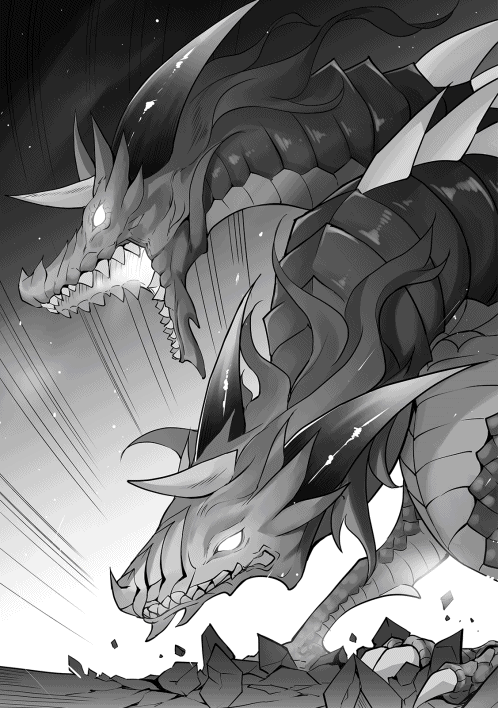

| 異世界は幸せ(テンプレ)に満ち溢れている３ | |
| 羽智遊紀 | |
| TOブックス (2017) | |
カレナリエンとメルタのダブル嫁取りに成功し、人生バラ色の亮二。今度は領主の命令で王立魔術学院に入学するべく、旅立つことに。道中で次々とトラブルに巻き込まれるも、圧倒的チート能力で即解決！ あまりの規格外ぶりに国の有力者たちのスカウト合戦は激化し、亮二はいつの間にか国内の政治的均衡を破壊していた！ だが、そんなことなどお構いなしに、彼は異世界の学園生活をエンジョイしていく！
イラスト●miyo.N
デザイン●木村デザイン・ラボ

目次
プロローグ
おう。これまでの流れは知ってるな？ なに？ 知らない？ ここまで物語を読んで知らないはずはないだろ！ ったく。リョージと同じように、ドリュグルの街で門番をしている俺、マルコ＝ストークマンがもう一度案内してやるから思い出せよ。
俺の前に突然現れたリョージ。こいつがくせ者だ。常識が無いくせに、知識は豊富で剣の腕前は俺よりも凄く、しかも魔術は全属性を使いこなせる。その力を使って、牛人を二度も討伐しやがった。一〇〇年に一人の逸材だと思った俺と、弟で辺境伯であるユーハンは、リョージを名誉騎士にした上で、普段仲良くしているカレナリエンとメルタ、シーヴをメイドとして付けて屋敷を渡した。そう、最終的にはドリュグルに取り囲もうと画策してな。
だが......。知ってるよな？ あいつは二日目にはカレナリエンとメルタにプロポーズして婚約者にしやがったんだぞ！ 信じられるか？ それに婚約指輪に金貨を一〇〇〇枚近くも一括で支払っている。俺がナターシャに渡した指輪は銀貨五枚......。いや！ 金額じゃねえ！ 気持ちが入っているかどうかだ！ ざけんな！ 世の男達を敵に回すつもりか！ それだけあれば一生酒が飲み放題じゃねぇか！ 大体あいつはエレナ姫からも気に入られてやがるし......。
......。ん？ なんの話をしてた？ あ？ 男の嫉妬は見苦しい？ ざけんな！ 誰が嫉妬してるんだよ！ 取りあえず、リョージの奴には王都にある王立魔術学院に入学してもらい、ドリュグルの英雄として存在感をアピールしてもらう予定だ。ただ、あいつの事だから、普通のアピールを超えた学生生活を送る気がするんだよなぁ......。
辺境伯領、特に俺に迷惑を掛けなければ多少は暴れても問題はないが、なぜかあいつが絡むと俺が巻き込まれる。
そして俺の目が届かない事が多い王都ではさらに増える気がする。俺の人生が変わるくらいに......。大丈夫のはずだ！ 問題児のあいつでも、そこまでじゃないと信じたい。いや違うな。どんな問題があっても産まれてくる子供のために頑張らないとな！
お前らもしっかりとリョージの行動を見張っとけよ！ なにかあれば俺に連絡だ！ 電光石火でツッコミを......。ん？ ツッコミ？ ツッコミってなんだ？
一章 王都への道のりが平坦なわけがないですよ
王都まで残り半分の場所でトラブルが起こった。伯爵であり、亮二の主君でもあるユーハン＝ストークマンを目の敵にする貴族派の領主が、亮二達が街を抜けるのを妨害してきたからである。
その領主は配下の者に『ユーハンの配下が街を通る時は時間稼ぎをしろ』と、嫌がらせをするように命じていたようだ。通常よりも手続きに時間が掛かる事を苦情で伝えても、のらりくらりと返事をされ、亮二は二日ほど無為な時間を過ごしていた。
「なんとかならないの？」
「私では分かりかねます。上司に連絡しますので、しばらくお待ちください。お急ぎでしたら遠回りになりますが、森を抜ければどうですか？ 待たなくても進めるのでは？」
半笑いで告げてくる文官に、周りの者がイライラしながら詰め寄ろうとする。それを亮二は片手を上げて止めるとメルタに確認する。
「あの森って、名前とかあるの？」
「昔から盤面の森と呼ばれていますね。なぜ、そう呼ばれているかは記録には残っておりません。分かっているのは、森の中に点在する広場で休憩をすると、魔物が出てくる事です。あの森は一気に通り抜けるしかありませんが、数日かかるので利用されなくなったと聞いております」
メルタの説明を聞いた亮二は、しばらく考えると不遜な態度を取っている文官に対して、無表情のまま低い声で伝えた。
「ではリョージ・ウチノが『森を抜けて行きます』と言っていたと、あなたの主人にお伝えください」
「......。か、畏まりました。我が主に伝えておきます」
亮二の鋭い視線に一瞬たじろいだ文官だったが、なんとか体勢を整えると自身が威圧された事に気付き、忌々しそうにしながら刺々しい口調で言い放った。
「この森は魔物が出ますのでお気をつけて。たった一人の騎士でなにが出来るか分かりませんが」
「ご忠告どうも。そう言えば、貴殿の名前を聞いてませんでしたね」
終始、自分達を見下していた態度の文官から名前を聞き、森での戦闘が問題ない事を文書でもらうと、亮二は今までの無表情が嘘のように笑顔で森に入った。
亮二たちが入った森は鬱蒼としており、視界が極端に悪い場所と不自然なほど整備されている視界の良い場所と交互になっていた。最近は使われていないと聞いていたが不自然なほど街道は整備されており、違和感と共に嫌な予感を与えていた。
「本気で嫌がらせをされたよな。外交問題にならないの？」
「そうですね。私達はユーハン様から王への親書も持ってますし、『無理やり、危険な道を通るように言われた』と報告しますからね。それに、リョージ様があの文官から一筆取れたのは大きいですね。あの領主は今ごろ真っ青な顔をしていると思いますよ。あまりにもお粗末な対応ですよね」
一同は貴族派の領主と、対応した文官の悪口を言いながら進んでいた。光は差しているのに鬱蒼とした森の雰囲気に馴染めないようで、御者を務める文官が緊張しながら肩をさすりつつ広場に辿り着いた事に安堵していると、カレナリエンから鋭い声が飛んできた。
「気を付けて！ 前方から敵を確認！」
「カレナリエンは魔物の名前を教えてくれ。メルタは魔物が見えた時点から弓で攻撃を開始！ 他の者達は馬車から出ないように」
亮二は自らもミスリルの剣を引き抜き、雷属性を剣に纏わせると敵が来るのを待ち受ける。迎撃態勢が整ったタイミングでカレナリエンから敵の名前が告げられた。
「リョージ様！ 魔物の種類は魔ウサギです！」
報告を聞いた亮二は、インタフェースを起動して魔ウサギの検索をする。
魔ウサギ
セーフィリアに広く生息する魔物。ウサギに似ている。動きが素早いため注意が必要。肉は柔らかく人気はあるが腐り易いため、主に干し肉として販売されている。討伐対象ランクＤ。
「でかっ！ え？ こんなに大きいの？」
カピパラ程の大きさを見て叫んでいた亮二の隣でメルタが矢を射掛ける。しかし、魔ウサギはその大きさからは信じられない動きで躱すと、その勢いのまま亮二に突進してきた。
「甘いな！ まずは一匹目！」
一瞬で絶命したのを確認してストレージに収納すると、返す刀で別の角度から突っ込んで来たもう一匹の頭部を斬り裂いた。流れるような動きで三匹目に対して攻撃を仕掛けている亮二。その隙を塗って、残りの二匹が馬車に向かってきた。
「しまった！ メルタ！」
「当たってください！」
亮二からの指示にメルタは馬車の上から魔ウサギに対して連射を続けていたが、全て躱されてしまう。
「あぁ！ 馬が！」
メルタの攻撃を躱した魔ウサギは、馬に狙いを定めると横っ腹に頭からぶつかっていった。もろに攻撃を受けた馬は弱々しく嘶くと、その場で痙攣を起こして倒れてしまった。魔ウサギはその勢いのまま馬車に体当たりを始める。
「メルタは馬車から振り落とされないように！ 私が精霊魔法で......」
大声でメルタに指示を出したカレナリエンが精霊魔法で攻撃をするために詠唱を始めようとして固まった。亮二が見た事のない光を魔ウサギに向かって撃ち放ったのである。
「な、なに？ 今の光は？」
「ゴメン！ 魔法を試してみたかったんだ」
馬車に向かって近付いてくる亮二の言葉を聞きながら、カレナリエンは魔ウサギの背中を確認する。そこには金色に輝きながら、所々から火花が散っている見た事もないものが刺さっていた。
「リョージ様。これは？」
「雷属性魔法を改良してみたら出来たんだよ」
未知なる魔法であろうものに恐る恐る質問するカレナリエンに、亮二は満面の笑みと共に答えを返した。
「改良したら出来た？ 魔法の改良は出来るものなの？」
困惑顔で呟いているメルタに、非常識だと感じた亮二は慌てて言い訳を始める。
「じょ、冗談だよ！ そんな簡単に改良して出来るわけないじゃん。え、えぇと。あれだよ。あれ！ そう！ ニホン国では標準であるライトニングショットって魔法なんだよ！」
苦し紛れの言い訳を言いながらカレナリエンとメルタの顔を見たが、どう見ても誤魔化せてはいないようだった。だが、二人は互いに顔を見合わせると小さく頷いた。
「まあ、リョージ様ですからね」
「そうだね。それで片付けましょう」
二人のつぶやきは聞こえなかった亮二だったが、二人から追求がなかったので安堵しながら索敵モードで敵がいなくなった事を確認する。
「敵もいないから休憩にしよう」
「畏まりました」
魔ウサギを倒した一行は休憩に入った。カレナリエンとメルタは念の為に周りを警戒しており、戦闘に参加していなかった者達が、倒した魔ウサギを解体して料理を始めていた。
「リョージ様のアイテムボックスは色々と入っていると聞きました。どのような物をお持ちなのですか？」
「聞きたい？ 野菜に果物や調味料だろ。それに果実水もあるし、酒もあるけど今は出さないぞ。他にも皿とスプーンもあるぞ。他にも......」
同行している文官に話しかけられた亮二は、嬉しそうにストレージに入っている道具を次々と出し始めた。唖然とした表情で亮二を眺めていた文官だったが、カマドが出て来た時には驚きのあまり腰を抜かしそうになった。
「カ、カマド？ 調理台！ い、今、アイテムボックスから出されましたよね？」
「ん？ カマドだぞ？ ひょっとしてカマドの数が足りないか？ 魔ウサギは全部で五匹だもんな。燻製でも作るか。よし、分かった。ちょっと待ってろ。今から作るから」
亮二は文官の問いかけを数が少ないと勘違いしたまま頷くと、土属性魔法で同じようなカマドを並べ始めた。
「今回だけだから作りが雑でも問題ないだろ？ 後は調理用の水だよな。この樽は栓を捻ったら下から水が出るようにしといたぞ。その方が楽だろ？」
亮二は次々とかまどや樽を作りだし、樽には水属性魔法で満たして栓を捻って水が出る事を確認した時点で、そこで初めて唖然としたまま固まっている文官に気付いた。
「おーい！ どうした？ 料理を始めようぜ」
「は、はい！ 私はしっかりしております！ これから料理を始めます」
悪い夢から覚めたようなぎこちない動きで料理を始めた文官に首を傾げていると、苦笑いを浮かべたカレナリエンとメルタが近付いてきた。
「だめですよ。リョージ様。慣れていない人に非常識を押し付けるのは。ねえ。カレナリエン？」
「そうそう。リョージ様は非常識の塊なんですから」
二人から非常識呼ばわりされた亮二は、地味に落ち込みながら火属性魔法で点火をすると鍋に水を入れて調理を始めた。
「ちょっと気になる事あるんだよね」
魔ウサギの肉を使ったシチューや串焼きは好評で、さらに保存食として作った燻製も満足のいく出来映えだった事に気をよくした亮二は、食後のデザートと紅茶を用意して寛いでいた。
「なにか気になる事が？」
「盤面の森を索敵したけど、広場があちこちあるんだ。それと、この広場の所有者が俺になってた」
「広場の所有者がリョージ様？ なにか意味があるのでしょうか？」
「取りあえず、次の広場に進んでみよう」
カレナリエンの質問に亮二も答えを持っているわけではなく、お互いに首を傾げながら荷物を片付けるように指示を出すと、次の広場に馬車を進めた。次の広場は先程より小さく、亮二達が広場に入ると魔ウサギが三匹襲ってきた。
問答無用で亮二がライトニングショットで一気にケリをつけ、索敵モードで確認すると所有者は亮二になっていた。
「やっぱり。ここも俺が所有者になってる。この広場にいる魔物を全て倒したら、所有者になるみたいだな。それと、この森の広場は盤面みたいに配置されてる。どんな意味があるかは分からないけど、森全体で大小三〇以上あるよ」
「不思議ですね。嫌な予感がしますので、最短を目指して進んだほうが良いか......」
「でもさ！ 所有者が俺になるって意味があると思わない？」
カレナリエンの意見にメルタや文官達も頷いていたが、日を輝かせている主人の顔を見て諦めの表情となった。
広場の攻略を始めた亮二は五日間で所有者を三五個としており残り一つとなった広場に突入した亮二達は、今までにない広場の大きさに驚いていた。
「おぉ！ この広場は物凄く大きいな」
「本当ですね。今までとは大きさが──」
亮二の感想にメルタが答えようとした時に、広場全体に無機質な女性の声が響き渡る。
『チャレンジ最終面です。五分後に最後の敵が現れます。命の保証は出来ませんので、挑戦者以外の方は最終ステージより退去して下さい。繰り返します。挑戦者以外の方は最終ステージより退去して下さい』
「な、なに？ どこから声が？」
突然、広場全体に聞こえた声に一同が困惑している中、女性の声はカウントダウンを始めた。
「この広場で最後みたいだな。カレナリエン、メルタ。急いで一つ前の広場に退避！ その場で非戦闘員の護衛！」
「リョージ様！ 一人で戦うつもりですか？ せめて私だけでも残ります！」
亮二の命令に、カレナリエンが反論してきた。自分の事を心配しているのを感じた亮二は軽い感じで答える。
「さくっと倒すから心配しないで！」
「......。分かりました。でも、絶対に無茶しちゃダメですよ！ 危なそうになったら逃げて下さいね」
心配顔のカレナリエンとメルタを笑顔で送り出すと、亮二はミスリルの剣を構えると、広場の中央で敵が出てくるのを待った。
準備が終わるのを待っていたかのように、広場の奥から地響きが聞こえてくる。その音だけで魔物の大きさが分かる程であり、目の前で木々が倒れ魔物が姿を現したのを確認した亮二は歓声を上げる。
「おぉ！ ドラゴンだ！」
亮二の嬉しそうな声に反応するようにドラゴンは咆哮を上げる。その大きさはダンプカーほどあり、身体は鱗に覆われ鋭い爪と牙が見て取れた。ドラゴンは自らの咆哮に反応がない事を不快に感じたようで、もう一度咆哮を上げると亮二に向かって突進を開始した。
「あれ？ 全く効いてない？」
間合いを取りながら側面に回り込みつつ放ったライトニングショットは、ドラゴンの鱗で止まったようでダメージはなかった。ファイアアローやアイスアローを連射したが、効果がない事を確認した亮二は間合いを取ると作戦を練ろうとした。
「なっ！」
自分の方が優勢であると亮二に油断が生じていたのであろう。突然動きを止めたドラゴンに訝しげな表情を浮かべつつ様子を見てしまった。立ち止まったドラゴンが姿勢を低くすると火炎ブレスを吐きかけてきた。慌てて回避しようとした亮二だったが、ブレスを完全に躱す事は出来ず右腕に火傷を負ってしまう。
（痛い！ 痛い！ マジで痛い！ 体力は？ 八二パーセント？ 痛すぎて集中出来ない！ 早く回復を──。なっ！ 突撃？ 回避しないと！）
「がっ！」
ブレスを回避した亮二が、その場でインタフェースを起動して残りの体力を確認する。棒立ち状態の隙を逃す訳はなく、ドラゴンは姿勢を低くしながら突撃をしてきた。慌てて回避した亮二だったが、まともに突撃を受けてしまう。不可視の盾形ガントレットで直撃は防いだものの、勢いを殺す事は出来ずに弾き飛ばされてしまう。
「畜生！ よくもやってくれたな！ 今度はこっちのターンだ！」
なんとか体勢を整えた亮二はストレージからポーションを取り出して飲み干すと、ミスリルの剣に雷属性魔法を二重で掛けてドラゴンに向かって走り出した。
突撃をしてきた亮二に、ドラゴンが前足で踏み潰そうとする。ギリギリで回避した亮二は脚が地面に着いたタイミングでミスリルの剣を突き刺した。
「よし！ 二重掛けの攻撃は効いた！」
距離を詰めて攻撃してくる亮二に、前足を攻撃された痛みで目の前の相手が危険だと気付いたのか、ドラゴンは一気に勝負を決める為に咆哮を放ちながら尻尾で振り払った。
しかし、その場所には亮二はおらず、素早く左足に回り込み、ミスリルの剣を鍔の辺りまで突き刺すと雷属性をさらに追加した。三重の雷属性が付与された瞬間にミスリルの剣が光り輝き始め、激しい音とともに爆発を起こす。
「な、なんだ？」
爆発でドラゴンに突撃された時以上の勢いで吹き飛ばされた亮二は、転がりながらも体勢を整えつつミスリルの剣を構えて立ち上がる。だが、ドラゴンは消失した左足の痛みでのたうち回りながら、怒りのあまりブレスを吐き続けていた。
「おぉ！ 効いてるな！ よし！ 一気に勝負を決めてやる！」
亮二は土属性魔法を使って巨大な壁を作ると、隠れるようにしながら背後に回る。突然、目の前に現れた壁を破壊しながら獲物を探していたドラゴンに、亮二は背後から一気に背中を駆け上がると、首の辺りにミスリルの剣を突き刺した。背後から致命傷となる攻撃を受けたドラゴンはしばらく暴れまわっていたが、徐々に勢いを無くすと大きな音を立てて動かなくなった。
ドラゴンが死んだ事を確認した亮二は、ドラゴンの首筋からミスリルの剣を引き抜き大声で叫んだ。
「ドラゴンスレイヤーになったぞ！」
亮二の叫び声を引き継ぐように広場にファンファーレが鳴り響く。そして、戦闘開始を告げた無機質な女性の声が再び聞こえた。
『おめでとうございます。クリア時間は五日と十三時間四十分となり最短記録となります。攻略記録を更新されたプレイヤーに、特別報酬として盤面の森の下位管理者権限がプレゼントされました。名前の登録をされますか？ されない場合はそのままスキップして下さい。登録作業終了後に報酬の説明に入ります』
「下位管理者権限？ なんだそれ？」
説明している声に亮二が呟くと、『ヘルプ機能発動、下位管理者権限について説明をします』との声と共に説明が始まった。
『下位管理者権限は盤面の森を管理する権限です。盤面の作り変え、ラスボスを含む魔物の配置と広場の設置が可能です。但し、規定数以上の配置は不可能となります。別のユーザーが最速でクリアしない限り、管理者権限は亮二様のままとなります』
「さっきから俺の世界の言葉を喋ってる感じがするけど気のせいじゃないよね？ ラスボスとかクリアとか言ってるし」
「ヘルプ機能については作成者の情報が元になっています。ご質問の件については答えを持っておりません」
「分からないなら別にいいや。ちなみに二位のタイムは？」
「二位のタイムは七日と十六時間二五分となります。プレイヤー名はアマデオ＝サンドストレム様です。最終ログイン時間は一八八五九六日前です」
「えっ？ プレイヤー名と最終ログイン時間をもう一度！」
「プレイヤー名はアマデオ＝サンドストレム様。最終ログイン時間は一八八五九六日前です」
どこかで聞いた事のある名前も気になったが、最終ログイン時間を再度確認した亮二は呆然としながら呟いた。
「えぇと。なんか凄い数字が出て来たな。適当に三六〇日で割って五〇〇年前くらいだよな。随分と前から誰もやってなかったんだな。それにしても作成者って誰だ？」
『名前登録をされますか？ されない場合はスキップをして下さい』
盤面の森の作成者について考えていると催促の声が聞こえてきた。亮二は取りあえず作成者の事は後で考える事にして答える。
「プレイヤー名はリョージ・ウチノで」
『リョージ・ウチノ様で登録致しました。同時に下位管理者権限も付与しておりますので、変更がありましたらご連絡下さい。それでは次に報酬となります。ドラゴンの財貨箱に、魔道具二点、ミスリル鉱石が三キログラムと、ワイバーン魔石が三〇個となります』
「おぉ！ そんなにもらえる！ ちなみに魔道具二点はなに？」
『ご質問にお答えします。魔道具二点は流水の剣と拡張の部屋になります』
名前を聞かれても分からなかった亮二は、インタフェースを起動すると拡張の部屋と流水の剣について検索を始めた。
拡張の部屋
手のひらサイズの箱だが、壁に貼り付けると扉になる。中には台所と、一〇人程度が生活出来る部屋がある。取り外しは自由だが、中に人がいる場合は取り外す事は出来ない
流水の剣
水のように流れる刃紋が見る者を惹きつける剣。切れ味は鉄剣と変わらないが、攻撃をすると水属性が自動で付与される。
「へぇ。両方いいじゃん。特に拡張の部屋なんて、馬車に取り付けたら最高じゃね？」
『報酬は以上です。他になにかご質問はありませんか？』
ドラゴンの前に唐突に現れた報酬をストレージに収納しながら、空に向かって答える。
「特にないよ」
『畏まりました。またのご利用をお待ちしております』
声が聞こえなくなったと同時にカレナリエンとメルタの声が広場に響いた。
「リョージ様、ご無事ですか！」
「おう！ こっち！」
カレナリエンとメルタが心配顔で広場に入ってきた。亮二は二人に向かって嬉しそうに手を振る。亮二に気付いた二人は無事な事を喜びながら、その背後にある巨大なドラゴンを見て恐る恐る近付く。
「リョージ様。このドラゴンと戦われたのですか？」
「そう！ 倒すの大変だったよ」
呆然とした様子でドラゴンを見上げながら呟いたメルタに、亮二が満面の笑みで返事をするとカレナリエンがこめかみを押さえながら話しかけてきた。
「マルコの気苦労が物凄く分かった気がする。いいですか。リョージ様！ ドラゴンは一人で倒せる魔物ではないのですよ。それこそＡランク冒険者をレイドクラスで集め、作戦を立て、装備を整えた上で勝つ見込みがやっと出てくるのですよ。それを一人で倒す？ ひょっとして財宝持ちのドラゴンじゃない若いドラゴンだったから？ それだったら、リョージ様の強さがあれば倒せるかも」
最後の方は独り言になっていたカレナリエンの言葉に、ドラゴンの財貨箱が報酬であった事を隠して亮二は話し始めた。
「そう言えば盤面の森について分かったよ。これってドラゴンを倒すまでの時間を競うゲームだって。俺が最短記録を更新した報酬として、この森の管理者になったらしいけど問題ないよね？」
「管理者の件については王家に判断を求める事になりますね」
カレナリエンと亮二の会話を聞きながら、ドラゴンを倒した事実をやっと受け入れたメルタや文官たちが会話に参加してきた。
「報酬が出たとの事ですが、なにをもらわれたのですか？」
「あぁ。これだよ」
ストレージから拡張の部屋と流水の剣、ミスリル鉱石を一キログラムと少なめに取り出しながら、心の中で『バレないから大丈夫』と呟きながら、周りに見えるように置くと説明を始めた。
盤面の森を一週間ぶりに抜けた亮二達は、王都に向けて馬車を進ませていた。王都までは三日を残す距離まで来ており、風景を楽しみながら余裕の旅となっていた。
「リョージ様。貴族派の妨害については放置でよろしかったのですか？」
「いいんじゃない？ 結果論だけど、ドラゴンが丸々手に入ったし、魔道具の使い勝手もいいし、盤面の森の管理者権限ももらったからね。それに、俺達が森から戻らないから、死んだと思っているんじゃないかな？ それにしても平和だね」
「ここまで魔物の姿を見ない事も珍しいですね。普通は遠目でも姿くらいは見えるのですが」
魔物の姿が見えない事に気をよくしながら文官が答えていた。亮二は会話をしながら索敵モードの範囲を五〇〇メートルにして警戒をしていたが、一〇頭ほどの魔物が明確な敵意を持って近付いて来ているのを確認すると、ストレージからミスリルの杖を取り出しつつ文官に話しかけた。
「そう言えばさ。魔物の姿が見えないのは珍しいと言ったよな？」
「ええ。言いましたが？」
「俺の国にはフラグって言葉があるけどさ。『珍しい』とかはフラグになるから気を付けた方がいいよ」
「なんの話です？」
文官が首を傾げていると、御者席の右手側から土煙が上がっている事に気付く。文官が見た魔物達は、遠目でも大きな角と身体をしている事が分かり、その中でも先頭を走っている個体については別格に大きかった。
慌てて馬車を止めようとした文官だが、魔物の集団はかなり近付いており、急な方向変換は難しそうであった。
「ど、ど、どうしましょうか！ リョージ様！」
「そんなに慌てなくても大丈夫。すぐ終わるから。ライトニングニードル二四連」
亮二は杖を魔物達に向け呟くと、ライトニングショットよりも細くて短い金色に輝く針のような光が亮二の頭上に二四本現れた。光り輝く針は、一番大きな魔物に四本が、残りには二本ずつ後続の魔物達に向かって飛んでいくと眉間に突き刺さった。
「よし終わり！ 回収しに行こうぜ」
亮二の声に我に返った文官は、あまりの早業に口をパクパクさせていたが、諦めたかのように首を振ると馬車を魔物の群れに向けて進めた。
「私達が仮眠している間に魔物が襲ってきたのですか？」
「でも、俺が一撃でやっつけたから！」
「次からは起こして下さいね。前にも言いましたが、冒険者として魔物の襲撃中に寝ていたなんてありえませんから」
「ごめん。次から注意するね」
二人から許された亮二は、ストレージに収納していた魔物を一匹取り出して、カレナリエンに確認する。
「これは巨大な角牛ですね。普段は群れで生活する大人しい魔物です。ただ、一頭討伐するだけでも結構大変ですよ」
「そうなんだ。ちなみに全部で一一頭討伐したけど？」
「えっ？ 一一頭も討伐？ ま、まあ。リョージ様なら当然でしょうね。でも、大変だったんじゃないんですか？」
「一〇秒も掛からなかったよ？ ねえ？」
亮二は乾いた笑いで頷いている文官を見ながら、ドラゴンスレイヤーなら出来て当然と無理やり納得しているカレナリエンに巨大な角牛について説明をしてもらった。
「えっと。お肉は美味しいです。それと、角は薬の材料になります。頭部が無事な場合は剥製にして飾る貴族もいます」
「それは良い事を聞いた。じゃあ、巨大な角牛をどうするかは、この先の貴族に決めてもらおう。割安で売ってもいいかも。それで縁が出来れば最良だろうしね」
亮二達一行が教皇派貴族の街についたのは夕方頃だった。王都に近い都市のはずだがあまり活気があるようには見えなかった。城門も閉ざされ、フルアーマーを着込んだ上にラージシールドを構えた門番が立っており、戦争が始まるように見えた。
亮二達の馬車以外には周りには誰もおらず、物々しい雰囲気の中で門に近付いた一行に誰何の声が届く。
「そこで止まれ！ その場から一歩も動くな！ どこから来た！」
「私達はドリュグルの街から王都に向かっております。怪しい者ではありません。なにが起こっているのか教えていただけませんでしょうか？」
亮二が馬車から降りて礼節スキルを使った挨拶をすると、門番からの緊張感が少し柔らいだように感じた。
「失礼いたしました。申し訳ありませんが、緊急事態につき身分を証明出来る物をご提示下さい」
「分かりました。では、主君からの王家宛への手紙と、私の冒険者証を提示します」
亮二の言葉に文官が荷物から王家宛の手紙を門番に渡し、亮二は自身の冒険者証を提示した。門番は辺境伯ユーハンの封蝋を確認すると恭しく扱いながら手紙を返却し、亮二の冒険者証は軽い確認で返却しようとして固まる。しばらく冒険者証と亮二とを交互に見ていたが、震える声で話しかけてきた。
「ぼ、冒険者ランクＢの、ドリュグルから来られた、リ、リョージ様で間違いないですよね？」
「そこに書かれている通りで、最近Ｂランクになったリョージ・ウチノです」
亮二を崇拝するような目で見てくる門番に首を傾げていると、興奮した声で叫ぶように確認してきた。
「あのドリュグルの英雄ですか！」
「『あの』が、なにを指しているのか分かりませんが、ドリュグルの街ではそう呼ばれてました」
亮二の言葉に門番は慌てて冒険者証を返却すると、恭しく敬礼して謝罪を始めた。
「謝罪は受け取ります。ところで、今の状況を教えていただけますか？」
「この周辺に暴走する巨大な角牛が居着いておりまして、人を見かけると縄張りを侵されたと勘違いして襲ってくるのです。この辺りは、いつもなら巨大な角牛が二、三頭で群れを作っていますが、今回は暴走する巨大な角牛が一〇頭で群れを作っており、手が付けられない状態です。ん？ どうかされましたか？」
門番の説明を聞いて小首を傾げた亮二に、門番が訝しげに問いただす。
「いや。ちなみに暴走する巨大な角牛は、巨大な角牛より大きい個体で、先頭を走ってるやつだよね？」
「その通りです。どこかで見られましたか？ 情報料を支払いますので教えてください！」
「倒したら報奨金とか出る？」
「もちろんです！ ギルドにも金貨一〇枚で討伐依頼を出しております。討伐依頼とは別に部位の報酬と買い取りは計算される事になります」
「ギルドで依頼を受諾してなくても問題ないよね？」
亮二からの質問に答えていた門番だが、だんだんと不審な顔になり確認する。
「どうかされましたか？」
「倒した」
「は？」
亮二は口が半開きになっている門番を見て、実物を見せないと納得してもらえないと感じ、ストレージから暴走する巨大な角牛を取り出した。
「ほら見て！ 暴走する巨大な角牛を倒したんだよ！」
「へ？ し、失礼しました！ これが暴走する巨大な角牛？」
暴走する巨大な角牛はどこも傷付いておらず、今にも起き上がって襲ってきそうな鋭い眼光をしていた。呆然としている門番に、亮二は暴走する巨大な角牛だと思われていないと勘違いすると、その横に巨大な角牛を並べ始めた。
「リョージ様！ 別に疑っているわけでありません！ 呆然としただけですので、片付けていただけますか？」
「そうなの？ 一一頭とも同じ感じで討伐したから、討伐部位も買取も綺麗な状態で確認出来るよ？」
「上に報告しますので一緒に来て下さい！」
門番は興奮した表情で亮二と一行を、領主の館に連れて行く為に門を開けるのだった。
「なに？ 暴走する巨大な角牛が討伐された？ まだ王都からも、ギルドからも応援は来ていないはずだが？ この街に高ランクの冒険者が来ていたのか？」
意外な顔をしながら教皇派の領主であるハーロルト＝コルトレツィスは報告を受けていた。盤面の森と接触している領地の北側は、草原が広がっているだけで戦略的に重要ではなかったが、盤面の森での伐採が出来ない事は問題であった。
だが、配下の騎士団を使って討伐するには暴走する巨大な角牛は危険であり、王都かギルドからの応援で対応する予定であった。
「討伐されたのならありがたい事だな。さぞ名のある冒険者が討伐したのであろう」
「ドリュグルの英雄殿が討伐したそうです」
「ドリュグルの英雄？ あの、ユーハンの秘蔵っ子か。なぜ我が領地に？」
「王立魔術学院に入学するため、王都への途中との事です」
「すると年齢は一一才程度か？ 末恐ろしいな」
感心したように呟いていると、報告者が歓待内容を確認してきた。ハーロルトは鷹揚に頷きながら答える。
「草原の安全を確保した英雄殿に対して、礼を失しないようにな」
そう告げながら、ハーロルトはドリュグルの英雄である亮二を取り込めないかと、検討を始めた。
「ようこそ英雄殿。我が名はハーロルト＝コルトレツィス。世間からは教皇派の筆頭と言われておる。ドリュグルの英雄殿のお陰で、我が領地が安全になった事を感謝いたしますぞ」
「リョージ・ウチノと申します。困難に対するのは騎士の務めであると、我が主のユーハンより言われております。それに、私は冒険者でもあります。魔物討伐は生活をするために必要なのです」
「はっはっは。ドリュグルの英雄殿は油断ならぬ方だ。騎士の務めと言われただけなら、感謝の書状と取り決めた金額で済んだのが、生活のためと言われれば相応の謝礼を用意する必要がある」
ハーロルトは嬉しそうにしながら頷くと、控えていた使用人が革袋を恭しく亮二に差し出してきた。思ったよりも重量のある袋に、亮二は軽く首を傾げながら質問をする。
「失礼ですが、門番の方から討伐の謝礼はギルド経由で金貨一〇枚と聞いております。それよりも多いようですが？」
「それは王都から援軍を呼ばなくても良くなった分だと考えてくだされ。それとギルド経由でないのは、貴殿が依頼を受けておらぬと聞いたからじゃ」
亮二はハーロルト公を失礼にならない程度に観察する。見た目の穏やかそうな感じとは裏腹に、眼光は鋭く自分の事を値踏みしているように感じた。サラリーマン時代に相手をしていたやり手の社長を思い出させたハーロルトに、亮二は警戒レベルを一段階上げた。
「ところで、少しだけ相談があるんじゃが、聞いてもらえますかな？」
「ほら来た」
亮二は小さく呟くと、先制攻撃のように先に話しだす。
「暴走する巨大な角牛の扱いについてでしょうか？ ハーロルト様の領地で討伐した魔物であり、依頼も受けずに討伐したので扱いに困っていました。公爵なら素敵な提案をしていただけると期待しております」
亮二に全てを言われ、軽く驚きの表情を浮かべていたハーロルトだったが、徐々に笑顔になり、顎のあたりで手を組むと詳細な提案を始めた。
「もうすぐ王都で王立魔術学院の入学式があるが、同じ時期に貴族は王へ謁見をする。そこで、リョージ殿が討伐された暴走する巨大な角牛を剥製にして王に献上しようと考えておる。申し訳ないが譲ってもらえないだろうか？」
「え？ それだけで良いのですか？ てっきり手柄全て譲って欲しいと言われると......」
「そこまで厚かましい事は言えんよ。それに今ごろ『ドリュグルの英雄が暴走する巨大な角牛を討伐した』と門番が触れ回ってるだろうからな」
提案が思ったよりも軽めだった事を意外に感じながら亮二は更なる提案をする。
「では、暴走する巨大な角牛も含めて一一体を全てお譲りしましょう。ですが、私からもお願いがあります」
亮二から提案があると聞いたハーロルトは警戒するように僅かに目を細めると、続きを話すように促す。
「私からの提案は、『暴走する巨大な角牛討伐の援軍要請を、王都とドリュグルに出した事にして欲しいのです。我が主のユーハンは要請を受け、配下の騎士であり冒険者でもあるリョージ・ウチノを、学院へ向かう前に派遣した』との筋書きです。いかがでしょうか？」
「リョージ殿は、その提案でなにを狙われておる？」
「我が主とハーロルト様の顔繋ぎが出来れば」
亮二の提案をハーロルトは考える。今は教皇派と貴族派は二分する勢力を保っている。だが、そこにユーハンの勢力を加えると大きなメリットになるだろう。辺境伯のユーハンはやり手との評価であり、亮二からの提案はメリットしかない。ハーロルトは二つ返事で了承する事を亮二に伝えた。
閑話 便りがあるのはトラブルの印
一通目の手紙
「リョージから手紙？」
手紙を受け取り読み始めたユーハンは内容に呆気に取られ、徐々に笑い出し、最後には大声で笑った。ユーハンの一連の動きを心配そうに眺めていたマルコに、涙を拭いながら手紙を渡す。
「まあ、取り敢えず読んでくれ。リョージの行動は、俺達の予想を裏切るどころか、一周回って『やっぱり、リョージだな』と思うから」
その手紙を読んだマルコは盛大なため息を吐きながら、なんとも言えない顔でユーハン伯に手紙を返した。
「どっから突っ込んでいいのか分からんな。なんで王都に行くだけなのに、ドラゴンを倒してるんだよ。盤面の森でドラゴンが出るなんて聞いた事もないぞ。それに盤面の森はゲーム？ 最短記録を更新したから管理者権限をもらった？ この内容を知ったら、あそこの貴族なら全て取り上げるんじゃないか？」
「そこは先に手を打っておく必要があるな。ちなみに、そこに書かれている前回の攻略者に心当たりがあるだろ？」
「ん？ 流し読みしてたわ。アマデオ＝サンドストレム？ 建国王じゃないか！」
マルコの叫び声にユーハンは苦い顔をしながら話を続けた。
「この情報は王家には伏せといた方が良いな。リョージの手紙にも自分達以外は知らないと書いてるから、早急に箝口令を敷く必要がある」
「リョージの取り合いが始まるな」
マルコの呟きにユーハンは頷きながら、亮二への手紙を早急にしたためるのだった。
二通目の手紙
「またリョージから手紙が来た？」
ユーハンは文官から手紙を受け取り読み始める。笑顔になったり、青い顔をした後に安堵の表情を浮かべたりなど、普段からは想像も付かない主君の表情に手紙を渡した文官が心配そうにしていると、その視線に気付いたユーハンは対外対応をする者とマルコを呼ぶように伝えた。
「どうした、またリョージから手紙が来たそうだが、今度はなにをやらかした？」
「リョージ達一行は教皇派の筆頭である公爵領に到着した。そこで暴走する巨大な角牛を討伐したらしい」
「相変わらずだな。どうせ一人で倒したんだろう？」
「ああ、手紙によると、暴走する巨大な角牛と、群れの巨大な角牛を合わせた一一頭を同時に倒したらしい」
「は？ 無理に決まってるだろ！」
マルコの声に同席者が一斉に頷いた。その様子を見ながら、ユーハンは残念そうな顔をすると、マルコに向かって手紙に書かれている伝言をする。
「リョージからお前に伝言だ。『「無理に決まってるだろ！」なんて、つまらないツッコミはするなよ』だそうだ」
「おい。ちょっと、その手紙を見せて見ろよ。......本当に書いてやがる！」
ユーハンから手紙を奪ったマルコが中を確認すると、間違いなく書かれており、脱力したように手紙をユーハンに返した。
「じゃあ、続きを読むぞ。『公爵と会談をし、暴走する巨大な角牛は譲る事になりました。公爵からの依頼でユーハン様が対応した事にしましたので、よろしくお願いします。あと、公爵から会談の希望が出ています』だとさ」
ユーハンが一気に読み上げた内容に亜然とした一同だったが、マルコがいち早く回復するとため息を吐きながら話し始めた。
「あらゆる手を使って繋がりを持とうとして出来なかった公爵との会談をして、しかも俺達の売り込みに成功したのか？」
「ああ、それだけじゃないぞ。手紙には続きがある。『やっほー。儂！ 儂！ 儂？ ハーロルトって言うんだ。今度、王都で会うのを楽しみにしてるよ！』と公爵の自筆で書かれてある。ご丁寧に署名付きでだ」
ユーハンの読み上げに、先程の沈黙など比ではない完全なる沈黙が訪れる。先に手紙を読んでいたユーハンが、この空気を打開するためにマルコに話しかけた。
「ほら、ツッコミ担当。この空気を救ってくれ」
「無茶な事を言うな！ そもそも俺はツッコミ担当じゃねえよ！ 俺達が知ってる公爵は冷徹なる遂行者であり、神の怒りを体現出来る男との二つ名を持つ男だよな？ 間違っても『やっほー』なんて書かない！」
マルコの怒鳴り声に近い叫び声を聞きながら、ユーハンを始めとする一同は亮二がどんな会談をしたのかと疲れ切った表情を浮かべるのだった。
二章 王都に入るまでも入ってからも大騒動
「あれが王都か」
あまりの巨大さに唖然とした表情で呟いた亮二を、ハーロルトは嬉しそうに眺めながら語り出した。
「流石のリョージも驚いたようじゃな。あれこそが我がサンドストレム王国が誇る王都である。あと一時間以上は掛かるから、ゆっくり進もうぞ」
「公爵。そろそろ馬車に戻られた方が......。お付きの方々が、焦った顔で何度も......」
楽しそうに亮二と語り合っているハーロルトに、カレナリエンが恐る恐るな感じで声を掛ける。亮二の馬車に設置された拡張の部屋で、ハーロルトはワインを飲みながら完全にくつろいでいた。
「構わん。そもそも、リョージの馬車が快適過ぎるのが良くない。冷たいワインが用意されているわ、リョージのアイテムボックスから温かい料理は出て来るわ。それに全く揺れない馬車！ こんな素晴らしい物は王ですら持ってないだろう。見てみろ！ テーブルに置かれたワイン。全く揺れがないではないか。どうじゃ、リョージよ。この魔道具と馬車を金貨二千枚で儂に譲ってくれまいか？」
「金貨二万枚を積まれてもお断りです」
拡張の部屋と馬車がよっぽど気に入ったのか、ハーロルトが買い取ろうと持ちかけてきたが、亮二は笑顔で断りを入れた。
「儂の馬車に付いて来るように」
流石に亮二の馬車で王都に入る訳にもいかず、ハーロルトは名残惜しそうにしながら自分の馬車に戻った。王都にある城門には長い行列が出来ていたが、ハーロルトと亮二の馬車達は行列の横を悠々と抜けようとする。だが、亮二の馬車だけは止められてしまう。
「お止り下さい！ 爵位と名前を確認いたします」
「辺境伯ユーハン＝ストークマン配下の騎士リョージ・ウチノと申します。縁があってハーロルト様とご一緒する約束をしております」
「騎士？ はっ！ 騎士風情と、公爵であるハーロルト様がご一緒される訳がなかろう！ さっさと平民の列に並び直せ！ そもそも、貴様が騎士というのも怪しいものだ」
「あの長い列が一般側ですね。畏まりました。では、そちらに並ばせてもらいましょう。おい。馬車を戻せ」
ここで揉める事は得策ではないと判断した亮二は最後尾に並ぶ。しばらくすると、美味しそうな匂いが漂ってくる事に気付いた亮二は、屋台が並んでいるのを発見すると嬉しそうに叫んだ。
「おぉ！ 沢山あるじゃん！ 片っ端から食べていこう！」
その声に屋台中から声が上がる。
「俺の焼いた肉は絶品だぞ！」
「お兄さん！ こっちも買っとくれ！」
「今なら、五皿買ってくれたら一皿オマケするぞ！」
威勢の良い声に亮二は満面の笑みを浮かべると、馬車から飛び降りて次々と食べ物を購入する。
「結構いけるな。カレナリエン。メルタ。それに皆も遠慮せずに好きなのを買ってきたらいいぞ。一人に対して銅貨五十枚渡すから、色々と買ってきくれ。一番旨いのを買ってきた人には賞金で銀貨一枚だ！」
亮二の提案に一同は歓声を上げる。自分の勘と今までの経験を元に、美味しい物を探しに飛び出した。
王都に入る為の列は遅々として進まず、亮二は屋台で買ってきた物を全て食べ尽くしていた。物足りなさを感じていると、おずおずとした小さな声が亮二の耳に届いた。
「あ、あの！ 旦那様」
「ん？ 俺か？」
「はい。私の商品も買っていただけませんでしょうか？」
亮二が声の主に視線を向けると、自分と同じ年くらいの少女が小瓶を手に、震え声でお願いをしていた。
「これは？」
「甘い調味料です。粘り気がありますので、取り扱いには気を付けて下さい」
「粘り気のある甘い調味料？ ちょっと味見していい？」
「大丈夫です。お気に召されたら買っていただけませんでしょうか？」
少女から小瓶を受け取った亮二は、蓋を開けると中を覗き込んだ。日本で見た事のある透明な液体に、木の棒を付け回しながら引き上げる。
「ひょっとして水飴？」
亮二は小さく呟きながら、透明色の粘度の高い液体を口に入れた。すると、素朴な風味と甘味が口の中に広がり、懐かしさが心を満たす。久々の味に感動で固まっている亮二に、少女が恐る恐る話しかけた。
「だ、旦那様？ なにかお気に障るような事が？ きゃ！」
少女は突然に腕を掴まれて軽く悲鳴を上げてしまう。
「ゴメン！ この調味料の値段は？ 金貨一枚？」
「と、とんでもございません！ そのような高級品ではありません」
「あるだけお願い！ ちなみに作り方を教えてもらう事は？」
「申し訳ありません。代々受け継がれた秘伝ですので。それに、族長しか作り方を知りません。今ある二瓶でご容赦下さい」
「じゃあ、族長と会わせてもらう事は出来る？ 王都で生活するから、時間はそちらに合わせるけど？」
「では、族長に相談します。旦那様のお住まいはどちらですか？」
「まだ決まってないんだった！ 住む所が決まったら、冒険者ギルドに伝えるから訪ねてきてよ」
亮二はそう伝えながら、族長宛の手紙と金貨十枚を皮袋に入れて一緒に手渡した。
「お預かりします。旦那様のお名前を教えていただけますか？」
「リョージ・ウチノ。君の名前は？」
「私はソフィア＝ラレテイです。必ず冒険者ギルドで住所を聞いてお伺いします」
少女は手に持っていた瓶を二つとも渡すと、族長に報告するために帰った。
「な、なに？ なにがあったの？」
水飴を眺めながらニマニマとしていた亮二だったが、大量の人が集まってきた事に驚きの声をあげる。その中にカレナリエンやメルタ、文官達がいたので確認をすると、屋台の店主に『美味しい料理を買ってきた者に賞金が出る』と言いながら買い物をしたらしく、その話を聞いた店主達が直接売りに来たとの事だった。
「兄さん！ この肉は巨大な角牛の肉なんだよ。王都でも限られた人しか食べられないよ！」
「こっちの干しキノコのお化けを戻した後に、塩焼きをしているよ。さっぱりとして美味しいよ！」
「肉ばっかり食べてると体調が悪くなるよ！ こっちのリイゴの実はどうだい？」
「すみません、リョージ様。思った以上の騒動になっちゃって」
「私達も楽しかったので、はしゃぎ過ぎたようです」
カレナリエン、メルタが申し訳なさそうに謝罪をしてきた。
「楽しかったらいいんだよ」
特に気にしていないと二人に答えながら、勢い良く売り口上を述べている店主達を見ながら亮二は考え込んでいた。
（ストレージがあるから全部買っても良いけど、この人達って、俺が提案した勝負に参加した感じだよな？ だったら一番を決めた方がいいか）
生真面目に勝負事として目を閉じて考え始めた亮二に、店主達の売り声がだんだんと小さくなっていく。静まり返ったタイミングを見計らったかのように目を開くと提案を始める。
「よし！ じゃあ人気投票をしよう！ これから色を付けた木片と箱を用意するから、売れた個数と同じ数の木片を木箱に入れて欲しい。普段は王都で商売してるんだろ？ だったら期間は今日のみで、明日の午前にギルドに木箱を持って来てほしい」
「それは構いませんが、お名前を聞いていないので、ギルドに木箱を持って行っても......」
「あぁ。そうだな。俺の名前はリョージ・ウチノ。辺境伯ユーハン様に仕えている騎士だ」
「えっ？ ひょ、ひょっとしてドリュグルの英雄様ですか？」
勝負に参加する店主だけでなく、騒動を見に来ていた者達からもどよめきが起こった事に、亮二は不思議そうに周りを見渡す。
「あれ？ 俺って有名人？」
「当たり前じゃないですか！ 牛人を討伐したドリュグルの英雄の話は王都にも伝わってますよ！ でも、私が聞いた噂では、ドリュグルの英雄は巨人の様で、背丈以上の大剣を担いでいる。その武器で牛人を真っ二つにし、街に出ては気に入らない人間を剣だけでなく魔法を連続で撃って追い回す。さらに！ 婚約者が二名に、愛人が一〇人以上と聞きました。それが、見た目は子供なんですよ。ビックリしますって！」
「見た事もないわ！ そんな奴！ 誰だよ！ 噂を広めたやつ！ それに愛人なんているわけないだろ！ まだ、未成年なんだぞ！」
「リョージ様？ 今の発言は、成人したら愛人を持つとの宣言ですか？」
亮二がツッコミを入れながら叫んでいると、カレナリエンが周りの喧噪が一瞬で止まる程の低い声で確認する。思わず肩を震わせ、ぎこちなくカレナリエンの方を向くと、メルタも同じ様に目が笑っていない笑顔で亮二に近付いてきた。
「いやいや！ 俺が愛人なんて持つ訳ないじゃん！ こんなに素敵な婚約者が二人もいるのにさ！」
「その辺りについては、宿に着いたら話をしましょう。今でも良いですよ？」
二人が近付く分、だらだらと汗を掻きながら後退していた亮二は、なにかを思い付いたかのようにストレージから木を取り出し加工を始めた。
「あっ！ そうだ！ 人気投票の準備をしないと」
あからさまな誤魔化しを始めた亮二に、カレナリエンとメルタは苦笑しながらも手伝いを始めた。作業は三〇分程で終わったが、確認者がいない為に不正が出来る事に気付いたメルタが質問をしてくる。
「これだと不正が出来るのでは？」
「どっちでも良いんだけどね。優勝者には賞金を渡すけど、そんな事する店には二度と行かないから。あくまでも遊びなんだから軽く楽しもうよ」
人気投票をする事に賛同した八店が亮二の署名と店の名前が入った木片と木箱を受け取ると、自分の店に戻ってさっそく屋台で売り込みを始めた。
「リョージ・ウチノで間違いないな？」
屋台での味について盛り上がっていた亮二達に声が掛かる。視線だけ移してそちらを見ると、城門を抜けようとした際に止められた門番が立っていた。
「違います」
亮二に軽く否定された門番は、青筋を立て睨み付けながら、後ろに控えていた兵士三名に馬車を止めさせると再度確認をする。
「貴様がリョージ・ウチノである事は分かっている！ さっさと来い！」
「分っているなら、確認しなきゃいいのに」
「早くしろ！」
小さな呟きが聞こえたのか、門番の男は苛々しながら怒鳴りつけてきた。相手の様子を見ながら、亮二はワザとゆっくりと立ち上がりながら笑顔で答えた。
「断る」
「は？」
簡潔な一言に、間の抜けた声を出した門番だが、断られた事に気付くと真っ赤な顔で怒鳴りだした。
「貴様！ 逆らうつもりか！ どうなるのか分かっているのか！」
「理由は？」
「なに？」
「だから理由は？ 騎士である俺が、たかだか門番の命令を聞く必要がある？」
馬鹿にされたと気付いた門番は殺意の篭った目で亮二を睨みつけると、三人の兵士に命じた。
「連行しろ！ 力ずくで構わん」
門番の命令に兵士達が剣を抜いて近付いて来る。それを見た亮二は、馬車から飛び降りると、遠巻きに自分達を囲んでいた群衆に向かって叫んだ。
「巻き込まれないように気をつけて！ 無理やりにどこかに連れて行かれようとしている。相手が理由を説明しないから抵抗するのであって、王家に含む所はないと明言しておく！」
「よく分からんが頑張れ！ ドリュグルの英雄の実力を俺達にも見せてくれ！」
「やっちまえ！ 俺はリョージを応援するぞ！」
「よし！ 俺はリョージが勝つ方に銅貨五枚だ！」
「馬鹿！ それじゃあ賭けが成立しないだろ！ 時間だよ！ 時間！ 俺は相手が五分耐えられる方に賭ける！」
「あんたが捕まったら誰が人気投票の賞金を出すんだよ！」
周りの応援に門番は怒り心頭で真っ赤になっていたが、兵士達は亮二がドリュグルの英雄である事を知ると逃げ腰で青い顔になった。
「なにをしている！ さっさと捕まえんか！」
ヒステリックに叫ぶ門番の声に、躊躇いがちに攻撃を仕掛けてきた兵士の剣をサイドステップで躱す。体勢が崩れた兵士の手首を、亮二は雷属性を付与させた右手で押さえた。身体全体を震わせた兵士が一瞬動きを止めると、そのまま白目になりながらゆっくりと崩れ落ちた。
亮二に触られた兵士が一瞬で倒れた事に、兵士二人の動きが目に見えて悪くなる。その様子を見ながら、同情混じりの目を兵士の二人に向けて笑顔で語りかけた。
「剣を収めてくれないか？ 本気をだすぞ？」
「貴様ごときが王国兵に敵う訳がない！ 有史以来、我らは戦いで負けた事がない！ 公爵であるハーロルト様が『さっさと連れて来い』と仰っているんだ！ 遅くなったら、俺への覚えが悪くなるだろう！ さっさとしろ！ 貴様らごとき首にするのは造作もないぞ！」
「公爵がさっさと連れて来いって言ってるの？ あんたが『通さない』と言わなかったら、こんな事にはならなかったのに頭大丈夫？ 悪いけど相手にする気がおきないよ」
侮蔑の言葉と態度を取られた門番は内容を理解出来ない顔をしていたが、理解が追いつくと真っ赤な顔で抜剣し、兵士二人を押し退けて前に出て来た。
「騎士程度の分際で、男爵家次男の俺に歯向かうとは良い度胸だ。騎士にしかなれなかった貴様に格の違いを教えてやろう」
門番の台詞に亮二は大きく目を見開くと、手を口に当てて震えだした。その様子を見て、格に違いに気付いたと理解した門番は、満足そうに頷きながら胸を反らせて亮二に剣を突き付けながら口を開いた。
「やっと格の違いが分かったか。貴様の態度は許し難く、このまま穏便に済ますつもりはない。だが、慈悲深い俺は最後に一言だけ言い残す機会を貴様にやろう」
震えが最大になった亮二が、やっと口を開いて感動した表情で門番に話しかける。
「やられキャラの台詞をこんなにも並べてくれるなんて！ 俺はお前の事を勘違いしていたよ。単なる嫌な奴だと思っていたけど、素晴らしい噛ませキャラ門番Ａとして、記憶に残しておくよ！ 今日の三番目に素晴らしい収穫だわ」
「ちなみに一番と二番はなんですか？」
「屋台の飯が上手かった事と、水飴が手に入った事。これが水飴だよ。食べてみてよ。さっき売り込みに来た娘がいてさ──」
亮二はカレナリエンの質問に嬉しそうに答え、水飴について質問してきたメルタにはストレージから小瓶と木の棒を取り出して渡すと、試食を勧めながら説明を始めた。
「お、俺の事を無視するな！」
怒りとともに突っ込んできた門番の攻撃をコージモの剣で軽く受け止めると、周りの者達に下がるように伝え、亮二は門番に明るく話しかけた。
「いきなりの攻撃は酷いな。俺も本気になるよっ！」
亮二は受け止めていた剣を押し返して一旦間合いを取ると、火属性をコージモの剣に二重で付与して門番の剣の先端を横薙ぎに振り払う。門番はその勢いに若干怯えた表情を見せたが、歯を食いしばって攻撃を始めた。
数合は打ち合っていたが、相手の力量が分かった亮二は軽くステップを踏みつつ反撃に転じる。
「じゃあ、いっちょ始めますか！ こんな場合は『俺に勝てると思ったのか？』と言った方がいい？」
亮二は余裕を持って属性を切り替えながら二重で付与し、門番の剣の先端を削り取るように剣を振り始めた。
門番は亮二の攻撃を防げていると思い込んでいたが、後ろで戦いを見ていた兵士達は違和感を覚え始める。
「なあ。剣が短くなってないか？」
「お前もそう思うか？ 目の錯覚じゃないよな？」
ラストスパートとばかりに、雷属性付与を二重で掛けた亮二は攻撃を加速させる。攻撃を受ける度に火花が散り、門番は半分目を閉じた状態で剣を立てて防御するしか出来なかった。だが、唐突に亮二からの攻撃が止まる。不思議に思いながら目を開けると、そこにはあり得ない状態の剣があった。
「俺の剣が！」
門番は呆然と柄と鍔だけになった手元を眺めていた。そして笑顔で少しずつ近付いてくる亮二に、真っ青な顔で後ずさりしながらも睨み付けていた。
（結構粘るな。どうするかな？ 門番君には悪いけど、俺が王都で楽しめるように恐怖を味わってもらうよ）
「ライトニングニードル」
亮二の頭上に光り輝く針が現れる。そして門番の足元に突き刺さるように放つ。門番が慌てて大きく飛びすさると、亮二は更に一歩踏み込んでライトニングニードルを二本出すと門番の右足と左足のすぐ近くに放つ。
「おい！ ふざけるな！」
「ライトニングニードル四連」
「やめろ！」
「ライトニングニードル一六連」
「ちょ、ちょっと待......」
「一つ飛ばして、ライトニングニードル六四連」
何度もライトニングニードルを足元に受け、顔面蒼白で足をもつれさせて倒れた門番に、亮二は無表情で近付く。
「ライトニングニードル二五六連。動くなよ。動くと死ぬぞ」
門番に聞こえるように解き放ったライトニングニードルは門番の周りに突き刺さると牢獄のようになった。その時点で、初めて亮二は満面の笑みを浮かべながら、爽やかな声で門番に語りかける。
「喧嘩を売る相手を間違えたな。もうちょっとだけ付き合え。俺の事を二度と思い出したくないようにするだけだから。じゃあ、ライトニングニードル五一二連を......」
「そこまでにしてもらおうか。リョージ殿」
今まさに放とうとした瞬間に背後から声がかかる。亮二は困った顔をしながら背後を振り向きつつ、声を掛けてきた人物に語りかけた。
「邪魔しないでもらえます？ こっちは強制連行をされそうになって、致し方なく戦いをしているのですよ。この瞬間に反撃されるかもしれない」
「全て確認済みだ。君に罰が下る事はない。むしろ、謝罪を受けてもらいたい」
「謝罪は後ほど受けます。ただ、そこの彼は一緒に来た兵士達に、男爵家次男である事をちらつかせて戦闘を強要していました」
「分かっている。リョージ殿や兵士達にも男爵家から干渉がない事を約束しよう」
はっきりと断言された事で、亮二は相手の姿を眺める事が出来た。全身に鎧を纏っている長身の男性であり、背中にはラージシールドを背負い長剣を下げていた。
「貴君の名は？ 誰かも分からず『止めろ』と言われても......」
「それは済まなかった。我が名はマクシモヴィチ＝ガミドフ。残念ながら、そこで土気色をしている門番の兄でもある」
兄であるとの名乗りに亮二が軽く目を見開いている横をマクシモヴィチが通り過ぎ、門番である弟に近付き見下ろした。助けが来たと思い込んだ門番はすがりついて頼み込む。
「兄さん！ 助けてください！ あいつは騎士の分際で、男爵家次男である私に暴力を振るったのですよ！」
「どこも怪我をしていないようだが？ それに証拠は？」
「証拠はこの私です！ 見てください！ この剣を！ これが証拠です！」
「いい加減にしろ！」
「しかし──」
「まだ言うか！ このガミドフ家の面汚しが！ この件については父に報告させてもらう。門番としての職を用意した父の顔にも泥を塗りおって！ もう限界だ！ 貴様には修道院で性格を叩き直してもらう。こいつを連れて行け！ リョージ殿。本当に済まなかった。この件については、後日改めて謝罪をさせてもらおう」
マクシモヴィチの苛烈な言葉に完全に動かなくなった門番を確認すると、自身の配下に命じて連れて行くように命じた。
「すまんが、君たちはリョージ殿をハーロルト様の下に連れて行ってくれ。君達の安全はガミドフ家の次期当主である私が保証するので安心して欲しい」
兵士達に向かって頭を下げると、マクシモヴィチは去っていった。その後ろ姿を見送りながら苦笑しつつ亮二が小さく呟いた。
「やられたな」
「そうなのですか？」
「ああ。結局、俺が門番の罪を問えないじゃん。あそこまでされたら、これ以上追及出来ないよ。──。あっ！ 大事な事を聞いてない！」
「なにをですか？」
突然の叫び声に全員が驚いた顔をして亮二を見る。一同を代表する形でカレナリエンが質問をすると、亮二は困った顔で答えた。
「誰か門番の名前を教えてよ！ お兄さんはマクシモヴィチ＝ガミドフと聞いたけどさ。このままだったら、彼は俺の中で門番Ａとして終わるよ？」
「どちらでもいいかと思いますが......。後で確認しましょうね。ところでリョージ様。あのライトニングニードルの攻撃は、どこまでするつもりだったのですか？」
「ん？ 二の倍数を縛りに頑張ってたから、最終的には四〇九六連まではいくつもりだったよ？」
「......。絶対に止めて下さいね」
「待ちわびたぞ。どこで道草を食っておったのじゃ？」
「来るのが遅い！」
馬車から降りた瞬間に左右から声が聞こえてきた。兵士達の案内で一行が貴族街の馬車置き場に到着したのは、ハーロルトと分かれてから四時間経過してからだった。声を掛けてきたのは二週間ぶりに再会したマルコとユーハンと、先ほどまで一緒にいたハーロルトであった。亮二は今までの経緯を全員に説明する。
「公爵と分かれてから、通してもらえなかったので、普通に待ってたんですよ。楽しい事が色々とありましたけどね」
亮二から事情を聞いたハーロルトは、首を傾げながら質問を始める。
「待てども来なかったから、迎えに行かせたはずじゃが？ 儂の伝言は伝わってなかったのか？」
「それは、公爵が伝言を頼んだ門番が、勘違いしたのが原因だと思います。捕縛されそうになりましたからね」
「捕縛？ 何故に儂がリョージ殿を捕縛する必要がある？『早急にリョージ殿をここに連れて来い』と言っただけじゃが......」
困惑顔のハーロルトに、後ろに控えていた秘書らしき女性が小さい声で報告する。
「ふむ。なるほどな。そ奴は、儂の伝言を誤解してリョージを捕えて連れて来ようとしたのか？ それも罪人として？」
「報告によれば、兵士を三名無断で連れていったとの事です」
「ガミドフ家の権力を乱用したか」
ハーロルトは秘書からの報告を聞くと険呑な目をして呟いた。
「潰すか」
慌てたのは亮二である。門番がどうなろうと別に構わないが、兄のマクシモヴィチは筋を通して帰った。亮二はガミドフ家の取り潰しを防ぐ為に事情を必死に説明した。
「ちっ、命拾いしおったな」
「いやいや。今のおかしな発言だからね。見てよ。そこの秘書さんも怯えてるじゃん！」
「いえ。リョージ様。さすがはハーロルト様だとの感動の震えです。貴族は民を守る為に存在しています。それを忘れて、権力を笠に着るとは言語道断。リョージ様からマクシモヴィチ様の対応を聞いていなければ、ガミドフ家が無くなった話を一週間もしない内に聞かされてたと思いますよ」
秘書からさらりと大貴族の力の凄さを説明された亮二は、若干引きながらも近くにいたユーハンとマルコをハーロルトに紹介する。
「公爵。俺の主君を紹介するね。ドリュグルの街を中心に治めている辺境伯ユーハン様です。それで、こっちが例のマルコだよ」
「なるほど。伯爵は素晴らしい家臣を持っておるな」
「我が家臣である、リョージのお陰で縁が持てた事を感謝しますよ」
「はっはっは。安心したまえ伯爵。少なくとも儂は、リョージ殿をお主から取ったりはせんよ」
警戒しながら返事をしたユーハンの用心深さに笑いながら答えると、ハーロルトはマルコに視線を送ってニヤリと笑った。
「お主がマルコか。リョージが送った手紙に儂の一筆も入れといたが、どんな反応をしてくれたのじゃ？ リョージからセーフィリア随一の才能だと聞いておる」
「いやいや！ その認識は間違ってますからね！ 大体、貴方への認識を盛大に崩してなにを期待されているのですか？ リョージ！ お前ふざけるなよ！ 無茶振りばっかりしやがって！ 俺はツッコミ担当じゃないからな！ それと公爵。大体、セーフィリア随一の才能ってなんの事ですか」
「え？ ツッコミじゃろ？」
「リョージみたいなボケかましてんじゃねえ！ ツッコミ担当じゃねえと言ってるだろ！」
「はっはっは。リョージの言ったとおりだな。マルコよ。お前の事も気に入った。伯爵よ。ドリュグルの英雄のリョージに、マルコにカレナリエンなどのＢランク冒険者、それに王都でも名を響かせている商人のアウレリオ。素晴らしい家臣団を持っておるお主とならいい関係が築けると考えておる。ちなみに儂は教皇派の筆頭だが貴族派の事はどう思う？」
楽しそうに笑っていたハーロルトの表情が突然に真剣さを滲ませたものに変わる。その問い掛けに、ユーハンにマルコ、そして亮二は間髪入れずに答えた。
「貴族の誇りを忘れた拝金主義ですね」
「金満主義が気に食わねえ」
「興味ないし、邪魔なら潰す」
三者三様の返事にハーロルトは満足気に頷くと右手を差し出した。
「ようこそ、教皇派へ」
「晩餐会？」
疑問符が浮かんだ表情の亮二に、メルタが頷きながら答える。
「今日が晩餐会で、明日は王への謁見日ですよ。マルコから聞いてませんでしたか？」
「今日？ マジでか！ マルコからなにも聞いてないよ！ 入学式すらいつかが分かってない！ マルコもまだ修行が足りないよな」
マルコにダメ出しをしていた亮二だが、なにかに気付くとメルタの両腕をつかんで必死な形相で確認した。
「晩餐会は何時から？」
「受付が始まるのは夕方からです」
かなり焦った声になっていたが、メルタから晩餐会の情報を聞いた亮二はホッとしたようにメルタの手を引いて出かけようとする。
「よし！ それだけあれば間に合うな。行くよ。メルタ」
「リョージ様？ ど、どこに連れて行かれるのですか？ ひ、引っ張らなくても行きますから！」
「一時間前には必ず戻ってきて下さいね」
晩餐会の準備をしていたカレナリエンが声を掛ける、その言葉に頷きながら、メルタを連れて亮二は出かけるのだった。
「いらっしゃいませ。本日はどのようなお召し物を？」
「急で申し訳ないんだが、婚約者に合う衣装を探している。気に入った物があれば即金購入させてもらうよ」
二人がやって来たのは、王都でも有名な貴族御用達のドレス専門店であった。メルタは亮二がドレス専門店をなぜ知っているのかと小声で確認する。
「どこで、この場所を？」
「公爵の秘書さんに教えてもらった」
二人が小声で話していると、礼節スキルをフル活用している亮二の仕草で貴族だと判断したのか、店員は素早くメルタのサイズを調べ店の奥からドレスを持ってきた。
店員が持ってきたドレスは晩餐会にふさわしく優雅さを兼ね備えていた。基本的な色調は薄い藍色であり、光沢のある上質の布がふんだんに使われ背中が大きく開いており、見る者を惹きつける衣装となっていた。
「こちらなどはいかがでしょうか？」
「良いんじゃないかな？ メルタはどう？」
「こんなに凄いドレスは必要ありませんよ？ 晩餐会には行かずに留守番をするつもりですので」
普段見た事のないドレスを持ち出されメルタは一瞬目を輝かせる。だが、晩餐会に自分は行かない事を伝えると残念そうに辞退した。
「王家の晩餐会に出席するんだけど、騎士は婚約者を連れて行ったら駄目なの？」
「問題ございません。晩餐会に招待されているのでしたら、婚約者も一緒に出席する義務がございます。トラウゴット＝ヘッシャー伯爵様は奥様六名と参加されておりますよ」
「ヘッシャー伯爵は六名の奥さんか。じゃあ、俺がカレナリエンとメルタを連れても大丈夫じゃん。取り敢えず試着してきてよ。ご主人様命令だから」
店員の回答に満足気に頷くと、亮二はドレスをメルタに手渡して奥にある試着室に追いやると料金の確認をする。
「金貨三枚になります」
「金貨三枚？ 安いね。じゃあドレスの他にリボンやレースに宝石を少しだけ足して豪華さを出すように出来る？ 作業費用として金貨二枚分を追加する。宝石はこちらで用意するから」
値引きの交渉だと思っていた店員が一瞬だけ驚いた顔をする。だが笑顔に戻るとドレスに合った装飾品を探し始めた。亮二と店員が装飾品について話し合っていると、試着室からメルタが恥ずかしそうに出てきた。

「どうですか？ リョージ様？」
「似合う！ さすがは俺の婚約者！ どうしよう。改めて惚れ直すよ！」
「や、止めて下さい！ 恥ずかしいです！」
亮二の賞賛に全身が真っ赤になっていたメルタに、店にいた一同も感嘆のため息を吐く。メルタの黒髪と薄い藍色のドレスは似合っており、恥ずかしそうにしている姿は清楚な貴族令嬢にみえた。
「よし！ これでいこう！ 後はこっちも付けてくれるかな？」
店員達にリボンやレースを付けられたメルタの美しさがさらに輝き出す。あまりにも豪華なドレスにメルタが遠慮をする。
「リョージ様。これは豪華すぎます。晩餐会には行きますので、もう少し落ち着いた感じにしてもらえませんか？」
「残念。その格好は屋敷で俺だけに見せてよ。もっと時間があれば素材から用意したのに！」
亮二の悔しそうな顔にメルタは軽く笑いながら質問する。
「普段着には無理があるので、ユーハン様の所に行く時に着ますね。ちなみに、一から作る時の素材はなにを？」
「当然ミスリルだよ！ 装飾品にはドラゴンの魔石を使ってみるのも面白いかもね」
「そんな凄いドレスは着られませんよ」
亮二が鼻息荒く説明しているのを聞いてメルタは笑いながら答えていた。
「なんか注目浴びてない？」
晩餐会の時間になり、貴族派と教皇派の派閥に分かれて会話が始まっていた。亮二達はユーハンと一緒に受付を済ませて広間に入ると一斉に注目を浴びる。周りを見渡しながら呟いた亮二に、ユーハンが当たり前のように答える。
「当然だろう。ちなみにドリュグルの英雄であるリョージが注目を浴びているのだよ。牛人を三体同時に相手にした武勇伝や、王都の入り口での騒動を少しでも知っていたら、話題には事欠かないだろうからね」
「当然であろうな。だが今日は、リョージ殿だけでなく伯爵も注目を浴びている事を忘れてはいかんぞ」
二人の会話にハーロルトが参加する。教皇派の筆頭であるハーロルトが自ら動いて会話の輪に入った事に貴族達からどよめきが起こった。噂にはなっていたが、辺境伯のユーハンは中立派と言われていたからである。
「ほっほっほ。戸惑っているな。結構結構。これでなくては派閥争いは面白くない」
「これが派閥争いになっているのですか？ ユーハン様が参加されただけで？」
カレナリエンの独り言に、ハーロルトは貴族派が集まっている場所を指さしながら嬉しそうに答える。
「そうじゃよ。お嬢ちゃんの旦那の主君は、常に動向を注目されておったし、リョージ殿が家臣になってからは、話題を独り占めにしておったからの。あの貴族派の悔しそうな顔を見てみろ。『二大派閥のバランスが崩れる』との顔をしておるじゃろ。ん？ 一人だけ顔面蒼白な奴がおるな？ 心当たりはあるか？」
一人だけ顔色が違う貴族を見付け亮二達に確認する。ハーロルトから質問された一同が視線を向けると、その貴族は露骨に顔を背けた。
「あの方はユーハン様の隣の領地をお持ちの貴族ですね」
「盤面の森に入らせてくれた文官の上司か。お礼を言いに行こうかな？」
亮二の呟きに、全員から苦笑しながら止めが入るのだった。
全員が集まった事が確認され、亮二達は晩餐会の会場に案内される。各テーブルには大皿が一品ずつ運ばれた上で料理の素材や調理法を説明され、その後に給仕がサイドテーブルで取り分けて配るスタイルだった。
「旨いね。お土産で持って帰れないかな？」
「お願いですから止めて下さい。リョージ様がアイテムボックスをお持ちでも駄目ですからね」
「礼儀作法も知らない田舎者が見苦しいよ。無理だろうが僕のように華麗に優雅にしてもらいたいものだね。それに淑女を両脇に侍らせているが何様だい？ 君には不釣り合いな二人じゃないか」
横から馬鹿にしたような口調で男性が話しかけてきた。亮二とカレナリエンとメルタが男性に目を向けていると、その男性は亮二を無視するように気障ったらしい仕草でカレナリエンとメルタに語り始める。
「貴方達のような美しき女性が、子供のお守りをすべきではないですな。どうですか？ 食事の後に王宮の庭園で散策でも」
「お断りします。食後にリョージ様と一緒に庭園の散策にいきますので」
「同じく」
まさか自分が断られるとは思っていなかった男性が唖然とした表情をしている横で、亮二は礼節スキルを使って食事を始めた。馬鹿騒ぎをしていたはずの子供が完璧な礼儀作法で食事を始めた事に男性の表情が唖然から呆然としたものに変わる。
「礼儀作法がなにか？ 食事中に他人の婚約者に声を掛けるのは礼儀作法的にどうですか？」
「......。貴様の顔は覚えたからな」
しばらく呆気に取られた亮二を見ていた男性だったが、我に返ると真っ赤な顔をして自分の席に戻った。
その後は特に問題なく晩餐会は終了するかに見えた。騒動が巻き起こったのは、デザートが出て来た時である。場が騒然としたかと思うと視線が一点に集中した。
「リョージ様！ お久しぶりです。お元気ですか？」
亮二に語りかけてきたのは、王位継承八位のエレナ＝サンドストレムだった。王族が主賓席から立ち上がり、しかも騎士が座る場所までやって来たのは前代未聞だった。
「エレナ姫。従者さん達が泣きそうになってますよ。お席にお戻り下さい」
「分かっておりますわ。でもお祝いだけは言いたくて。リョージ様。ご婚約おめでとうございます。お祝いの品は後日お渡ししますね」
亮二の苦笑混じりの言葉にエレナは頷きながら祝辞を伝える。
「過分なお言葉ありがとうござます。成人まで二年ありますが、全員で幸せな生活が送れるように全力を尽くします」
「ありがとう。エレナ。貴方にそう言ってもらえるのが一番嬉しいわ」
「ありがとうござます。姫さま」
エレナの祝辞にそれぞれが気持ちを込めて返事をする。カレナリエンは周りに聞こえないくらいの声で親友に感謝の言葉を述べていたが。
「では。姫さま。お祝いの言葉もいただきましたので席にお戻りを──」
「実は、リョージ様。一つお願いがあるのです」
エレナの素晴らしい笑顔を見て、嫌な予感が全力で襲ってきたが表には出さずに亮二は尋ねた。
「なんでしょうか？」
「ぷりんが食べたいです。お父様にぷりんの話をしたら『晩餐会で作ってもらえばいいじゃないか』と言ってました」
「えぇ！ お父様って現国王のマルセル＝サンドストレム陛下ですよね？ ここにいる人数分なんて作れませんよ？」
「私達の分だけでいいですから！」
「十分に多いですけどね」
亮二は苦笑しながらエレナの要求に頷くと、厨房に案内されるのだった。
「貴方がドリュグルの英雄リョージ様ですか？ 姫から色々と話を聞いております。私達が見た事もない料理を作られるとか」
厨房に案内された亮二を、三十代後半位の男性が出迎える。彼はエレナからアイスクリームとプリンの話を聞いており、亮二にもらったレシピでアイスクリームを作成した王宮の料理長との事だった。
「アイスクリームを再現出来たのですか？ まさか雪のある場所まで行かれたとか？」
「いえいえ。王様が筆頭宮廷魔術師様に命令され、訓練場の一角にブリザードを唱えさせてました」
「えぇぇ！ 筆頭宮廷魔術師になにをさせてるの！」
「物凄く楽しそうでしたけどね。ブリザードを唱えているお姿は」
その時の詳細を聞いた亮二が呆れたような表情になっていたが、気を取り直してプリンの作成に取り掛かった。亮二が料理長と一緒に作成したプリンは王族一同から大絶賛され、『リョージに爵位を与えるのはどうか？』と王家で盛り上がったために家臣一同が大混乱を起こした。
閑話 それぞれの思惑
王族の私室
「リョージにぷりん子爵の称号を与えるのは駄目かの？」
「あなた。エレナがリョージ様に聞いた話では『かすたあどぷりん、くりいむぶりゅれ、ぷりんしょこらも作れるけど？』と言ってたそうですわよ」
「なんと！ では、ぷりん伯爵の称号を持って遇するのは......」
「侯爵でもいいかもしれませんわ」
亮二達の休憩場所
「結局、ほとんど料理を食べられなかったよ」
「本当にありがとうございます！ お父様もお母様も大喜びでした。食事については時間を作りますので、王宮に遊びに来ませんか」
「王様来ない？ 料理作らせない？ 俺が食べるダケダヨネ？」
「流石に父もそこまで暇ではないので大丈夫ですよ。今回のぷりんは気に入ったみたいですが、作り方はリョージ様が料理長に伝えているのですよね？」
「それは大丈夫。さっき出したプリン以外のレシピも渡したから当面は楽しめると思うよ。そうだよね？ 料理長」
「お任せください。リョージ殿からいただいたれしぴは一〇種類以上あります。私も色々と考えておりますので」
「じゃあ、王様が来なくて、無理やり料理を作らされないのだったら招待されます」
貴族派達の休憩場所
「それにしても、ハーロルトにはやられたわ」
「ユーハンも中立派な振りをしながら、いつの間に教皇派に取り入ったのやら」
「卑しき平民の出なだけはありますな。辺境伯と言われて増長しているのでしょう。我ら貴族派に対する態度もなっておりませんからな。頭を下げて許しを請えば今後の対応も考えてやりますのに」
「それにしてもドリュグルの英雄と巷で言われているリョージとやらは何者だ？ 今までそんな情報はなかったぞ？」
「そう言えば、お主はリョージを見た時に青い顔をしていたの。何故だ？」
「実は──」
「なるほど。それはお手柄ですな。盤面の森にリョージとやらを追いやって、ハーロルトと面識を持たせてあげたのですからな。公爵から『教皇派に来ないか？』と言われているのでは？」
「そ、そんな事はありませんぞ（なにも知らない馬鹿者達が！ 盤面の森は伐採すると私の領地側だけ魔物が襲ってくるのだ！）」
教皇派の休憩所
「ほっほっほ。貴族派は葬式のようじゃったの」
「公爵も人が悪い。わざわざ見せ付けるようにストークマン伯爵や、配下のリョージと会話をされたのではありませんか。それに私は見ていましたよ。エレナ姫に『リョージ殿と婚約者にお祝いを言われては？』と話をされてるのを」
「おぉ。トラウゴット＝ヘッシャー伯爵ではないか。リョージ殿がお主に『ぜひともお礼が言いたい』と言っておったな」
「私に？ 彼とは会った事もありませんが？」
「リョージ殿の婚約者の一人が『晩餐会に行かない』と言ったらしいの。平民なのを気にしておったのかもしれん。服屋の店員が、お主の名前を出して『トラウゴット＝ヘッシャー伯爵は奥様六名と参加されますよ』と言ったのを聞いて、参加する事を決めたそうじゃ」
「なるほど。知らぬ間に恩を売っていたようですな。では、後日にでも屋敷に招待しましょうか。ストークマン伯爵も一緒に」
とある応接室
「牛人三体を一人で倒せる戦闘能力か」
「噂では傷ひとつ負わなかったそうですし、牛人の内の一体は希少種だったそうですよ」
「戦闘能力は底なしだな。確か魔法も全属性を使いこなせる下地があるんだったな」
「噂ですが魔力測定時に魔道具にヒビが入ったとか」
「それは前代未聞ですね。それとミスリル装備を持っているとの話も聞いてますよ」
三章 謁見の間でも大波乱
晩餐会も表面上は無事に終わり翌日を迎えていた。亮二達は謁見の為、王城サンドストレムに向かっていた。謁見の間に到着した亮二の目に入ったのは、王座の両脇に閣僚が並んでいる姿だった。
「ハーロルト様って閣僚だったんだ」
亮二の何気ない呟きに、周りから無知な者を見るような冷たい目線が突き刺さる中、ユーハンが驚愕の表情を向けた。
「知っていたのではないのか？」
「いえ。マルコからは全く情報をもらってないので」
「なんでも俺が悪いみたいに言うなよ！ 公爵は現王の従兄弟に当たるお方だ。今でこそ王と臣下だが、昔は二人で周りに迷惑を掛けてたらしいぞ。お前さんほどではないけどな」
「俺ほどってなんだよ！ 俺はマルコにしか迷惑を掛けないぞ！」
「それが駄目なんだよ！ お前もドリュグルの英雄として有名になりつつあるから、もう少し自重しろ」
「未成年に自重とか求めないでよ」
「都合のいい時だけ未成年になるなよ！」
亮二とマルコの掛け合い漫才を聞いて、ドリュグルの英雄が子供である事に驚く者を量産する中、マルセル王が謁見の間に現れた。
「よく集まってくれた！ 皆が駆け付けてくれた事に感謝する。また、余への贈り物も数多く届いており、この場で感謝を述べさせてもらおう」
王であるマルセルの宣言後に文官が目録を読み上げ始める。
「ハーロルト＝コルトレツィス公爵より、暴走する巨大な角牛一体と巨大な角牛一〇体の剥製及び木材二〇〇〇本！」
文官の読み上げに謁見の間にどよめきが起こる。ハーロルトの領地で暴走する巨大な角牛が出現して街道を使う事が出来ず、その被害でハーロルトが頭を悩ませていたのは周知の事実であった。
「ほう。ハーロルトよ。暴走する巨大な角牛で少しばかり苦労していると報告を受けていたが、群れ自体を討伐したのか？」
「左様でございます。王都とドリュグルの冒険者ギルドに依頼をしていたのですが、私の日頃の行いが良かったのでしょうな。ユーハン殿の秘蔵っ子に助けてもらえましてな」
「ほう。あのドリュグルの英雄か。それは運が良かったの」
マルセル王の語りかけにハーロルトが嬉しそうに答えたのを見て、貴族派からは憎しみの篭った視線がユーハンに向いていた。
「おぉ！ なんか凄く睨まれてる？」
「それはそうだろう。俺が教皇派に付いて勢力図が大きく変わったからな」
亮二の呟きにユーハンが苦笑をしながら答えた。王とハーロルトの話が終わり、文官の読み上げが続く。
「では、以上で目録の読み上げを......」
「待て。ああ。そちの事ではない」
問題なく終わろうとしていた読み上げをマルセルが唐突に止める。王によって遮られ顔面蒼白になった文官を安心させると、全体に通る声で語り出した。
「ストークマン伯爵」
「はっ！」
「そちからの贈り物が少し違うようじゃが？」
「ち、違うと仰いますと？」
突然の王からの問い掛けに、心当たりのないユーハンが困惑する。その様子を見ながらマルセルは面白そうに話し掛けた。
「試練の洞窟で牛人を討伐したとの報告書に、『魔石は献上致します』とあったが？」
「そ、そのような事を報告書に？ それは申し訳ありません！ 必ずお持ちします」
ユーハンは血の気が引いて卒倒しそうになっており、教皇派の者からは心配そうな、貴族派の者からは失策を喜ぶような視線が向けられていた。そんなユーハンを見た亮二が後ろから声をかける。
「魔石なら持ってますよ。出しましょうか？」
「おぉ！ マルセル王に申し上げます。我が配下のリョージが魔石を持っておりました。謁見が終わりましたら早急に参上いたし──」
「すぐに持って参れ」
「はっ？ し、しかし剥き出しのままですので──」
「持って参れと言ったぞ？」
話を途中で遮られたユーハンが、冷や汗を流しながら亮二から牛人の魔石を受け取る。そして、玉座に持って行こうとすると、再び一同が驚愕の顔を浮かべる発言がマルセルからされる。
「リョージよ。その方が持って参れ」
「王よ！ 恐れながら申し上げます！ 御前に持って行くのに騎士如きに大役をさせるのはどうかと。ここは私が代わりに──」
「余の言葉に逆らうのか？」
晩餐会で亮二に絡んできた貴族の男が勢いよくマルセルに進言しようとする。しかし、最後まで話し終える前に鋭い目つきと威圧で会話を断ち切ると、マルセルは威厳のある声で伝えた。
「リョージよ、持って参れ」
ユーハンに目線で持って行くように指示された亮二が、牛人の魔石を持ってマルセルの元に近付こうとすると、先ほどの貴族の男が剣を抜いて亮二の前に立ち塞がった。
「マルセル王の御前で抜剣はないんじゃない？」
「うるさい！ 平民如きが英雄などと詐称するのは貴族として我慢ならん！ 貴様には高貴なる者に対する敬い方を教えてやる！」
亮二は牛人の魔石をストレージに仕舞うと、目の前で剣を構えている貴族の男を眺めた。怒りで顔は真っ赤になっており、目も血走っていて冷静さの欠片も見当たらない。だが、剣を持つ手は握りしめられておらず適度に脱力しており、いつでも切り掛かれるように構えていた。その立ち姿は修練を積んでいるように感じた。
（どうすんだこれ？ 王の前で剣を抜いたら不敬罪だよな？ 魔法をぶっ放すのも駄目だよな？ 取り敢えず相手が諦めるまで避け続けるか）
「貴族を舐めるな！」
考え事をしている様子を無視されていると感じた貴族の男は、叫びながら鋭い突きを放つ。その攻撃を亮二は半身になって躱しながら肘を相手の額に打ち込んだ。
「がぁ！」
「思わず攻撃したけど、剣を引いたら？ 俺、争い事は嫌いなんだよね」
「たまたまこちらの攻撃を躱した程度で勝った気になるな！」
倒れた貴族の男は剣を拾うと、再び構えて斬りかかってきた。亮二はため息をつきながら再び剣を躱すと防御の姿勢を取る。
王であるマルセルの前で始まった闘いは、十五合目の一撃をバックステップで亮二が躱し、息を整えるために貴族の男が距離を取って一区切りがついた。
「リョージよ。なぜ剣を抜かん？」
抜剣もせずに防御一辺倒の様子に玉座の横にいたハーロルトが声を掛ける。亮二は肩をすくめると短く答えた。
「俺の国では御前で剣を抜いてはダメなんですよ」
「はっはっは。安心しろ。我が国でも例外を除いて王の前で剣を抜いてはいかん。儂が命令しない限りはな」
亮二の答えにマルセルが豪快な笑い声を上げる。そして玉座から立ち上がると威厳のある声で亮二に命じた。
「許す。抜剣して不敬な輩を捕えよ」
「御意」
亮二は短く答えながらコージモの剣を構え、貴族の男に対して笑顔で語りかける。
「これで心置き無く戦えるね。許可が出たから捕縛させてもらうよ」
「躱してばかりのお前に何が出来る！ 剣を抜いたくらいで強がるな！ 俺の切り札を見せてやる！」
貴族の男は剣を正眼に構えると、上段に構えて剣を振り下ろしながら詠唱した。
『我が盟約に従いその義務を果たせ。かの敵を焼き払わんと我は欲する』
「なっ！」
詠唱が終わったと同時に、剣先から炎の鞭が亮二に向かって襲い掛かる。慌ててサイドステップで躱したが、炎の鞭は方向を変えると追撃をしてきた。
「我が家宝！ ファイヤー・ウィップからは何者も逃れられん！」
「剣なのにウィップなの？」
勝ちを確信した貴族の男の台詞に、亮二が冷静にツッコミを入れる。戦闘中とは思えない場違いな声に周囲から失笑が起こった。
「我が家宝を愚弄するな！」
激怒した貴族の男は更なる攻撃を加えたが、亮二は氷属性を付与すると炎の鞭を途中で切り落とした。驚愕した貴族の男の隙をついて連続で剣を振るい、さらに鞭の長さを短くする。その攻撃に貴族の男は必死の形相で魔力を注ぐと長さを戻して攻撃を続けた。
貴族の男を嘲笑うかのように、亮二は炎の鞭を切り刻み続けた。ついに魔力切れを起こして膝をついた貴族の男の首元に剣を突き付けると、疲れたように語りかける。
「もう、飽きたから終わろうよ」
「飽きた？」
亮二の台詞に貴族の男は虚ろな目で剣を手放すと、上を向いて乾いた笑いを続けるのだった。
「その者を連れて行け」
亮二の圧倒的な戦闘能力を見せ付けられ、静まり返った謁見の間にハーロルトの声が響き渡る。命に従った衛兵によって貴族の男が連れ去られていくのを見届けると、亮二はコージモの剣を収納し、代わりに牛人の魔石を取り出し玉座の前までやってきた。
さすがに玉座まで上がる訳にはいかないと考えた亮二は礼節スキルを使って完璧な所作で跪くと文官が受け取りに来るのを待った。
「よい。ここまで持って参れ」
「俺の気遣いは？」
マルセル王の声に、小さく呟いた亮二が立ち上がり玉座の前で改めて跪いた。
「先程の決闘での勝利は見事であった。両名に儂から褒美をやろう」
マルセル王の言葉に、多くの貴族から安堵のため息が起こった。王の前で狼藉となると一族郎党が厳罰を受ける必要があり、名誉ある決闘ならば罪にならなかったからである。その様子を眺めていてマルセルは鷹揚に頷くと、亮二から魔石を受け取りつつ、小さく周りの数名にだけ聞こえる声で話し掛ける。
「盤面の森を攻略した感想はどうじゃ？」
「なんの事でございましょうか？」
マルセル王はポーカーフェースを貫いている亮二に苦笑を浮かべると、声のトーンを戻さずに話し続ける。
「王家に伝わる魔道具に反応があっての。攻略者の名前がそちになったのじゃ。我がご先祖様は残念ながら抜かれてしまったが、別にその件で責めたりはせんから安心するが良い。確認したかっただけじゃ」
「その件については──」
亮二が話をしようとするのを遮るように、マルセルは周りにも聞こえるように話し出した。
「牛人の魔石を確かに受け取った。そうそうリョージよ。エレナがお主と話がしたいと言っておった。この後で少し時間を融通してやってくれ。良いかの？ ユーハンよ」
「もちろんでございます。リョージ、姫さまのお相手をしっかりするのだぞ」
「おい！ リョージを一人で行かすな！」
余裕のないユーハンはそう答えるのが精一杯であり、マルコの語りかけに気付かなかったようだ。
「こちらでお待ちください」
「エレナ姫が待ってるにしては変わった場所ですね」
案内人に話しかけたが特に回答はなく、亮二は案内された場所で大人しく待っていると、エレナではない人影が見えた。
「そんな気がしたんだよな。別の日に会う約束しているのにおかしいと思ったんだよ」
「そう言うな。せっかく時間の都合を付けてここに集まったんじゃから」
亮二の呆れたような呟きに、笑いながらハーロルトが答えた。
「国の最高権力者の皆様は暇ですか？」
「それだけ、お前に興味があるとの事じゃ。剣技だけでなく、魔力に錬金術の知識、お主の情報を集めれば集めるほど『そんな奴がいるか！』と、言いたくなる」
亮二のため息交じりの質問にマルセルも笑いながら説明をする。そして集まった五人の紹介を始めた。
「取り敢えず紹介していこうかの。リョージの目の前にいるのがマルセル王である。そして筆頭宮廷魔術師のヘルマン＝ラーメ、王国騎士団長のテオバルト＝ローベ、枢機卿ラルフ＝ブルムクヴィスト。それで儂がハーロルト＝コルトレツィスになるの」
「凄い人達を集め過ぎでしょ！ それで、どうするつもりですか？ 俺をこんな所に呼び出して？」
「どうされると思っておるんじゃ？」
亮二の叫びながらの質問に、ハーロルトがにやけながら逆に質問をする。その顔を見ながら、亮二は満面の笑みを浮かべて答える。
「マルコに同じ質問をされた事があります。その時はこう言いました。『なにかされそうなら別の国に行って好きにする』と」
「それが出来ると？」
「出来ないと思われている方が、俺にとっては都合が良いですけどね」
「そこまでじゃ」
肩をすくめながら答えた亮二に、マルセルが笑いながら二人の会話を終了させる。
「すまんの。今後お願いする事はあるが、無理やりになにかをさせるつもりはない。それについては王として約束しよう」
「いいのですか？ 一介の騎士と簡単に約束して？」
「そうでもせんと、お前さんが逃げ出しそうだからの」
マルセルから告げられた内容に、現時点では問題ないと判断すると謁見の時に小声で聞かされた内容についての確認をする。
「謁見の時に仰っていた盤面の森の話ですが......」
「おぉ。そうじゃ。盤面の森の攻略者がお主の名前に変わっての。なにをしたら変わるかを教えてもらっていいか？」
マルセルからの問い掛けに、どこまで答えようかと亮二が悩んでいると、筆頭宮廷魔術師のヘルマンから補足が入る。
「王家に伝わる魔道具の一つに記録板と呼ばれる物があります。そこには王国内にあるダンジョンや盤面の森などの名称と、攻略者の名前に攻略時間が書かれています。それが先日、音楽と共に光りだし、盤面の森の攻略者がリョージ・ウチノとなりました。ユーハン殿に問い合わせても『そのような情報はリョージから聞いておりません』としか返ってきませんでしたので、この場で確認をさせてもらいたいのです」
「ユーハンからすれば、最高の切り札を簡単に教えられないわな」
「切り札と言ってもらって嬉しいですが、そんなに大した札じゃないですよ？」
「はっはっは。面白い事を言うな。リョージよ。牛人を三体同時に怪我一つせずに討伐したと聞いたぞ。そんな奴が『大した札じゃない』と言っても誰も信じないぞ。俺が確認するから戦ってみようか？」
謙遜した亮二に、王国騎士団長のテオバルトが豪快に笑いながら戦いを提案してきた。
「嫌ですよ。今日はゆっくりするって決めてるんです」
「そう言うなよ。俺に勝ったら、秘蔵の銀の大剣をやるぞ」
テオバルトの提案に、亮二はストレージからミスリルの剣やコージモの剣、流水の剣を取り出すとテオバルトに見せながら答えた。
「これらがあるからいいです」
亮二が取り出した三本の剣を見た五名は、驚愕の表情で亮二と剣達を見比べる。突然に固まった五名を不思議そうに眺めていると、今まで沈黙を保っていた枢機卿ラルフが震える声で亮二に話しけてきた。
「リョ、リョージ殿。その剣はミスリルの剣？」
「そうですよ？ 使い勝手は良いですよ。属性付与の三重掛けにも耐えられますしね」
嬉しそうにミスリルの剣について説明するが、固まった表情で亮二を見つめているラルフを訝しげに眺めていた。
その横では非常識なアイテムボックスに目を見開いているヘルマン、それぞれの剣の美しさに物欲しそうな顔をしているテオバルト。同僚を面白そうな顔をして眺めているハーロルト。その後ろで真剣な顔で思案しているマルセル。
沈黙が支配する空間で亮二が首を傾げていると、いち早く再起動したテオバルトが亮二に交渉をしてきた。
「リョージ！ その剣を全部売ってくれ！ 金貨千枚からの交渉でどうだ！」
「ないです。どこに普段使いの剣を売る冒険者がいるのですか。最近、手に入れた流水の剣でしたら交渉に応じますよ」
「よし！ じゃあ後で使いの者をやるからな！ 絶対に忘れるなよ！」
「使ってませんから先に渡しときます。けど、流水の剣ってそんなに良いですかね？ 切れ味は鉄剣と同じくら......」
「お前は何も分かっていない！ その流水の剣は水属性が自動で付与されるんだぞ！」
「俺は属性付与出来ますし、好きな属性は雷だから別に......」
つばが飛ぶ勢いで説明したテオパルドに、亮二は興味がないと答える。魔剣に対する扱いの酷さに、唖然としたテオパルドは脱力しながら話す。
「他の戦闘系の奴らに刺されるなよ。お前は非常識すぎる」
亮二から流水の剣を受け取り、ほくほく顔で流水の剣を眺めているテオバルトを尻目に、今度はラルフが凄い勢いで亮二に詰めかけた。
「リョージ殿！ ミスリルの剣ですよね！ ひょっとして、その腕輪も......？」
「これですか？ ええ。ミスリルの腕輪ですよ」
「やはり！ なぜリョージ殿はイオルス神が使われていた神具をお持ちなのですか！ まさか見えない盾もお持ちじゃないですよね！」
「あるよ」
亮二は不可視の盾型ガントレットを見せる。ラルフは恍惚とした表情で盾の部分を触りながら呟いた。
「これがイオルス神の身を守っている神具。それに服もミスリルだ......と......」
よだれを流さんばかりの興奮状態で離れないラルフに亮二が本気で引いていると、テオバルトが力尽くで剥がしてくれた。
「あぁ！ あとちょっと！ もうちょっとだけ！」
「止めとけ。リョージが本気で嫌がっているぞ」
テオバルトの言葉にラルフの目に正気が戻る。一瞬で冷静な目になって謝罪と共に頭を下げたが、その視線は亮二の装備に釘付けになっていた。亮二は徐々に後ずさりながらヘルマンに話しかける。
「ヘルマン様もなにかありますか？」
「いや。今日のところは止めときましょう。あ奴らと一緒にされるのは嫌なので」
「「おい！ どう言う意味だ！」」
「後日、リョージ殿の所に訪問させてもらいますね」
ラルフとテオバルトが同じタイミングでヘルマンに噛み付いたが、ヘルマンは涼しい顔で流した。
「では、本日はこれくらいにしておこうか。リョージよ。騙して済まなかったな。エレナはお主のすいーつに惚れ込んでおる。入学すると忙しいかもしれんが、時間を作ってやってくれ。父からの願いだ」
「もちろんです。王城でしか手に入らない材料もあると聞いてますので、私も楽しみにしています」
謝罪を受け取り、エレナとの再会に頷いていると、マルセル王が懐から箱を取り出して渡してきた。
「リョージよ。今日の決闘に対する褒美じゃ。ユーハンと一緒に開けてみるがよい。今日は大儀であった」
マルセルはそう告げると立ち去った。
王城から戻った亮二が扉を開けると、心配顔で待っていた一同が椅子から立ち上がった。
「ただいま。あれ？ どうしたの？ そんな心配そうな顔で？」
「当たり前だろ！ どう考えても王の事情聴取だろ。こいつは混乱してて気付かなかったけどな」
亮二のキョトンとした顔にマルコが答える。残りの者も無事である事に安心したかのように深いため息を吐いていた。
「リョージよ。本当に申し訳ない！ 王から『牛人の魔石を収める約束』との話が突然あったから混乱してしまった。そして戦闘行為で流されるままになった。お前が連れて行かれる時には逆にホッとしてたんだ。本当に申し訳ない！」
「そうよ！ なんのためにリョージ様に付いていたのよ！ 貴方がしっかりしないと駄目じゃないのユーハン！」
「いやいや！ カレナリエン。それ、逆だから。俺がユーハン様を守るための護衛だからね」
カレナリエンがユーハンを責め出したので、慌てて亮二は止めると連れ去られてからの経緯を話し出した。
「──。こんな感じだったんだよ」
亮二の説明を最後まで聞いた一同は全員が違う表情をしていた。登場人物の名前に仰天する者、行われたやり取りに唖然とする者、流水の剣をさっくりと譲り渡した事について愕然とした者。
イオルス神の神具を全部持っている事を初めて知って、呆然としている者は亮二との付き合いが浅い者が中心だった。付き合いが長い者は登場人物を聞いても『そんなもんでしょ』と納得し、流水の剣を譲り渡した事には『ミスリルの剣を持ってますもんね』と理解を示し、マルコについては全体を聞いた上で『お前の事で驚くのは止めたわ』と達観した表情になっていた。
「王からなにをもらわれたのですか？」
「なんだろうね？ 一緒に見てみる？ マルセル王も『ユーハンと一緒に見るがよい』と言ってたから」
カレナリエンの質問に、亮二はストレージからもらった箱を取り出すと開けてみた。一同が箱を覗き込むと、中には短剣と勲章や手紙が入っていた。それを見た一同が硬直する。
「あれ？ どうしたのみんな？」
「おい。マルセル王から受け取ったのは間違いないな？ 本当にこれについての説明は無かったのか？」
「ああ。もらっただけだよ」
「じゃあ。手紙は俺が代表して読むぞ」
マルコから再度の確認に亮二が答える。一同は箱の中に入っていた手紙を取るとユーハンが読み始める。
「『俺！ 俺！ マルセル！ 王様やっているんだよ！』......。またか、おいマルコ......」
「俺がツッコミ担当みたいに言うんじゃねえよ！ 俺に振るんじゃねえ！」
手紙を見た瞬間に、心底疲れた表情で冒頭を読み上げたユーハンがマルコに振ろうとしたが拒否をされる。
「よ、よし。冒頭だけみたいだから続きを読み上げるぞ。『この箱に入っている勲章及び短剣はリョージ・ウチノに与えるものとする。領地については盤面の森全域とし、寄り親としてユーハンを任命する』だそうだ」
「おぉ。領地持ちの貴族様かよ。でも、盤面の森は公爵と盤面の森に追いやった貴族の領地だよな？」
「それについては補足が書いてあるな。『盤面の森については王家直轄領とした後、管理者としてリョージを命ずる事とする』と書かれている」
「ここにある短剣と勲章に付いても教えてくれないかな？」
「まずは短剣については貴族の証ですね。基本的に騎士は貴族が任命します。俸給を用意する必要がありますので、大貴族ほど多くの騎士を持つ事が出来ます。ですが、貴族に関しては王家からの任命がないとなる事が出来ません。リョージ様の国では違うのですか？」
「俺の国では......。よく知らないや。元々、親からもらった爵位だしね。『今日からお前が子爵な』くらいの感じだったから。それに短剣なんてなかったな」
カレナリエンの説明を聞きながら頷いていると、不思議そうな顔で質問される。それに亮二は脳内で考えた設定を伝えると驚きの表情が返ってきた。
「け、結構軽いのですね。リョージ様の国の貴族制度は。ちなみに短剣の意味は『魔力が尽き、剣が折れようとも短剣がある限りは命が尽きるまで民の為に戦い続けよ』との意味です。その短剣には、折れにくい魔法が掛けられていますよ」
「えっ！ 折れにくい魔法？ それって試しに折れって事......」
「絶対に止めろよ！ 折るなよ！」
「それって折れってフラグ？」
「ふらぐの意味は分からん！ だが、違うからな！ 折るのは重罪を犯した貴族から爵位を取り上げる時だけだからな！」
マルコからツッコミではなく本気の制止が入った。余りに真剣な顔で制止してくるので冗談だと誤魔化したが、マルコからは胡散臭げな顔で信じてもらえなかった。
「んん！ それで勲章の意味は？」
咳払いをしながら、話を変える為に勲章について確認したが亮二に文官が答えた。
「私がお答え致します。リョージ様に渡された勲章は名誉子爵の勲章になります。王家に対して著しい貢献をした騎士に渡される爵位であります。恩給として年間金貨十五枚が支給されます」
「金貨十五枚が多いか少ないかが分からない......」
「庶民が一ヶ月で稼ぐ金額は銀貨十枚くらいです。銀貨十枚で金貨一枚となりますので、簡単に言えば庶民が一年間に稼ぐ金額よりももらえる事になります」
「えっ？ なにもしなくても？ じゃあ！ 働かなくても......」
「「駄目です。私達を養う為に働いて下さいね」」
亮二が嬉しそうに働かない宣言をしようとすると、カレナリエンとメルタが満面の笑みで阻止するのだった。
閑話 悲喜交々それぞれ踊る
盤面の森の領主ホルガー＝リュッタース
「何故だ！ 盤面の森の一部は、先祖代々受け継いできた領地だ。それを譲り渡せと言うのか！」
盤面の森に隣接しているホルガー＝リュッタース伯爵は、謁見の翌日に王国からの使者による訪問を受け第一声に声を荒げてしまう。
「王家の決定に不服があると？」
「い、いや。突然の沙汰に驚いただけだ。手紙の詳細を確認させてもらえるだろうか」
ホルガーは慌てて前言を撤回すると、手紙を受け取り王家の封蝋である事を確認して封を切った。
『王家への手紙を所持していたユーハン＝ストークマン伯爵の騎士であるリョージを、門前払いどころか盤面の森に追いやり抹殺しようとした事は明白であり悪質である。本来なら叛逆罪を適応だが手紙が無事に届いた事。それにリョージから寛大なる処置をとの嘆願があった。その分を酌量し、リュッタース伯爵が盤面の森を王家に譲渡する事で、本件は不問とする』
（何故だ。何故、リョージを盤面の森に追いやった事が露見している？ 解雇した文官からの情報か？）
ホルガーが考え込んでいると、使者からもう一通の手紙を渡された。
「ハーロルト＝コルトレツィス公爵から？『リュッタース伯爵が貴族派の中で肩身が狭くなっていると思い手紙を書いた。リョージについての決定は、マルセル王直々の命であり、儂も盤面の森を手放すように命を受けておる。ただ、儂はリョージと仲が良いので、顧問として森の管理を手伝う事となった。お主も興味があるなら日を改めて顧問の件などに付いて話し合おう。良き返事を期待しておる』なるほどな。マルセル王の勅命ならば断れないではないか」
ホルガーはため息を吐きながら、サロンでの自分の扱いを思い出していた。貴族派の者達は自分が盤面の森を活用出来ないと嘲笑の種に使っており、ホルガーからすれば腹ただしい思いしかなかった。
「盤面の森の顧問か......」
受け継いだ盤面の森は、見た目は普通の森だが、広場に定期的に入らない場合や、一本でも伐採すると魔物が溢れてくる。その為に常に兵を配置する必要があり、その為の維持費が馬鹿にならなかった。
「盤面の森などリョージに渡せば良い。顧問になれば金だけでなく、教皇派筆頭のコルトレツィス公爵と縁が出来るではないか。なぜ、嘲笑されながら貴族派に所属する必要がある」
ホルガーは王国からの命令に受諾する旨と、ハーロルトへの返事を使者に託した。
亮二と決闘した貴族の男ライナー＝ヴォッシュ
「ライナー＝ヴォッシュ男爵には御前での決闘についての褒美として金貨一〇枚を与える」
使者からの言葉にライナーの義母である男爵夫人は、恭しく跪きながら金貨の入った袋を受け取った。
「本来ならライナー自身が受け取るのですが、体調が思わしくなく代理で私が受け取ります事をご容赦下さい」
ライナーの父親は二ヶ月前に亡くなっており、ライナーの他に後妻の彼女との間に生まれた弟がいた。お家騒動は起こらず、家臣団からの『嫡男であるライナー様が跡を継ぐべき』との意見に、後妻である彼女は逆らう事なく受け入れていた。
だがライナーは後妻と弟は『自分の母親より身分が低く、単なる赤の他人とその息子』と言い切り、さっさと出て行くように伝えていた。
「せめて当面の生活が出来るようには」
夫人の願いも虚しく追い出されようとした矢先、今回の騒動が巻き起こった。王の前で許可なく抜剣したが、王の慈悲により決闘として処理された事。先に抜剣しておきながら一撃も与える事無く破れた事。ヴォッシュ家家宝のファイヤー・ウィップを使っていたにもかかわらず手も足も出なかった事。
そして、当のライナーは決闘の後は抜け殻のようになり、屋敷で療養生活を送っていた。
「ライナー殿は体調が悪いとの事ですので、ゆっくりと養生するようにお伝えください」
ヴォッシュ家は武の一門として名声を得ていたが、ライナーの行為によって一気に地に落ちた。
門番の兄マクシモヴィチ＝ガミドフ
「準備は整ったか？」
「はい。あと一時間で出発の予定です」
「ご苦労」
マクシモヴィチは御者から報告を聞くと労いの声を掛けて下がらせた。騒動の翌日からマクシモヴィチは精力的に動き、その日の内に弟を修道院に入れる手続きを済ませていた。晩餐会と謁見の二日でリョージ・ウチノの名前は貴族界に知れ渡っており、一歩間違えれば、ガミドフ家も取り潰しの可能性もあり、マクシモヴィチは自分の早急な対応を褒めたい気分だった。
「本当に最後まで迷惑を掛ける弟だな」
苦々しく呟くと、マクシモヴィチは弟の悪行を思い出していた。『貴族は選ばれた人種である』との偏った思想で、一般市民に対する態度や下級貴族への嘲笑など、数え上げればキリがない状態であった。弟に甘かった父親も、今回は庇い立てすれば取り潰しになりかねないとの言葉を聞いて、二度と出てこられない修道院に送る事を了承したのである。
「では、出発いたします」
「よろしく頼む」
配下の言葉に答えると、見送りする事なく執務に戻る。マクシモヴィチの最初の仕事は、弟を修道院に送り込む事であり、次の仕事は亮二に正式に謝罪する為に招待状を書く事であった。
四章 やっと学院に入学ですね
「清々しい朝だね。俺の入学を祝福しているかのようだ」
宿舎の裏口で大きく伸びをすると、ストレージからコージモの剣を取り出し、属性付与を順番に切り替えて素振りをしながら満足気に剣を眺めた。
「属性付与もスムーズに出来るし、コージモ印の処女作としては完璧だね。駐屯軍に渡した分はシリアルナンバー制にしてるから、今後プレミアム感も出るかな？」
亮二は今後の剣の販売についての展開を考えながら、剣の部分と魔道具の部分とを分離させ、魔力を込めるとライトニングニードルを唱えた。
「おぉ！ いい感じ！ この状態で違う属性魔法もいけるかな？ ファイヤーニードル！ アイスニードル！ ウィンドニードル！ ウォーターニードル！ アースニードル！ もういっちょ！ ライトニングニードル！ 眺めているだけじゃ駄目だよな。よし！ あの木に向けて撃ってみるか！」
亮二は宿舎の裏口で育っていた三メートル程の木に向けて鋭く叫ぶと、六種類の針は勢いよく木に吸い込まれた。
「どんな感じかな？」
突き刺さった箇所には属性の特徴が出ており、炭化や水浸し、凍りついている状態を見て、満足げに頷くと再確認のため、もう一度撃ち出そうとすると声がかかった。
「おはようございます。リョージ様。伝言があるのですけど......。なにをされているのですか？」
「おはよう。カレナリエン。コージモの剣の魔道具部分を動作確認しようと思ってね。六種類の属性で試していたんだよ。威力自体はそれ程でもないけど、属性で攻撃出来てるから良いかもね。個人的にはライトニングニードルが、魔物を倒した時の傷が残りにくいから好みだけどね。行け！」
カレナリエンに答えながら二度目の六属性ニードルを撃つ。一撃目と全く同じ場所に当たった事に満足しつつ、カレナリエンの方を見ると口をパクパクとさせて木を指していた。亮二はその様子をみて軽く手を叩くと、両手を合わせてカレナリエンに謝罪をする。
「ゴメン！ 木で魔法を試しちゃ駄目だよね。治すから許して」
亮二は慌てて木に手を翳すと、魔力を練り上げて木が元に戻るイメージをする。
「良かった。回復魔法も難しいけどなんとかなるな。これで大丈夫でしょ！」
「混乱してきたので、リョージ様は正座してもらって良いですか？」
「なんで!?」
亮二の叫び声に取り合わずにカレナリエン正座を要求した。
「カレナリエン？ この状況での正座に関しては説明を求める。俺が悪い事した？」
「すいません。ちょっと理不尽な状況が目に入ってきたので思わず......」
正座しながらカレナリエンに説明を求めると、申し訳無さそうにしながら質問が始まった。
「コージモの剣は分離するのですか？」
「そう！ かっこいいでしょ！ コージモさんに作ってもらった一〇一本の剣の内で、分離するのは俺の剣だけだよ。魔法剣士を目指すなら格好良い武器じゃないと！」
「それと、属性魔法で六種類のニードルを撃ちだされてましたよね？」
「色々と出来た方が格好良いと思うんだよね！ それに六種類も撃てば属性を無効にする魔道具とか敵が出てきても対応出来そうじゃん？」
「......。すると、六種類で撃つのも格好良いから？」
「テンプレでもあるよ！ 色々な属性が使えるってのは！ あれ？ 大丈夫？ カレナリエン？」
勢い良く答える亮二の内容に、カレナリエンは頭を抱えながらブツブツと呟き始めた。心配した亮二が声を掛けようとすると、顔を上げながら悟りきった笑顔で話しかけてきた。
「大丈夫です！ やっと私の中で決着が付きました。通常ならあり得ない、分離する剣を持っている事も！ 魔法史の中で複数属性を同時に固定して打ち出した人物はいない事も！ それがリョージ様なら出来る事も！ 全ては『リョージ様だから』で片付ける事にしました！」
「え？ カ、カレナリエン？ 素敵な笑顔で物凄い事を言ってるよ？ 俺についての扱いが酷くない？」
「では、逆に質問しますが、リョージ様はご自分を普通だと思ってますか？」
「えっ？ えっと......」
素敵な笑顔を維持したままの状態で質問された亮二は、反論が出来ないまま絶句する。普段から振り回されているカレナリエンは一矢を報いたと感じ、通常の笑顔に戻った。
「そ、そう言えば伝言があるって言ってたよね？」
「そうでした。今日の入学テストは、午後からとなっています。それと覚えてらっしゃいますよね？ 午前はギルドで一番売れた屋台の表彰をする話を？」
「ヤダナカレナリエンサン。ワスレテルワケナイジャナイデスカ」
カレナリエンから伝えられた予定を亮二はすっかりと忘れていたので、取りあえず誤魔化すとギルドに向かおうとしたが、魔術学院の入学テストについてなにも聞いていない事を思い出す。
「そう言えば、入学テストはどんな事をするの？ 王立魔術学院と言うくらいだから魔力量の測定とかするのかな？」
「そうですね。基本的にはギルドと同じになりますね。魔力測定や属性測定はありますし、詠唱速度に連射能力の確認、あとは魔法の活用方法なども採点対象になりますよ」
亮二の質問に答えながらカレナリエンは頼まれていた伝言を思い出す。
「そうでした。ハーロルト様とユーハンから伝言を預かっていました。『入学試験は全力でやっていい。魔力測定では魔道具を壊していいからな』だそうです。個人的には壊すのはやめて欲しいですが......。魔力測定器は金貨五〇〇枚はしますので」
「壊しても弁償しなくてもいい？ 払えと言われたら一括で払うけどさ」
「ハーロルト様が弁償してくれるそうですよ。壊すの前提なんですね」
質問が壊す事が前提になっており、呆れながら返事をするカレナリエンに、亮二は満面の笑みで答えた。
「魔力測定器を破壊すのは必須テンプレでしょ！」
「壊さなくていいんですよ！ リョージ様はてんぷれとよく言われますが、どういった意味ですか？ ニホン国独特の言葉ですよね？」
「よくぞ聞いてくれた！ そう！ 俺の国でテンプレとは『あらかじめ決定された運命』との意味だよ。角を曲がったらパンを咥えた異性とぶつかるとか、『ここは俺に任せて先に行け』と言ったらほぼ死んじゃうとか。初めて入ったギルドで美人受付嬢に会って仲良くなる事も含めてテンプレだよ。ただ、婚約まで出来たのはテンプレじゃなかったけどね」
テンプレについて説明するカレナリエンにウインクを送る。こちらの世界でも通じるようで、カレナリエンは顔を赤くしながらそっぽを向いた。
「リョージ・ウチノです。場所を借りて悪いけど......。えっ？ メルタ？」
「ギルドの人が足りないとの事で駆り出されました。リョージ様の入学式には行きますのでご安心ください」
亮二が受付で話し掛けた相手がメルタである事に驚く。だが、王立魔術学院の入学式がある時期は商人や物が集まるため、ギルドへの依頼が増え忙しくなり人が足りないとの事だった。
「カレナは受付業務から逃げたみたいですが」
「逃げてないわよ！ 話を聞いてない振りをしただけよ！」
「え？ ずっと忙しいの？ メルタには屋敷を買ったらメイド長として働いてもらうつもりだけど？」
「そうなれば、ギルドの仕事は断りますよ。リョージ様の方が大事ですからね。その時はカレナに代わりに働いてもらいます」
「やらないわよ！」
三人のやり取りをこっそりと聞き耳を立てていた冒険者達が怨嗟の声を吐く。
「だれだよ？ あいつ？ メルタさんと仲よさそうに！」
「その横の子も超可愛いじゃねえか！ メルタさんに屋敷を買うからメイド長をやれと言ってたぞ！」
「無理やりなら、俺がなんとかしてやるんだがな。どう見てもメルタさん嬉しそうだよな」
「隣にいる子は精霊の愛娘カレナリエンじゃないか？」
「あいつはリョージだ！」
「えっ！ あのドリュグルの英雄の？ 牛人三体の討伐で完勝した？」
「そうだよ。見た目は子供だが、敵対した相手には容赦しないらしいぞ。刃向かった奴が翌日には白髪になって、虚ろな目でブツブツと呟くんだと」
「俺も見た事ないわ！ そんな恐ろしい奴！ 誰だよ！」
周りの呟きが聞こえていた亮二が叫びながら視線を向けると、露骨に視線を外された。その様子にため息を吐いて、気にしないようにすると屋台の店主達が集まっている場所に足を向ける。
「お待たせ。あれ？ 人が多くないか？」
「リョージさんがされた人気投票ですが、思った以上に話題になりまして。結局、八店舗に渡して下さった木片が全部木箱の中ですよ。それで、どうしようかなとなりまして、『リョージさんに相談しよう』となった訳です。周りの人達は結果が楽しみで集まっています」
念の為に木片の数を確認したが不正をしている店は一店舗もなく、公正な勝負の上での引き分けだった。
「よし！ 八店舗全部に銀貨五枚ずつ渡すよ。副賞も作ろうか。ちょっと待ってね」
亮二はそう言いながらストレージから鉄のインゴットを取り出すと、屋台の形をした小さなオブジェを作り店主達に手渡した。
「これは？ 屋台の形をしてますね？」
「人気投票の最優秀店舗として渡しておくよ。だが、俺が食べに行った時にまずかったらオブジェは取り上げるからな！ これを置いてる店は『ドリュグルの英雄であるリョージ・ウチノが旨いと認めた店』と宣伝していいから！」
店主達は宣伝効果の高さに気付き、オブジェを高々と掲げて大喜びしながら宣言する。
「今日は材料が無くなるまで無料だ！」
「私の店もよ！」
「俺のところもだ！」
次々と宣言される無料の言葉を聞いて、集まっていた見物客と冒険者達から大歓声が上がる。
屋台の店主達や見物客に冒険者が盛り上がっている中、少女と年老いた男性の二人だけが参加せずに、こちらを見ている事に気付く。亮二が視線を向けると少女が頭を下げ、年老いた男性は値踏みするかのように見つめ返してきた。
「ソフィアじゃん！ 約束通りギルドに来てくれたんだ！ この前は水飴を売ってくれてありがとう！ そっちの人が族長さん？」
「は、はい！ 旦那様！ ギルドに来たら『リョージ様が来られる』と聞き、待っておりました。水飴を買っていただきありがとうござい......。あ、あの！ ちょっと痛いので、離してもらえますか？」
嬉しそうな声で両腕をがっちりと掴んだ亮二に、遠慮しながら返事をしているソフィアに気付いたカレナリエンが亮二の頭を軽く叩いて睨む。
「怯えてるじゃないですか。それで、リョージ様への用事を教えてくれる？」
「は、はい！ 旦那様が水飴を買って下さり、おじいちゃ......。族長に会わせて欲しいとのご要望をいただきましたので連れてきました」
「ソフィア。後は儂から話そう。リョージ様、孫のソフィアがお世話になり感謝いたします。また、我らが作ったフツ・ウソノベに水飴との名前を付けて下さりありがとうございました。ソフィアが帰って来てから、『リョージ様が水飴と名前を付けてくれたよ』『水飴はいい名前だよね』と騒がしかったですわ。ほっほっほ」
「もう！ おじいちゃん！ それは内緒って言ったじゃない！」
笑いながら話す年老いた男性に、ソフィアが赤い顔でポカポカと叩いていた。その様子を眺めていたカレナリエンが亮二に尋ねる。
「リョージ様。先ほどお伺いしたてんぷれですか？」
「惜しい！ これはテンプレではなく、お約束だな。なあ。ソフィア。君は怒る時に頬を膨らませて『むー』と言ったり、喜ぶ時は『やったー』とピョンと跳んだりするだろ！」
「な、なぜ！ そ、そんな事を知ってるのですか？ 当たってます！」
「ねっ」
「そんな的確な返事が来るとは思いませんでした。冗談でしたのに......」
驚いた顔で返事をしたソフィアに亮二がカレナリエンに向いて力強く頷いてみせる。三人の様子を見ていた族長が話をしたそうにしていたので、亮二はギルドの会議室を借りた。
「今回は水飴をご購入いただき本当にありがとうございます。あれの良さを理解していただける方がいるとは思いませんでした」
「なんで？ 水飴は甘いから、それだけで売れるんじゃないの？」
首を傾げながら質問する亮二に、苦笑いしながら族長は答える。
「粘り気があるのでスライムのようだと嫌がる人が多いのです。造り方も秘密にしているので、怪しい物と思われるようですな」
「中々売れないって聞いたけど、水飴はどうするの？」
「そうですな。東の国では似ている甘い調味料があると聞きましたので、そちらに行ってみようかなと。王都に残りたい者もいますので、私と五名くらいは東に、残りは王都にと別行動になりますかな」
「一族ってどのくらいいるの？」
「儂とソフィアを入れて四〇人くらいですな。八家族になります」
「水飴を作るのにどのくらいかかる？」
「ソフィアがお渡しした瓶なら一日くらいで。ただ今の設備では、そのくらいの量だけ作る事が......。なぜそのような質問を？」
立て続けの質問に不審そうな顔で答えていた族長だったが、なにかを考えながらブツブツと呟いている内容を聞き思わず亮二の顔を見つめる。
「大きな鍋は簡単に用意出来る。大麦麦芽を作る設備も要るよな？ 鍋を設置する大きさと、ろ過する為の場所も近付けないと。作業場所は暑くなるから、作り手が倒れない施設にする必要があるな。多分だけど、水飴を透明にするのが秘伝なんだろう。麦芽糖を魔法で分離して透明にする感じなんだろうけど......」
「リ、リョージ様！ 秘伝の内容をご存知なのですか！」
「えっ？ そ、そう！ あれだよ！ あれ！ イオルス神からの啓示だよ！」
「答える気ないでしょ？ 族長さん。リョージ様がこの言い方をする時は、話す気がない時ですよ。そんなときは『リョージ様だから』と諦めましょう」
族長が驚愕した表情を浮かべながら問い詰めたが、人を喰ったような亮二の返事に目を白黒させていると、カレナリエンがため息を吐きながら生暖かい言葉を掛けてきた。
「なるほど『リョージ様だから』ですか。いい言葉ですな。これから我が一族の座右の銘として使わせていただきましょう」
「ちょ、ちょっと族長さん？ なに真面目な顔で言ってるの？ 駄目だよ！ 座右の銘になる言葉じゃないよ？」
「元凶のリョージ様は黙って下さいね。そろそろお昼ですが、お食事はどうされますか？」
「サラッと流された......。せっかく会議室を借りてるからここで食べよう」
カレナリエンの提案に亮二は頷くと昼食の準備を始めた。
ストレージから取り出した亮二が作った料理は大好評だった。今は食後のデザートと紅茶を飲みながらの話となっていた。
「住んでいる場所はどこなの？」
「今は王都の外れで、テント生活をしております」
「え？ テント生活？ なんでまた？」
「ソフィアから聞いておりませんか？ 私達は生活に困って一族を挙げて王都にやって来たのです。結局、王都でも生活に困って東に行こうと──」
族長は自嘲しつつ話しだしたのを亮二は手を上げて遮る。
「ちょっと待って！ 俺が住む場所を提供したら、俺のために水飴を用意してくれる？」
「本当ですか！ いいじゃない！ お爺ちゃん！ リョージ様が住む場所を用意して下さるんだから、リョージ様の為に水飴を作ろうよ！」
無邪気に喜んだソフィアをたしなめつつ、族長は亮二の目を見ながら確認する。
「ソフィア。そんな簡単な話じゃないのじゃ。リョージ様。失礼ながら我が一族は四〇名を超えております。それだけの人数を養っていただけるのですかな？」
「簡単な話だよ。場所についてはカレナリエンに任せていい？ 土地さえ買ってくれたら俺が家を建てるから。二〇軒くらいの住居が建てられる場所と、少し離れてても良いから水飴工場が建てられる場所もお願い」
「工場の大きさは四〇名が働ける大きさで良いですか？」
「拡張を持たせるために、少し大きめの土地にしてもらって良いかな？」
「場所については任せて下さい。それよりも、大事な賃金の話をされてませんよ」
「そうだった。衣食住は俺が保証する。水飴については出来高交渉にしよう。まずはソフィアに渡している金貨で足りた？ 足りないなら言って。追加で渡すから。それで皆の衣服や生活用品を整えて、美味しいものを食べながら連絡を待ってて。準備が出来たら呼ぶから」
「おぉ......。リョージ様。本当にありがとうございます。我ら一族は、リョージ様に一生をかけてこの恩を返します」
族長は深く頭を下げて一生の忠誠を誓うのだった。
「おぉ。ここが王立魔術学院か。思ってたより立派だな」
「魔術を学ぶなら王立魔術学院と言われますからね。残念ながら最近は権力争いの縮小版になっているので、質が下がる一方ですが」
亮二の呟きに、カレナリエンが顔を顰めながら相槌を打ってきた。
「ユーハン様も似たような事を言ってたけど、縮小版ってどんな感じなの？ 学年ごとにサロンを作ったり、爵位の高い貴族の子供達が好き放題したりしてる感じ？ 学院理念の誰でも学べる学舎ってのが崩れてきてるとか？」
「そ、そうですね。私が話さなくても王立魔術学院について詳しいのでは？ ま、まあ。リョージ様ですから色々と情報をお持ちなんでしょうね」
「ちょっと待った！ その『リョージ様だから』を定着させるのはやめて！ 学院でも流行りそうな予感がするから！」
正門から入ると受付を見付けたが、思った以上に長い行列が出来ていた。亮二はカレナリエンの方を見ると、ゲンナリとしながら確認をする。
「ねぇ。この行列って並ぶ意味あるの？」
「入学試験の申し込みですので、並ぶ必要があるかと言われると『ないです』との返事になりますね。待つのがお嫌いですか？」
「だって！ 並んでもする事ないじゃん！ 屋台とかあったら良いのに！」
亮二の発言に周りから冷たい視線が刺さる
「これから試験があるのに屋台とかありえない」
「誰だよ？ あいつ？ 超可愛い子と一緒にいるけど？」
「これだから子供は嫌なのよ」
「どうせ平民でしょ。行列にすら我慢して並べないなんて」
好き放題に言っている行列からの声を気にする事なく周りを見渡していると、亮二の事を面白そうに見ている五人程のグループを見付けた。
「こんにちは。君達はなんで並ばないの？」
「こんにちは。ドリュグルの英雄さん。並ばないのは貴方と同じ理由よ。人数制限がある訳じゃないし、疲れるから並ぶ必要が認められない。それに、ここで眺めていると楽しいのよ。行列で疲れている皆さんの本性が出るからね」
亮二の挨拶と質問に、リーダーらしき女の子が答えてくれた。ざっくばらんな話し方に好感を覚えながら周りに視線を投げる。
「それで、皆さんはお友達ですか？」
亮二の確認に、リーダーの女の子を始めとした一同は見つめ合うと笑い出した。
「違う。違う。ルシアが声を掛けてくれたから一緒にいるだけだよ。僕の名前はマテオ。君がドリュグルの英雄さんなの？ 噂で聞いた限りじゃ、もっと大きい人だと思っていた。婚約者の他に愛人が一〇〇人いるって本当？」
「いないから！ 違うから！ 婚約者はいるけど、愛人なんていないからね。しかも人数が前に聞いた時の一〇倍になっているし！ それと、カレナリエンもそんな目で見ない！」
「でも、リョージ様ならいる可能性が......」
「いない！ それに『リョージ様なら』は禁止！ ん？ どうしたの？」
亮二とカレナリエンのやり取りを聞いていた五人は、カレナリエンの名前を聞いて驚いたような顔をする。亮二が不思議そうな顔をして問い掛けるとマテオが代表して答えてくれた。
「リョージ君は知らないの？ 彼女は精霊の愛娘カレナリエンでしょ？ ドリュグルの街を中心に活動しているＢランク冒険者で、ギルドの受付嬢として人気が高いだけでなく、冒険者としての名声もある有名人だよ？」
「えぇ！ そんな凄い二つ名を持ってるの？ 一度も聞いた事がないけど？」
「聞かれませんでしたから」
カレナリエンに二つ名がある事に驚いた亮二にすまして答えていると、有名人がこの場にいる事に一同から質問があった。
「リョージ君とカレナリエンさんの関係って？ ドリュグルの英雄の護衛として依頼を受けて来たの？」
「いえ。私はリョージ様の婚約者であるカレナリエンと申します。リョージ様の事をよろしくお願いしますね。それと学院で授業を受けるに当たっての助言です。リョージ様と同じクラスになった方は、彼が顔を輝かせている時は要注意です。ノリと勢いで物凄い事をしてきます。その時は『リョージ様だから』と諦めて下さい」
「リョージ君の婚約者がカレナリエンさん！ 凄い！ 今度、馴れ初めを教えて下さい。それと『リョージ君だから』と諦めればいいのですね。了解です！」
「了解しないでよ！ そんな言葉を広げられたら学院に行きづらくなるじゃん！」
カレナリエンと一同が馴染んだのを見て、亮二は土属性魔法でテーブルと椅子を創りだし、ストレージから果物や飲み物を取り出す。
「座って話そうよ」
一同は目の前に突然現れたテーブルに椅子、その上に置かれた果物や飲み物を唖然として眺めながら理解出来ない表情を浮かべつつ椅子に座る。
「せっかく入学前に友達になれたから乾杯でもしようよ。皆の出会いに乾杯！」
亮二が勢い良くグラスを掲げて飲み干す様子を見て唖然としていた一同だったが、カレナリエンが小さくなにかを呟く。その言葉で目が覚めたように一同は気を取り直すとグラスを持って飲み始めた。
「分かりました！ これが『リョージ君だから』の使い方ですね。納得です」
ルシアが飲み物を一気に飲んでため息と共に頷いた。一同も疲れた顔をして頷くと、お互いで手を合わせて一致団結する誓いを立てる。
「これからよろしくね。しっかりとリョージ君を監視しよう！」
「「「了解！」」」
「いやいや！ 俺の扱い酷くない？ 取り敢えず自己紹介をしようよ。俺の名前はリョージ・ウチノで、ユーハン＝ストークマン伯爵に仕えているよ。ちょっと前に子爵になったばかりなんだ」
話題を変えようと自己紹介をしたが、また一同は硬直した。
「今度はなに？」
「い、いや。いま子爵になったと聞こえてきたから。え？ 本当に子爵なの？ 謁見の日にマルセル王から命じられた？ 爵位ってそんな簡単にもらえるの？」
「そうみたい！」
亮二の軽い回答に、なんとかルシアが硬直から回復すると小さな声で呟いているのが聞こえた。
「リョージ君だから。リョージ君だから普通だと思いなさい。いい。ルシア」
「ちょっと？ ルシアさん？」
亮二の確認を無視するかのように、ルシアは表情を改めると挨拶を始める。
「よし！ じゃあ、次は私だよね。ルシア＝クルベロよ。今日の昼一番に到着してから、ここで人間観察をしてたの。お陰で楽しい人達と物凄く楽しい人と友達になれたわ。試験に受かったらよろしくね。はい。次の方どうぞ」
「じゃあ。マテオ＝ヒネメスだよ。貴族と言っとくけど、貧乏貴族の三男だから気にしなくていいよ。家を追い出された時に冒険者として生計を立てる為に来た感じかな？」
「次！ 次は私！ マイシカ＝モロンです。魔道具店の娘で、学院には道具作成に必要な知識を得るためにやって来ました。すぐに友達が出来て嬉しいです。お店に来る時は言ってね。オマケしてあげるから」
「次は私？ ロサ＝サルミエントよ。カレナリエンさんを除いたら最年長かしら？ 冒険者として暮らしてたけど疲れちゃって。学院で優秀な成績を収めてここで雇ってもらうつもりよ」
「最後は僕だね。オルランド＝ラベルニアだよ。ちょっとした魔法は使えるから、学院で勉強して威力を上げたいと思ってます」
自己紹介も終わり受付を見ると、亮二達以外は殆ど残っておらず静けさを取り戻していた。土属性魔法で創りだしたテーブルと椅子などをストレージに収納して、カレナリエンに話し掛ける。
「じゃあ。行ってくるよ」
「あまり無茶して学院を混乱させないようにして下さいね」
心配顔のカレナリエンに苦笑を漏らしながら頷きつつ亮二は受付に向かった。
無事に受付を済ませた六名は、試験会場である修練場にやってきた。普段は学院の生徒達が魔法の練習をしている場所だが、今日は試験の為にごった返していた。
「あっちが魔力測定みたいよ。早速、行ってみましょう！」
ルシアが元気良く走っていくのを残りの一行は苦笑しながら付いていく。魔力測定は試験会場の第一関門と呼ばれる場所であり、ここの試験に合格しないと次の試験を受ける事が出来ないルールになっていた。
六名が来たのを確認した試験官である男性は、手元のバインダーを確認すると話しかけてきた。
「君たちで最後のようだね。順番にやってくれるかい？ 聞いているとは思うけど、ここの試験に合格出来ないと次の試験は受けずに帰ってもらうからね」
「私からやっていいですか？」
ルシアが先陣を切って両手をかざすと魔力を流し始める。魔力測定器は赤色を放ちながら五秒程で最初の状態に戻った。
「おぉ！ 赤色か。君は平均より多い魔力を持っているようだね。おめでとう」
「ありがとうございます！ やった！ これで第一段階は突破だわ！」
嬉しそうにしているルシアを見ながら、順番に魔力測定をしていく。
結果はルシア、マテオ、オルランドが赤色でマイシカは薄い赤色であり、ロサについては濃い赤色となった。測定を眺めていた試験官は驚いた顔で確認する。
「君達は同じ塾から来たのかい？」
「いえ、受付の所で出会って仲良くなったんです」
「そうか。てっきり、有名な私塾で一緒に勉強しているのかと思ったよ。剣を使える子もいるみたいだから、良い感じのパーティーが組めそうだね」
亮二が帯剣しているのを見つつ試験官は最後の受験者の名前を見て息を呑む。その様子を見ていた亮二が声を掛ける。
「私になにか？」
「リョージ・ウチノ君だよね。魔力測定器に魔力を流してくれるかな」
魔力測定器に両手をかざしながら、ユーハンとハーロルトの伝言である『壊すつもりで思いっ切りやれ』との内容を思い出していた。
「よし！『全力でやれ！』と言われてるから、テンプレ的にも壊さないとな」
両手に魔力を集めながら圧縮していく。魔力感知を出来る者達が驚きの顔で亮二を見ていたが、集中していた亮二は気付かず一気に魔力測定器に送り込んだ。
魔力測定器は目を開けられない程に赤く輝きながら発光する。発光が止み、視力が回復した一同が魔力測定器を確認しようとしたが、跡形もなく消えさり机だけが残っている状態だった。
「測定器どこいった？」
「君の魔力が凄すぎて消滅したのかな？」
流石に亮二も呆然として、魔力測定器があった場所を見ていたが、試験官が理解出来ない顔で答えてくれた。
「合格ですよね？ やったね。全員合格だ！」
試験官に合格である事を確認した亮二が嬉しそうにルシア達に向かって手を振る。しかし、一同は魔力測定器があった場所と亮二を交互に眺めると諦めたようにため息を吐いた。
「物凄く注目されてない？」
「当然でしょ。私も冒険者時代に魔力測定器で測定した人を見てきたけど、壊した人を私は見た事はないわ。ましてや消滅させた人なんてね」
「でも安心して！ 注目を浴びているのはリョージ君だけだから」
亮二が周りを見ながら呟いた言葉にロサが答える。その後を引き継ぐようにルシアが言い切った。残っているのは試験官ばかりになっており、亮二が消滅させた魔力測定器があった場所には人だかりが出来ていた。
「ルシア。マテオ。マイシカ。ロサ。オルランドです。それと別規格のリョージ君です！」
「え？ なんで俺だけ別枠扱い？」
亮二達が次の試験場所に到着した事を確認すると、試験官はバインダーに書かれている受験者の名前を確認しながら試験開始を伝えてきた。
属性判定試験
次の試験である属性判定ではギルドと同じように水晶球が置かれていた。魔力を流し込んで属性を判断する形式で、先ほどと同じ順番で試験を受けた亮二以外の結果は次の通りだった。
ルシア 火風
マテオ 火水
マイシカ 火水
ロサ 火水
オルランド 火風
全員が最初から二属性持ちである事は、通常なら驚きを持って迎えられるのだろうが、試験官の目線はバインダーに書かれている亮二の名前に釘付けになっていた。
「魔力は桁外れに多いみたいだが属性数はどうかな？ 次は君の番だよ」
「分かりました。次も全力で張り切らせていただきます」
「「「間違っても水晶球を壊しちゃ駄目だからね！」」」
揃った声で注意された亮二はゲンナリとした顔で無茶はしないと伝え、水晶球に手を当てるとギルドと同じように魔力を注ぐ。
「まずは基本と聞いた火属性の赤。水属性の青に、風の銀色で氷の白。土属性は茶色で、ピンクは回復属性だったよな。最後はお気に入りの雷属性！」
「えぇ！ なにそれ！ リョージ君はどれだけ属性を持ってるの？」
「自分で把握しているのはこれだけかな？ そうそう。全部混ぜたら無色透明になったよな」
絶叫に近いマイシカからの問い掛けに、嬉しそうに答えつつ無色透明まで見せる。
「凄いでしょ」
「凄すぎて理解が追いつかないよ。ひょっとして光と闇とか時空属性とかも出来る？」
首を振りながらマイシカが亮二に何気に問い掛けた。
「え？ それってどんな色なの？」
「確か、光属性は雷に近い金色だけど銀色も混じる聞いた事がある。闇属性は真っ黒になるらしいよ。それと、時空属性は全ての色が同時に映るって書いてあった。お父さんの部屋にあった過去の文献に書かれていたから正確かどうかは分からないけど......」
今まで聞いた事がない属性に亮二は水晶球に向かって早速イメージを流す。
「こんな感じかな？ あっ、出来た。見て！ マイシカ！ 出来たよ......。あれ？ どうしたの？」
あっさりと出来たので、マイシカ達に見せようとしたが、試験官達を始めとした一同は驚愕した表情で水晶球を眺めていた。
「ねえ。どうしたの？」
「リョ、リョージ君の質問に答えてあげる。光や闇や時空の属性は、遺失属性と言われているの。五〇〇年ほど前まではあったそうだけど、今では誰も使う事が出来ないと言われているの。なにが言いたいのかと言えば！ リョージ君は本当に非常識すぎるのよ！」
キョトンとした亮二の顔に、ルシアは固い笑顔で説明を始めたが最後は試験会場中に響き渡る声で絶叫した。
詠唱速度試験
「と、取り敢えずは全て終わらそう。リョージ君の話はそれからだ」
試験官達から言われた一同は、残りの試験を受ける為に移動を開始する。振り返って属性判定試験の場所を見ると、何名かの試験官が水晶球に魔力を注いでいた。
亮二が起こした現象を再現出来ないかを試しており『出来るか！ こんなもん！』と叫び声を挙げていた。
「じゃあ、リョージ君以外の受験生は、一斉に詠唱速度試験を始めてくれ」
「試験官？ 俺だけのけ者？」
「君の事だから詠唱速度も桁外れだろ？ この子たちが可哀想だよ」
「そんな時は『リョージ君だから』の一言で説明出来ますよ」
「なるほど。『リョージ君だから』か。言い得て妙な言い回しだね。使わせてもらうよ」
「やめて！ だから禁句だって！ 真面目な顔で検討しないで！」
亮二の叫び声も虚しくルシア達や試験官は声を合わせて『リョージ君だから』と練習を始めた。
「皆は終わったよ。次は君の番だ。自分が特別じゃないと言うなら、この道具に魔力を撃ってくれるかな？」
「こうですか？」
「やっぱり。ここを見てくれる？」
「え？ 〇秒と出てますけど？」
「これは詠唱速度を計る魔道具だよ。手から魔道具までの伝達時間が分かる感じだね。他の子の結果を見てくれるかい？ 三秒と書かれているだろ？ 『リョージ君だから』でいいかな？」
「そんな！ 理不尽だぁ！」
「リョージ君が『理不尽だぁ！』と言ったら、理不尽さんが怒ると思うよ」
連射能力判定試験
「では最後に連射能力試験をします。リョージ君以外は準備を始めるように」
「異議あり！ 純粋に試験を受けに来た、右も左も分からない可愛い受験生への対応だとは思えません！」
「異議は却下します。もう十分に合格基準を満たしている。これ以上の試験は君に必要はありません」
試験終了を伝えられた亮二が抗議したが、あっさりと却下された。その様子を眺めていたルシアは残念そうな顔をしながら話し掛けてくる。
「ごめんね。リョージ君。正直に言うけど、リョージ君の問答無用な才能に私達の心は折れそうなのよ。だから後ろで、私達の事を見守ってくれる？」
「本音のところは？」
「あれだけ私達に無双ぶりを見せ付けて、『可愛い受験生』とか言わないで欲しいわ！ ふざけんじゃないわよ！ そこで大人しく見てなさい」
ルシアは満面の笑みを浮かべながら亮二に伝えると試験場所に向かった。
「仕方ないかな。ちょっとだけやり過ぎたからな」
ルシア達を遠目に見ながら亮二はストレージからテーブルと椅子を取り出すと、飲み物とお菓子を並べてくつろぎ始めた。
「相変わらずの自由人ですね」
「おっ！ ライナルトじゃん！ なんでここに？」
声を掛けられた亮二が視線を向けると、試練の洞窟で一緒に調査したライナルト＝ノスケが笑顔で立っていた。
「言っていませんでしたか？ 王立魔術学院の主任教授なんですよ」
「え？ 主任教授なの？ ひょっとして、ライナルト達を鍛えたと聞いたマルコが青い顔したのはそのせい？」
「かも知れませんね。でも、私は楽しかったですよ。軍曹の『ここで生き延びられないなら死ね！』とか、『なにも出来ないお前達に生きてる価値があると思うな！』と言われた時の衝撃は忘れようがないですからね」
ライナルトは亮二に勧められた飲み物を受け取ると、当事を思い出しながらクスクスと笑い出した。歓談している二人を見た周りから驚愕の声が上がる。
「鉄仮面ライナルト教授が笑ってるぞ！」
「リョージ君は彼と知り合いなのか？」
「リョージ君を取り込めたら、ライナルト教授を紹介してもらえる？」
打算混じりの声を聞き流しながら会話を続けていると、試験を終えたルシア達がやって来た。そして亮二と一緒にいるライナルトに軽く会釈をしながら、誰だか分かると固まった。
「終わったよ！ リョージ君！ えっ！ ひょ、ひょっとしてこの方は......」
「ライナルトさんだよ。有名人らしいけど知ってるの？」
「当たり前じゃない！ ライナルト＝ノスケさんよ！ 王立魔術学院の主任教授で、発表した魔術論文は一〇本以上。魔法陣に造詣が深く、王都に出回っている家庭用魔法陣の多くは彼が開発したと言われているわ。それに主任教授就任は最年少記録なのよ！ 若くて有望株なんだけど、笑顔がなくて鉄仮面とも言われているわね。......。それは信用出来ない噂みたいだけど」
「本人を前に的確な説明をありがとう。ただ、自分が好きな事をして結果が評価されただけだよ。ちなみに鉄仮面の噂は本当だよ。今は軍曹と会って笑顔なだけだからね。ちなみに有望株ってのはなんの事だい？」
ライナルトがマイシカに説明を求めると、代わりにルシアが笑顔で答えた。
「もちろん婿候補としての有望株ですよ。私とかどうですか？」
「少なくとも学院で優秀な成績を収めて、卒業してからもう一度声を掛けてくれるかな？ 軍曹の知り合い程度では、名前もすぐに忘れてしまうからね」
「ところでライナルト教授。さっきからリョージ君の事を『ぐんそう』と呼んでますが、なにかの二つ名ですか？」
オルランドの問い掛けに笑いながら試練の洞窟での出来事を説明する。ライナルトから話を聞いた一同が亮二を見てなにか言いたそうにしていたが、悟ったように首を振ってため息を吐いた。
「全員合格だよ。他の合格者がいる大講堂に行くように。主任も大講堂にお願いします」
試験官から合格を伝えられた一同は喜びを爆発させた。その様子を微笑ましそうに見ていたライナルトに試験官の一人が声を掛けると、無表情に戻りライナルトは亮二達に手を振ると離れていった。
「諸君！ 入学おめでとう。歴史のある王立魔術学院の試験に合格し、大講堂に集まった君達が王国を背負っていく。それは忘れないでいてくれたまえ。先ほど渡した勲章が君達のクラスとなる。この二年間で学んだ事が、君達の人生の指針になってくれる事を願う！」
学院長であるクリストフェル＝エーマンによる開会の挨拶があり、合格者達は挨拶が終わると同時に箱を開けて勲章の確認をして歓声や落胆の声が上がる。亮二達のグループもルシアの掛け声で一斉に箱を開けて互いに見せ合っていた。
「え？ 全員一緒？」
一同の手には赤色の勲章が握られており、入学説明書には『特別クラスは紫、青、赤 であり、一般クラスは黄、白となる』とあり、備考には『勲章の色は学院生活中の評価で変わるので頑張りましょう』とも書かれていた。
「リョージ君が勲章を見せてくれないのはなぜ？」
「ほら！ 勲章の色なんて飾りですよ！」
「隠さなくてもいいじゃない。皆が赤色で、リョージ君だけ違うから見せたくないの？」
「そうなのです。色が違うのです。皆さんと違って恥ずかしいじゃありませんか」
ルシアから勲章の色を聞かれた亮二の様子がおかしく、訝しげな表情で見ていた一同は顔を見合わせて頷くと、ロサとマイシカがにじり寄りながら問い掛ける。
「やっぱり気になる。リョージ君の勲章を見せてくれるかな？」
「気にしちゃ駄目ですよ。勲章の色で人生が決まる事はないと思われませんか？」
「やっぱり気になるよ。お父さんが言ってたよ。『学院の勲章は、持っているだけで就職に有利になる。勲章の色はその後の人生で大きな比重を占める』だって」
「そんな事を気にしちゃ駄目ですよ。人生は勲章の色ではなく、自ら切り開いて行くべきだと思われませんか？」
「ねぇ？ さっきからなんで微妙な敬語なの？」
「ソレハマチガイナク、キノセイダトオモワレマスヨ」
にじり寄りながら勲章の色を見せろと迫る二人に、徐々に下がりながら答えていた亮二だったが、壁際に追い詰められている事に気付く。同時にマテオとオルランドが亮二の両腕を押さえた。
「ふっふっふ。勲章が入った箱は私が預かった！」
「しまった！」
ルシアは亮二から箱を取り上げると、中身の確認をして微妙な顔になる。
「なにこれ？」
一同が亮二の勲章が入っている箱を覗き込むと、そこには黒色の紙が入っていた。箱を巡った攻防が繰り広げられている間もスケジュールは滞りなく進んでおり、一同が箱に入っている黒色の紙を覗いたタイミングで説明がされた。
「今年は、学院にとって当たり年です。在学生にも優秀な人材は多いのですが、今年は勲章の赤が六名に、青が二名もいるのです。普段なら卒業する間に青にたどり着ければ優秀です。ただ、赤と青の勲章を渡された方も、自己研鑽を怠らないようにしてください。さらに、今年は学院史上初めて黒の勲章を持つ人が出ました。規格外の為に特別な勲章を用意しました。皆さんは本来の最高峰である紫を目指して頑張りましょう」
「今の説明は間違いなくリョージ君の事だよね？」
「だから紙が入っているのか。学院史上初めてだから、勲章が用意されてないと......」
「自分が持っている赤の勲章が寂しく見えてきたよ」
「暗くなっちゃダメ！ リョージ君は『リョージ君だから』で片付ける約束よ！ 私達は一致団結して紫を目指しましょう！ 打倒！ リョージ君！」
「倒さないで！ 紫を目指すのを手伝うからさ」
ルシアの力説を聞きながらゲンナリしながらお願いをする亮二だった。
「リョージ君は学院長執務室に来るように」
「神の鉄槌が下るのね！」
「単に黒の勲章の説明だと思うな」
職員から呼び出しを受けている亮二に、ルシアが嬉しそうに喜んでいるのを見てマテオが冷静に指摘した。
「今日はここでお別れかな？ 近いうちに合格パーティーをしよう！」
「リョージ君の奢り？」
「当然！ 豪勢にするから楽しみにしてくれ！」
大歓声を背に亮二は職員と一緒に向かう。学院長執務室は校舎の奥にあり、部屋の中には歴代学院長の肖像画の他に、大理石で作られたテーブルやバーカウンターが設置されていた。
（どこの成金趣味の部屋だよ）
亮二が心の中でツッコんでいると、奥に座っていた男性が立ち上がり声を掛けた。
「リョージ・ウチノ君か。本来ならあり得ない成績で試験に合格したそうだな。流石はドリュグルの英雄だな」
「お褒めに与り光栄です。早速ですが、呼ばれた理由をお聞かせいただいても？」
クリストフェルと対面した亮二は、一目見て彼の事が気に入らないと感じた。部屋の趣味は歴代の学院長を引き継いだだけかも知れない。だが、自分を見ている学院長の目は値踏みしかしておらず教育者の顔ではなかった。
ふと、思い付いた亮二はインタフェースを起動してスキル取得画面を表示させると、魔力検知と聞き耳を取得する。
「座りたまえ。これから君に話をしてあげよう」
（マイナス五点）
クリストフェルから着席を命じられた亮二は、心の中で呟きながらも礼節スキルが発動しており完璧な所作で着席をする。
「ドリュグルの田舎者かと思っていたが......。これなら貴族派に入れてやっても問題ないかもな」
聞こえないように呟いているつもりの言葉も、聞き耳スキルを取得したばかりの亮二には丸聞こえであった。
（何様のつもりだよ。マイナス十五点）
クリストフェルの呟きなど聞こえてないように、亮二はにこやかに話しかける。
「学院長。本日のお呼び出しについて、そろそろ教えていただいても構いませんか？」
「ああ。毎年の恒例行事である優秀な成績を収めた生徒との面談だよ。ただ、今回はリョージ君の顔が早く見たかったのと、この私が君に勲章について直接説明したかったので、入学式が終わると同時に来てもらったのだ。本来なら一週間後だがね」
名誉な事だと分かりやすく言われた亮二は光栄だと答え、さらにクリストフェルの評価を下げた。
「──。それで、私は学院長として五年にも渡り情熱的に教育に力を注いでいる訳だ。君も、最後まで優秀な成績で結果を出し、私の学院に寄与してくれたまえ」
クリストフェルによる自画自賛の五年間にも渡る学院活動報告を聞かされていた亮二はゲンナリとしながら笑顔で相槌を打っていた。
見た目は笑顔な亮二の様子にクリストフェルは気分良く話を続け、本題の黒の勲章についての説明を始めたのは一時間後だった。
「黒の勲章だが、君の優秀過ぎる成績を見て『紫では駄目だ』と、この私が緊急理事会で議題に上げたのだよ。いつもならなにかと口答えする鉄仮......。ライナルト主任教授も賛成したのを見ると素晴らしい考えだったのだろう」
「そうなんですね（ライナルトの事だから、面倒くさくなって適当に賛同したな。後で学院の状態について確認しておくか）」
心の中では最高潮に苛ついていたが、亮二は笑顔で相槌を打っていた。クリストフェルがさらに自分の自慢話を続けようとしたが、次の会合があるとの秘書から声が掛かる。
「残念だが時間が来てしまったようだ」
「お忙しい中、貴重なお時間をありがとうございました。また、学院の話を聞かせ下さい」
「はっはっは。君は本当に話が分かる子だね。ライナルト君にも見習って欲しいものだ」
上機嫌なクリストフェルと別れ、その足で亮二はライナルトがいる主任教授室に向かっていた。
「失礼します。リョージ・ウチノです」
ノックして入ると、ライナルトが笑顔で出迎えてくれた。笑顔で話し出そうとすると、唐突に紙を見せられる。そこには『この部屋の会話は盗聴されています』と書かれており、指を口に当てると喋らないように指示を出された。
「試練の洞窟の護衛では世話になったね」
「いえ。私も高名なライナルト教授の教えを受ける事が出来て感謝しております」
「私も、魔物との戦闘を間近に見られて良い勉強になったよ」
「無事に学院に入学出来ました。これからも、ご教授いただけますでしょうか？」
「もちろん。私も黒の勲章を授与されたドリュグルの英雄には期待しているよ」
「本日は挨拶にだけ寄らさせていただきました。では、これで失礼します」
他人行儀な会話を終了させた後に、亮二が魔力検知スキルを発動させる。すると魔力に呼応するように机に置かれている花瓶から赤い光を検知した。
突然の光に息を呑んだライナルトを見ながら花瓶に近付くと全力で魔力を流し始めた。
「よし！ 不自然な魔力を検知しなくなった」
「軍曹？ なにをされました？」
「不自然な会話に飽きたからな。花瓶に仕込まれた盗聴器を壊した」
亮二の説明にライナルトはひとしきり大笑いすると花瓶を調べ、盗聴器らしき物体を取り出した。
「これが盗聴の魔道具のようですね。風属性魔法を上手く閉じ込めてるようですね。会話が始まったら動くようにしてるから魔力の消費も抑えられる。よく考えてるじゃないか」
「嬉しそうだな。ライナルト」
「当たり前じゃないですか。学院に来てから、どれだけこれで苦労したか。最初の頃はどこから情報が漏れているか分からず困惑しましたからね。これを解析したら対抗が出来るかな？」
ライナルトは嬉しそうに魔道具を眺めながら呟いていたが、我に返ると笑顔で亮二の来訪の理由を尋ねた。
「それで、軍曹が私の所に来られたのは学院長と面談されたからですよね？」
「ああ！ そうだよ！ なんだよ！ あの学院長は！ 俺が今まで会った中で歴代三本には入る痛い奴だったぞ」
学院長の悪口を一通りライナルトに伝え、その上で学院の情報を集めた。
「お帰りなさいませ。リョージ様。入学式はどうでしたか？ クリストフェル学院長の話は無駄に長くて、全く意味が無かったでしょう？」
「学院長の事を知ってるの？」
「ドリュグルの街に彼が来た事があって。その時に彼はずっと『俺は凄い』と言ってました」
帰ってきた亮二をカレナリエンが出迎えた。亮二から一通り学院長との面談を聞かされたカレナリエンは大きなため息を吐いた。
「相変わらずですね彼は。リョージ様に『本来ならば一週間後に面談』と言っていますが、入学式が終わった後に面談をするのは恒例行事ですからね」
「え？ なんでそんな小さな嘘をつく必要が？」
「予想ですが、『学院長である私が時間を作ってまで会ったのだから尊敬しろ』との事でしょうね」
「あの態度と喋り方で『尊敬しろ』と言われてもな......。むしろ評価が駄々下がりなんだけど。一〇〇点満点で二五点くらいだよ」
クリストフェルの評価を聞いて、クスクス笑いながらお茶を出しつつ話を続けた。
「初回でその評価なら、リョージ様が卒業された時にはどうなるのでしょうね？」
「前学院長として額縁で微笑んでるよ」
亮二の言葉に一瞬で顔を引きつらせると恐る恐る確認する。
「抹殺したりしませんよね？」
「殺さないからね！ 物理的に抹殺しなくても、精神的か社会的には抹殺出来るだろ？ ライナルトもいるから問題ないよね？」
「軽い冗談のつもりだったのですが......」
美味しそうにお茶を飲んでいる亮二を見ながらカレナリエンは呟いていた。
「そう言えばさ。入学式で出来た友達とお祝いパーティーをする事にしたんだよ。いい所はないかな？」
「それなら、授業が始まるのは一週間後ですから屋敷を探されては？ 族長さん達の住む場所も用意しないと」
「そうだな。明日は不動産屋さんに行くとするか。もちろん、カレナリエンとメルタも付いて来てくれるよね？」
「もちろんです。喜んでお供させていただきます」
亮二の問い掛けにカレナリエンは嬉しそうにと答えた。
五章 家を買うにも一筋縄ではいきません
「あれ？ リョージ君じゃん。どこに行くの？」
翌朝。亮二がカレナリエンとメルタを連れて不動産屋に向かっている最中にルシアとマテオに出会った。
「学院に通う為の屋敷を買いに行こうと思ってね。そちらは女王様のお買い物と、下僕の荷物持ちですか？」
「ちょっと！ 私の事じゃないよね？ 女王様って？ 私達はたまたま一緒になっただけよ。それでマテオが、『女の子が荷物を持つなんて！』と言いながら持ってくれたの！ ねぇ。マテオ。そうでしょ？」
「ルシアの言うとおりだよ」
亮二達がマテオに視線を向けると、全てを悟りきった仙人のような穏やかな顔で答える。
「だよね！ 彼は喜んで荷物持ちをしてくれているのよ！ あと三軒は回るわ！」
仙人のように穏やかな顔をしていたマテオだったが、ルシアの台詞に世界が滅ぶと聞いたような顔になり、亮二に『助けて』と目線で訴えてきた。
「なあ。休憩がてら一緒に不動産屋に行かない？ 昼飯は奢るし、荷物も俺のアイテムボックスに収納するからさ」
「良いじゃないか！ 昼ご飯を奢ってくれるんだよ！ 買い物も付き合ってくれるって！」
「「「それはない（です）」」」
マテオが嬉しそうに亮二達を巻き込もうとしたが、即座に却下され絶望した顔を浮かべる。その事には気付かずルシアは提案に乗ってきた。
「そうね。お昼を奢ってくれるのは魅力的ね。昼から五軒は回りたいから、休憩して体力を回復しないとね」
「数が増えてる......」
ルシアの言葉にマテオが青い顔で呟いたが流され、一同は不動産屋に向かった。
「いらっしゃいませ！ 本日はどのような物件を......。ちっ！ 冷やかしなら帰れ！」
亮二達が店に入ると、店員らしき男性が挨拶もそこそこに怒鳴ってきた。
「客に対する態度じゃないよね？ 俺が貴族や金持ちだったらどうするの？」
「はっ！ お前みたいなガキがそんな訳ないだろ！ だったら俺は王族だわ。暇じゃないんだ！ さっさと帰れ」
店員は明らかに馬鹿にした様子で睨みを利かせてきた。亮二は冷めた目で店員を一瞬見た後に笑顔で話し始める。
「喧嘩腰だけど、なにか恨みでもある？ 俺が美少女と美女を連れてるから？ 男の嫉妬はみっともないよ？」
明らかに煽る喋り方をした亮二に、店員は顔を真っ赤にして青筋を浮かべる。相手が激高する前にストレージから子爵の証である短剣と宝石を多数取り出した。
「これが子爵の証である短剣ね。それとこんな大きな宝石を見た事ある？ 二十個はあるよね？ 俺が貴族じゃないと決めつけたのはなぜ？ 金を持ってないと判断した理由は？ 下っ端が出てくる幕じゃないんだよ！ さっさと店長を呼んでこい！」
「は、はい！ すぐに呼んでまいります！ 少々お待ち下さい」
店員は短剣と見た事もない宝石の数に真っ青な顔をすると、転げ落ちる勢いでバックヤードに消えた。
「本当に申し訳ありませんでした！ ドリュグルの英雄であるリョージ・ウチノ子爵に馬鹿息子が失礼を働くとは！ 許されないかもしれませんが、どのような謝罪でもさせていただきます」
店主が低頭平身で地面に頭が付く謝罪をしてきた。一緒に真っ青な顔で頭を下げているのは先ほどの店員であり、店主の息子との事だった。
「それほど怒っている訳じゃないんだよ。店に入った瞬間に絡まれたから、その理由を教えて欲しい」
「実は......。王立魔術学院の入学式に俺もいました。受付でお茶を飲んでいるのを見かけて、ふざけた奴が入学して来たなと思いました。でも、全員が赤の勲章を持ってるじゃないですか！ 俺はギリギリの白で、周りにそんな奴はいないし、塾にも行かせてもらったのに！ そして店番をしてたら、あんた達が入ってきただろ。『なんでお前らはヘラヘラ笑ってるのに赤なんだよ！』と思ったら止まらなくなって......。本当にごめんなさい......」
嗚咽の混じった声で謝罪する店員に、合格して浮かれていたのを思い出した亮二は、バツの悪い顔をすると謝罪を受け入れつつ店員に話しかけた。
「そう言えば名前を聞いてなかったな。俺がリョージで、横にいるのが俺の婚約者のカレナリエンとメルタ。それで、こっちにいるのがルシアとマテオだよ」
「俺はネイハム＝スターンです。先ほどは本当に申し訳ありませんでした！」
もう一度、頭を下げるネイハムの謝罪を受けた亮二は、改めて探している物件の情報を伝える。
「謝罪はもういいよ。仕事の話をしよう。俺が欲しいのは王立魔術学院から近くて、新しくて、広くて、綺麗で、庭も広くて市場にも近い場所だ！」
「リョージ様は放っといてください。近さと庭の広さを優先してくれますか？」
亮二の希望をカレナリエンがバッサリと切り捨てて要望を伝えると、店主は手元のファイルから三枚取り出し、息子のネイハムに屋敷の案内をするように命じた。
一軒目
「こちらです。王立魔術学院まで徒歩五分で料金も安いです。庭はないです」
「駄目じゃん！ 庭に小屋を作りたいし、外で食事もしたいの！ それに、ここは屋敷じゃなくて五階建ての一室じゃん！ 屋敷と言ったじゃん！ ここはない！」
息を切らしながら五階に到着したネイハムの説明に、亮二はツッコみながら断言した。
二軒目
「庭はかなり広く、小屋も好きなだけ建てても大丈夫との事です。王立魔術学院まで徒歩で一時間半です」
「惜しい！ 歩いて一時間半じゃなかったら買ってた！ それにしても一時間半も歩いてここまでよく来たな俺達！」
「その発言をもっと早く聞きたかったです」
郊外まで来てから叫んだ亮二に、カレナリエンが疲れた顔でため息を吐いた。
三軒目
「実はここが本命です。一軒目よりは距離は遠いですが、庭の広さもあり、小屋の設置は要相談です。そしてなにより築浅で屋敷自体は広くて綺麗です。そして市場に近い！ どうですか！ リョージさん！」
「よし買った！ いつから住める？」
「手続きさえ完了すればすぐにでも。二日もあれば大丈夫です」
「でも、なんでこんな物件が残っているのですか？ 値段が法外に高いとか？」
首を傾げながら問い掛けたメルタに、ネイハムは明るい顔で理由を伝える。
「価格は適正ですよ。良物件なのに不思議でしょ？ 実は、委託物件で条件があります。うちの店が認めた上で売主と面談が必要です。リョージさんなら大丈夫だと親父も言ってます」
「すぐに面談しようよ。ちなみにその依頼主は誰？」
「さすがのリョージさんも驚かれますよ！ 王立魔術学院の主任教授で、発表した魔術論文は一〇本以上！ 魔法陣の造詣も深く──」
「ライナルトじゃん！ そんな良物件を持ってるなら教えてくれてもいいのに！」
ネイハムがもったいぶって依頼主を説明しようとした途中で亮二に遮られる。
「その彼の名は......。彼の名前は......。......。やっぱり俺は中途半端なんだよ......」
完全に落ち込んでいるネイハムをなんとか立ち直らせると、ライナルトとの面談の日を決めてもらうように伝えた。
「なんであの物件を売るの？」
「主任教授への就任と、今までの魔術論文を投稿した功績で学院からもらった屋敷ですが、独身の上に研究室で生活をしてるので必要ないのですよ。使わないから売ろうと思いましたが、変な人に使われるのは嫌なので面談する条件でお願いをしてました。まさか軍曹が来られるとは。ぜひとも買って下さい！」
逆に購入して欲しい頼まれた亮二はライナルトに値段を確認する。
「金貨五〇〇枚で良いですよ」
「ちょっと！ ライナルトさん！ その金額は......」
破格の値段を提供したライナルトにネイハムが慌てる。事前に相場を聞いていた亮二は値上げ交渉を始める。
「その値段は安すぎだろ。『学院に近い物件で、同じ屋敷を購入するなら金貨二〇〇〇枚は必要』と聞いてるぞ？ その値段でどうだ？」
「それは高いです！ では金貨六〇〇枚では？」
「それは安いだろ！ じゃあ、金貨一五〇〇枚でどうだ？」
「まだ高いですよ！ 思い切って金貨八〇〇枚で！」
「駄目だ！ 安すぎる！ 金貨一三〇〇枚！」
亮二とライナルトの交渉を眺めていたルシアがぼそっと呟いた。
「なにこれ？ 売り主が値下げして、買い主が値上げしてる......」
「俺も親父の手伝いをして交渉の場に何度かいたけど、初めて見るよ」
ネイハムも同意しながら目の前で繰り広げられる価格交渉を呆然と眺めていた。
「こちらが契約書でございます。ライナルト様。本当にこの金額で問題ありませんね？」
「ええ。問題ありません。ドリュグルの英雄に住んでもらえるのは光栄ですよ」
ネイハムの父である店主が契約書を用意しながら最終確認をする。ライナルトは満足気に頷きながら契約書にサインすると亮二に差し出した。
「こっちは助かるけどさ。ライナルトも遊びに来てくれよ」
「ええ、もちろん！ ちなみに庭に小屋を作られると聞きました。なにを研究されるのですか？」
「あぁ。こっちでもポーションを作ろうと思ってね。アウレリオから『早急にポーションを送って下さい！ 本気でお願いします！』と手紙が来てるからな」
「ポーションですか？ 試練の洞窟で使っていた秘薬ではなく？」
亮二もサインをしながら答える。
「ああ。秘薬の作り方は俺も知らないんだ。だが、ポーションの作り方は知ってたからな。今までのポーションより五倍の効果があるから、生活のためにドリュグルと駐屯地で販売を始めたんだよ」
「それでポーションを作るための小屋を建てると。今後の参考として小屋を建てられる時は呼んでもらっていいですか？」
「いいよ。すぐに小屋を造るから、一緒に屋敷まで行こう」
「造る？ 建てるじゃなく？」
「見たら分かるから楽しみにしてろ」
契約書の内容を確認してサインするとカレナリエンに手渡す。受け取ったカレナリエンはいつものように契約書に語りかける。契約書は淡く光り始め、亮二とライナルトを包み込んだ。
「契約は完了しました。確認をお願いします」
「ああ。証明書を確認するよ」
亮二はストレージから冒険者ギルドで発行された証明書を取り出す。
証明書
名前：リョージ・ウチノ
職業：戦士
ランク：Ｂ
討伐：二八六九六〇ポイント
賞罰：試練の洞窟での牛人討伐、名誉騎士、ぷりん名誉料理長、あいす名誉料理長、試練の洞窟での牛人三体討伐、試練の洞窟開放、暴走する巨大な角牛討伐
契約：金貨三〇〇枚貸借契約（カレナリエン）、ポーション検査及び名義貸し（ドリュグル魔術師ギルド）、屋敷売買契約（ライナルト＝ノスケ）
亮二は久しぶりに証明書の賞罰を眺めひっくり返りそうになる。
「この賞罰にあるぷりん名誉料理長と、あいす名誉料理長はエレナ姫が犯人だろ！」
「やっと気付かれました？ その二つは王家から早急にと連絡があり冒険者ギルド側で対応しました。晩餐会でマイセル王からぷりん伯爵の称号を与えると連絡がありましたが、まだ反映はしてないですね」
契約内容を見るだけのつもりが、賞罰に気を取られて危うく本題から逸れそうになったが、気を取り直すと契約を確認する亮二だった。
契約も無事に締結し、ライナルトに宝石で支払った亮二は鍵を受け取ると屋敷に向かう。
「必要な物を買えば、今日にでも入居出来そうですね」
「住むのに必要な物は、メルタとカレナリエンに一任していいかな？ 丸投げだけど頼むよ」
「その為にメイド長に選んでいただいたのですよね？ カレナリエンと一緒に明日には住めるようにしますので、ご安心下さい」
亮二から準備を一任されたメルタは胸を張ると、カレナリエンを連れて市場に買い物に出けた。
「リョージ君？ 私達はいつまで付き添ったら良いの？」
「おぉ！ すっかり忘れてた！ 今日は一日付き合ってくれてありがとう。お礼がしたいけどなにがいい？」
「忘れてた......？ ま、まあ、こっちも楽しかったからいいよ。ライナルト主任教授とも仲良くなれたし。ねえ。マテオもいらないよね？」
「うん。そうだね。それに時間も遅くなったから帰らないとね」
マテオは買い物が流れて心底嬉しそうにしていた。その様子を苦笑して眺めながら亮二はネイハムに語りかける。
「ネイハム。今後もよろしく頼む。今度、パーティーをするから参加してくれよ」
「え？ 俺もお邪魔していいのですか？ あんな対応したのに？」
「謝罪してくれたじゃん。仲良くなったと思ったのは俺だけか？」
「仲良く......。嬉しいっす！ 喜んで参加させてもらいます！ 兄貴と呼ばせて下さい！」
「兄貴ってなんだよ！ お前の方が年上じゃん！ 兄貴なんて呼ぶなよ！」
「ハイ！ 兄貴！」
一同を玄関まで見送った後、ライナルトを連れて裏庭にやって来た。期待した目で見られていると感じた亮二は、張り切りながら小屋のイメージをしつつ土属性魔法を使って作り始める。
ライナルトにとっては天変地異に匹敵する工程だったようだ。あまりの出来事に、口を開けたまま眺めている間に小屋は完成した。そんな様子に気付かず、亮二は完成した小屋に近付くと出来映えに頷きながらライナルトに話し掛け。
「外観は問題ないな。じゃあ中も見てみようか？ ん？ どうした？」
「は、はい！ そ、それではお邪魔します」
完成した小屋に元気良く入る亮二の後を追って、恐る恐る続いたライナルトは明るい小屋の中を見渡しながら興奮に包まれていた。
小屋の大きさは二十畳程で、壁面には様々な物を置くのに適した棚が作られており、中央には四人で食事が出来る程の机が出来上がっていた。
「凄い。これをあの一瞬で？」
ライナルトの呟きに気付かず、亮二はポーションを作る為に必要な釜や瓶、ケースなどを次々と設置していく。最初は遠慮がちだったライナルトだったが、亮二が設置を終える頃にはブツブツと呟きながら、瓶を手に持ったり椅子をひっくり返したりしながら確認をしていた。
「どうだ？ 俺の小屋の作り方は？」
ライナルトは勢い良く亮二の方に振り向くと、キラキラした目で熱く語りだした。
「軍曹！ これは土属性魔法だけで作られたのですよね？ 土属性魔法だけで？ 新しい土属性魔法？ 土属性魔法ですよ！」
「落ち着け。ライナルト。さっきから『土属性魔法』としか言ってないぞ」
「これが落ち着いていられますか！ 私は今まで魔法陣だけでなく、様々な魔法や魔術の研究をしてきました。ですが、こんな土属性魔法だけで小屋を建てる......。いや造る話を見た事も、聞いた事もありません！ それに軍曹は小屋を造る時に詠唱をしてないですよね？」
興奮した様子のライナルトを見ながら亮二は説明する。
「ライナルトに聞くけど、詠唱が必要な理由を考えた事ある？ 俺からすれば詠唱が必須な理由が分からない。俺の個人的な考えだけど、詠唱が必要な理由を話していい？」
「もちろんです！ ぜひ軍曹の考えを聞かせて下さい！」
「確認だけど、魔力だけでは火は出せない。属性が必要と聞いてるけど間違いない？」
「神から与えられた属性が必要ですね」
「神から与えられた属性なのに詠唱が必要な理由は？」
亮二の質問にライナルトは首を傾げながら考える。
「その顔を見ると考えた事もなかったみたいだな。話の続きだけど、魔法を使う時に詠唱が必要な理由は想像だと思っている」
「想像ですか？」
「そう。たとえば火属性があっても、いきなり火を出す事は出来ない。だから詠唱する事によって、火を起こす事象を魔法として実現していると考えた」
「なるほど。魔法陣と同じ理屈ですね。魔法陣も魔力を流す事で、出来ない事を実現してますからね。さっそく詠唱と属性についての研究を始めます。考えれば簡単に気付けた筈なのに、なぜ今まで気付かなかったのか......」
「それは、ライナルトが詠唱しないと魔法が使えないと思い込んでるから仕方ない事だと思う。俺の国では、現象は神の奇跡以外があると教えられていた。ライナルトが詠唱について研究してくれたら、魔法研究の世界で大革命になるんじゃない？」
「間違いなくひっくり返るでしょうね。それにしても軍曹の国の考え方は凄いですね。私も一度行きたいです」
（俺も戻れるのなら戻りたいな）
ライナルトの感想に、苦笑いしながら答える亮二だった。
「今日はありがとうございました。屋敷を売っただけで、生涯を賭けて研究するに値する題材をいただけるとは。これからも実験の協力をよろしくお願いします」
「こっちこそ今日はありがとう。いい物件を買う事が出来たよ。主任教授の実験への協力でしたら喜んで協力するよ。当然、協力した学生への評価も忘れずに」
「もちろん。高い評価を付けさせてもらうよ。リョージ君」
ライナルトが意気揚々と帰宅した後、メルタとカレナリエンが買い物を終えて帰ってきた。誰もいない事にメルタが荷物を置きながら尋ねてくる。
「ライナルト様は帰られたのですか？」
「ああ。研究題材を与えたら、嬉しそうに帰ったよ」
「学院の主任教授に研究の題材を与えた？ 相変わらずリョージ様は規格外ですね」
亮二の軽い回答にため息を吐きながらメルタは荷物を片付け始めたが、カレナリエンの手に小さい手荷物があるだけだった。不思議に思った亮二はカレナリエンに尋ねる。
「なんでカレナリエンは荷物が少ないの？ じゃんけんに勝ったの？」
「じゃんけんがなにか分かりませんが、私はアイテムボックスがあるので細々した物の担当です。リョージ様のアイテムボックスみたいに大きさに関係なく──」
亮二がカレナリエンと話していると、メルタが慌てた様子でリビングに来て話しかけた。
「リョージ様！ 確認してませんでしたが、屋敷購入をユーハン様とマルコさんに話されましたか？」
「ん？ そう言えば勢いで買ったからな。報告してくるから引き続き家の方をよろしく」
亮二は二人に片付けを伝えるとユーハン達が泊まっている宿舎に向かった。
「すまん。もう一度説明をしてくれ」
「だから自分の屋敷を買ったの！ 学院から近くて新築で庭が広くて小屋も増設できるやつ！ 明日から住む予定だぞ！」
眉間を押さえながら質問してきたマルコに満面の笑みで答える。横で二人の会話を聞いていたユーハンが亮二に尋ねた。
「学院から近いとなると、かなりの高額物件だと思うが大丈夫だったのか？」
「大丈夫ですよ。ライナルトに売ってもらいました。かなり勉強してくれたので格安で購入出来てます」
「ライナルトから屋敷を購入？ 確か、彼の屋敷は魔術論文の功績と主任教授就任を祝って渡された物件では？」
「大丈夫ですよ。使ってないから買って欲しいと言われましたので」
ユーハンの疑問に亮二が答えると、マルコが渋い顔で質問をしてきた。
「お前。試練の洞窟での勢いで無理やり値引きさせたとかはないよな？ ちなみに幾らで買った？」
「大丈夫だって！ ライナルトが主任教授と分かってから、あいつの顔に泥を塗るような真似はしてないよ。ちなみに金額だけど金貨五〇〇枚と提案されたから金貨一三〇〇枚にしてもらった」
「格安で買ったのに、なんで値上げの話になってる？」
「ああ、それは......」
亮二から購入の流れを聞いたマルコとユーハンは微妙な顔になっていた。内容は問題ないとカレナリエンからも言われているので、気を取り直すと話の続きを始める。
「ま、まあ。問題なく契約が結べているなら大丈夫だな。明日から住み始めるなら、私の方で王家には連絡しておこう。王家に滞在先を伝える必要があるからね」
「ありがとうございます。あっ！ そうだ。明日は学院で知り合いになった友人達とパーティーをするので、時間があればお越し下さい」
ユーハンに感謝を伝えつつパーティーに誘った亮二に、マルコが嬉しそうな顔で割り込んできた。
「当然ながら俺も行って良いよな？」
「二〇人くらい来るつもりで色々と用意するぞ！ だから、たらふく食べて、派手に飲んでいいぞ！ 奥さんに怒られない程度でな」
「一言多いんだよ！ ちなみに、俺ら以外にも何人か連れて行ってもいいか？」
「おう！ ドリュグルからの護衛の人達か？ だったら三〇人前は用意しておくから連れてこいよ！」
「任せとけ！」
亮二はマルコ達に開始時間を伝えると市場に向かった。
六章 イベントはいつもてんこ盛り
「おぉ！ やっぱり王都は違うな」
市場に来た亮二は規模の大きさに圧倒されていた。店舗の数や扱っている品数、買いに来る人の多さ、全てがドリュグルとは比較にならない規模であった。
楽しそうに市場を眺めていた亮二だが、パーティーの買い出しで屋台街にやってきた事を思い出すと、人気投票に参加した屋台の店主を探し挨拶をした。
「やっ！ 売上はどう？」
「リョージさんじゃないですか！ あの日から、絶好調すぎて昼前には店じまいをしている状態ですよ！ リョージさんは本当に神様ですよ！ それで今日はどうしたんです？」
「急で申し訳ないけど、明日は空いてる？ 学院で出来た友人達と入学祝いのパーティーをする話になってね。この前の優秀店舗の誰かに来て欲しいと思って来たんだよ」
「俺が行きますよ！ 材料代は出してもらえるのですよね？」
「当たり前じゃん！ きちんと利益も含めて請求してくれ。それとも前金を渡しといた方がいい？」
「前金があると助かります。他の店にも声を掛けますね！」
亮二から前金を受け取ると、店主は屋敷に行く事を約束した。
「こんにちは！ 本日はお招きに与り光栄です！」
「呼んでくれてありがとう！」
マテオとルシアから挨拶を受けた亮二は、笑顔で二人を迎え入れるとリビングへと案内した。リビングには見た事もない食べ物や飲み物が大量に置かれており、二人は目を輝かせて釘付けになる。
幸せそうな表情を浮かべているマテオとルシアだったが、すでに参加しているメンバーが視線に入り、人数の多さに驚きの声を上げた。
「ルシア！ マテオ！ こっちだよ！」
奥から聞こえてきた声に視線を向けると、マイシカ、ロサ、オルランドの三人が手招きをしていた。二人は見た事のない人達に軽く頭を下げつつ、なぜか頭を低くしながら三人の場所に着くと小声で話し掛けた。
「ねえ。入口近くにいた人達はお偉いさんでしょ？ 漂ってくる雰囲気が物凄く違うけど？」
「リョージ君に聞いたら、伯爵とか公爵とかお姫様だって」
「──。なんでそんな偉い人達がいるの？ リョージ君の友達だから？」
なんとも言えない空気が流れる。一同の視線の先にはユーハンやマルコ、ハーロルトやエレナがいた。
「残念ながらルシアが正解なのよ。それと、リョージ君から『全員友達だよ！ マルコだけはツッコミ担当だけどね！』と言っていたけど」
「なにそれ？ ツッコミ担当？」
五人が参加者について話していると、背後から声が掛かる。
「お前達がリョージの友達か？」
「昨日リョージ君と友達になったばかりです。失礼ですが、お名前をお伺いしても？」
「あぁ。俺の名前はマルコだ。あっちで姫さま達と酒を飲む準備をしている若い男がいるだろ？ あのユーハン＝ストークマン伯爵に仕えてる門番さんだよ」
「「「「「え？ ツッコミ担当のマルコさん？」」」」」
「うぉい！ 誰がツッコミ担当だよ！ あいつが勝手に言ってるだけだ！ それと！ なんでお前らは綺麗に声を揃えてボケてんだよ！」
必死に否定しながらツッコミを入れているマルコを嬉しそうに見ながら、亮二がルシア達の元にやってきた。
「さすがはマルコ！ ツッコミ技術の高さには脱帽の言葉しか出ないな」
「俺の事をなんだと思ってんだよ！」
「ツッコミ担当だろ？ まあ、今日はこれくらいにして始めよう。あっちに俺が美味しいと認めた料理が並んでるよ」
そう明るく言いながら、話し込んでいたマルコと五人をテーブルに連れていく。亮二達が向かったテーブルには盛大に花が飾られており、その周りには様々な料理が置かれていた。
全員が所定の場所に付いたのを確認したユーハンが、今回のパーティーを代表して挨拶を始める。
「リョージ！ これからの二年間は優秀な成績を収めて、辺境領の発展に役立つ技術を身に付けてくれ。それに盤面の森や駐屯地の経営の勉強も大変だと思うが頑張って欲しい。それと、本日は特別にエレナ姫とハーロルト＝コルトレツィス公爵にもお越しいただいている。二人ともリョージが作ったお菓子がお気に入りだ。今日も楽しみにされている。食後のお菓子は出るのだろう？」
亮二が笑顔で大きく頷くのを確認すると、引き続きユーハンは話し始める。
「まずは料理を堪能して欲しい。今日の料理はリョージが王都に来た日に出会った屋台の店主達が集まってくれたそうだ。挨拶はこれくらいにして乾杯にしよう。リョージと友人達の合格に乾杯！」
「「「乾杯！」」」
乾杯の音頭に唱和が返り食事会が始まった。
「美味しい！ なんでこんなに味が濃いの？」
「それは秘伝の味だって。俺にも教えてくれない」
「こっちのスープはなにが入っているの？ 食べた事のない食感の正体を知りたい！」
「キャロベツの芯だって」
「え？ キャロベツの芯って食べられるの？」
「ねえねえ！ こっちの料理についても教えてよ！」
女性陣から料理の質問が集中し、必死に答えている亮二を眺めながらハーロルトはユーハンに話しかけていた。
「それにしても屋台の料理とはの」
「申し訳ございません。リョージが料理をすると聞いていましたもので......」
「いや。マルセル王と若いころに王宮を抜けだして食べた頃を思い出しただけじゃ。エレナ姫も外遊先で郷土料理を食べておるから問題ないじゃろ。それにしてもこのスープは旨いの。実店舗を構えると言っておったが儂も出資しようかの」
「叔父様が出資したら物凄い話題になりそうね。それにしても本当に美味しい」
ハーロルトとユーハンの会話にエレナが参加してきた。串に刺さった肉を持っており、肉を頬張ると嬉しそうにしていた。その光景を見てハーロルトが苦笑交じりに話しかける。
「姫の侍女長がみたら卒倒しますな」
「たまには良いじゃない。外遊先で村人から出される郷土料理も同じ感じよ」
完全に寛いでいるのかエレナの口調が砕けており、叔父でもあるハーロルトはさらに苦笑を深めていた。
「まあ。今日はリョージの入学祝いとの事で無礼講ですからな。ただ、余り食べ過ぎるとリョージのでざーとが食べれませんぞ」
「でざーとを食べる余力は残しております。でも、そろそろいただいてもいいでしょうか？ もう待ちきれなくて！」
「分かりました、エレナ姫。リョージに伝えて参りますのでしばらくお待ち下さい」
ユーハンはエレナからの催促に笑顔で応じると、亮二にデザートの準備をするように伝えた。
調理場となっている小屋では、今日のためにレイアウト変更しており、そこには調理が終わった店主達が一〇人ほどくつろいでいた。扉が開いて亮二が入って来た事に気付いた一同が亮二に挨拶をしてくる。その挨拶に返事をしながらデザートの作成に入った。
「リョージさん。なにを作るので？」
「エレナ姫からの要望で、デザートのパフェでも作ろうと思ってね」
「でざーとのぱふぇ？ 聞いた事もない名前ですね？ 肉料理じゃないですよね？」
首を傾げている一同に亮二は笑いながら説明する。
「食事の後に出すお菓子の総称をデザートと言ってる。パフェはデザートの一つだよ。今から作るから見てて」
亮二はざっくりとした説明をしながらパフェを作り始める。最初に苺やオレンジなどを混ぜて色とりどりのアイスクリームを作ると背の高いグラスに盛っていく。その上にフルーツやナッツ類をちりばめ、最後に生クリームを乗せた。
店主達は見た事もないパフェを感動して見ていた。亮二は残ったアイスクリームを今日の感謝の気持ちを込めて試食するように勧めた。
初めて食べるアイスクリームに、幸せそうな顔をしている店主達を見て、これも成功すると感じた亮二は、出来上がったパフェをエレナ達の元へ持っていった。
七章 あれ？ やっと授業が始まるの？ そしてライバル登場？
「シャルロッタ＝ハルシュトレームです。このクラスは特別クラスで一〇人となります。今日から二年間は皆さんの担任ですのでよろしくお願いしますね」
「「「よろしくお願いします」」」
シャルロッタの挨拶に全員が返事をする。特別クラスは、紫一名に青の二名。赤が六名と黒である亮二であるとの説明があった。入学式では自分の黒を除いて青が最高の勲章と聞いていた亮二は確認をする。
「先生！ 入学式では紫の勲章をもらった人はいないと聞きました。それに九名しかいませんよ？」
「その通りですね。ただ、彼女は特別な事情で入学式に間に合わなかったので、皆さんと会うのは明日となります。皆さんも彼女と仲良くしてあげて下さいね」
シャルロッタの台詞にクラスがざわつき始める。
「遅れて来るのは彼女の事？」
「今まで療養されていたと聞いていたが？」
「コルトレツィスの令嬢か？」
事情を知らないのは自分くらいだと気付いて隣に座っていたルシアに確認する。質問を受けたルシアは亮二の顔をまじまじと見ながら説明を始めた。
「知らないの？ エリーザベト＝コルトレツィスの事よ！ コルトレツィス家の三女で、雷属性が得意な事から雷を操る令嬢と呼ばれてるのよ！」
「雷を操る令嬢？ まんまじゃん！ そんなに凄い人なの？」
「お父さんと会ってるからね！ ハーロルト様の三女よ！ エリーザベトさんは！」
「公爵の家名を覚えてなかったよ。ハーロルト様の娘さんなの？ 仲良くしとかないとね。でも、なんで遅れて来るの？ 誰かが療養と言ってたけど？」
「病名は知らないけど、公爵夫人の実家で療養していると聞いたわよ」
ルシアの説明に納得した亮二は、引き続きシャルロッタの学院の説明を聞いた。
「ここが修練場です。皆さんなら入学試験会場と言った方が分かりやすいですね」
シャルロッタに案内されたのは亮二達が試験を受けた修練場だった。今は生徒が様々な魔術の練習をしており、小さい炎や水溜りが産まれていた。
「ここで魔術の練習をしても？」
「もちろん大丈夫です。例えば......。彼がファイアアローを撃とうとしているのを見て下さい。威力が殆どないですよね？ この修練場では、通常の一割程度の威力しか出ないようになっています」
「成る程！ 全力で撃っても大丈夫ですね！」
「「「「「駄目だからね！ リョージ君！」」」」」
「えぇ！ なぜ全員からツッコミ？」
「カレナリエンさんから『リョージ様から「全力でやっても良いか？」と、聞かれたら全力で阻止して下さい。学院の為にお願いします』と言われてて、マルコさんからも『頼むから、リョージが無茶をしないように見といてくれ』と頼まれているのよ！」
「いつの間に！」
亮二が思わず叫ぶと、ルシアが代表して答えた。。
「先週のパーティー会場で直接カレナリエンさんからお願いされたの。どこか遠い目をして切実に言っていたけどなにをしたの？」
「ギルドの登録の時に魔力測定器を壊した！」
「原因はそれね。どうせだったら、入学試験で魔力測定器を消滅させる前にも教えて欲しかったよ」
「こちらは教授棟です。優秀な成績の生徒には教授から声が掛かりますよ。頑張って下さいね」
「あれ？ ぐん──。リョージ君じゃないですか」
「あっ！ ライナルト主任教授！ 研究の邪魔をして申し訳ありません。すぐに移動しますので」
「別に構わないよ。特別クラスの子供達かな？」
シャルロッタが教授棟の説明をしていると、背後からライナルトの声が掛かった。生徒達を端に避ける為に誘導を始めようとするのを止めてライナルトが確認する。
「はい！ 今日から授業が始まりますので、学院内部の説明をしていました！ ライナルト主任教授はリョージ君と知り合いなのですか？」
「ああ。彼とは試練の洞窟で助けてもらった仲ですよ。彼は本当に強かった。ドリュグルの英雄の名は伊達ではなかったですね。リョージ君だけでなく、皆さんも私が唸るような研究内容を持ってきてください。楽しみにしてますよ」
シャルロッタの問い掛けに答え、そして亮二を含む生徒達を眺めるとライナルトは自分の研究室に去っていった。
ライナルトに声を掛けられた生徒達は興奮した状態だった。思わぬサプライズに大喜びをした状態でオリエンテーションは終了した。
初日は午前中だけだった為、亮二はルシア、マテオ、マイシカ、ロサ、オルランドと、屋台街に繰り出していた。
一同は休憩として喫茶店に入ると、コーヒーや紅茶を頼む。亮二はコーヒーを飲みながら、エリーザベトの事について考えていた。
「リョージ君。考え事？ さっきの屋台街なら、美味しそうな店が二店舗あったよ」
「そうなの？ 帰りに寄るから教えて！ じゃなくって！ 紫の勲章を持ったエリーザベトさんの事を考えてた。いくら公爵令嬢とはいえ、遅れて入学出来るものなの？」
「公爵家の力と、彼女自身の力じゃないかな？ よく分からないけど......」
マイシカの答えにロサが補足をする。
「学院長の意向が強いみたいよ。彼は貴族派と言われてるけど、教皇派とも関係を築きたいそうよ」
「ロサが情報屋みたいになってる！」
ルシアの叫びにロサが苦笑しながら答える。
「冒険者をやってた時に有名だったのよ。教皇派の貴族が好きそうなミスリル系のアイテムを集める依頼が沢山あったのよ。ただ、依頼料が安すぎて誰も受注しなかったけどね」
亮二はロサの話を聞きながら、エリーザベトが入学試験に遅れても入学出来る理由が分かった。スッキリとした亮二は、注文した紅茶やお菓子の品評会をしているマイシカとオルランドの会話に参加するのだった。
（なんでこんな事になっているの？）
亮二は困惑した表情をルシアに向けたが露骨に視線を外された。わらにも縋る思いで周りに視線を向けたが、その視線に写るのは全員が下を向いている姿だった。
亮二は味方が誰もいない事に気付くとため息を飲み込んで、目の前にいる女性と目線を合わせる。爛々とした目が亮二を捉えており、今にも戦いが始まりそうな空気になっていた。
「貴方がリョージ・ウチノ子爵ですわね！ ドリュグルの英雄と言われ、牛人を相手に傷ひとつ負う事なく三体同時に討伐し、盤面の森を攻略して建国の祖であるアマデオ＝サンドストレムの記録を塗り替えたとも聞いておりますわ。私は貴方に対して好敵手になる事をここに宣言しますわ！ この二年間で貴方の胸にある黒の勲章が、私にこそ相応しいと証明してみせますわ！」
「牛人を三体同時に討伐だって？」
「建国の祖の記録を塗り替えたってなんの事？」
「リョージ君は学院に学びに来てるはずだよね？ なにを？」
ビシッと指を突き付けられた亮二は困惑しながら、周りの声が聞こえてきて顔をしかめる。
「エリーザベトさん。喋っちゃ駄目な事も大声で話してますよ。マルセル王から箝口令が出ているはずです。怒られるだけじゃ済みませんよ？」
「そ、それは勢いで言っただけですわ！ ここにいる皆さんは口が硬い方ばかりです！ 間違っても話を漏らす事はされませんわ！ そうでしょ？ 皆さん？」
エリーザベトが教室内にいた一〇人に視線を投げると、全員がコクコクと頷いた。だが、亮二はエリーザベトの顔が赤くなっているのに気付くと小さく呟いた。
「療養中のお嬢様と聞いてたのに、完全にテンプレ物のライバルお嬢様じゃん！ それに若干天然だし！」
「宣言は以上ですわ。それとお父様からリョージさんに手紙を預かっておりますわ」
「公爵から手紙？」
エリーザベトから手紙を受け取った亮二は、ハルシュトレーム家の封蝋がされている事を確認し封を切ると内容を確認した。
「『やっほー！ 儂！ ハーロルト！ リョージごめんね！』マルコごめん！ 次からは普通に手紙を送るよ」
出だしを読んで崩れ落ちそうになりながら、マルコに送っている普段の手紙を思い出して謝罪しながら続きを読み始める。
『本題だが、エリーザベトが学院に入学する件については申し訳ないと思っておる。元々、学院に興味が無く療養先で好き放題をしていたのに、どこからかリョージの噂を聞き付けて、『私の方が優れている事を証明してみせますわ！』と止める間もなく王都に向かってしまったのだ。リョージよ。バカ親だと思われるのは十分承知の上で、エリーザベトに上には上がいる事を教えてやってくれまいか』
手紙の最後は出来る限りの謝礼をすると書かれていた。亮二は手紙を元に戻してストレージに収納すると盛大なため息を吐いた。
「ため息？ お父様の手紙になにが書いてあるか教えなさい！」
「別に大した事は書かれてませんよ。例の件への謝罪とお願いです」
「例の件とはなに？ 教えなさい！」
亮二の発言に不安な顔を一瞬浮かべたエリーザベトだったが、首を振って胸を張ると詰め寄りながら迫る。だが、貴族同士の秘密と答えた亮二に反論が出来ず、口を真一文字に結んで亮二を睨みつつ席に座った。
エリーザベトが着席した事で緊張が溶けた空気が教室内に流れ、シャルロッタも安堵のため息を吐くと、今後の授業についての説明を始める。
「全員着席しましたね。ではエリーザベトさんも登校して全員が揃いましたので、今後の授業の進め方を説明します。学院での座学授業は一週間の内四日行います。残りの二日はダンジョンに潜るか魔術練習で一日は休日です。なにか質問はありますか？」
「はい！ ダンジョンに潜るのは二日間潜りっぱなしでもいいですか？」
「学生の魔力は低いため、日数制限を設けています。二日間潜り続けるのと、二日連続でダンジョンへの挑戦も禁止です。禁を破った人は退学になりますので気を付けて下さいね」
「追加で質問です！ ダンジョンに潜っている時間はどう把握しますか？」
「よくぞ聞いてくれました！」
亮二の質問にシャルロッタは嬉しそうに懐から水晶球を取り出すと教卓の上に置く。
「リョージ君の質問に答えますね。これは時間玉といって経過時間が分かる魔道具になっています。これに魔力を注ぐとカウントダウンが始まります。最初に六時間が経過すると白色に変わり、さらに二時間を経過すると青色に、そして二時間で黄色になって最後の二時間は赤色になります。皆さんが八時間経っても帰ってこない場合は捜索隊を出します。そして一二時間経っても発見出来ない場合は捜索を中止します。この一〇年で死者はいませんが、皆さんは十分に気をつけてください。他に質問はありますか？」
「ダンジョンに潜るのはソロでも可能ですか？」
「ソロは禁止です。必ず五名で組むようにして下さい」
シャルロッタが答えると、エリーザベトは力強く頷きながら質問する。
「早速パーティーを決めても構いませんか？」
「そうですね。じゃあ、黒のリョージ君と紫のエリーザベトさんがリーダーとなって、パーティーを作って下さい」
エリーザベトは椅子から立ち上がると、周りに向かって大きな声でパーティーの募集を始める。
「私と組みませんか！ エリーザベト＝コルトレツィスとパーティーを組めば攻略の名誉をお約束しますわ。それと初級探索者ダンジョンは魔法を中心としたダンジョンです。確かにリョージさんはドリュグルの英雄と呼ばれていますが剣技によってですわ。私は三属性の魔法が使え、魔力量も歴代最高レベルと言われております。最短攻略を目指して私と組みましょう！」
エリーザベトの呼びかけに青の勲章を持った二人と、赤の勲章の二人が参加を表明したが、その一人が見知った友達である事に亮二は驚いた。
「え？ オルランドはエリーザベトさんと組むの？」
「シャルロッタ先生が『パーティーは五名で』と言っていたよね。リョージ君にはルシアとマテオ、マイシカにロサが入るじゃないか。だから僕はエリーザベトさんと組むよ」
「オルランドさんですわね？ 参加希望された事を誇って下さっていいですわよ。初級探索者ダンジョンの最短攻略者として一緒に名前を刻みましょう！」
「負けないよ！ リョージ君」
エリーザベトの勢いのいい掛け声に賛同しながら、オルランドは笑顔で宣戦布告をしてきた。その様子を苦笑しながら眺めていた亮二は集まった四人に声を掛ける。
「じゃあ、残り物チームって事で」
「なんでいつもの勢いじゃないのよ！ ノリと勢いで最短攻略を目指すんじゃないの？」
「それもいいけどさ。試練の洞窟の時はＢランク冒険者が多かったから無茶が出来たし、盤面の森ではソロだったからノリと勢いで攻略した。だけど、今回はロサ以外初心者だろ？ 別にルシア達のレベルが低いと言ってなくて、リーダーは今回が初めてだから用心深くなってるだけだよ」
「一人ぼっちか、誰かがリーダーをしてくれたら全力が出せるの？」
「そんな身も蓋もない言い方は止めて。地味に傷付くから......」
ルシアが毒舌気味にツッコむと、亮二は苦笑しながら答え、ルシア、マテオ、マイシカ、ロサの五名でパーティーを結成した。
「パーティー組んだからダンジョンに突撃！ ではないですよね？」
「もちろんです。いくら学院所有の初級探索者ダンジョンとはいえ、出てくる魔物は本物です。準備も無しに潜る事はありえません。今日は授業の一環として学院内の道具屋で買い物をしてもらいます。もちろんなにを買うかが大事ですよ」
亮二の元気な声に苦笑しながら、シャルロッタは学院内の道具屋に生徒達を連れて行く。
「予算はどのくらいですか？」
「パーティー全員で、銀貨十五枚までです。それと、自分の装備以外の持ち出しは禁止です」
「ポーションや魔道具の類もですか？」
「そうですね。魔道具があると本来の実力が分からないので禁止です。装備については先祖代々の武器や防具などは詳細情報を登録の上で使用許可を出しています」
「でも、それだとアイテムボックスに入っているのをこっそり使っても分からないですよね？」
ルシアの疑問に一同が頷いていると、シャルロッタはアイテムボックスから先ほどとは違う水晶玉を取り出した。
「ルシアさんの疑問は当然です。それはこっちの水晶玉で確認します。試しにやってみましょうか？ ルシアさん、貴方は男性ですか？『はい』か『いいえ』で答えて下さい」
「えっ？ いいえ？」
シャルロッタの質問に戸惑い気味に答えると、手に持っている水晶玉が赤く光り出した。
「ね。水晶球が赤色になったでしょ？ これは質問に対して本人が思っていない事を伝えると赤く光る水晶玉です。簡単な質問しか出来ませんがダンジョンから戻ったら、これを使いますので嘘は付けないと覚えてて下さいね」
「早速買い物ですわね！ さて、リョージさん！」
「え？ なに？」
「私と勝負ですわ！ どちらがダンジョンに挑戦するための素晴らしい道具を用意出来るか！」
道具屋に到着したと同時に、エリーザベトが指を突き付けながら勝負を挑んできた。返事をしようとする亮二に対して手の平を向けて遮ると、大きな声で勢いよく続けた。
「分かっていますわ！『道具の購入で勝負とは不謹慎』と言いたいのでしょう？ ですが、勝負する事でお互いに確認し合い、足りないものがあれば勉強になるではないですか！」
「......。い、いやそうじゃなくてね。俺が言いたいのは──」
「それとも勝負を受けるのが怖いですか？ 私は一向に構いませんよ。この私、エリーザベト＝コルトレツィスなら、勝負を挑まれたら逃げも隠れもしませんわ！」
途中で亮二が口を挟もうとすると、臆病者が逃げるのかと言わんばかりの視線と微笑みで挑発してきた。そんなエリーザベトの様子を見てなにか言おうとした亮二だったが、首を振ってため息を吐くと応えた。
「後悔しても知らないからね」
「そうこなくては！ 負けませんわよ！」
オルランド達を連れて勢いよく道具屋に入っていくエリーザベトの後ろ姿を眺めている亮二に、マイシカが焦った表情で話し掛けてきた。
「ねえ！ なんでゆっくりしているのかな？ ルシアもロサもなんで落ち着いているのよ？ いくら授業の成績に関係なくても勝負だよ！ 負けたらなにを言われるか分からないじゃない！」
「まあ、それほど急がなくてもな」
「そうよね」
「確かにね。急ぐ必要は感じられないわ」
三人からの返事にマイシカが驚いていると、亮二がため息を吐きながら一点を指さした。
支払いが終わったエリーザベトが店の外で亮二達が待っているのに気付く。オルランド以外のメンバーが驚いた顔をしていると、亮二が声を掛けてきた。
「買い物は終わりましたか？」
「もちろんですわ！ 私に......私達にかかれば必要な物を揃えるのは造作もないですわ！」
胸を張って質問をしてきたエリーザベトに、亮二はナップサックから次々と道具を取り出すと並べ始めた。
「全く同じものだね」
「そうだね。オルランド達はどうやって買ったの？」
「一つ一つ吟味しながら、先生から指定された一五枚の銀貨で購入したよ。リョージ君はどう選んだの？」
オルランドから質問され道具屋の入り口に積まれている袋を指さす。エリーザベトは指先を眺めなら高く積み上げられている袋と、その下に書かれている文字に釘付けになった。
『冒険者に必要な道具一式が銀貨二枚で購入出来る！』
「え？ はっ？」
可哀想な子を見る生暖かい目で見ていた亮二は、混乱しているエリーザベトに言い放った。
「探索者に必要なのは注意力だよ。ところで大丈夫？ 顔が青いけど？」
「うるさいですわ！ どうせ『注意力が足りない残念なエリーザベトさん』と思っておられるのですわ！ 放っといて下さいませ！」
「......。とりあえず教室に戻りましょうね」
叫びながら道具屋から走り去ったエリーザベトを眺めながら、シャルロッタは呟くように一同に声を掛けた。
買い物が終わった亮二達が教室に戻ると、エリーザベトが机に突っ伏していた。生徒の一人が恐る恐る声を掛けたが、拗ねた声しか返ってこず、途方に暮れた一同は亮二を見た。
「俺に振るなよ。そうだ！ オルランドは仲間だろ」
「それで僕に振るわけね」
亮二の顔を見ながらオルランドは苦笑しつつ、エリーザベトに近付くとゆっくりと話しかけた。
「エリーザベトさん。なぜ落ち込む必要があるの？ 君は一つ一つ吟味しながら最高の物を探したじゃないか。それに、君が『勝負する事でお互いに確認し合い、足りないものがあれば勉強になるではないですか』と言ったんだよ？ 君には注意力が足りない事が分かったのは大きな収穫じゃない？」
「好き放題言ってくれますわね。でも、分かりましたわ。私の負けですわ！」
突っ伏していたエリーザベトが頬を膨らませながら顔を上げる。そして、オルランドを一瞬だけ睨みつけため息を吐くと、亮二に視線を合わせて頭を下げた。
「それにしても、オルランド凄かったね。あのエリーザベトさんに意見を言って、負けを認めさせたのだから」
授業が終わった亮二達は屋台街を訪れていた。串焼きを頬張りながらマイシカが今日の授業を思い出しつつ感心していた。
「ああ、確かに。俺も『何とかして！』と言ったけど、本当にしてくれるとは思わなかったよ」
亮二もカステラのようなお菓子を口にしながら相槌を打ちつつ、今日の出来事を思い出していた。
亮二に謝罪した後のエリーザベトは落ち着いて授業を受けており、ダンジョンについての授業は滞りなく終わった。
その授業の中で、ダンジョンに潜る準備として用意した道具たちは必要最低限の物である事が分かる。当日は時間玉限界ギリギリの八時間は潜れないと判断した亮二は小さく呟いた。
「しばらくは様子見のアタックかな？」
ルシア、マテオ、マイシカ、ロサの五人でどこまで行けるかは未知数であり、全員の実力を確認したいところであった。
「ねえ、明日の授業は魔法についてだったよね？」
「細かく言うと『属性魔法の種類』だよ。リョージ君は全属性が使えるから、手本を見せる事になると思うよ？ でも急に授業の事を聞いてきたのはなぜ？」
さっきまで屋台街の食べ物で盛り上がっていたのに、急に授業の話をしだした亮二を不思議に思ったのか、マイシカが聞いてきた。
「そろそろダンジョンに潜るだろ？ 初級探索者ダンジョンとはいえ、魔物は間違いなく複数で出てくる。だから皆の動きを知っておくのはリーダーとして必要だと思う。明日にでも実力を確認して、連携を覚えてもらおうと思うけどどうだろう？ ロサは冒険者をしてたから、俺の言ってる意味は分かるよね？」
「そうね。ランクの低い魔物だと油断して戦いを挑み死んだ高ランク冒険者の話はギルドでよく聞かされたわ。でも、皆の実力を調べるのはいいけど、連携を練習するなら広い場所が必要よ？ どこでするの？」
「いい場所を見付けたから！」
ロサから練習場所を聞かれた亮二は、嬉しそうな顔で場所を告げた。
「ここが『いい場所』なの？ この前の場所じゃない！」
ルシアが叫んだ横でマテオも頷いていた。一同がやってきたのは、郊外にある屋敷を購入する際に見た物件の一つだった。二人の反応を嬉しそうに見ながら、亮二は一同を屋敷の中には入れず裏手の庭に案内した。
「実は、面倒を見る約束をした人達がいてさ。あの後に購入したんだよ。この屋敷はその人達が住む予定なんだ。部屋数も一〇個あるし丁度いいからね。改築が始まるまでは好きに使っていいから、練習にはもってこいだろ？」
「でも、私とマテオとマイシカは魔法使えないけど？」
ルシアが言いづらそうに伝えたが、亮二は自信たっぷりに胸を叩いた。
「俺に任せれば大丈夫！」
「どうするの？」
マイシカの疑問に嬉しそうにしながら、ストレージからミスリルの杖を取り出すと四人に手渡す。一同は受け取った杖を見て徐々に震えだした。杖の長さは三〇センチで、その先にはきらめく魔石が付いており、ひと目見て高級品だと分かった。
「リョ、リョージ君。こ、これって......」
「パーティー結成のプレゼント！ 普段使っている方が良かったら返してくれていいよ」
ロサの震え声に亮二が爽やかな笑顔で告げる。四人は握りしめている鈍く輝く銀色の杖を眺めていた。亮二から要らなかったら返せと言われると、慌てて杖を抱え込みながら答える。
「もらうに決まってるじゃない！ でも、こんな高級な杖を渡して大丈夫なの？」
「嬉しいけど、なにも返せないよ？」
「もらうよ！ 本当にもらっていいの？ 魔道具を扱ってるお父さんに見せたら、間違いなく引っくり返る金額だと思うよ？」
「本当に大丈夫？ 冒険者の目線で見ても一級品よ？ どこから四本も手に入れたの？」
入手経路を聞かれた亮二は、嬉しそうに説明を始める。
「皆の為に作ったんだよ！ 杖の部分はミスリル。先端の魔石はワイバーンの魔石にしてみたから威力はあるよ。それに魔力を通すのも楽だと思う。デザインは俺の個人的な興味でドラゴンにしてみました！」
「え？ ミスリル？ 銀じゃなくて？ それにワイバーンの魔石ですって？ デザインをリョージ君が考えた？ え？ えっ！ リョージ君が作ったの？」
マイシカの困惑した質問にルシアが近付いて肩に手を置くと、軽く首を振って小さく呟いた。
「深く考えちゃ駄目。リョージ君だから」
「おい！ ルシア！ 『リョージ君だから』は禁止！ あんまり言うなら、ミスリルの杖を返してもらうぞ！」
「やだよ！ もうもらったもんね！ 『返せ』と言われても返さないから！ こんな物も作れるなんて『さすがリョージ君』だね！」
舌を出しながら嬉しそうにミスリルの杖を構えると、くるくると回って喜びを表現するルシアとマイシカを苦笑を浮かべつつ見ていた亮二は、気分を変えてストレージからコージモの剣を取り出す。
「では、第一回『魔法使いになります』の授業を始めます。パチパチパチ。はい！ 皆さん拍手！」
亮二のテンションにマイシカと意外とロサが乗ってきた。ルシアは冷めた目でマテオは恥ずかしそうにしながら拍手をすると、亮二は授業を始める。
「まずは、ミスリルの杖を使う前に魔力の使い方を覚えたいと思います。では、ロサ君！」
「え？『ロサ君』？ どうしたの急に？」
「ロサ君は冒険者をしていた時の職業は？」
「えっ？ 私の質問は無視？ いいけど。冒険者時代は魔法使いをしてたわよ。だから学院に入学出来たのよ」
「では、魔法は使えますよね？」
「もちろん使えるわよ。火水の魔法は使えるわ。それがどうしたの？」
「水属性の魔法を見せてもらえますか？」
亮二から魔法を使うように指示されたロサは、ミスリルの杖を構えると詠唱を始めた。
『我、ここに清き流れを呼び出し、敵を撃たん！ ウォーターアロー』
鋭い声と共に、ロサの前にウォーターアローが現れ五メートル先の的に向かって突き進む。そして当たった瞬間に的が砕け散った。
「え？ いつもより威力が高い......。ミスリルの杖の性能のお陰だよね？」
「期待通りの反応をありがとう。では授業の続きを始めよう。第一に......。あぁ！ 面倒くさい！ 元の口調に戻す！」
「いや、誰もお願いしてないよ？」
マテオのツッコミを華麗にスルーした亮二は魔法の説明を始めた。
「ロサが感じた魔法の威力は、ミスリルの杖に取り付けたワイバーンの魔石のお陰だよ。それは置いといて、さっきロサがウォーターアローを撃ったけど、手順を教えてくれる？」
「え？『ウォーターアローを撃つ』だけよ？」
「いや。ロサの動作の中には、『魔力を杖に込める』『魔力を水属性に変換する』『敵を認識する』『敵に向かって魔法を放つ』の過程があるよね？ こうして動作を細かく分ける事が魔法を使える近道になる。一番大事なのはイメージだから、まずは魔力をミスリルの杖に注ぐイメージから始めよう」
亮二の説明を理解した一同がミスリルの杖に魔力を注ぐ練習を始めた。最初は苦労していた者も、二時間程で魔力をスムーズに注ぐ事が出来るようになった。その様子を確認すると、全員に課題を出すための説明を始める。
「今日の授業はこれまで。『火属性イメージを固める事』が今日の宿題だよ。これから全員に魔石を渡すから、火のイメージを魔石に注いでみて。出来なくても大丈夫だから」
亮二は魔石を三〇個渡すと頑張るように伝えた。
学院での授業は三日目を迎えていた。授業を始めようとするシャルロッタの顔は強張っており、目に見えて緊張していた。
「今日は、属性付与の授業をします。属性は火、水、風、氷、土、雷と、使い手がいなくなった光、闇、時空があります。この光、闇、時空は、最近まで遺失属性と言われていましたが......。口頭での授業は以上です」
今日は属性の授業で、亮二が手本をすると聞きつけたライナルトを始めとする講師陣が、押し掛けるように集まっていた。突然の連絡にシャルロッタの緊張は極限にまで高まっており、生徒達は同情の視線を担任に向けていた。
「それでは、属性の種類を皆さんに見てもらいます。リョージ君お願いします」
指名を受けた亮二が教卓の上に置かれている水晶球を手に取る。そして、ゆっくりと魔力を注ぎ込むと赤色に変えた。
「まずは基本属性の火属性である赤色です。そして水属性は青色。風属性は銀色となり、氷属性は白色です」
亮二は次々と魔力を注ぎながら、回復属性のピンクや雷属性の金色も水晶球に映しだす。生徒達だけでなく、シャルロッタやライナルトに講師達も息を呑みながら魅入られるように水晶球の変化を見続けた。
亮二が魔力を注ぐのを止めると、水晶球は色褪せていき元の状態に戻った。一同は目が覚めたように瞬きをして意識をハッキリさせると質問攻めを始める。生徒だけでなく、講師からの質問にも亮二は真摯に回答をしていた。
「他に質問はありませんか？」
亮二の問い掛けに、ライナルトがそわそわした表情で待ちきれないようにお願いをする。
「リョージ君。先ほどの属性の移り変わりは本当に素晴らしかったです。ですが、まだ光、闇、時空の属性を見ていません！ 私が研究している内容は時空属性が必要でね。出来ればそれを見せてくれないかな？」
「じゃあ時空属性をお見せしますね。友人に教えてもらったんですが時空属性は回復属性以外を同時に映すと聞きました。こんな感じですね」
「おぉ！ こ、これが時空属性......。素晴らしい！ そして美しい！ ぐん......リョージ君の時空属性で今の研究が進む。週末に私の研究室に来てください。お願いしたい事があります」
「主任教授のお役に立てるのでしたら喜んで」
ライナルトが亮二を誘うと講師達から大きなどよめきが起こる。ライナルトは普段から一人で研究をしており、誰の力も借りずに完成させていたからである。
そんな事情を知らない亮二はライナルトに向かって笑顔で答えるのだった。
「凄いね！ リョージ君！ あのライナルト主任教授から声が掛かるなんて。やっぱり黒の勲章を持つだけはあるよ！」
授業は無事に終わり、待ちきれなかったように生徒達が亮二の下に集まってきた。オルランドや他の生徒からの賞賛の声に応えていると背後から強い視線を感じる。亮二が振り返って視線を向けると、ハンカチを噛み締めたエリーザベトが睨みながらこちらを見ていた。
「え？ そんなに悔しかったの？」
「ちょっ！ オルランド！ 言葉を選んであげて！」
オルランドの直球にルシアが慌てて止めに入る。だが、エリーザベトの耳には届いたようで、真っ赤な顔でオルランドを睨みつけた後、亮二に向かって言い放った。
「きぃぃ！ く、悔しくないですわ！ 見てなさい！ 今度はリョージさんに負けないですわよ！」
「ちょっと......」
「なにも仰らなくて結構です！ 同情はごめんですわ！」
亮二がエリーザベトに何か言おうとしたが、遮ると同時に走り去っていった。
「なにか言おうとしたよね？ リョージ君？」
「大した事じゃないよ。『エリーザベトさんは、オルランドに優しいね』と言おうとしただけだよ」
「それは絶対にエリーザベトさんに言っちゃ駄目よ」
「やっぱり？」
「それでは、第二回魔法教室を開講します！ 拍手！」
「待ってました！」
「おぉ。前回よりノリが良い？」
授業後に王都郊外にある改築予定の屋敷に集まった一同は、リョージの用意した椅子に座って授業が始まるのを待っていた。挨拶と同時に盛大な拍手をもらった亮二が不思議そうに首を傾げていると、苦笑しつつルシアが説明してくれた。
「今日の授業でライナルト主任教授から直接声が掛かったのよ。二人の仲が個人的に良いのは知ってるけど、教授として声を掛けられたリョージ君を見たら、付いて行こうと思うじゃない！」
まくし立てるような感想に、ノリが良い理由を理解して授業を始めようとした亮二に、マイシカが待ったを掛ける。
「先生！ 授業の前に一言！ もらったミスリルの杖をお父さんに見せたら、『リョージ君に伝えてくれ。そのままだと目立ちすぎる。襲われるかもしれない』と伝言を預かったけど」
「あっ！ それはうちも言われた！」
「僕は親に取られそうになった」
「私は大丈夫」
一同から上がった声に顔をしかめつつ、マテオの台詞が気になり質問する。
「マテオは親に取られそうになったの？」
「そうだよ。杖を見た瞬間に、『そんな高級品はお前には無駄だ！ 次期当主であるお兄さんに渡しなさい！』だって」
マテオから呆れ顔と共に返事がくる。亮二は自分のせいで両親との仲が悪くなった事を謝罪したが、達観した笑顔が返ってきた。
「もう扱いには慣れたから別に構わないよ。それとミスリルの杖は、『ドリュグルの英雄であるウチノ子爵から預かっているだけ』と言ったら、あっさり引き下がったよ。リョージ君がマルセル王のお気に入りなのは有名だからね。むしろ、『俺を紹介しろ』と兄がうるさかったよ」
「会ったほうがいいか？」
気を遣った亮二の言葉にマテオは首を振りながら答える。
「むしろ、会わないで欲しい。『俺が次期当主になったら、お前は下僕だ』と言い放つ兄だよ。元々、卒業と同時に家を出るからね。だから、リョージ君との仲を兄達に教えて悔しい思いをさせてやるよ」
清々しい顔で話したマテオに亮二は考え込むと、笑顔で話し始める。
「両親と兄弟との仲は悪いよな？ 改善する気はあるか？」
「改善するなら相手側だね。僕からは改善する気はないよ」
「よし！ なら卒業したら、俺に雇われろ！ 思う存分と悔しがらせようぜ！」
自分を雇うと伝えた亮二に瞬喜びの表情を浮かべたが、すぐに自虐的な笑顔で首を振った。
「僕は貴族の三男だから、リョージ君が雇う意味はないと思うよ？」
「雇う意味は俺が作る！ マテオは俺に雇われたくないのか？」
決断を求めるように問い掛けると、マテオは目を瞬かせながら亮二の前で跪いて剣の代わりにミスリルの杖を捧げた。
「我が主に一生の忠誠を捧げます」
「よし！ テンプレ回収ＯＫ！」
「なにか言った？」
「なんでもない」
喜んでいるマテオと祝福している仲間を見ながら、亮二はミスリルの杖について考え始めた。戦力増強と渡した物が騒動の種になるとは思っていなかった。
「マテオの問題はこれから解決するとして、ミスリルの杖は問題だな。見た目を誤魔化すか？ 素材は色々と持ってるから、たとえば......、こうするだろ？ それでこうして......。ほら出来た！」
亮二がストレージからなにかの塊を取り出して加工すると、その中にミスリルの杖を収納した。新たに創りだされた杖は無骨な感じになっており、初心者冒険者が持つに相応しい杖になっていた。
「凄いね。一瞬で杖を作っちゃったよ。性能はどうなの？」
「そうだね。ライトニングニードル十六連！ ん？ 引っかかる感じだな。ちょっと撃ってみるから離れてくれる？」
亮二がライトニングニードル十六連を発現させると、奥にある的に向かって一斉に撃ち放った。一同は呆然とその様子を眺めていたが、思った以上に威力がなく残念そうな顔をしている亮二に、いち早く立ち直ったロサが話し掛けた。
「今のは魔法だよね？」
「え？ そうだよ？」
「聞いた事がない魔法だし、詠唱もしてないよね？」
「ああ。俺が作った雷属性の魔法でさ。結構使い勝手はいいよ。俺は詠唱はいらない。無詠唱で魔法を撃てるよ。最終的には皆にも覚えてもらうよ」
「「「「えぇ！」」」」
亮二のあっさりした言葉に一同から驚愕の叫び声が響く。
「え、詠唱破棄？ どうやって？ いや！ そもそも無詠唱は出来るの？ 私達に出来る？ えっ？ 出来るの？」
パニックになっているロサと、唖然としたまま固まっているマテオとマイシカ。なんとか復帰したルシアが代表して亮二に詰め寄りつつ顔を近付けて問い質してくる。
「ねぇ！ リョージ君！ あれは私にも出来ると言ったよね？」
「ちょっ！ 近い！ 近い！ 顔が近い！」
ルシアの顔を両手で押さえながら、亮二は説明を始める。
「一回目の授業で魔力を属性に変換して敵に魔法を放つ過程がある話をしたよね？ 魔法使いは詠唱をしながら無意識にその過程をしてる。だから意識すれば詠唱は無くても大丈夫だし、俺にかかれば──。ほら。こんな事も出来る」
「「「「えぇ！」」」」
亮二がウォーターボールを水球状態で固定する。それを見た一同は再び驚愕に満ち溢れた表情を浮かべる。亮二はその反応に嬉しそうな顔をしながら話し始めた。
「これもイメージだ。分かった？ 威力は最低レベルに抑えているから触ってもいいよ」
亮二の言葉に恐る恐るウォーターボールを触る。特に変わった感じがない水の球に驚いていた一同だったが、なにか閃いた表情になったマイシカがウォーターボールに顔を突っ込んだ。
「えぇ！ マイシカ？ なにしてるの！」
ルシアが慌ててマイシカをウォーターボールの中から引っ張り出す。だがマイシカは上半身がずぶ濡れ状態なのを気にせずに大笑いしながら何度も顔を突っ込む。苦笑混じりにウォーターボールを消した亮二は、火属性魔法と風属性魔法を組み合わせてマイシカに向かって使った。
「うゎ！ 暖かい空気が勢い良くやってくる！」
「だろ？ 俺の複合魔法のドライヤーだ！ 洗濯した日に雨が降っても大丈夫！」
「いや。雨が降ったら家の中で乾かすからね。普通の人間は魔法をそんな事に使わないからね。それと授業を続けてくれる？ 横道に逸れすぎだよ」
気持ちよさそうにドライヤーを受けているマイシカを呆れたように見ながら、ツッコミを入れつつルシアは亮二に伝えた。
「じゃあ、授業を続けよう。渡した魔石に火属性魔法を注いでみた？」
「やってみたけど、意外と難しいね。魔石に魔力を注ぎ込む事が出来なかったわ」
ルシアが代表して答えると、マテオとマイシカも同じであると手を挙げた。ロサは特に問題ないと答える。三者三様の答えに亮二は大きく頷きながら説明する。
「今、ロサは『特に問題ない』と言ったけど当然だよ。彼女は魔法を撃つ事が出来るからね。でも、みんなも一回やってるよ。思い出してみて」
「えっ？ 一回やって......。あっ！ 属性試験の時！」
「そう。あの時に火とか水の属性があると分かったよね。あの時に水晶球に魔力を注いだイメージで、火属性を強めにしながら魔石に魔力を注いでみて」
亮二からアドバイスを受け、ロサを除いた三人は魔石に魔力を注ぎ始める。思った以上に簡単に火属性魔法が注ぎ込まれた魔石が出来上がった事に三人が驚いていると、亮二は満足気に頷きつつ授業を進める。
「じゃあ、今度は魔力を杖に込めて、それを火属性に変えてみよう。魔力を注いで火属性をイメージして......」
「リョージ君？ 杖に魔力が通らないけど？」
「あれ？ ちょっと貸して。少し引っかかる感じがするけど大丈夫だよ」
ロサから言われた亮二は加工したミスリルの杖を借りて魔力を通す。少し引っかかる感じはするが魔力を通せており、首を傾げているとマイシカが控えめに話し始めた。
「知ってるとは思うけど、リョージ君が使った素材の鉄は魔法と相性が悪いの。剣への属性付与は影響が少ないけど、杖のように魔力を通すとなると駄目なんだよ」
「え？ 俺は出来るよ？......いいよ！ 俺が凄いからだろ！」
マイシカの説明に亮二は腑に落ちない顔をしていたが、周りからの生温かい顔を見て先を制するように言い放った。鉄で囲ったミスリルの杖は、亮二以外は魔力を注げない事が分かり、別の素材を使う事となった。
「でも、鉄じゃなかったらどうする？ 木？ 銀？ 金？」
「銀でも高いよ。金は高さよりも悪趣味だから嫌だ。やっぱり木かな？」
「木だと、これとかは？」
素材の提示にマイシカが答える。亮二は最初にイオルスからもらった杖を取り出してマイシカに見せた。しかし、神からの支給品である杖は貴重な素材だったらしく目をむいて怒られてしまう。
「ちょっと！ この木から神聖な力を感じるけど？ 普通の素材！ 普通の素材を出してよ！」
「じゃあ、マイシカの店に買いに行こうか？ 売り上げに貢献させてもらうよ。そうは言っても杖の素材しか買わないけどね」
「大丈夫だよ。リョージ君がうちで買ってくれるだけで宣伝になるから。『あのドリュグルの英雄が贔屓にしている店です！』と玄関に貼っておくよ」
商魂たくましいマイシカの言葉に亮二は苦笑しながら授業を再開させた。
「全員ミスリルの杖を構えて！ 魔力を通す！ その状態で我慢！」
「意外とキツい！ 魔力が物凄い勢いで減っていく！」
号令の下、ミスリルの杖に魔力を流した状態を維持していた一同から悲鳴が聞こる。魔力が枯渇していくのが見えた亮二はストレージから自作のマナポーションを取り出すと、机の上に並べながら説明する。
「これは俺が作ったマナポーションだ。その辺の店で売ってるのに比べると、五倍の効果がある。これを飲んでギリギリまで頑張れ！ 火属性に繋がるようなイメージを浮かべろ！ 熱い気持ちを持て！ さすれば汝の目の前に炎をまとった一本の矢が現れるじゃろう！」
「出来た！」
「うわぁ！ 出た！ 見て！ 出来たよ！」
「私も出来た！ 凄い！」
「なぜリョージ君は急におじいちゃんみたいな喋り方？ それにしても私って魔法の歴史上の革命的な場面に立ち会ってるよね？ 詠唱無しでファイアアローを固定して発現させているわ」
テンション高く叫んでいる三人を見ながらロサが呆然としながら呟いていた。
「魔法の使い方をまだ習ってないのに、こんな事が出来る様になるなんて！ やっぱりリョージ君って凄いよね！」
一同から絶賛を受けた亮二は両手を挙げながら満面の笑みを浮かべて応えると、再びミスリルの杖に魔力を注ぐ反復練習をするように命じた。
「リョージ先生。もうさすがにお腹がたぷたぷです。今日は終わりにしようよ？」
「飲み過ぎてお腹が膨れた？ そもそもなんでポーションの類は飲み物なのだろう？」
マテオの意外な理由での限界宣言を聞きながら、ポーションが飲み物である事に首を傾げているとロサから呆れた声が返ってきた。
「当たり前じゃない。ポーションを飲む時は戦闘中が多いのよ。飲み物じゃなかったら、戦いながら回復なんて無理だわ」
「そっか。すぐに飲めるようにしておかないと駄目だよな。でも、戦闘中以外で回復する時は食べてもいいよな」
何気に呟いた亮二の内容を聞いて、ルシアが激しく喰い付いてきた。
「リョージ君！ その食べるポーションはすぐに作れるの？ 材料は？ 私に手伝える事ある？ ねぇ！ 一口噛ませてよ！ リョージ君！」
「ちょっ！ 近い！ 近い！ ルシアはテンションが上がってくると顔が近くなるぞ！」
詠唱破棄を見せられた時と同じ勢いで近付いてくるルシアの顔を、再び両手で押さえながら亮二は説明をする。
「今さっき思い付いただけだから！ 詳細はこれから詰めていくけど、知り合いの商会がドリュグルにしかいないのがネックだな」
「だったら私のお父さんを紹介するから！ 結構な大手の道具屋だよ！ 材料費を考えると販売価格は──」
原価や販売価格を計算し始めたルシアに、マテオやロサは呆れた顔で、マイシカは商人顔で当然とばかりに頷いていた。完全に授業内容からずれ始めたので、亮二は授業を終了する事を決める。
「今日の授業はこれまでにしておこう。今日の宿題は軽く魔力をミスリルの杖に注いだ状態で、火属性魔法をイメージする事。こんな感じかな？」
亮二は自らもミスリルの杖を取り出すと、マッチくらいの大きさで火属性魔法を発動させ、頑張るようにと笑顔で伝えた。
「ここがルシアの道具屋？」
「私じゃなくて、お父さんの道具屋ね」
店を見上げながら問い掛けてきた亮二に、ルシアが苦笑しながら訂正する。一緒に付いてきた一同も感嘆の声を上げた。
「凄い！ お父さんが『満足出来る品ぞろえの店』だと絶賛していたよ！」
「私も冒険者時代にお世話になったけど、まさかルシアの実家とはね」
「お嬢様じゃないか！ 買い物に連れて行かれた時に大量買いした理由が分かったよ！」
「止めてよね！ 私が凄いわけじゃないから」
三人からの感想にルシアが答えながら道具屋に入る。
「いらっしゃいませ！ あっ。お嬢様でした──」
「ただいま。お父さんはどこ？」
中にいた店員がルシアに気付き声を掛けようとするが、それを遮ると父親の場所を尋ねる。書斎にいる事を聞き軽く礼を伝えると書斎のある二回に向かう。
「書斎みたいだから上がって」
「ねぇ？ いま『お嬢様』と言われなかった？」
「聞き違いじゃない？ こっちよ」
マイシカの問い掛けを軽く流しながら書斎の扉を開いた。
「お父さんに相談があるんだけど時間あ──」
「お帰りぃぃぃ！ いつも言ってるだろ！『お父さん』じゃなくて『パパァ！』と呼んでくれと、いつも言ってるじゃないか！ じゃないかぁぁぁぁ！」
書斎に入ってきたルシアを見て、書斎の奥で座っていた男性が勢い良く立ち上がると、一瞬で近付き抱きしめながら頬ずりを始める。なすがままの状態で、ため息を吐きながら父親であるハビエルに話しかける。
「相変わらず鬱陶しい。過保護はいいから。仕事の話を持ってきたよ」
「ん？ 仕事の話？ 急にどうしたのだい？」
ルシアを下ろしたハルビルは真剣な顔をすると、亮二達に気付いて鋭い視線を投げる。
「愛するパパに友達を見せに来たわけじゃない？ ん！ 男が二人もいるぞ！ ど、ど、ど、どういう事だ！ お前にはパパがいるじゃないか！『大きくなったらパパと結婚する！』と言っていた！ 子供の頃は言っていたのにぃぃぃぃ！」
「いや。言ってないからね。お父さんはただのお父さんでしょ？ それと、仕事の話は彼からしてもらうわ。同級生のドリュグルの英雄リョージ君だよ」
「た、ただのお父さん......。ん？ ドリュグルの英雄？ あのリョージ君か」
ルシアの言葉に傷付いた顔をしていたハビエルだったが、亮二の名前を聞くと値踏みするように眺めてきた。亮二が笑顔で応えるとハルビルは胡散臭げな顔になりながらルシアに確認する。
「彼がドリュグルの英雄？ 噂では巨大な体躯で、使う武器はワイバーンを斬り裂くほどの大剣。出会う魔物は一刀両断、好敵手の姿を見たら暴走すると聞いたけどな？ 気に食わない相手はすれ違った瞬間に消滅させるのだろ？」
「誰だよ！ どんな人間かイメージすら出来ねぇよ！ 俺の噂はどうなってる!?」
ハビエルが伝えてきた噂の酷さに亮二が頭を抱えていると、ハビエルが笑いながら話しかけてきた。
「初めまして。リョージ様。ルシアの父親のハビエルです。先日は娘に素敵なミスリルの杖をいただきありがとうございました。しかし、ルシアと交際を認めるのは別の話で......」
「お父さん！ 仕事の話！」
表情を変えながら伝えてきたハルビルにルシアがツッコミを入れた。
「おっと。そうだったね。本日は儲け話をしに来られたとか？」
「食べるポーションを作って販売しようと思ってね」
「ポーションを食べる？ 飲み物なのに食べる？ もう少し分かりやすく説明をしていただけますでしょうか？」
ハビエルが首を捻って説明を求めてきた。亮二は放課後授業の中で出た、食べるポーションの話を始めた。最後まで話を聞いたハビエルは、静かに目を閉じて眠り込んだように考え始める。三分ほど考え込んでいる父親にルシアが心配そうに小さく声を掛けると、静かに目を開けて亮二に話し始めた。
「この話をどなたかにされましたか？」
「ん？ ここにいる仲間だけだよ」
「私の他に商人の知り合いは？」
「ドリュグルの街にいるアウレリオと知り合いだよ。一緒に商売とか領地経営をするくらい仲がいいよ。今は駐屯地の代官を委任している」
「ほう。カルカーノ商会の麒麟児ですか」
「結局はどうなの？ お父さん？ リョージ君の考えた食べるポーションは商売の種になりそう？」
「もちろん！ 商売の種どころか、いきなり利益の大木を手に入れたよ。さすがは私の愛しい！ 愛しいルシアだよ！ よくぞリョージ様と友達になってくれたね」
「当たり前よ！ 入学試験の時に私が目を付けたからね！ リョージ君には運命を感じたわ！」
「なに！ 運命を感じただと！ 駄目だ！ 駄目だ！ 駄目だ！ ルシアはパパと結婚するんだ！ リョージの野郎には絶対に渡さん！」
「いや。渡されても困るから。俺には婚約者が二人いるから」
「なにぃぃぃぃ！ うちのルシアが可愛くないと言うのか！」
「どっちだよ！ 面倒くさいオッサンだな！」
「だれがオッサンかぁぁ！ 俺はハビエル！ 超絶可愛い！ 可愛いルシアのパパなんだぞ！」
「いや、本当に面倒くさいよ？ さっさと仕事の話をして」
ハルビルの壊れっぷりにルシアが面倒くさそうに話を終わらせるのだった。
閑話 ポーション作成はテレビ番組のように
「第一回！ 食べるポーション作成大会を始めます！ はい拍手！」
「えっ？ なにが始まりますの？ オルランドさんから『リョージ君が「この大会で勝負だ」と言ってるよ』と聞きましたから、やって来たのですわよ？」
亮二の掛け声に、まばらな拍手とエリーザベトの不審気な声が聞こえてきた。今回の参加メンバーはカレナリエン、ルシア、マテオ、マイシカ、オルランド、エリーザベトであり、なぜかマルコも呼ばれていた。
「では、さっそく材料の説明から始めます！」
「えっ？ 無視ですの？」
エリーザベトとの言葉を放置して亮二は材料の説明を始める。
「まずはウチノ家特製の五倍ポーションを取り出します。これを飲み物から食べ物に変えるのが目的なのです。では、食べ物に変える材料としては？ 助手のルシアさん」
「え？ 私が助手？ えっと、今日は初回との事で、色々とお父さんに用意してもらいました。まずは、果物と野菜。それに干し肉、生肉、魚、小麦、木の実も用意しているわ。どれから使ってみる？ 副助手のマテオ君！」
亮二の無茶振りにルシアはノリノリの勢いで答え、その勢いで隣にいたマテオにバトンを渡した。
「え？ 僕もするの？ 前にポーションを飲み過ぎて、お腹がタプタプになったから食べるポーションを作る話だよね？ だったら、量は少ない方が良いかな。今度はお腹が膨れて動けなくなりそうだから」
「じゃあ、俺の国にある丸薬とか、錠剤とか、少し柔らかい棒状にしてみようか」
マテオの提案に、亮二は三種類をイメージしながら食べるポーションを作り始めた。
「だだん！ まず一作目の丸薬です」
「「「これは？」」」
勢い良く用意された丸薬に一同はなんとも言えない顔で亮二を眺めた。一斉に自分を見ている視線を受け流そうとしたが、上手く出来ておらず素朴な質問をされる。
「丸薬だよ。これを食べれば通常のポーションと同じ効果があって、お腹もタプタプにならない！ 凄いよね！ 食べてみてよ。生けに──協力者のマルコ君」
「お前！ いま『生け贄』と言おうとしただろ！ それと、でけえよ！ こんなに大きかったら食べれねえし、持ち運びも大変だわ！ そこの坊主が『量は少なめで良い。お腹が膨れて動けなくなる』と言ってただろう！ 拳より大きい丸薬なんて、何個も食べれるわけないだろう！ しかも、通常ポーションと同じ効果しかないのかよ！ 却下だ！」
大人の手でも収まりきらない大きさの丸薬を突きつけながらマルコは答えた。
「では、第二弾です！ どどん！ では、エリーザベトさんの感想をお聞きします」
「えっ？ 私ですの？」
亮二は手に持っている器を一同の前に置いた。中には小指の爪ほどの大きさの丸薬が大量に入っており、先ほど見た丸薬に比べると良さげに見えた。指名を受けたエリーザベトは真面目に評価しようと一粒を手にとって眺める。
「リョージさん。これは良さそうですね。一回の服用量はどのくらいですの？ 五錠くらい？」
「七〇錠」
「え？ よく聞こえませんでしたわ。七錠？」
「七〇錠！ この小さな専用コップに入れて全部飲んで下さい！ エリーザベトさんどうぞ！」
「こんな数を戦闘中に飲めませんわ！ 休憩中でも嫌ですわ！ 全部飲めと？ しかも一回で？ 食べては駄目なんですの？ 効果は？」
「錠剤なんで飲んで下さい。 効果は若干、通常ポーシェンより低いです」
「普通にポーションを飲みますわ！ さっきの丸薬は大きさが意味分からないですし、この錠剤もなぜ大量なんですの？」
「お約束かなって？」
「意味が分かりませんわ！」
「おぉ！ マルコの後釜を見つけた」
「後釜？ なんの話ですの？」
「どろどろどろどん！ これが本命です！ 大きさは丸薬よりも圧倒的に小さく！ 錠剤のように大量に飲まなくてもいい！ ゼリー状にする事で飲みやすく、運びやすい！ そして低カロリー低脂肪で女性も安心！ 味もバリエーション豊かに続々と発売予定！ どうですか？ 奥さん！」
「最初から、それを出して下さいまし！ なぜ最初に二つが紹介されたのかを聞きたいですわ」
「だって、せっかく作ったから見て欲しいじゃん」
エリーザベトが疲れた表情でツッコむと、亮二は嬉しそうに言い放ちながら想定される用途の説明をするのだった。
最後に提案されたゼリー状の食べるポーションは、従来のポーションに比べると持ち運びやすく、長い戦闘であっても簡単に飲む事が出来、傷を負った場面において購入した冒険者が九死に一生を得たとの話がギルドで話題になり、人気を得るのは一年後の事であった。
また、さんざんな評価だった丸薬と錠剤も意外な用途が発見される。錠剤は体力が落ちたお年寄りや、食事が取れない乳幼児向けの体力増強補助食品として販売された。巨大な丸薬は『疲れたお父さんのお酒の肴に！』と、宣伝され、細かくされた状態でおつまみとして販売された。
八章 転移魔法陣完成や軽いトラブルはテンプレですね
週末となり、亮二はライナルトの研究室にやって来た。ノックをして部屋に入ると、ライナルトが喋らないようにとジェスチャーで伝えてきた。小さく頷いた亮二を見て、いたずら小僧のように笑うと右手を花瓶に近付いて軽く叩いた。
「よし。これで大丈夫。お待たせしました軍曹」
「なにをしたのか聞いていいか？」
「この花瓶の中にある盗聴の魔道具を一時的に動かなくしました。これで心置きなく軍曹とお話が出来ます」
ライナルトは笑顔で盗聴器を停止した事を伝えると、椅子に座るように勧めてきた。
「赤い光が稼働中で、青い光が待機中のようだな。壊さなかったのは敵を欺くためか？」
「敵？ そうですね。敵ですよね。未発表だった論文を出されたりしましたね。もちろん徹底的に討論をふっかけて論破しましたけどね」
「それで、盗聴への対応が完了して、俺を呼び出した理由は？ 時空属性魔法を使った研究でなにがしたい？ 授業参観の時に『今の研究が進む』と言ってたよな？」
「そうです！ これを見てもらえますか？」
亮二の問い掛けに、ライナルトは興奮した表情で机から紙を二枚取り出す。紙に書かれた内容を見ると、そこには魔法陣が描かれていた。
「これは？」
「見覚えはありませんか？ この魔法陣を軍曹は見てますよ」
「ん？ 俺が見た魔法陣と言えば、試練の洞窟の最深部にあった──」
「それです！ その魔法陣です。あの最深部にあった魔法陣は不慮の事故で残念ながら使えなくなってしまいましたが、王都に戻っても研究出来るように写してきてたんですよ」
「壊したのお前だよね？」
胡散臭げな表情で指摘してきた亮二を気にしないようにしつつライナルトは続きを話す。
「不慮の事故で壊れた魔法陣ですが、あの後の調査で魔物の発生はほぼゼロとの報告を受けています。私はこの魔法陣は転送の魔法陣だと推測しました」
「俺のツッコミはスルーしたな？ それは置いといて、あの魔法陣がどこかと繋がっていたと考える訳か」
「その通りです！ その推論を元に二枚の魔法陣を作成しました。この二枚に魔力を通していただければ繋がるはずです。ささっ！ 軍曹！ さっそくここに魔力を！ ババーンと！」
「『ババーンと』......。王立魔術学院主任教授の台詞じゃないぞ。危険はないよな？」
「分かりません！ 誰も試した事がないですから。時空属性魔法は遺失属性ですからね」
「いいか。やった事がないなら安全を確保しないとダメだ。俺が魔法を試す時は安全性を十分に確保してから......。ん？ 別に安全を確保してないな。テンプレ的に爆発する事はないし、いざとなったら不可視の盾型ガントレットが発動するよな」
「軍曹？ 最後が聞き取れませんでした。『てんぷれ的』とは？」
亮二はライナルトに安全性について説明しようとしたが、自分は全く考慮していない事に気付くと、尻窄みのような呟きになった。ライナルトの質問に適当に答えると爆発しない事を再度確認して、魔法陣に魔力を注ぐ事を了承した。
「よし！ 魔力を魔法陣に注ぐぞ！」
「ありがとうございます。まずこちらの魔法陣から魔力を注いでもらえますか？」
気合の入った台詞に、ライナルトは机の上に置いた魔法陣に魔力を注ぎ込むように告げ、亮二は全体に時空属性魔法を注ぎ込む。淡く輝き始めた魔法陣は、一定量の魔力を注ぎ込まれると落ち着いた薄い光となった。
「おぉ！ 成功だ！ こちらにもお願いします」
「それにしても地味に魔力を使うな」
気怠い感じの表情を浮かべた亮二は、インタフェースを表示させ魔力を確認する。そこには八五パーセントと表示されていた。
「（この大きさで、これだけ魔力を喰ったら、人が乗れる大きさだとどうなる？）ライナルト？ 両方の魔法陣に魔力を注ぎ込んだが、この後はどうする？ かなり魔力を使ったぞ？」
「小さい魔法陣でも魔力の消費が激しいと......。ありがとうございます。その辺りは修正をします。では実験を続けましょう。まずは小石から」
ライナルトは机にあった小石を無造作に魔法陣の上に置く。
「「おぉ！」」
小石が無事に転移した事を確認した亮二とライナルトが感嘆の声を上げる。第一段階の実験が成功したライナルトは、嬉々として大きさや重さを変えながら検証をしていく。一〇回目の実験で、転移は成功したが鉄鉱石の塊で試したために魔法陣が書かれていた紙が破れてしまった。
「魔法陣が破れてしまいましたね。今日はここまでにしましょう。次は魔法陣を大きくして、紙以外の素材を試すくらいですかね？」
「そうだな。壊れない素材で魔法陣を大きくしたら、ドリュグルの街を往復する事が可能だよな？」
「その大きさの魔法陣を書くなら、一週間ほど時間をいただけますか？」
ライナルト達が授業参観に来た以外は大きなイベントはなく、エリーザベトが亮二と競って負けてはハンカチを噛みしめたり、走って教室から飛び出したりするテンプレ展開以外は問題なく授業は進んでいた。
「先生！ 早くダンジョンに挑戦させて下さい！」
「駄目です。ノエリアさんがスムーズに魔法を使えていません。今週中に魔法をスムーズに使えるようになりましょう。ノエリアさん。分からない事があれば先生に聞いてください」
「先生！ 大丈夫ですわ。ノエリアさんが魔法を使えるように私が直々に！ エリーザベト＝コルトレツィスがノエリアさんと一緒に修練場で特訓しますわ！ いいですわね！ ノエリアさん！」
「は、はい！」
ダンジョンに挑戦出来ないと聞いたエリーザベトは放課後特訓の提案をする。自分が原因であるノエリアは、恐縮しながら首をすくめると弱々しく頷いた。
「早速、特訓を始めますわ！ 今日中に全員に認められるようにしますわよ！」
エリーザベトの気合の入った言葉に、怯えた表情を浮かべながらも頷いたノエリアは杖を取り出すと目標に向かって詠唱を始める。
「いきます！『我、ここに熱き流れを呼び出し、敵を撃たん！ ファイアアロー』あぁ。やっぱり届かない！」
「もう一度ですわ」
ノエリアが唱えたファイアアローは、目標に到着する手前で失速するように着弾した。目標に届かない理由が分からないエリーザベトは首を傾げ、もう一度撃つように伝える。
「分かりました！......。あぁ！ 駄目です。やっぱり届きません！ ごめんなさい」
「謝る暇があるなら、もう一度ですわ！ 私と一緒に頑張りますわよ！」
「はい！ 頑張ります！」
俯き気味だったノエリアは力強く頷くと杖を構え詠唱を始めた。二人が特訓を開始してから一時間が経過していた。特訓の成果が出ないままノエリアの魔力は枯渇しかけてきており、エリーザベトの目から見ても限界は近いように見えた。
「一旦休憩しますわよ。魔力が枯渇状態ですわよね？ 飲み物を買いに行ってきますわ。ノエリアさんは少し休憩しててくださいまし」
「そ、そんな。エリーザベトさんに買い物を頼むなんて......」
「べっ、別に気にしなくてもいいですわ！ ノエリアさんが魔法を使えないとダンジョンに挑戦出来ないからですわよ！ 決して貴方の事が心配だからじゃありませんわ！」
申し訳なさそうに涙目になっているノエリアに、エリーザベトは焦った口調でまくし立てるように伝えると、逃げるように修練場から去っていった。
「おぉ！ こんなところでツンデレが見られるなんて！」
「なに言っているのリョージ君？ それよりも！ ノエリア！ 大丈夫？ 顔色が悪いわよ？」
「だ、大丈夫だよ。魔法を使い過ぎただけだから。ありがとう。マイシカ」
「ノエリアさん。これを飲んで。マナポーションだから」
青い顔をして座り込んでいたノエリアに、亮二とマイシカが心配そうに声を掛けてきた。大丈夫だと言いながらも、真っ青な顔色をしているノエリアにストレージからマナポーションを取り出すと飲むように伝えた。
亮二からマナポーションを受け取ったノエリアが一気に飲み干すと、枯渇しかけていたはずの魔力が一瞬で回復したのを感じ、勢い良く立ち上がると亮二の手を握ってピョンピョンと飛び始めた。
「凄い！ 魔力が一気に回復したよ！ これって物凄く高くない？ 気にもせずに飲んだけど？」
「大丈夫！ 手持ちのマナポーションだから値段もよく分かってないし、気にしなくてもいいから」
「えっ？ 値段も分からないくらいに高いの？ ご、ごめん......」
「気にしなくていいよ！ ところでどうしたの？」
「エリーザベトさんと魔法の練習をしてたんだけど、上手くいかなくて......」
修練場でなにをしていたかと聞かれたノエリアは、現状を伝えた。
「エリーザベトさんは？」
「飲み物を買いに行ってくれてるのよ。私も、もう少し休憩したら特訓を続けようとしてたんだ」
問い掛けにノエリアが答えていると、マイシカが心配そうな顔で質問をしてきた。
「ノエリア。特訓の成果が出てないの？」
「そうなの。詠唱は完璧だけど、魔法が当たらないの」
「一回見せてもらってもいい？」
亮二のお願いに、魔力は回復したものの精神的な疲れが抜けていないノエリアは、なんとか立ち上がると杖を構えて詠唱を始める。亮二達の前にファイアアローが現れ的に向かったが、当たる前に失速しながら着弾した。
魔法を撃つ動作を眺めていた亮二は、なにかに気付くとノエリアに近付いて話し始める。
「ちょっとだけ俺の助言を聞いてくれる？」
「え？ 助言？ もちろん！ キッカケが欲しい！」
亮二の言葉に激しく反応し、抱き付く勢いで近付いてきたノエリアに助言を始めた。
「どういう事ですの？」
エリーザベトが飲み物を買って戻ると、先ほどまで魔法が撃てないと涙目になっていたノエリアが、嬉しそうな表情で魔法を連続で撃っていたからである。
「お帰りなさい！ エリーザベトさん！ 見てください！ 魔法が届くようになりました！」
「でも、どうして急に？ 失礼ですが、さきほどまで届いてませんでしたわよね？」
急に特訓の成果が出たとも思えず確認する。
「休憩中にリョージ君とマイシカが来て助言をくれました。『魔法は完成しているから、後は目標までのイメージをしっかりしないと駄目だ』と教えてくれました。その後はイメージしながら撃つと届くようになりました！」
「そうですのね。ノエリアさんが魔法を撃てるようになりましたから、これでダンジョンにアタック出来ますわね。明日の授業でシャルロッタ先生をビックリさせますわよ。それでは私は失礼いたしますわ」
「えっ？ ちょ、ちょっと。エリーザベトさん！」
買ってきた飲み物をノエリアに渡しながら特訓の終了を告げ、呼び止められるのを振り切るようにエリーザベトは慌ただしく去っていくのだった。
「お話がありますわ！ リョージさん」
「えっ？ エリーザベトさん？ な、なに？」
ノエリアと別れたエリーザベトは急ぎ足で亮二を探していた。道具屋で声を掛けられた亮二は驚いた顔をしながらエリーザベトからの声を待つ。
「まずは、ノエリアさんに魔法を教えて下さり、ありがとうございました。ですわ！」
「あぁ。特訓の成果はほぼ出てたから、最後の美味しいところだけ取ってごめんね」
「そんな事はありませんわ。私では無理でしたわ。それにしても、リョージさんはどこで魔法を習われたのですか？ 教え方も独特で実に興味深いですわ？」
「魔法は習ってないよ？ 独学だよ」
「えっ？ ど、独学ですの？ で、では、属性魔法はどのように？」
「ん？......。えーと。ノリと勢い？」
暫く考えて出した答えにエリーザベトは力強く頷いた。
「『ノリと勢い』？ なるほど。私にはまだ教えられないとの事ですわね！」
「いや。そうじゃなくて。結構本気で言ってるんだけど......」
「分かりました！『俺の教えを受けるにはお前の実力が足りない』との事ですわね！」
「えっ？ そ、そうじゃなく──」
「最後まで言わなくても分かりますわ！ 公爵の娘だろうと、二つ名を持っていようと、リョージさんに認めてもらわないと駄目なのですわね！ 来週には始まるダンジョンアタックで、私の実力をお見せしますわ！」
「いや、ちょっと──。エリーザベトさん？」
「見てて下さいまし！ きっと認めさせてみせますわ！ おーほっほっほっ」
エリーザベトは亮二の話を遮って一気にまくし立てると、高笑いしながら颯爽と立ち去った。
「今日はダンジョンアタック出来るかどうかの実力測定をします」
「そんなに緊張しなくても大丈夫ですわ」
「特訓を思い出して！」
シャルロッタの声に、生徒達の視線が一斉にノエリアに集まる。視線を受けたノエリアは一瞬怯んだ表情になったが、亮二やエリーザベトが声を掛けると力強く頷いた。
「エリーザベトさんと特訓したから大丈夫です！」
二人から声を掛けられ緊張が解れたのか、こわばっていた顔が徐々に笑顔になると小さな拳を握りしめて決意を新たに開始線に向かう。そのやり取りを見ていたシャルロッタは微笑みながら試験開始の号令をかける。そしてノエリアは杖を構えると、大きく息を吸って意識を集中させつつ詠唱を始めた。
「いきます！『我、ここに熱き流れを呼び出し、敵を撃たん！ ファイアアロー』」
ノエリアが唱えたファイアアローは的を勢い良く撃ちぬいた。周りからの歓声に気付かず、規定の五発が的に当たったのを確認すると小さくガッツポーズをした。
「やった！ やりました！ 先生！」
「おめでとうございます！ 短期間でよくここまで成長しましたね」
「はい！ エリーザベトさんとの特訓のお陰です！」
ノエリアが弾む声でシャルロッタに報告する。生徒の報告を嬉しそうに聞いていたシャルロッタは、笑顔でエリーザベトに話しかけた。
「さすがですね。パーティーリーダーとしての役目を忘れず立派ですよ」
「いえ、私は......」
「「「さすがエリーザベトさん！」」」
シャルロッタからの賞賛にエリーザベトが否定しようとしたが、オルランドを始めとする仲間からも賞賛の声が上がる。エリーザベトは困った表情で周りを見渡していたが、亮二が親指を立てつつ笑顔でいるのを確認して、諦めたようにため息を吐くと賞賛を受け入れた。
放課後に呼び出しを受け指定された場所にやって来た亮二はエリーザベトから話し掛けられていた。
「どういうつもりですか？」
「え？ なにが？」
「とぼけないでください！ なぜ私に手柄を譲ったのですか？ ノエリアさんが実践で魔法を使えるようになったのはリョージさんの助言のおかげですわ！ 手柄を譲ってもらっても嬉しくありませんわ！ 私は、自分の実力で認めてもらいたいのです！」
とぼけた返事にエリーザベトが勢い良く捲したてる。真剣な様子に亮二は真面目な顔で話し始めた。
「いい？ ノエリアさんが魔法を使えないのを最も心配したのは誰？ エリーザベトさんでしょ？」
「そ、それはそうですが......」
「それで、放課後の特訓に付き合ったのは？」
「......。私です」
だんだんと小さくなる返事に、亮二は満面の笑みを浮かべながら続きを話す。
「でしょ？ たまたま俺が通って、マイシカの友達だったノエリアさんに魔法の使い方を教えた。でも、それはエリーザベトさんが彼女をここに連れてきたからじゃん。だったら、自分の実力は関係ないと言わずに、胸を張って賞賛を受けたらいいよ」
「私の功績でよろしいのですか？」
「もちろん！ でも、ダンジョンアタックでは負けないからね！」
自信を持ち始めたエリーザベトを見て、亮二はわざと陽気に勝負を挑むのだった。
ダンジョンアタックが決まった生徒達は、浮足立ちながら家路についていた。亮二達は恒例となっている屋台街で買い食いをした後、ダンジョンアタックの作戦を話し合っていた。
「ついに来週だね。うちには黒の勲章を持つ男！ リョージ君がいるから楽勝だよね」
「そうそう。最短記録を塗り替えるんじゃない？」
マイシカとルシアが嬉しそうに果実をかじりながら話していると、亮二は軽くため息を吐きながら話し始める。
「俺は初級探索者ダンジョンのアタックで先陣を切って進む気はないよ。最短記録に挑戦するならソロでやるよ。ねぇ。ロサもそう思うよね？」
「確かにね。リョージ君が本気を出すなら、私達は邪魔者でしかないわ。それとリョージ君の後を付いていくのも反対よ。私と違って冒険者になる可能性が高いんでしょ？ だったら出来る事は自分でやって、リョージ君にはサポートしてもらった方がいいわよ。よく考えてみて？ 私達が全力を出し切っても、ドリュグルの英雄が控えているのよ」
楽観視しているルシアとマイシカに亮二とロサが説明する。その内容に納得の表情を浮かべた二人を見てホッとしていると、会話に参加していなかったマテオが真剣な目で亮二を見てきた。
「リョージ君！ 俺の働きを見てね！ 雇うという選択が間違っていない事を証明するから！」
「おう。でも無理はするなよ。雇う前に死なれたら寝覚めが悪いからな」
マテオの決意表明に亮二は苦笑いを浮かべつつ、釘を刺すのだった。
「みなさん。これから初級探索者ダンジョンのアタックですわ。目指すは最短での攻略ですわ！ 準備は大丈夫ですわよね？」
「エリーザベトさんがリーダーだから従うけど、無茶はさせないでよ。一回目だから様子を見ながら行こうね？」
テンション高い掛け声に、オルランドが慎重論を唱える。その台詞にエリーザベトは軽く睨みつけると勢い良く話し始めた。
「いいですか！ 相手は黒の勲章を持つリョージさんですわ！ きっと彼を前面に出して最短記録を狙ってきますわ。ドリュグルの英雄である彼が全力で攻略を始めたら、ゆっくりしている暇はないですわ！ 最初から全力で行きますわよ！」
「分かったよ。でも、引き際だけは気を付けてね。まだ僕は死にたくないから」
「分かりましたわ！ では、皆さん頑張りますわよ！」
オルランドは諦め気味に返事をしながらも、再度慎重に進むように伝えた。エリーザベトは消極的な意見に顔をしかめながらも、無理やり笑顔を作るとダンジョン向かった。
「今年の新人たちはどうですか？」
「エリーザベトさんが少し心配ですね。能力自体は紫の勲章に相応しいのですが、どうもリョージ君をライバル視しすぎていますね。彼女にとって初級探索者ダンジョンはいい試練になるのではないですか？」
職員室で一般クラスの教師に話しかけられたシャルロッタは軽く眉を寄せ、一番心配なエリーザベトの話を始める。特別クラスの話題に興味を持った他の講師や教授たちも集まり、特別クラスの出来栄えや今後の課題を話し始めた。
「そう言えばドリュグルの英雄のリョージ君はどうですか？ 入学試験以降で、飛び抜けた話題が出て来ませんが？」
「そうですね。彼は優秀ですよ。ただ、まだ様子を見ている感じがします」
「様子見ですか？」
「ええ。そうです。魔力は測定出来ないほどあり、属性魔法も自由に使いこなします。遺失属性も使えるのですよ。学院になにしに来たの？ と言いたいですね」
苦笑しながら話すシャルロッタに、講師や教授達も同意するように頷いていた。
「リョージ君が、どのような目的で来たかは、どうでもいいじゃないですか？」
「ラ、ライナルト主任教授！」
亮二の話で盛り上がっていたシャルロッタ達の背後からライナルトの声が届いた。普段なら会話に参加しないライナルトの声に、一同が驚愕の表情を浮かべながら彼の姿を眺めていた。
ライナルトの格好はいつもにも増してヨレヨレな服装で髪の毛もボサボサであり、この一週間は寝ずに研究に打ち込んでいるように見えた。
「物凄い格好ですが、研究が佳境に入られたのですか？」
「ええ。リョージ君のお陰でほぼ完成です。ところで彼は？」
「今日は授業も終わりましたので、帰ってますよ」
「それは残念。では、シャルロッタ先生。リョージ君に伝言をお願いします。『いつでも良いので、私の研究室に来るように』と」
「わ、分かりました。確かに伝えます」
「お願いします」
シャルロッタとライナルトが会話をしている事に、職員室にいた全員が驚愕を通り越した顔で二人を眺めていた。普段なら、研究の話をして『まだです』としか言わないライナルトが答えたからである。さらに伝言を頼み立ち去ると、大きなどよめきが起こった。
「凄いじゃないですか！ ライナルト主任教授からお願いされるなんて！」
「主任教授が、普通に喋られるのを初めて見ました！」
「リョージ君が来てから、主任教授も丸くなられたようですね」
興奮気味に話しかけられた講師達に答えながら、亮二が自分のクラスにいて本当に良かったと思うシャルロッタだった。
「主任教授。失礼します」
「どうぞ」
嬉しそうな笑顔を浮かべながらライナルトの研究室に亮二が入ってきた。前回と同じように指を口に当てて黙るようなジェスチャーをすると、ライナルトは花瓶に近付きニヤリと笑うと話し始めた。
「リョージ君に来てもらったのは他でもありません。実は、例の研究が上手くいかなかった報告です」
「えぇ！ もうすぐ完成だと、シャルロッタ先生に聞いたのですが？」
「確かにシャルロッタ先生に『もうすぐ完成です』と伝えました。ですが、あれは見栄を張っただけだよ。私も非常に残念だよ。時空属性が使えるリョージ君に協力してもらったのに。今回の研究は上手くいかなかったが、別の件では頼みたい事があるから、その時は頼むよ」
「分かりました。ただ、新しい研究以外でもお邪魔して構いませんか？ ライナルト主任教授と話をしていると勉強になりますので」
「ああ。私が暇な時なら許可しよう。では、今日はこれで帰ってくれるかい？ 流石に疲れてしまってね」
「分かりました。それでは失礼します」
残念そうな表情を浮かべながら亮二は一旦外に出る。一分も経たない内に再び扉が開き中に招き入れる。改めて部屋に入り見渡すと、花瓶から盗聴器が取り出されており、魔力検知で確認すると前回のように活動を停止していた。
それよりも亮二の目を引いたのは部屋の隅に大きな木箱が置かれており、ライナルトから木箱を開けるように指示された亮二は、ワクワクしながら蓋をゆっくり開けると大きなぬいぐるみが入っていた。
「は？ おい。ライナルト。まさか、これを見せたかったのか？」
「それこそ、『まさか』ですよ。これは盗聴器を回収する人間が部屋を漁るので、欺くための人形です。すいません。ちょっとした冗談でした。本当に見せたいのはその下の台座です」
亮二の険のある声に笑いながら否定すると、箱とぬいぐるみを脇に置いて台座部分の説明を始める。大きさは二人が乗っても余裕があり、台座には前回見た魔法陣が描かれていた。
「これは紙に書いてた魔法陣だよな？」
「その通りです。前回の実験では紙が破れてましたので、今回の魔法陣は上部を銀で作っており、台座の部分は鋼にしております。軍曹にお売りした屋敷の代金があったので助かりました」
「そこは自費じゃなくて研究費を使うだろう」
亮二からの問い掛けにライナルトは苦笑しながら首を振る。
「研究費にすると、支払い依頼で内容を説明しないといけません。出来れば極秘に進めているので自費で賄う事にしました」
「自費で大丈夫か？ 俺が援助するぞ？」
「いえいえ。軍曹には時空属性魔法を注いでいただく大事な使命があります。金の援助なんて俗世にまみれた事をする必要はないのですよ！」
ライナルトの宣言に苦笑しながら、亮二は台座に近付くと時空属性魔法を注ぎ始めた。
「うぉい！ ライナルト！ どれだけ魔力が必要なんだよ！」
魔法陣に時空属性魔法を注いでいた亮二は終わりが見えない作業に悲鳴を上げる。
「時空属性は軍曹しか使えないので頑張ってもらわないと......」
「よし！ だったらミスリルの腕輪に貯めていた魔力を使おう。俺の魔力は半分しか残ってないわ」
「えっ？ まだ半分残ってる？ これ一台で？ 計算では三日は掛かると......。すると今日中には使えますね」
「ああ、一〇分で終わらせてやる！」
インタフェースを起動して魔力残量が四三パーセントである事を確認し、ミスリルの腕輪をストレージから取り出して装備する。そして、一気に二台目にも魔力を注いだ。
「疲れた！ 終わった！ 頑張った！」
「前回の魔法陣を破った鉄鉱石からいきましょう」
明るい声のライナルトに、亮二はストレージから鉄鉱石を出すと魔法陣の上に置いた。鉄鉱石は亮二の手を離れた瞬間に、対角線上の設置した魔法陣に転移した。ライナルトは次に大きなぬいぐるみを置いて確認する。連続での成功に満足気に頷きながら結果を羊皮紙に書きつつ、用意した品物をどんどんと試す。
「軍曹。五〇回確認しても問題ありませんね。大きさや重さも関係なく転移しますので、そろそろ生き物を試そうかと思うのですが......」
「そうだな。ちなみに俺の国では人間が転移の際に別の生き物と合体して、魔族になってしまう話があるが大丈夫か？」
「お、恐ろしい話が軍曹の国にはあるのですね。ですが、安心して下さい。私の推論では人間同士が手をつないでも大丈夫です。そんな現象が起こるなら、最深部で戦った魔物にいたでしょうから」
「なるほどな。あの時の戦いでも変な魔物はいなかったな」
「では早速、生き物で試しましょう！ 庭で捕まえたバッタ二匹を括り付けて魔法陣に置きます」
バッタが転移したのを確認するために亮二が恐る恐る近付いて紐を解くと、二匹のバッタは別々に逃げていった。
「バッタは上手くいったな。でも人間で試す前に、もう少し大きな生き物を試したいよな」
「バッタは小さいですからね。ネズミから始めて、少しずつ大きくしていきましょうか？」
「そうだな。だが、その前にちょっと休憩しよう。俺は軽食を買ってくるから、ライナルトは生き物の選定を頼む。ちなみに、生き物の調達は簡単に出来るのか？」
「大丈夫です。市場に行けば色々な動物や魔物も取り扱っています」
「魔物も購入出来るのか？」
「緑狼、魔ウサギやキノコのお化けなどは生け捕りが可能です。キノコのお化けは結構な頻度で市場に流通しますので、私も実験に使っていますよ」
「......。キノコのお化けは思い入れがあるから止めとこう。他の生き物で頼む」
「なにをしている。ライナルト」
地の底に響くような低い声で問い掛ける。戻った亮二が扉を開けると、そこには魔法陣に乗って転移を繰り返しているライナルトの姿があった。
「軍曹！ 見てくれましたか！ 大成功です！ 人間でも問題なく転移出来ます！ 素晴らしい！ これで論文が発表出来る！ あっ！ 当然ですが共同研究者として、軍曹の名前も書いております！ あれ？ 聞いてますか？ 軍曹？ ど、どうされました？ なぜ、素敵な笑顔なのに目が笑ってないのでしょうか？」
ライナルトは亮二に気付くと嬉しそうに魔法陣から降りて走り寄り、満面の笑みで興奮気味に話しだした。だが、亮二の目が笑っていない事に気付くと、額に脂汗を浮かべながら徐々に後ずさりを始める。
「なあ。俺は『バッタで成功したから少しずつ大きな動物にしよう』と言ったよな？ 俺との話し合いは忘れたのか？ お前は俺を無視するほど偉いのか？ 俺は誰だ？ 答えろ。ライナルト」
「ぐ、軍曹です！」
「上官の命令は？」
「絶対であります！ サー！ 目が怖いであります！ 痛っ！ 痛いぃぃでぇぇありぃまぁす！ サー！」
「当たり前だ！ 痛いようにしているからな。上官の命令に逆らう奴には教育が必要なんだよ！」
「しません！ もうしません！ お願いですから頭を握りつぶそうとしている力を弛めて欲しいであります！ サー！」
「次はないぞ！ 今度やったら穴を掘って埋め戻す作業を半年続けさせるからな」
亮二からの言葉と、頭を握り潰そうとしている握力にライナルトは半泣きになりながら、約束を守ると誓った。
「まぁ、結果的に良かったからいいか。俺も試してみていいか？」
「軍曹の台詞が軽い。『結果的に良かった』のなら、怒られた意味は......。いえ。なんでもありません。思わずちょっとだけ飛び乗ってしまいましたが、一〇回は試しましたので大丈夫です」
軽い感じで確認してくる亮二にライナルトが愚痴ろうとする。だが、正面から襲ってくる無言の圧力を感じ慌てて首を振って誤魔化す。
「よし！ 早速試してみるか」
亮二が思い切って魔法陣に飛び乗ると、景色が一瞬揺れ、次の瞬間には反対側の魔法陣に転移していた。もう一度魔法陣に飛び乗り問題がない事を確認すると、満足げに頷いてライナルトに話しかける。
「転移自体は問題ないとして、次は距離だな」
「そうですね。色々と試したのですが、運ぶのが一苦労です。軍曹のアイテムボックスに収納は出来ますか？」
「ああ。特に問題はないな。だったら、移動距離の確認は俺が担当するから、これを借りてもいいか？」
「そもそも第一号は軍曹にお渡しする予定でした。ただ、二号以降の魔力注入もお願いしますね」
「それは任せてくれ。この第一号は王都と駐屯地の屋敷に設置する。ライナルトも使いたければ、いつでも使ってくれていいからな」
「ありがとうございます。それにしても軍曹のアイテムボックスは本当に羨ましいですね。それがあれば材料などが簡単に収納出来るので、実験が楽になるのですが......」
転移魔法陣を二台とも収納している亮二を見ながら、ライナルトは羨ましそうにするのだった。
「ただいま！」
「お帰りなさいませ。リョージ様」
「なにかいい事がありました？ 物凄く嬉しそうですね？」
「分かる？ ふっふっふ。ライナルトと共同で転移魔法陣を完成させたよ！ どう？ 凄いでしょ！ 褒めて！ 褒めて！」
尻尾を振る勢いで嬉しそうにしている亮二に、出迎えたカレナリエンとメルタが笑顔のままで固まる。
「聞き間違いかな？ リョージ様が『転移魔法陣を完成させた』と言ったように聞こえたけど？」
カレナリエンがメルタの袖を引っ張りながら確認したが反応がない。怪訝に思いながらメルタに視線を送ると笑顔で固まっていた。
「ちょっと！ メルタ！ 帰ってきて！ 私一人だけじゃ、この現実を受け止められない！」
「──。はっ！ わ、私はなにを？ いま、リョージ様から『転移魔法陣を完成させた』と聞こえたのですが？」
「そう！ 凄いでしょ！」
カレナリエンの声に我に返ったメルタが、ぎこちない動きで再度確認したが、亮二からは元気な声で肯定が返ってきた。。
「ライナルト主任教授と共同開発で、試作用が完成されたのですよね？」
「え？ 完成品だよ？ 見る？」
しつこく確認してくるメルタに、亮二は嬉しそうにストレージから転移魔法陣を取り出し、足下と離れた場所に設置すると気楽な感じで魔法陣に乗る。
「え？ リョージ様は？」
「どう？」
亮二が突然消えた事でパニックになった二人に、背後から嬉しそうな声が掛かる。二人が振り返ると離れた場所の魔法陣に亮二が乗っており、嬉しそうにしながら二人に近付くと胸を張った。
「どう？ 凄いでしょ！」
「「リョージ様！ 正座！」」
「え？ なぜハモる？ え？ 正座？ なぜ？」
「「いいから正座です！」」
首を傾げながら正座をする亮二を見ながら、カレナリエンとメルタは相談を始める。
「ねえ？ なぜ正座をさせられてるの？」
亮二が疑問の声を上げていたが、二人は気付かずに会話を始める。
「転移魔法陣は作れるものだっけ？ メルタは聞いた事ある？」
「ないわ。ダンジョンと王城に設置されていると聞いた事はあるわ」
「それは固定式だよね？ 移動式転移魔法陣なんて見た事も聞いた事もないわよ」
転移魔法陣は遺失技術として認識されており、作る事は出来ないというのが常識だった。それを目の前で打ち破られた二人は混乱状態で話を続けた。
「ねぇ！ ちょっと！ 正座させられている理由を教えて！ 二人とも、俺の話を聞いて！」
「ここにあるのは完成品だそうだけど、ライナルトは研究結果として発表するのかな？ マルセル王に相談した方が良いよね？」
「私もその方がいいと思う。この転移魔法陣はどうする？ リョージ様の話し振りだと、ライナルト主任教授からもらってるよね？」
「正座の状態で無視されるとゴリゴリと心が削られるんだけど！」
「その辺の事も聞いておこうか？」
「そうね。じゃあ、メルタが聞いてくれる？ 隣で王に報告する内容を選別するから」
カレナリエンとメルタが役割分担を決めると亮二に視線を向ける。
「やっとこっちを見てくれた。正座の理由を教えてくれるよね？」
「二人で確認したい事があるので、リョージ様には正座をしてもらいました。ちなみに転移魔法陣はひと組だけですか？」
「今のところは一セットだけだよ。第一号はライナルトが徹夜で作ったから一週間だけど、普通に作ったら一ヶ月はかかると思う」
「一ヶ月で作れる事は、他に誰が知っていますか？」
亮二から短期間での完成が可能だと聞かされたカレナリエンは、緊急で訪問をする為に亮二とメルタを連れてユーハンの元に向かう事にした。
「ちなみに転移魔法陣を起動するのに必要な魔力はどのくらいですか？」
「起動するためには莫大な魔力が必要だよ。ちなみに、第一号に注いだ魔力は俺の全魔力だね」
その他にもカレナリエンから転移回数や距離、危険性についての質問に亮二は次々と答えていく。
「この第一号は王都と駐屯地の屋敷に設置予定だよ」
「駐屯地の屋敷に？ 確かにそれは便利ですね。それならシーヴも王都に呼べますね」
「それはいいな。他にもアウレリオに頼まれてるポーションも渡せるだろ？ 毎回すると輸送費は抑えられるけど、あちこちから苦情が来そうだから無理だけどね」
輸送費がゼロになるのを期待したメルタだったが、亮二の台詞に小さくため息を吐くと諦めながら、軽減する輸送費の詳細を計算し始めた。
「遅くにごめんね。緊急事態だから、ユーハンとマルコに取り次いでくれる？」
夜更けに訪問された事に訝しげな表情を浮かべている兵士に、カレナリエンが告げる。現れたユーハンとマルコを有無を言わせない勢いで馬車に乗せると、亮二は二人を馬車に設置している魔道具の拡張の部屋に案内する。
「やっ！ マルコ元気？」
「今度はなにをやらかした？ そろそろ俺達は自領に戻るぞ」
「大丈夫！ すぐにはドリュグルに帰れないから」
亮二がニヤリと笑って答えると、ユーハンが引き攣った顔をしながら確認する
「カレナから緊急謁見をして欲しいと聞いたが、隣国が攻めてくる情報でもあったか？ それともどこかでスタンピードでも？」
「同じレベルだと思う。リョージ様とライナルトが転移魔法陣を完成させたそうよ」
カレナリエンの言葉は衝撃的だった。二人は口をパクパクと動かせつつ視線を彷徨わせると、大きく胸を張っている亮二がいた。
「凄いだろ！」
「嘘じゃないよな？」
「嘘じゃないよ！ 試してみる？」
亮二はマルコとユーハンに転移魔法陣を見せながら、おもむろに飛び乗った。
「なっ！ リョージはどこに行った!?」
「先に屋敷に戻られました。魔法陣に乗れば屋敷に到着します」
メルタから魔法陣に乗れば亮二の屋敷に転移すると聞いた二人は相談を始める。いくら問題ないと明言されても安易に飛び込めるほどユーハンの立場は軽くなかった。しばらく悩んでいるユーハンの姿を眺めていたマルコが、小さく笑うと軽い調子で話しかける。
「俺が先に行く。三分経っても帰って来なかったら失敗だと思ってくれ。絶対に魔法陣には乗るなよ」
「すまないな。貧乏くじを引かせてしまって」
「当たり前だろ。門番と違ってお前は辺境伯だぞ。お前になにかあれば俺が辺境領を見る必要が出るだろ？」
「さっさと行け！ くそ兄貴！」
「はっはっは。じゃあな」
マルコはユーハンに笑いかけると魔法陣に飛び乗る。しばらく魔法陣を眺めていたユーハンだったが、三〇秒もしない内にマルコが興奮した様子で戻ってきた。
「行った先にリョージが待ってる。問題はないから安心しろ」
「分かった。私も行こう」
「ユーハン様はなにがいいですか？ エール？ ぶどう酒？ それとも紅茶？」
「あ、ああ。うむ。ぶどう酒で頼む。いい味になっているな。違う！ そうじゃない！ 俺は本当に転移したのか？」
「窓から外を見てください」
飲み物のリクエストに混乱したまま答えたユーハンは我に返ると窓に駆け寄った。転移先は亮二の屋敷のダイニングだったようで、飲み物や食べ物が所狭しとテーブルの上に並べられていた。外の景色を一通り確認したユーハンが亮二に語り掛ける。
「確かに宿舎じゃないな。転移魔法陣か......。ところでライナルトは？」
「もうすぐ来ますよ」
ユーハンにぶどう酒を渡したタイミングでマルコも転移をしてきた。しばらく亮二から転移魔法陣が出来上がるまでの経緯を聞きつつ軽食を食べていた一同だったが、ライナルトが到着すると今後の話し合いを始める。
「三日後に通常の謁見申請を出そう。申請理由は『自領に戻る為の挨拶』とでもしておこう」
「通常謁見？ そして三日後？」
亮二が首を傾げていると、ユーハンが苦笑を浮かべながら答えた。
「ああ。三日後だ。リョージはマルセル王のお気に入りだ。そんな人物が緊急謁見を出してみろ。『私たちは物凄い事を報告します』と公表したのと同じだ。二人とも謁見するまでは誰にも喋るなよ」
「分かりました。じゃあ、この一号機はどうすれば？」
「マルセル王の判断によるが、問題なければ駐屯地ではなく、ドリュグルの屋敷に置いてくれ。緊急時は俺達も使えるようにしたい」
「使用料はきっちりとるからな！ 安いと思うなよ！ マルコ！」
亮二とユーハンが話していると、マルコが横から会話に入ってきた。転移魔法陣を使いたいとの台詞に亮二はにやりと笑うと、了承するのだった。
「そろそろ到着するぞ。準備は大丈夫か？」
「もちろん。ところでマルコさんよ。ミスリル装備で謁見する理由は？ ミスリルの剣を装備して御前に行っていいのか？ それにユーハン様は？」
馬車を降りながら亮二は愚痴っていた。ミスリルの剣にミスリルの服。ミスリルの腕輪や不可視の盾型ガントレットを装備している亮二に、マルコも首を傾げながら答える。
「俺も理由は知らない。ミスリル装備で来るようにとの勅命だから仕方ないだろ。ユーハンは先に行ってるぞ」
「ミスリル装備の理由が分からん。これ、マルコに貸してやるから着ろよ」
「俺が着ても仕方ないだろ。それにサイズが合わねえよ」
「あの。私も同席なのはなぜ？」
「そりゃ、転移魔法陣の開発者だから......」
亮二とマルコとのやり取りを眺めていたライナルトが首を傾げながら質問をする。答えようとしたマルコを遮るように、謁見の間の前にいた文官が声高らかに亮二達の到着を告げた。。
「リョージ・ウチノ子爵が到着されました！」
声に反応するように扉がユックリと開き、文官に中へ入るように促される。亮二とライナルト達が謁見の間に足を踏み入れると、伯爵以上の主だった貴族が集まっていた。玉座に向かうように言われた亮二とライナルトに、貴族達の様々な視線が集中する。貴族派からは妬みの視線が、教皇派からは誇らしげな視線が送られてきた。
「よくぞ参った。リョージ・ウチノ子爵にライナルト主任教授。その方らが共同で開発した転移魔法陣について聞きたい事がある」
教皇派筆頭のハーロルト＝コルトレツィス公爵が代表して語り掛ける。亮二は礼節スキルで自然な対応をしていたが、慣れていないライナルトは亮二の動作を見ながら四苦八苦していた。そんなライナルトの様子を楽しげに眺めていたマルセルが二人に厳かな口調で問い掛ける。
「リョージよ。転移魔法陣を共同開発したとユーハンから報告があったが真か？」
「はい。共同開発ですが、ライナルト主任教授が魔法陣を完成させました。私は魔力を注いだだけでございます」
「ほう。そうなのか？ ライナルトよ」
「は、はい。魔法陣は私が完成させました。ですが起動させるのは、ぐんそ......リョージ様しか出来ません」
「なるほどな。二人の力が無ければ完成しなかったと。作成には半年かかると聞いたが？」
「いえ、それほど......痛い！」
マルセル王の問い掛けにライナルトが答えようとした瞬間に、亮二がミスリルの剣の柄でライナルトの脛を思いっきり打ち付ける。かなりの威力だったが王の前で転がり回る事も出来ず涙目になりながらライナルトは静かに悶絶していた。
「御意。その通りでございます」
「なるほど。完成は半年後か......。どこまで行けるのだ？」
悶絶しているライナルトを完全に無視しながら亮二が答える。マルセルは二人の様子を含み笑いしながら質問を続けた。
「距離については今後の検証となります。確認が取れ次第に報告いたします。それで問題ないでしょうか？」
「構わぬ。転移魔法陣の移動距離や利用人数、安全性について分かれば報告書を持って参れ。この転移魔法陣は王家が管理する。今回の偉業にリョージを名誉子爵から名誉伯爵に陞爵。ライナルトを名誉男爵に命じた上で王立魔術学院主任教授と兼任で技術大臣に命じる」
「「謹んでお受けいたします」」
事前には通知されていたが、参列者からは大きなどよめきが起こる。亮二とライナルトは軽く混乱しながらも応えた。
「王は一時退席されるがリョージとライナルト、ユーハンは残るように」
王の退席をもって謁見は終了した。ハーロルトから残るように告げられた三名とマルコ以外は謁見の間から去り、静寂の中で居心地の悪いライナルトは亮二に話しかけた。
「軍曹。居心地が悪いです。それに男爵に興味はないですし、技術大臣もなりたくありません。そう言えば、先ほどはなぜ脛を強打されたのでしょうか？」
「少しは落ち着け。脛を強打したのは作成時間を訂正しようとしたからだ。頑張れば一ヶ月で完成出来るだろうが、簡単に出来上がるとなったら他の貴族からも注文が殺到して研究どころではなくなるぞ。あと、男爵と技術大臣は勅命だから断れないぞ」
ライナルトと亮二が話していると、ユーハンとマルコも会話に参加してきた。
「私が残っているのはリョージの寄親だからか」
「そうですね。あと、マルコはツッコミ担当だからですよね。彼がいないと会話が終われない」
「それは困りますね」
「おい！ 誰がツッコミ担当だよ！ 何度も言ってるが、リョージと会うまでは誰からもツッコミ担当と言われた事はないからな！ ライナルトも乗っかってんじゃねぇ！」
マルコの叫びにユーハンが笑いながら話し始める。
「確かにマルコはリョージが来るまでは、皮肉を言いながら相手を煙に巻いてニヒルに笑う方が多かったな。相手を振り回してきたツケがきた感じだな。自業自得か」
「おい！ ユーハンも乗っかってくるな！ 俺はニヒルに笑った事はねえ！」
「楽しそうじゃな」
四人で掛け合い漫才をしていると、国を動かしている五人がやってきた。謁見の間に戻ってきた五人。サンドストレム王国の頂点に立つマルセル。教皇派筆頭であり、王の懐刀と呼ばれているハーロルト。筆頭宮廷魔術師ヘルマンに王国騎士団長のテオバルト、枢機卿ラルフが護衛の騎士を連れずにやってきた。
「王国の首脳が集まって、今度はなにを企てられる予定ですか？ 魔族の国でも攻めますか？」
「はっはっは。リョージがいれば魔族と対等に戦えそうだな。だが、今の魔王は人類と敵対する気はないと連絡がきておる」
「おぬし達を残したのは転移魔法陣の扱いについてだ。ユーハンはリョージの寄親だから残ってもらった。マルコはツッコミ担当と聞いておる」
「うぉい！ そんな理由で残されたのかよ！ んん！ 残されたのですか！」
思わずツッコんだマルコだったが、相手が自国の王である事を思い出し、慌てて敬語に切り替えた。
「無理しなくていいぞ。マルコ。俺の国にいた昔の偉い人が言っていたぞ。『我慢は身体に良くない』と」
「うるせえ！ なにが悲しくてお偉いさんにツッコミを入れる必要がある！ そもそも俺はツッコミ担当じゃねえ！ お前のせいだろ！ ふざけるなよ！ リョージ！」
亮二からフォローにすらなっていないフォローが入る。二人が言い合っているのを苦笑しながら聞いていたマルセルが会話をまとめに掛かる。
「マルコがツッコミ担当かは改めて場を設ける。今日は転移魔法陣について話をさせてもらおう。謁見の間では半年後に完成と言ったが、実際は一ヶ月と聞いたが真か？」
「そうですね。全体の九割をライナルトが作成するので、今の仕事を放棄してくれれば一ヶ月ですね。ただ、彼は無詠唱の研究を始めてるので、転移魔法陣作成だけに時間を注ぐのは遠慮願いたいです」
「む、無詠唱じゃと？ 詠唱無しで魔法を唱えるという事か？」
震えるようなマルセルの問い掛けに、側で聞いていた四人からも驚愕の表情と怒濤の質問が飛んで来た。
「リョージ殿！ それは簡単に出来るのですか？」
「え？ な、なにが？」
「無詠唱ですよ！ 貴殿は無詠唱の凄さを理解していますか？ 大魔法使いと呼ばれている方々でも出来なかった偉業ですよ！」
「え？ 俺は出来ますよ？ 見ます？」
筆頭宮廷魔術師のヘルマンが震える声で目を血張らせながら質問をしてきた。だが、亮二は軽い返事でウォーターボールを出すとその場で固定する。一同が無表情で水球に釘付けになっているのを見て、マルコが亮二の後頭部を叩いた。
「なにすんだよ！ マルコ！」
「毎回言ってるだろ！ お前の常識はこの国では非常識なんだよ！」
「マルコは驚かないじゃん！」
「俺は慣れた！」
亮二とマルコがやり取りをしていると、なんとか気を取り直したヘルマンが話し掛けてきた。
「あ、あの。これは？」
「ウォーターボールです。威力を最低限に抑えて固定していますので、触っても大丈夫ですよ」
「ほう。なるほど。触れるのなら......。冷たい！」
亮二の答えに恐る恐るウォーターボールに触っていたヘルマンだったが、唐突に頭をウォーターボールに突っ込んだ。
「えぇぇ！ マイシカみたいな事をしたぞ！ ちょっと！ 学生と同じ事をしないでください！ ヘルマン様！」
「あぁ。すまない。興奮しすぎたようだ。ウォーターボールの中に頭を突っ込む事が出来るとは夢にも思わなかったよ」
「俺も筆頭宮廷魔術師と呼ばれる方の行動が学生と同じでビックリですよ。『ドライヤー』」
苦笑しながら複合魔法のドライヤーを使ってヘルマンの髪を乾かすと、さらに驚愕した表情で質問攻めにされた。
「今日の謁見はここまでとする」
「ところでミスリル装備で謁見する理由をお聞きしても？」
マルセルの終了の言葉に、亮二は気になっていた事を確認する。
「ん？ ミスリル装備での謁見？ 儂はそんな事は言っておらんぞ？ ハーロルト？」
「儂もそのような命は出しておりませんな」
二人が首を傾げていると、ずっと黙りながらも熱い視線を送り続けていた枢機卿のラルフ＝ブルムクヴィストが亮二に近付きながら話し掛ける。
「リョージ殿。そのミスリル装備で演舞をしてもらえますかな？ ミスリルの腕輪を使って呪文を唱えても、不可視の盾型ガントレットを触らせてもらっても......」
「「「犯人はお前か！」」」
九章 伝説の武器は唐突に現れる
「初級探索者ダンジョンへのアタックを開始します。リョージ君とエリーザベトさんはリーダーとして皆さんを引っ張って下さい。初日ですから王都でも有名な冒険者の方にサポートをお願いしています。だから安心してアタックをしてください。では、こちらにどうぞ」
シャルロッタが説明した後に、サポート要員の冒険者を紹介するために二人を呼んだ。登場する二人に一同からは歓声が、亮二からはツッコミが入った。
「カレナリエンとマルコじゃん！ 確かに高レベル冒険者だけどさ！」
「私のサポートでは物足りませんか？ リョージ様のために時間を空けて来ましたのに」
「お前さんのお陰で帰るのが伸びた。だから小遣い稼ぎくらいさせろや」
亮二に笑いかけながらカレナリエンとマルコが近付く。高名な冒険者である二人の登場にエリーザベトや生徒達が口々に騒ぎ始めた。
「精霊の愛娘に、ドリュグルの守護神！」
「そんな高名な冒険者がサポートしてくれるの？」
「カレナリエンさんはリョージ君の事を『リョージ様』と呼んでたよね？」
「あぁ。それはカレナリエンさんがリョージ君の婚約者だからだよ」
「えぇ！ カレナリエンさんが婚約者？ なぜオルラントさんがご存じですの？」
一同がパニックになっている中、亮二がマルコに話し掛ける。
「ドリュグルの守護者？ マルコも凄い二つ名を持ってるじゃん！ 俺のと交換してよ」
「ドリュグルの英雄とか？」
「違うぞ？ 今日からマルコはキノコを極めし者だ！」
「そっちかよ！ そんな二つ名はいらねえよ！ ふざけるな！」
「さすがマルコ！ 切れのあるツッコミ！ マルセル王からツッコミ担当と言われた男は格が違うな！」
「その話はいい......。頼むから忘れてくれ......」
「え？ 急にどうした？」
亮二とツッコミ合戦をしていたマルコだったが、マルセル王の名前が出ると意気消沈したかのように元気がなくなった。思わず心配した亮二が問い掛けると、ぽつぽつと話し始める。
「あの後にな。マルセル王から勲章が届いたんだよ。ツッコミ担当の勲章だよ！ 意味分からねえよ！ どう考えてもおかしいだろ！ 国王が公式に認めたぞ！ 俺がツッコミ担当だと！」
「お、おぉ。それは良かったな。金一封もあっただろ？」
いきなりトップギアが入ったようにまくし立て始めたマルコに、亮二がフォローのつもりで返事をすると、なにかに取り憑かれたかのような目でブツブツと言い始めた。
「ふふっ。金一封な。金貨五枚と棒だぞ。棒ってなんだよ。穴を見つけてツッコめってか？ やかましいわ！」
「どうせ金貨五枚分は飲んだろ？ 今日の授業が終わったら奢ってやるから元気出せよ」
思った以上に落ち込んでいるマルコに、さすがに気を遣った亮二が声を掛けると嬉しそうにしながら生徒達に向かって叫んだ。
「約束だからな！ おい！ お前ら！ 今日の授業が終わったらリョージが奢ってくれるらしいぞ！ それと今日の授業で先生に認めてもらった奴は、リョージが個別にお願いを聞いてくれるぞ！ 頑張れよ！ お前ら！」
マルコの宣言に生徒達から歓喜が上がった。
「うぉい！ マルコ！ なにを勝手に......」
「個別にお願いが出来る？ リョージ様！ 私も参加していいですか？」
「駄目に決まってるじゃん！ カレナリエンが参加したら駄目だよ！」
「そろそろ出発をしましょう。準備は大丈夫ですか？」
「「「はい！」」」
シャルロッタの声に生徒達から元気な返事がきたのを確認し、一同は初級探索者ダンジョンの入り口に潜った。ダンジョンに足を踏み入れると、思ったよりも綺麗に整備されており、どこからか光が入っているのか全体的に明るかった。
「おぉ。思ったよりも明るい。さすがは初級者用。先生！ 道がまっすぐですがどこで別れるのですか？」
「良い質問ですね。この先に小さい部屋があり、そこで左右に別れます。今日はカレナリエンさんとマルコさんが付いていますが、次回からは皆さんだけですので十分に注意して下さいね」
暫く歩くと小部屋に到着する。パーティーリーダーの亮二とエリーザベトは、どちらの道に行くのか決める相談を始めた。
「どっちに行きたいとかある？」
「どちらでも構いませんわ！ それよりもリョージさん！ 先生に評価された人はなんでもお願いを聞いてもらえるとの話を忘れないで下さいまし！」
「それはマルコが勝手に言った事だろ！ 俺もどっちでもいいけど......」
「でしたら、私はこちらの道を選ばせていただきますわ！ 皆さん！ 右の扉を進みますわよ！ では、マルコさんよろしくお願いします」
亮二の話を途中で遮ったエリーザベトは、メンバーとマルコに声を掛けると右の扉を開けて走り去っていった。
ダンジョンの横幅は五メートル、高さは三メートル程であり、すべてが石で作られ亮二達が歩く音以外は静寂に包まれていた。
「綺麗だな」
「リョージ様。そんな急に『綺麗だな』と言わないでください。恥ずかしいです」
「いやいや！ カレナリエンに言ったわけじゃないよ。ダンジョンの話だよ。それにカレナリエンが綺麗なのは言わなくてもわかるじゃ......。痛っ！」
自分の事を言われたと勘違いしたカレナリエンがもじもじとしているのを見て、手を握りながら二人の世界に入ろうとした亮二をルシアが怒りと共に棒で突く。
「よし！ そこまで！ 二人ともダンジョンアタックが終わったら説教！」
「なに？ その棒？ ひょっとして......」
「そうよ！ マルコさんから預かったのよ！ マルセル王から下賜された由緒ある棒よ！ マルコさんから『リョージが暴走したらこの棒で止めてくれ！』と言われたのよ！」
「マルコ！ お前が棒を持たないと意味がないだろ！ それとルシア！ 棒で人を突く時は手加減を忘れないように。地味に痛いから」
「ダンジョンの中でいちゃつくリョージ君が悪いんでしょ！」
全力で突いたルシアに亮二は眉を寄せながら注意すると舌を出された。しばらくは魔物も出ずに通路を進んでいると扉がある場所に到着する。
「さぁ。この扉を開けたら戦闘になるけど大丈夫だよな？」
「だ、大丈夫だよ。魔物と戦うのは初めてだけど、リョージくんもカレナリエンさんもいるからね。それに冒険者をしていたロサもいるから！」
「私は危険な状態にならないと助けないわよ？ 私はあくまでもサポート要員ですからね」
亮二の問い掛けにマイシカが緊張気味に答える。さらにカレナリエンからは攻撃への参加はないと宣言され不安な顔も追加されたマイシカを見て、亮二がロサに視線を送ると小さな頷きが返ってきた。
「まずは俺とロサで戦闘をするよ。問題ないよな？」
「ええ。いいわ。どんな感じで戦うの？ 久しぶりの冒険だから私も緊張しているのよ」
「分かった。臨機応変にいこう。この部屋には魔物が五体いる。俺が扉を開けて突っ込むから一体の牽制を頼む。皆は戦闘の様子を見といて。終わった後で解説をするから」
部屋に突入した亮二達を待ち受けていたのは、緑狼二体と犬人三体であった。扉を開けて突入してきた二人に、犬人達は緑狼に攻撃するように命令する。そして自分たちも錆びた剣を抜剣しながら奇声を上げ襲いかかってきた。
亮二は向かってきた緑狼の二体をギリギリまで引きつけ、コージモの剣に雷属性魔法を纏わせ首を落とし、もう一体の緑狼の前足を切り落とす。痛みにのたうち回っている緑狼には目もくれず、犬人との距離を詰めようとする亮二の背後からロサの詠唱が聞こえ、ファイアアローが犬人の一体に命中した。
「おぉ！ 詠唱短縮じゃん！ やるな！」
亮二は詠唱短縮したロサに向かって賞賛を送りながら燃え上がっている犬人を袈裟斬りにする。体勢を崩している亮二に、好機と見た犬人が上段から大ぶりな一撃を放ってくる。
「甘い」
犬人が放った一撃を不可視の盾型ガントレットで防ぐ。亮二の実力が尋常ではない事に気付いた一体が連携しようといったん間合いを取ったが、その時にはロサからファイアアローの二連続攻撃を受けて一体はすでに絶命していた。残りが自分だけなのを把握した犬人は逃走を図ろうとしたが、亮二から間合いを詰められ一刀両断にされるのだった。
「よし。これで戦闘終了。それにしてもロサはいつの間に詠唱短縮と二連続攻撃を習得したの？」
亮二が五体をストレージに収納してから一同の方を振り向くと、唖然とした四名と達観した表情のカレナリエンの視線が亮二に集中した。
「え？ どうしたの？ なんで俺に視線が集中してるの？」
「いやいや！ そりゃ集中するでしょ！ 倒した魔物はどこにやったの？ それも魔法なの？」
「魔物をまるごとアイテムボックスに収納はリョージ様だから出来る事ですよ。リョージ様はイオルス神が作ったと言われるアイテムボックスを持っているのですよ」
ルシアからのツッコミにキョトンとしている亮二にカレナリエンが答える。イオルス神が作ったアイテムボックスを持っていると聞かされた一同は、亮二の腰に付いている皮袋に視線を集めていた。
「さっきの戦闘についての説明を始めようか」
「えっ？ 私達の視線は無視？ リョージ君が持っているアイテムボックスについて聞きたいけど？ そんな凄い物をどこで手に入れたの？」
ロサの問い掛けにカレナリエンも重ねるように質問をしてきた。
「リョージ様はミスリルの剣の他にも、イオルス神が身に付けていた神具を持ってますよね？ それもウチノ家の家宝ですか？」
「カレナリエンまで何を言い出すの！ 今はさっきの戦闘についてでしょ！ ルシアだったらどうしてた？」
「あとで聞かせてよね！ 私がリーダーだったら詠唱しながら部屋に入り、敵を見たら一斉攻撃するかな？ マイシカならどうする？」
「わ、私だったら、ちょっとだけ扉を開けて中にどんな魔物がいるか確認するかな。だって入ってみたら物凄い魔物がいっぱいいるかもしれないよね？」
「僕だったらどうするだろう？ 取り敢えず突入してから考えるかな？ それで、誰が正解なの？ リョージ君」
それぞれの意見を聞いた亮二は軽く頷きながら話し始める。
「今みたいに人によって戦い方は違うと分かっただろ？ リーダーが『こうする！』と決めても自分の意見は言っとかないと駄目だ。自分の命が掛かっているからな」
「じゃあ、ロサと話をせずに突入したリョージ君はどうなのよ？ なにも言ってなかったじゃない」
亮二の話を聞いてルシアが質問をしてきた。
「あぁ。ロサは冒険者としての経験があるから臨機応変でも大丈夫だと思ったのと、初級探索者ダンジョンの最初の部屋だから対応が簡単だと判断したからだ。牛人三体までなら問題ないからな」
「リョージ様なら牛人が三体出ても大丈夫です。本当なら国が対応する状況ですけどね......」
「なんでリョージ君は学園に来たの？ それだけ強くて色々出来て学ぶ事はあるの？」
カレナリエンから自分達とは強さの次元が違うと改めて認識させられたルシア達から、不思議そうに疑問をぶつけられる亮二だった。
「ダンジョンにいる事を忘れそうですね」
一同は亮二が作った椅子に座って休憩をしており、テーブルの上には王都の屋台街で買った食べ物が乗っており、カレナリエンから苦笑されていた。そんな休憩を兼ねた打ち合わせでは、今後の活動についての話をしていた。
「俺がリーダーだけど、次の戦闘からは指示を出さない。順番にリーダーをやってみて欲しい」
「え？ 私たちがリーダーをするの？」
「そう。戦闘の時だけね。冒険者として活動中にリーダーが不在になった場合でも、リーダーの経験をしておけば、最悪の事態は逃れられるかもしれないだろ？ それにリーダーの気持ちが分かるのも大事だよ」
「そうですね。私のパーティーはマルコがリーダーでしたが、彼に任せっきりでしたので負担を掛けてたかもしれませんね」
一同に話す内容を聞きながらカレナリエンが神妙な顔で呟いていた。それを聞いた亮二は笑いながら話しかける。
「マルコだったら大丈夫だよ。あいつはリーダーが出来る男だからね。冒険者が天職だと思うよ。よし！ 休憩はここまでにして先を進もう。シャルロッタ先生が言っていた時間に間に合わなくなるからな」
「最初の部屋で時間を取っちゃったからね。今後に役立つ情報だから構わないけど。よくよく考えると、毎回扉を開けたら魔物がいる状態だと攻略が進まないよね？」
マテオのふとした疑問に一同が首を傾げているとカレナリエンが説明をしてくれた。
「大丈夫ですよ。パーティーリーダーを登録しておくと、魔物を倒した部屋までは敵が出ないようになります。なぜそうなってるかは分からないですけどね。だから、初心者向きとして学院に開放されてるのです」
「他にも色々ありそうだね？ カレナリエンはなにか知ってる？」
説明を受けた亮二が探りを入れようとしたが、カレナリエンからは軽い苦笑とともに情報はないと告げられた。
ルシア、マテオ、マイシカの順にリーダーを体験する事を決め、戦闘についての改善点を指摘しながら来た道を戻るとエリーザベト一同が待っていた。
「遅いですわよ！ リョージさん！」
「えっ？ 時間的には問題ないと思うけど？ ですよね？ シャルロッタ先生」
「大丈夫ですよ。エリーザベトさんのパーティーは一階の最深部まで到達したので、早めに帰還しただけです」
「どうですか？ リョージさん！」
シャルロッタの説明を聞いた亮二がエリーザベトを見ると、見事なほどに胸を張っていた。苦笑しながら賞賛を伝えると、嬉しそうに仲間に向かってエリーザベトは自分達の勝利を喜び合うのだった。
教室に戻ったシャルロッタは亮二達に待つように伝えると、カレナリエンとマルコを連れて教室から退室した。暇になった生徒達は初めてのダンジョンアタックでテンションが高いまま、戦闘の内容や部屋についての話を始めていた。
「リョージ君達の進みが遅かったのはなぜ？ 君がいるから地下二階までは進んでいると思ったけど？」
「それは俺がメインで戦ってないからだよ」
「え？ リョージ君はほとんど戦ってないの？ なんでまた──」
「分かりましたわ！ 私に負けた時の言い訳として戦ってないのですわね！」
「エリーザベトさん。僕が話している時に割り込んでこないでくれる？ こっちはエリーザベトさんが一人で敵を倒したからね。僕達はなにもしてないから経験もなにも積めてないよ」
途中で会話を切られたことに顔をしかめながら、オルランドが告げてきた。
「当たり前ですわ！ 私が前面に出る事で楽が出来たのですから良いではありませんか！」
「えっ？ エリーザベトさんが一人で攻略しちゃったの？ さらに下層で強い敵が出てきたらどうするの？ やっぱり一人で頑張るの？」
呆れたような亮二の口調と顔にエリーザベトはムキになりながら反論してきた。
「なにが問題ですか？ ご自分が進めなかったからといって、そんな事を言わないで欲しいですわ！」
「いや。そうじゃなくて。俺が言いたいのは──」
「はい！ 皆さん！ 結果が出ましたよ」
エリーザベトの勢いに辟易しながら亮二が答えようとしたタイミングで、シャルロッタがマルコとカレナリエンを連れて戻ってきた。遠巻きに二人のやり取りを見ていた生徒達は慌てて着席し、エリーザベトも亮二を睨みつけながら着席をする。
「なにか揉め事がありましたか？」
「特に問題ありません。だよね？ リョージ君」
「ああ。ダンジョンの話で盛り上がっただけですから」
釈然としない表情を浮かべたシャルロッタだったが、亮二からも問題ないと言わると、それ以上は追及せずにダンジョンでの成績を伝える事にした。
「初めてのダンジョンアタックで緊張していたと思いますが、無事に戻って来てくれたので先生はホッとしています。次回からはマルコさんやカレナリエンさんのサポートはないので、皆さんは今日以上に注意をしてくださいね。では、今回の最優秀生徒さんを発表します」
シャルロッタの言葉にエリーザベトは自分が呼ばれるものと胸を張っており、亮二は誰になるかによってお願い事が変わるので密かに戦々恐々としていた。そんな亮二の様子をマルコはニヤニヤと笑いながら、カレナリエンは微妙な顔で眺めていた。
「優秀生徒さんはロサさんです！ おめでとうございます！ 次も優秀生徒さんを決めますので頑張って下さいね。マルコさんとの約束なのでロサさんはリョージ君へのお願いを考えておいてください。無茶な事は駄目ですよ」
「ありがとうございます。冒険者をしていたので、優秀生徒として表彰されるのは心苦しいですが......」
「戦闘の結果だけではありませんので安心して下さい。評価は詠唱短縮と魔法を二連続で撃った事です。どのように短縮が出来たのか、どうやって二連続で魔法を撃つかを他の生徒さんにも教えてあげて下さいね」
「分かりました。ただ、このやり方はリョージ君から習いましたので、彼にやり方を聞いたほうが良いのでは？ その方が──」
シャルロッタから表彰されたロサは嬉しそうにしながらも、やり方については亮二を推薦しようとしたが、エリーザベトから待ったがかかった。
「先生！ 詠唱短縮なんて聞いた事がありませんわ！ 本当にそんな事が出来ると？ それに、私達が記録した一階の最深部までの成績は評価されなかったのかを教えて欲しいですわ！」
評価についての説明を求めると言ったエリーザベトに、マルコが苦笑しながら代わりに説明を始める。
「嬢ちゃんは単に最短記録を更新しただけだ。仲間と一緒に攻略はしてなかったぞ。あれは『私がどれだけ凄いか見ていなさい！』だったな」
「貴方はなにも言わなかったじゃありませんか！」
「当たり前だろ。俺は試験官だぞ？ 俺達が両方の様子を見て評価を決める。ちなみに嬢ちゃんの評価は下の方だ。次は頑張れよ」
真っ赤な顔で反論したが軽くあしらわれて、エリーザベトは愕然とした表情のままで着席するのだった。
「初めてのダンジョンアタックが問題なく終わりました！ 全員が無事に帰ってきた事と、次のアタックも上手くいく事を願って！ 乾杯！」
「「「リョージ君の気前の良さに乾杯！」」」
乾杯の音頭にクラス全員とシャルロッタから嬉しそうな返事がきた。ダンジョンアタックが終わったら奢るとマルコがしていたため、亮二は自宅を開放して屋台街の店主達に声を掛けると急きょ料理の調達をしていた。
「助かったよ。いつも無理を言って悪いな」
「なにを水臭い！ リョージさんのお蔭で俺達は王都で名の売れた屋台になって、店も持てそうです！ 無理くらいしますって！」
亮二に話しかけられた屋台の店主は嬉しそうにしながら追加を作り始めていた。この初日の生還パーティーは生徒達やシャルロッタから絶賛され、翌年から学院が予算を組んで毎年行われる事となった。
「ありがとう！ 君のお陰で最優秀生徒になれたよ。しかもお願いも出来るなんてね」
「手加減してくれよ。出来る範囲は聞くけど、内容によってはカレナリエンとメルタの許可がいるから」
ロサから感謝の言葉を伝えられた亮二は苦笑しながら答えていた。横で聞いていたマルコは、嬉しそうに会話に参加してきた。
「もてる男はツライな！ お願い事はしっかりと聞いてやれよ！ それと女性に狙われないように気を付けろよ！ これからもお願い事は続くんだろ？」
「大人なマルコさんに質問です！ 女性に狙われるってどんな事ですか？ 十一才の僕にも分かるように教えて下さい！」
ニヤニヤと笑いながら酔ったマルコから話しかけられた亮二は、キョトンとした顔をしつつ、マルコにだけ見えるような笑みをニヤリと浮かべて問い返した。
「てめぇ！ 知ってるくせに聞いてきやがったな！ ふざけるなよ！」
「なんの事？ 大きな声では言えない事なの？『女性に狙われる話を聞いた』と奥さんに連絡していい？」
「それだけは勘弁してくれ。出来る事はなんでもするからよ......」
一瞬で土下座をしながら謝罪するマルコだった。
「よし。マルコをからかうのはこれくらいにして、みんな楽しんでる？」
「もちろん！ これを楽しまない人なんていると思う？」
亮二の問い掛けにルシアが満足そうに答える。マイシカは一心不乱に料理を食べており、ロサはシャルロッタと楽しそうに話していた。そんな中、オルランドが亮二の方を向いて一箇所を指差す。その先にはエリーザベトが赤い目をしたまま『誰も話しかけないでくださいまし』と言わんばかりのオーラを出しながら黙々と食事をしていた。
「えっと......。嫌なら参加しなくてもいいと思うけど」
「あぁ、『リョージ殿から誘われたパーティーは断るな』と公爵命令として言われているからだよ」
亮二が首を傾げながら呟いていると、楽しそうな顔のオルランドが説明をした。
「なんで、そんな裏事情を知ってるんだよ」
「本人から聞いたよ」
「そうなんだ。それにしてもオルランドとエリーザベトさんは仲がいいよな」
「同じパーティーだからね。それに、彼女と話していると楽しいよ。無謀だけど一生懸命だし。空回りしかしてないのが玉にキズだけどね」
「ほぼ駄目って事じゃないの？」
マイシカが尋ねると、オルランドは嬉しそうに話し始める。その様子を眺めていた亮二にルシアがロサを連れてやってきた。
「ロサ！ そろそろリョージ君にお願いをしよう！」
「お願いはライナルト主任教授の助手になりたいから、口添えしてくれないかな？」
「ん？ そんな事でいいの？ だったら明日にでも、ライナルトと会う予定があるから紹介してあげるよ」
「えぇ！」
「嘘でしょ！」
「だったら私も一緒に紹介してよ！」
「えっ？ シャルロッタ先生？」
ロサのお願いを聞いた一同から声が上がり、亮二が軽く了承すると悲鳴混じりの声が響き渡った。
「え？ なんで？ ライナルトに紹介するだけだよな？ なぜ阿鼻叫喚？」
突然のパニック状態に亮二が挙動不審になっていると、カレナリエンがため息を吐きながら話し掛けてきた。
「当たり前ですよ。ライナルト人気は有名ですよ。王立魔術学院の主任教授で地位も給与も高い。それに性格は分かりませんが顔も悪くはないですからね」
「そう言えば、ルシアが『優良物件』だとライナルトに会った時に言ってたな」
亮二は頷きながら周りの騒動を眺めていた。
「後は若い者同士で話してもらって。年寄りは失礼しますかね」
「いやいやいや！ 軍曹！ なにを突然？ 意味の分からない台詞を残して帰ろうとしないでくださいよ！ それに軍曹が最年少ですからね！」
「リョージ君！ 流石に私も紹介されずに放置されるのはきつい！」
亮二がお見合いのノリで部屋を出ようとしたが、二人から当然のごとく引き止められた。
「分かったよ。ライナルト。いつもの準備は？」
「大丈夫です。盗聴の魔道具は停止させています」
「えぇ！ 盗聴の魔道具！ この部屋にあるの？」
二人にとってはいつもの会話だが、ロサの引きつった顔を見て亮二は盗聴器を見せながら事情を説明する。
「学院長が情報を仕入れる為に盗聴してるなんて......。幻滅ね。冒険者時代からいい噂は聞かなかったけどね」
「幻滅してくれて本当に良かったよ。ライナルトの助手を目指すなら学院長と対立する可能性があるからね」
事情を説明されたロサはため息を吐いていたが、ライナルトはロサの事を見ずに亮二に質問を始める。
「ところで今日の用事は？ この女性は特別クラスで軍曹の学友ですよね？『助手』との単語が出ていましたが？」
「ああ。彼女の名前はロサ。ライナルトに助手を紹介しようと思ってね。どう？ かなりの優良物件だよ」
亮二の軽い答えにライナルトは苦笑しつつ、ロサに向かって話しかけた。
「軍曹から優良物件と言われたけど、君はなにが出来る？ これから革新的な研究をするけど、君はなにを手伝ってくれるのかな？」
「初級探索者ダンジョンにアタックして最優秀生徒として評価されました。冒険者としての経験もあるのでお役に立つと思います」
「おい！ ライナルト！ 今、『それだけですか？』と言おうとしただろ！ ちなみに無詠唱の研究はどこまで進んでる？」
「えっ？ 急にどうされました？ それについては、まだイメージがつかめなくて......」
急に違う話題を振られたライナルトは首を傾げながら答える。それを聞いた亮二は嬉しそうに頷くと、ロサの背中を押しながら熱弁を振るう。
「そんな貴方に朗報です！ ここにいる彼女は詠唱短縮と魔法を二連続で撃つ事が出来ます！ さらに冒険者としても活動していたので徹夜も大丈夫！ そして！ 俺が個人的にしている授業でも理解が一番早くて助手の立場で頑張ってる！ そしてさらに！ 彼女を雇った人には更に特典が！ なんと俺から無詠唱以外の研究題材をプレゼント！ 先着一名様だけの特典だよ！ さあ！ どうする！」
「詠唱短縮が出来る？ 雇います！ 私の研究所に来てもいいですよ！ 違うな！ お願いですから来てください！ 給料はどれくらい？ 金貨二枚くらい？ 足りますか？ 足りないなら......」
「ちょ、ちょっと待って！ 急に態度が変わりすぎて付いていけない！ 教授は私の事を雇って下さるのですよね？」
亮二の怒涛の売り込みにライナルトが異常なほど食いつく。引きつった顔で半歩ほど下がりながらもロサが問い掛けると、ライナルトは嬉しそうに頷きながら手を差し伸べた。二人が握手している様子を見ながら亮二は手を叩くと注目を集める。
「よし！ これでロサはライナルトの助手でいいよな？」
「もちろんです。ロサさんよろしくお願いします。ところで、詠唱短縮が出来るとの事ですが、早速見せてもらえますか？ 取り敢えず修練場に行きましょう。軍曹も来てください」
詠唱短縮を見せて欲しいと頼み込んだライナルトと一緒にロサと亮二は修練場に向かう。
「では早速。普通の撃ち方と、短縮での撃ち方をお願いします」
「分かりました。『我、ここに熱き流れを呼び出し、敵を撃たん！ ファイアアロー』」
「次は短縮で」
ロサの魔法を見ながら、手に持った紙になにかを書き込んだライナルトは、次の指示を出す。
「は、はい！ 『我、敵を撃たん！ ファイアアロー』」
「おぉ！ 本当に短縮されている！ ロサさん！ どうやって短縮が可能になったのですか？ なぜ『ここに熱き流れを呼び出し』の部分を省略しようと思われたのですか？ 魔力の流れは変わりませんか？ 魔力の消費量はどうです？ 火属性のファイアアロー以外にも出来ますか？ それと──。痛ぃ！ 突然なにを？ それは一体？ その不思議な棒のような紙に蛇腹のような武器......。ですかね？ 物凄くいい音がしましたが？」
「そんなに怒濤のごとく質問したらロサが困るだろ！ 答える暇くらいやれよ！ お前が手に持ってる紙はなにをするためだよ？ 聞いた事を書くためだろ？ ちなみに、ライナルトを叩いたのは、俺の国で伝説の武器と呼ばれているハリセンだ！ 普通は紙で作るんだが、今回は蛇腹の部分はミスリルを使い、持ち手の部分は銀で作った！ ちなみに攻撃力は全くないぞ！ 大きな音が響き渡って『痛ぃ！』と思わず言ってしまう効果がある！ 魔力を大量に込めて作ったから壊れる事もなく永久に使えるぞ！」
「凄いです！ まさかミスリルを薄くした上に加工まで出来るなんて！」
「だろ！ もっと褒めていいぞ！」
「ミスリルの無駄遣いじゃない？」
二人のやり取りを聞きながら小さく呟くロサだった。
ある日、王都で号外新聞が発刊された。セーフィリアの世界では羊皮紙が潤沢に生産されており、都市部では手書きの新聞が週に一度のペースで発刊されていた。新聞自体は高級品だが、載っている内容は多岐に渡っているため、貴族や商人以外にもお金を出し合って市民も購入をしていた。
ライナルトにロサを助手として紹介してから数日後、マルコが号外新聞を持ってやって来た。メルタにお茶の用意を頼むとマルコから受け取った新聞の詳細を確認する。
「なになに？『王立魔術学院ライナルト主任教授とドリュグルの英雄であるリョージ・ウチノ子爵が転移魔法陣の開発に成功！ 五年後の実用化に向けて更なる研究を進める。マルセル王はこの功績に応えるため、リョージ・ウチノ名誉子爵を名誉伯爵に。ライナルト主任教授を名誉男爵に任命。また、ライナルト主任教授は学院主任教授と技術大臣を兼務する事に』だってさ。開発期間はマルセル王が意図的に変更した感じだな？ それにしても、こういった情報はどこから仕入れてくるのか知ってる？」
「あいつらはどこからでも情報を集めてくるからな。それにしても貴族派のやつらと学院長の引きつった顔が目に浮かぶな。学院長から絡まれないように気を付けろよ」
「それだけの理由でマルコがここに来る訳ないよね？」
号外を見ながら話しかけてきた亮二に、マルコは笑いながら頷くと懐からもう二枚の羊皮紙を取り出して手渡す。
「ああ。こっちが本題だ。こっちはユーハンからだ。『貴族派から狙われる可能性があるから護衛を付ける。普段の生活には影響が出ないように配慮するから安心して学生生活を満喫してくれ』だとさ。それと、こっちは公爵からで『娘が迷惑を掛けている。そろそろ、リョージ殿に鼻っ柱をへし折られている頃だと思う。だが、遠慮無くやってくれ』だとさ。あの嬢ちゃんはまだ頑張ってるのか？ 俺の一言で心を折ったつもりだったけどな」
「彼女は頑張り屋さんだよ。友達情報だと頑張りが空回ってるらしいけどな。これから初級探索者ダンジョンの階層深くに潜るから、そろそろ限界が来るんじゃないか？ 出来れば全滅は避けて欲しいけど......。あっ。そうだ！ マルコにプレゼントがあるんだよ」
唐突に満面の笑顔を浮かべつつ近付いてくる亮二に嫌そうな顔をするマルコ。そんな様子を気にせずに、亮二はストレージからハリセンを取り出すと手渡す。受け取ったマルコは首を傾げながら問い掛けた。
「これはなんだ？」
「俺の国で伝説のツッコミ武器と言われている。その名もハリセン！ ツッコミたい相手に上段攻撃や、横薙ぎをする事で相手が必ず『痛ぃ！』と言ってしまう効果がある。武器なのに攻撃力は皆無だ！ マルセル王が渡した『棒』も素晴らしいが段違いにランクの高いツッコミ武器だよ！」
亮二の説明を聞いていたマルコがハリセンを受け取ると、しげしげと眺めながら驚愕した表情で呟く。
「ミスリルを使ってるのか？」
「流石！ マルコさんはお目が高い！ そうなのです！ この蛇腹の部分は全てミスリルが使われており、俺が加工している！ そして持ち手の部分は銀で作った。そして、かなりの魔力を通しているから壊れる事なく永久に使える！ さらにはたたむ事が出来るから、マルコのアイテムボックスに収納可能！ これを使ってマルコは思う存分ツッコミをしてくれれば......。痛ぃ！ なにすんだよ！ 説明の途中だぞ！」
「うるせえよ！ なんだよ！ 伝説のツッコミの武器って！ なぜミスリルを無駄に使った？ あぁ！ どこからツッコんでいいのかわからねえよ！」
「さすがマルコだな！ 教えてないのに完璧に使いこなしてる！ マルセル王や俺の目には狂いは......。痛ぃ！」
滔々とハリセンの説明をしている亮二に上段から思いっきりミスリルのハリセンを振り下ろす。屋敷中に大きな音が響き渡り、頭を押さえて蹲っている亮二を見下ろす。大事業をやり遂げた職人の顔になっている亮二に再度ミスリルのハリセンでツッコミながら、その能力の高さを認めざるを得ないマルコだった。
号外が発表された後も、亮二の生活は変わる事なく学生生活を満喫していた。だが、授業を受けていたある日、シャルロッタから放課後に職員室に来るように言われるのだった。
「失礼します。リョージです。呼ばれましたが、なにか問題を起こしましたか？ シャルロッタ先生？」
「問題はありませんよ。リョージ君は先生の自慢の生徒です。学院にいい影響を与える事が多いので嬉しいですね」
職員室に入った亮二からの質問に、シャルロッタは笑顔で返事をした。
「では、用事はなんでしょうか？」
「最優秀生徒にロサさんが選ばれましたよね？ その理由として詠唱短縮があるのですが、リョージ君がやり方を教えたとの事ですので、他の生徒達に教えて欲しいのです。頼めますか？」
「いいですよ。ただ、やり方を教えたからと言って、必ず詠唱短縮が出来る保証はありませんよ？」
「もちろんです！ では、お願いしますね」
亮二が教壇に立つと一斉に視線が集中する。詠唱短縮授業は特別クラスの生徒だけでなく、筆頭宮廷魔術師のヘルマンや部下の魔術師が五名、学院所属の非常勤講師や教授が一〇名、マルコの紹介でＢランク冒険者の魔術師が三名と、クラス内外の三〇名以上が受けに来ていた。
「それにしても、すごい人数だな」
「当然でしょう」
教壇に立った亮二の呟きにヘルマンが苦笑しながら答える。
「詠唱短縮は今まで誰も挑戦した事がなかったのですよ。それを経験豊富な冒険者とはいえ、学院に入学したての生徒が出来るようになった。そして教えた人物はドリュグルの英雄ですよ。その英雄が詠唱短縮の授業をするとの連絡があった。学院長宛に参加したいとの問い合わせが大量にあり、本当は大講堂を使っての講座をする話があったくらいです」
「ええっ！ やだよ！ あんな広い場所で授業をするなんて。授業じゃなくて講演会じゃん！」
「最終的には王家が介入して、厳選したメンバーのみ受けられる事になりました。外された者達からは『第二回は必ず呼ぶように』と言われています。ちなみに外れたのはラルフ枢機卿や貴族派の方々ですね」
自分のあずかり知らぬところで講演会が行われる予定だった事に、心底嫌そうな顔をしていた亮二にヘルマンは苦笑しながら授業をするようにお願いした。
「これは俺が個別授業でも言ってるけど、魔法を使う時になぜ詠唱が必要だと思う？」
「魔法は神から授かりし祝福なのをご存じありませんの？ 属性は神の力。詠唱は神への祈りですの！ 詠唱する事によって神の力が実現出来ますわ」
問い掛けにエリーザベトが胸を張って答えると、他の者達も同じように頷いた。亮二も嬉しそうに頷きながら詠唱についての持論を展開する。
「俺は、詠唱は想像力を補完するものだと思っている。過去の英知でそれを発見し、現在まで脈々と受け継がれた」
「リョージ殿は、詠唱は魔力を属性に変換するのを容易くする為の補助的な言葉であり、想像力さえあれば詠唱無しでも魔法は撃てる。そう仰るのですな？」
「その通り！ だからこういう事が出来る」
ヘルマンと一緒に講義に参加していた魔術師からの回答に亮二は頷くと、ウォーターボールを無詠唱で固定した状態で発現させる。一同が驚愕とともに魅入っているのを嬉しそうに眺めながら、ウォーターボールの横にもう一個の水球を出現させた。
「ね？ 詠唱がなくても出来ると分かった？」
「固定されたウォーターボール？ そんな事が可能ですの？......。でも、確かに無詠唱で出来てましたわ。はっ！ そ、それはリョージさんが神の祝福を他の方より多く授かったからではないですの？」
エリーザベトが顔を引きつらせながら反論して来たので、亮二は助手として控えさせていたロサを呼ぶと詠唱破棄をするように伝える。
「まだ威力調整が出来ないよ。え？ 水属性魔法？ あれは水が出るくらいだけど......。そうか、見せるなら丁度いいのか」
「ああ。容器は俺が作るから」
亮二が土属性魔法を使って大皿を一同の前で作る。そちらにも驚愕の表情を浮かべている事に気付かずロサに詠唱破棄をするように告げた。
「早速やってみようか。まずは詠唱短縮でやってみて」
「分かりました。『我、敵を撃たん。ウォーターアロー』」
ロサが詠唱短縮で打ち出したウォーターアローは、亮二が土属性魔法で作った器に注ぎ込まれるように溜まる。一同は容器の周りに集まりロサの手元を凝視しながら魔力の流れを感じ取ろうとしていた。
「みんな、魔力の流れを感じるのではなくて、水のイメージを膨らませて欲しい。水は冷たい？ 勢いは？ 量は？ どこまで水を飛ばす？ 水のイメージを出来る限りしながら詠唱するんだ。ロサも水を触りながら詠唱短縮してみてくれる？」
亮二の指示にロサが水を触りながらウォーターボールを打ち出すと、先ほどよりも勢いのある状態で打ち出された。
「え？ い、威力が上がった？」
「だろ？ 水を触った事でイメージを掴みやすくなったからだよ。これから修練場に向かうから、みんなも実際にイメージしながらやってみよう」
亮二はそう告げると生徒達やヘルマン達を伴って修練場に向かった。
「じゃあ、みんなもイメージをしながらやってみて。出来た人は教えてくれる？ 出来た人から順番にプレゼントを用意しているよ！ 最初に出来た人には犬人の魔石一〇個と、俺が作ったポーション五本をあげよう！」
亮二の言葉に一同から歓声が上がる。それは学生だけでは無く、ヘルマンや魔術師、冒険者達からも上がっていた。その中でシャルロッタが亮二に近付いて確認する。
「先生も挑戦していいかな？」
「え？ シャルロッタ先生も？ もちろん構いませんが、判定は公平にしますよ？」
「当然です。贔屓をしていい訳はありませんからね。宮廷魔術師のヘルマン様もやる気満々のようですよ」
シャルロッタから参加表明があり、亮二は苦笑しながらも了承しつつ視線をヘルマンに向ける。
「ヘルマン様はなにをしているのですか？」
「え？ い、いや。部下達が先に出来たら上司として示しが付かないでしょう？ け、決してリョージ殿が作ったポーションが欲しいとかではないですからね！ 勘違いしないでくださいね！」
「ツンデレか！」
授業が始まり三〇分ほどが経っていた。学生の方が詠唱短縮のイメージを掴みやすいようだった。冒険者や講師陣にヘルマンを始めとする魔術師は経験や知識が邪魔をしているようで、無意識に詠唱をしてしまうようだった。無理して詠唱を短縮させようとすると魔力が上手く操れないようで悪戦苦闘していた。
「リョージ君！ 出来た！『我、清き流れ、敵を撃たん！ ウォーターアロー』」
「おぉ！ やるじゃん！ オルランド！ ロサに続いて二人目だな！ その調子でどんどん短縮して！」
「あぁぁ......。間に合わなかった......。わ、私のポーションが......。ドリュグルで噂になっている五倍ポーションを手に入れるチャンスが......。終わった......。私の人生は終わってしまった......」
「えぇ？ ちょっ！ ヘルマン様！ 終わってませんよ！ 大丈夫です！ ポーションが手に入らないだけで人生を終わらせないで！ 差し上げますから！ ポーションで良かったら後であげるから！ この国のお偉いさんなのにメンタル弱すぎ！」
オルランドの後ろで両膝と両手を地面につけ、絶望の表情で呟き続けているヘルマンを見付けた亮二は、慌てて近寄ると慰めた。
「そろそろ時間だよ。詠唱短縮が出来たのは順番だと、オルランド、ヘルマン様、ルシア、マイシカにマテオか。他はいないの？ 教え方が悪かったのかな？」
「そんな事はありませんよ。リョージ君が教えてくれたイメージを持って魔法を使う。今日の授業のお陰で魔法の威力が上がりました。これは大きな発見ですよ！ 詠唱さえすればいいわけではない事が分かったのですから！」
「そうですよ！ 貴殿のお陰で私を始めとして王宮魔術師達の魔法の威力が上がりました。そして私は詠唱短縮も出来ました。後は王宮に戻り他の者にコツを教えて、王国の戦力増強を目指しますよ。それと、ポーションの件は忘れないで下さいね！ 必ずもらいに行きますからね！」
「ポーションの事を気にしていただけて嬉しい限りです。次の休日にポーションを作って、ドリュグルに送る予定なので見に来ま──」
「行きます！ 必ず行きます！ 約束ですよ！」
「わ、分かりましたから！ だから手を離して！」
亮二の誘いにヘルマンは喜色満面で握りしめた手を上下に振りながら、必ず行く事を宣言する。だが、横で聞いていた部下が焦った表情で耳打ちする。
「ヘルマン様。その日はマルセル王と会談の予定が......」
「構わぬ！」
「駄目だよ！ 構って！ お願いだからマルセル王との会談を取りやめないで！ 別の日でもいいから！」
「分かりました！ では、マルセル王との会談を別の日にしてもらいます！」
「駄目だからな！」
最後にヘルマンの暴走があったものの、亮二の授業は盛況の内に終わり卒業するまで定期的に行われる事が決まった。
「リョージ君の授業は大人気だったね。でも、ライナルト主任教授は来てなかったね？」
「あぁ。ライナルトには詠唱短縮をすでに教えてある。それに、転移魔法陣の作成と、別の研究もあるからね。ロサを受け入れる用意もあると言ってたし」
ルシアからライナルトが来ていない件について聞かれた亮二は軽い感じで伝えた。
「え？ ライナルト主任教授の助手になるのがもう決まったの？ そうなの？ ロサ？」
「ええ。詠唱短縮が出来ると分かったら『助手として週二回は来てください』と言われたわ。本当にありがとうリョージ君。卒業後も助手として雇ってもらえるように頑張るから！」
「よし！ 無事に授業が終わった事とロサの助手就任祝いだ！ 今日は奢るから好きなのを食べてくれ！」
亮二の言葉にルシアにマイシカ、マテオから歓声が上がった。
その日は、アウレリオから催促が来ているポーション作成のため、亮二は早朝から準備を始めていた。いつもの手順で畑から風属性魔法を使って花を刈り取り、水属性魔法で壷を満杯にすると、風属性魔法で中身を混ぜ始める。五分ほどで壺の中には青い液体が溜まっていた。
「よし。これを薄め......」
「リョージ様。作業中に失礼します。ヘルマン様がお越しですが、いかがいたしましょうか？」
「え？ ヘルマン様？ 謁見があるから今日は来ないはずだけど？ でも、来たのなら案内してくれていいよ」
メルタが申し訳なさそうに小屋に入りながら来客を告げる。相手が筆頭宮廷魔術師のヘルマンであると聞いた亮二は『マルセル王との謁見が中止になったのかな？』と思いながら、小屋まで案内するように伝えた。
「ようこそ。ヘルマン様。今日の謁見は中止になった......。なってない！ なぜ、マルセル王がここにいるのですか！」
「だってヘルマンが『リョージ殿の屋敷でポーション作成を見学したいから謁見は別の日にしてください！』と言ってきたんだもん。儂、暇じゃん」
「『もん』とか『じゃん』は王様の言葉じゃない！ 駄目だ！ 俺のツッコミレベルでは無理がある！ メルタ。マルコはまだドリュグルに帰ってないよね？」
「え？ は、はい。明日に出発される予定です」
「すぐ呼んできて！ それまでは俺が頑張るから！ マルセル王に対抗出来るのはマルコしかいない！」
亮二の力説にメルタは苦笑しながらマルコが宿泊している宿舎に向かった。
「では、リョージ殿！ 前説は終わったので、ポーション作りを始めてもらえますか？ 昨日の夜から興奮して寝られてないのですよ！ 早く！ 早く！」
「分かりましたから、興奮を静めてください。それで、どこから始めましょうか？」
ヘルマンの興奮ぶりに亮二は苦笑しながらリクエストを募ると、ハイテンションになっているヘルマンと、その様子を面白そうに眺めているマルセルから最初から見せて欲しいと伝えられた。
「分かりました。では、作業の前にヘルマン様に質問です。ポーションの原材料をご存知ですか？」
「もちろん！ 赤の花と、キノコのお化けの魔石粉末に蒸留水です。そして蒸留水に材料を入れて五分間沸騰した後、ろ過をすれば完成です！」
「へぇ。キノコのお化けの魔石粉末なんて使うのか。なるほど。でも、俺が作るポーションでは青の花と水属性で出した水だけです。作成過程で色々な属性も使いますけどね」
「青い花？ 青い花は聞いた事がないですね。赤い花とは種類が違うのですか？」
「種は一緒です。ですが水属性魔法を使って育てると、赤ではなく青い花が咲きます」
亮二から初めて聞かされた知識に愕然としている二人に気付かず、すでに刈り取っていた青の花を壷に入れポーション作成を始める。
「この後は一〇〇倍に薄めて完成となります。どうですか？ ヘルマン様」
「......。は、はい！ 結構なお点前でした」
「なにを言っておるのじゃ？ ヘルマンの代わりに儂が質問してもいいかの？」
亮二の作業工程を陶酔した表情で眺めていたヘルマンの答えに、マルセルは呆れた顔をしながら代わりに質問をする。
「一〇〇倍に薄めるとの事じゃが、なぜ一〇〇倍なんじゃ？ わざわざ薄めんでも、原液で飲めば回復量が上がるのではないか？」
「私もそう思い、味見をした事がありますが......。残念ながら飲める濃さではなかったです。味見されますか？」
マルセル王の質問に亮二が原液を付けたスプーンを二人に差し出した。マルセルが亮二から受け取るよりも早く、ヘルマンが嬉しそうにポーション原液を口に入れる。
「うげぇ！ まずい！ リョ、リョージ殿！ み、水を......」
「このような味です。色々と試してみた結果が『一〇〇倍に薄める』だったのです」
悶絶しているヘルマンを眺めながら亮二はマルセル王に説明をした。その後の工程も無事に終了し試飲の時間になっていた。
「ドリュグルで人気なのは蜂蜜味とオレンジ味ですね」
「王都での販売の予定はないのか？」
「アウレリオと専属契約を結んでいますので、王都でのポーション販売は未定です。ですが、お年寄りや乳幼児向けの錠剤と、お父さん向けの細長いスティック状は王都で販売予定です。どうですか？ マルセル王。これは酒の供に向いて......。痛ぃ！ なにすんだよ！ マルコ！ 痛いだろ！」
「うるせえよ！ メルタから緊急事態だと言われたから剣を片手に駆けつけてみたら、王様相手に商売してんじゃねえ！ 悶絶していた筆頭宮廷魔術師様が指を咥えながら物欲しそうな顔をしてる！ そっちに高値で売りつければいいだろ！」
「やはりマルコのツッコミはキレが違うようじゃの！ 手に持っている武器はなんじゃ？」
「あぁ。あれは我が故郷で伝説の武器と呼ばれているハリセンを再現した武器でございます。ツッコミ職には必須の武器でござ......。痛ぃ！ 最後まで言わせろよ！」
「言わせるかよ！ 何度も言うが、俺はツッコミじゃねぇ！ 大体なんだよ！ ツッコミ職ってのは！」
「ツッコミ職についての説明なら三日は要るな。それにマルコがツッコミを否定するのは無理だって！ 王様公認だからな！ ですよね？マルセル王」
「当然じゃ！ 伝説の武器を持ったマルコならツッコミ伯爵の称号を与えても......。痛ぃ！ なんじゃ！ 儂、王様！」
「知るか！ 王でも関係ねぇ！ お前らの根性たたき直してやる！」
亮二の小屋に少年と年配の悲鳴が響き渡る。ついでとばかりにヘルマンの悲鳴も絶叫と共に聞こえてきた。
「なぜ！ 私まで！」
「うるせぇ！ まとめてだ！」
一〇章 戦いは常にクライマックス
特別クラスのダンジョンアタックは順調に進んでいた。順調に進みすぎる事を疑問に思った亮二はあえてペースを落とし地下三層で仲間の連係を確認していた。その一方、エリーザベトは一気に地下四層まで進んでいた。
「この調子なら、リョージさんチームに、圧勝出来そうですわね」
「順調に進み過ぎてる気がするけどね」
「そんな事はありませんわ！ 私達が優秀だからここまで来られたのですわ！」
初級探索者ダンジョンには、定期的に魔物が出てこない空間が存在していた。エリーザベト達は、その安全部屋と呼ばれる場所で喋っていた。順調に進んでいる事にオルランドから疑問の声が上がったが、エリーザベトや他の三人はテンション高く亮二に勝っている事を話題にして盛り上がっていた。
休憩後、エリーザベト達が入った大部屋は小学校の体育館ほどの広さあり、奥には下に降りる階段が見えた。また、中央には石板が設置されており、その横には宝石や金貨が入った大きな皿が置かれていた。
石板の前には魔物が五匹おり、エリーザベト達に気付くと奇声を上げながら襲いかかってきた。
「敵発見！ 皆さんは防御を頼みますわ！ 私が魔法で攻撃します！」
「「「了解！」」」
エリーザベトは指示を出しつつ詠唱を始める。
「私の最大の魔法ですわ！『我は光を求め欲する。光は一つとなり雷となって敵を包み込み焼き払わん。サンダーウォール！』」
エリーザベトが叫びながら魔法を唱えると魔物が雷に包まれ、轟音が収まった後には黒焦げの死体が五体出来上がった。
エリーザベト達は周囲を警戒しながら中央にある石板に近付く。石板に書かれている文字を読むと、古代文字で『財貨が欲しければ力を示せ』と書かれていた。
「なんですの？ この宝石と金貨が欲しければ力を示せとの事ですわよね？ さっき倒した魔物がそうだったのかしら？ 今まで挑戦されていた先輩方はどうされてたのでしょう？」
「宝石や金貨が手つかずで残ってるから、触らずに進んだと思うよ？」
エリーザベトとオルランドが話し合っていると、それに気付かず嬉しそうにしながら三人が金貨に触ってしまう。その瞬間部屋中に警報が鳴り響き、壁に穴が空くと続々と魔物が部屋に侵入してきた。
「これがトラップですの！」
「だろうね！ 三人が金貨に触ったからじゃないの？ 撤退した方がいいと思うけど？ エリーザベトさんと僕で守るから、安全部屋まで撤退するよ！」
「ですわね！ 三人は後で説教ですわよ！」
「ごめん！」
「分かった」
「お願い！」
三名は申し訳無さそうに謝りながら扉に向かって走りだす。魔物達は走り始めた三名に向かって殺到すると、逃げ道を閉ざしてしまった。魔法を打ちながら突破しようとした三名だったが、魔物達は数を頼みに包囲網を狭めてきた。
「きゃぁぁぁぁ！」
三名は近付いて来る魔物に魔法を撃ち続けていたが、魔法の効果範囲から逃れた魔物達からの攻撃を受け、赤の勲章を持つノエリアが肩口を魔物に噛みつかれてしまう。慌てて青の勲章コンビが魔物を斬りつけ倒したが、肩口から流れる血が止まらない状況を見てパニックになる。
「撤退に変更はありませんわ！ そのまま安全部屋まで全力で走りなさい！ 私が道を作ります！ 殿はオルランドさんにお任せしますわ！」
「え？ 僕だけ？ いいけど、貸し一つだよ」
エリーザベトが肩口から血を流しているノエリアを支えながら指示をだす。気楽な感じでオルランドはファイアーボールを魔物に向かって詠唱短縮しつつ、連続で魔法を撃ち続けながら魔物の注意を自分に引き付ける。
「一つでも三つでも構いませんわ！ 好きなだけつけてくださいまし！ ただ、最後までの殿は認めませんわ！ タイミングをみて一緒に撤退しますわよ！ 皆さんは私について来なさい！」
エリーザベトはオルランドに叫びながら、向かってくる魔物達にサンダーストームを叩き込み怯ませると安全部屋に向かおうとする。そこに緊張感のない声が耳に入ってきた。
「あれ？ ひょっとしてピンチ中？ 最下層の部屋ってここだよね？ やっと追いついた時に危機に陥っているのはテンプレかな？」
エリーザベトが声の主に視線を向けると、扉から亮二達が入ってきた。エリーザベトの背後から襲いかかろうとしてた魔物をミスリルの剣で一刀両断すると、亮二はルシア達に号令をかけた。
「散開！ エリーザベト達を中心に防御陣形！ オルランドは防御陣形に合流！ エリーザベトさんは回復魔法を使える？」
「え？ い、いえ。使えません。ですが、道具屋で買ったポーションはあります！」
「でも、ノエリアさんの傷は酷いみたいだけど？」
エリーザベトはアイテムボックスからポーションを取り出してノエリアの傷口に掛けたが、出血は止まる事なく続き、徐々に顔色が蒼白くなっていた。
「えっ？ 出血が止まらない？ なぜですの！」
「動脈を噛まれたと思う。回復魔法を掛けたから安心して！ 彼女の様子を見といて。魔物が襲ってきたらエリーザベトさんが指示して対処してくれ！ いいね！」
「わ、分かりましたわ！」
エリーザベトの返事を聞いた亮二はミスリルの剣に雷属性魔法を付与すると、魔物の群れの左翼に突っ込み、目の前にいた魔物をミスリルの剣で一刀両断にする。そして、中央に陣取っている魔物に向けファイアーボールを連続で叩き込んだ。
「ルシア！ 攻撃の指揮は任せた！」
「了解！ エリーザベトさんと青の勲章コンビは防御を主体で！ マテオとロサは右翼の魔物に牽制攻撃をして戦線の膠着を維持！ マイシカと私はリョージ君のサポート！」
「「「了解！」」」
指揮を任されたルシアは、それぞれに指示を出すと亮二が戦っている左翼にファイアーボールを二連続で撃ち放つと、マイシカに場所を譲って目の前にファイアアローを固定した状態で待機をする。
「ルシアさん！ リョージさんが戦っているのにファイアーボールを撃ちこむなんて！ なにを考えてらっしゃるの！」
「大丈夫よ！ 巻き込まないように計算して撃ってるから！ そんな事より、エリーザベトさんこそ防御は大丈夫？ 魔物への注意力が散漫になってるよ！『ファイアアロー』！」
エリーザベトの悲鳴交じりの抗議にルシアは叫び返すと、近付いていた魔物にファイアアローを撃ちこんで撃退した。
「マイシカ！ ちょっとだけ指揮を交代して！ マテオをこっちに来させるわ！ 私はエリーザベトさんのサポートをする！」
「了解！ でも早めにお願い！ まだリョージ君を巻き込まないように魔法を撃てないから！」
マイシカは笑顔で答えながら、亮二が戦っている場所に影響が出ないようにファイアーボールを撃ち続ける。エリーザベトや三名の仲間は呆然としながら亮二達の戦いを見ていた。誰が指揮を任されても指示を与えながら縦横無尽に立ち位置を変え魔法を撃ち続けていた。
亮二が突っ込んだ左翼の魔物はその突撃とマイシカやマテオの援護魔法で壊滅状態になっており、生き残りの魔物も戦意喪失して逃げるように出てきた穴に潜み始めた。
「左翼は片付いた！ これから中央を切り崩す！ 左翼担当のマイシカは残りを殲滅！ 右翼はルシア、ロサで牽制から攻撃に変更！ マテオはエリーザベトさん達を護衛しながらタイミングを見て攻撃に参加！ オルランドは好きに動いてくれていい！」
「「「了解！」」」
「こっちも了解。僕も攻撃に参加しながらエリーザベトさんを守るよ」
亮二は指示を出した後に、ミスリルの剣に雷属性魔法を二重で掛けつつ、飛びかかって来た魔物を横薙ぎの一撃で命を奪う。そして、返す刀で横から飛び掛かってきた魔物の足を切り裂いて行動力を奪った。
戦闘時間が一五分を超えようとしていた。だが、ルシア達はエリーザベトの護衛を休憩所として定め、上手くローテーションを組みながら疲労が溜まらないようにしていた。
「皆さん、戦いに慣れておられるのですわね」
呆然とした口調で呟いていたエリーザベトに、周囲を警戒していたマテオは日々の修行を思い出し、一瞬遠い目をしながら若干震えるように説明を始める。
「エリーザベトさんが地下四層に進んでいる時に、僕たちは地下三層で順番にリーダーとして地下三層を攻略していたんだ。知ってた？ ここは一度攻略した部屋は魔物が出ないけど、リーダーを変更すると魔物が発生するんだよ」
「えぇ！ 知りませんでしたわ！」
「それで、交代しながらリーダーをするけど、リョージ君はよっぽどの事がないと助けてくれない。ギリギリまで追い詰められたよ。ライナルト主任教授がリョージ君の事を鬼教官と恐れながらも尊敬している理由がよく分かったよ」
「どういう意味ですの？」
エリーザベトがマテオの台詞に疑問を投げかけると、苦笑しながら話を続ける。
「リョージ君から『リーダーなら一人で戦って死ね！ 仲間を巻き込むな！』と最初に言われたな。他にも『周りが見えればリーダーの考えが分かる。それが出来ないならリーダーの事を疑うな！』『最後まで仲間を救え！ 最初に死のうと考える奴にリーダーの資格はない！』だってさ。言いたい放題だよね。ライナルト主任教授も同じように鍛えたと言ってたよ」
マテオの話を聞いてエリーザベトは自分との違いに愕然としていた。自分はとにかく進む事しか考えていなかった。リーダーが全てを一人で決めるべきだと思っていた。問題なく最下層まで来ていたので問題ないと思い込んでいた。その結果は一人が重症となり、亮二達の救援が無ければ死人が出てもおかしくなかった。
それに対して亮二は、誰がリーダーとなっても対応出来るようになってから地下四層に降りてきており余裕を持っていた。エリーザベトは亮二達よりも進んでいると有頂天になっていた事が恥ずかしくなってくるのだった。
亮二達の活躍により魔物はほぼ全滅しており、生き残っている魔物達も退却を開始していた。一同は警戒レベルを下げて合流すると、エリーザベト達から魔物が大量発生した理由を聞く。
「なるほど、『欲しければ、力を示せ』とは分かりやすいね。これで力を示した事になるのかな？ どうおも......。なにしようとしているのよ！ リョージ君！」
「えっ？ 金貨に触るのはテンプレだから良いと思わない？」
「駄目に決まってますわ！」
亮二が皿の中にある金貨を触ろうとしているのに気付いたルシアが叫ぶ。軽い感じで答えた亮二をエリーザベトが必死で止めていた。一同がバタバタとしていると、突然大部屋に無機質な女性の声が響き渡る。
『大量魔物クエストをクリアされました。チャレンジ部屋への挑戦権が与えられます。挑戦される場合は金貨と宝石を持って地下に降りてください。ただし、金額によって登場する魔物が異なります。歴代最高金額チームはアマデオ＝サンドストレム様の宝石五個と金貨三〇〇枚となっております。観戦される方は階段横の扉から観覧席にお越しください』
「質問は出来るかな？」
『質問受付モード開始。どうぞ』
「参加人数は何名まで可能？ 魔物の強さが変わる金額の目安は？ 盤面の森の時と同じ声だけど一緒の人？」
『回答します。参加人数は五名まで。金貨一〇〇〇枚を超えるとドラゴンが現れます。最後のご質問は、作製者が同じですので姉妹と思っていただいて問題ありません』
質問に端的に答えが返ってきたので、亮二は最後の質問をする。
「初級探索者ダンジョンの割には最後が強すぎない？」
『この部屋は金貨を返却すれば死者は出ない設定になっています。それとチャレンジ部屋は作製者が遊びで作っております。参加しなくても問題ありません。他にご質問がなければ挑戦されるかお決め下さい』
「少し考える時間が欲しい。さて、どうする？ 俺は別のダンジョンでアマデオ＝サンドストレムの記録を更新してるから、今回も張り合いたい。金貨一〇〇〇枚を持って入るけど、皆はどうする？」
「ドラゴンを相手にするの？ 私はやらないよ。無理でしょ」
亮二の問い掛けにルシアは拒否する。続くように、マテオ、マイシカ、青の勲章コンビは同じように参加拒否を表明した。
「僕は参加するよ。エリーザベトさんはどうする？」
オルランドが笑いながら参加表明をしつつエリーザベトに参加確認をする。
「わ、私は......。そ、それよりも！ オルランドさんは参加で大丈夫ですの？ 失礼ですが、ドラゴン相手に戦える実力があるようには見えませんわ」
「はっきり言うね。でも、僕は君と違って自分の実力を把握してる上に、周りの事もサポート出来るから大丈夫。そうだ、リョージ君のコージモの剣を貸してもらっていい？」
苦笑しながら強烈な返事をしたオルランドは、愕然とした表情をしているエリーザベトに気付かないふりをしながら、亮二からコージモの剣を借り受けた。
「ちょっと！ オルランドさん！『君と違って』とはどう言う意味ですか！ 説明を求めますわ！」
「え？ そのままの意味だけど？ 僕がどれだけ言っても聞く耳持たなかったよね？ エリーザベトさんがどれだけ強力でも、一人で出来ると思っている時点で駄目なんだよ。僕から見たら、君は単なる世間知らずのお嬢様だからね」
エリーザベトが真っ赤な顔で文句を伝えたが、オルランドから強烈な一撃が返ってきた。最初はキョトンとしていたエリーザベトだったが、言われた意味を理解すると徐々に涙目になり、なにも言わずに観覧席へと走り去った。
エリーザベトが走っていった後ろ姿を見送りながらオルランドに非難の目を向け、ルシア達も観覧席に向かう。最終的にチャレンジ部屋に向かうのは亮二とオルランドの二人だけであり、亮二は長期戦になる事を想定してミスリルの腕輪を装着しながら話しかける。
「それで、エリーザベトさんを泣かした本当の理由は？」
「え？ エリーザベトさんが参加すると、かなりの確率で死ぬと思ったからだよ」
「後でちゃんと謝れよ。そっちのチームが崩壊するなんてゴメンだぞ」
「大丈夫。僕は彼女に対して多くの貸しがあるからね」
オルランドの言い方に亮二は苦笑すると、皿に乗っている金貨をストレージに収納してチャレンジ部屋に続く階段を降りていった。
二人が階段を降り切った瞬間に階段が消失した。部屋の大きさは、先ほどの大部屋と同じであり、エリーザベトやルシア達がいる観覧席は、ガラス張りで防音になっているのか中から声は聞こえなかった。亮二とオルランドが観覧席に向かって手を振っていると、エリーザベトが奥を指さしながらなにかを叫んでいるように見えた。二人が振り返ろうとした瞬間に、今まで見た事のない魔物が姿を表わした。
「おぉ！ なにあれ！ オルランドは見た事ある？」
「僕も見た事はないけど文献で読んだ事がある。あれは二つ首ドラゴンだね」
扉から出て来た二つ首ドラゴンが咆哮を終わるのを待って、亮二がオルランドに話し掛ける。オルランドから魔物の名前を聞きインタフェースで検索すると情報が表示された。
二つ首ドラゴン
魔大陸に生息するドラゴンの一種。ブレスは片方だけが吐き、俊敏性や防御力は他のドラゴン種よりも高く討伐は困難とされている。ただ、肉は上質であり、王侯貴族が最高級品の贈答品として利用していた。討伐ランクＡ。
「オルランド。二つ首ドラゴンの討伐ランクはＡだよな？」
「さすがのリョージ君も緊張するかなと思ったから言わなかったけど──」
「うぉい！ システムに質問！ 高ランク過ぎるだろ！ 金貨一〇〇〇枚ならドラゴンじゃないのかよ？」
亮二の叫び声に無機質な女性から返事がきた。
「ご質問にお答えします。現プレイヤーが地下に持ってこられた金額は金貨二三〇〇枚相当になります。二つ首ドラゴンで問題はありません」
「ごめん！ リョージ君の実力が見たくて、ちょっとだけ多く持って来ちゃった。勝ったら賞品も含めて全部をリョージ君にあげるから許して」
「貸し一つだからな。それと、自分の身は守れよ」

謝罪された亮二は、オルランドを軽く睨みながら言い捨てると、ミスリルの剣に雷属性を二重掛けにしながら二つ首ドラゴンに向かった。
「それで、どうするの？」
「取り敢えず様子を見る。剣でも魔法でもいいから左右に別れて攻撃をしよう。オルランドはどっちがいい？」
「じゃあ、僕は左側に行くから、リョージ君は右側をよろしく」
亮二は二つ首ドラゴンの右側に向かってファイアアローを五連続で撃ち放つと、ミスリルの剣で左足に斬りかかった。
厚い皮膚に守られている身体に痛みが走った二つ首ドラゴンは苛立ちながら、亮二に向かって速射性のブレスを連続で吐き出した。
「おっと！ こっちが当たりか！ だが、ブレス攻撃は食らった事があるから対策済みだぞ！」
再び二つ首ドラゴンが大きく息を吸ったのを見た亮二は、不可視の盾型ガントレットと全身に水属性魔法を纏わせて速射性のブレスを完全に防ぐと、再び剣を構え直して同じ場所に斬りかった。
「さすが！ ドリュグルの英雄は思い切りの良さが違うね！ じゃあ僕も遠慮なく！」
亮二から借り受けたコージモの剣に火属性魔法を二重で掛けると、二つ首ドラゴンの側面から斬りかかる。二つ首ドラゴンにとっては厄日であっただろう。普段は厚い皮膚によってダメージを防いでいるが、今回のダメージは大きくないが両脇から確実にダメージを受けていた。二つ首ドラゴンは苛立ちをぶつけるように亮二に速射性ブレスを吐いて距離を取らせると、オルランドの死角から尻尾攻撃をする。
「オルランドさん！」
観客席から悲鳴が上がる。エリーザベトの目には二つ首ドラゴンの尻尾攻撃がオルランドに直撃したように見えた。顔面蒼白になりながら目をこらしていると、尻尾の影からオルランドが顔を出しエリーザベトに向かって手を振ってきた。
「そんな事をしている場合ではありませんわ！ リョージさんは上手く躱した上に攻撃を続けておられますが、オルランドさんはギリギリで大丈夫ですの？」
「オルランドにしか分からないよね。でも、余裕があるように見えるけど？」
「そうよね。オルランドはリョージ君と同じ匂いを感じるよね」
「冒険者の目線で見てると、二人とも全力を出しているように見えないのよ。二つ首ドラゴン相手に余力を感じるわ」
ロサの言葉で一同が二つ首ドラゴンへ攻撃をしている二人を見ると、踊りながら戦闘を楽しんでいるように見えた。
「強いじゃないか！ オルランド！」
「ドリュグルの英雄に『強い』と言ってもらえるなんてね！ でも、倒すには攻撃力が足りない気がするけど？ リョージ君はどう思う？」
亮二からの称賛にオルランドが嬉しそうにしながら、二つ首ドラゴンへの決定力が足りないと感じながら質問する。
「俺はまだ火力を上げられるぞ、いざとなったら魔力でゴリ押しするけど、オルランドはどうする？」
「火力なら上げられるよ。リョージ君になら聞こえてもいいかな？」
「『聞こえてもいい』？ よく分からないけど、次のブレス攻撃が終わったら、一旦中央で合流！ それからお互いの火力量を見て判断しよう」
「分かった！ ブレス攻撃は連続で来ないから、その間に相談だね」
接近戦で攻撃と防御をしながら気楽な感じで会話をしており、亮二が二つ首ドラゴンからの速射性ブレス攻撃をよけると、オルランドに分かるように詠唱短縮で攻撃を始めた。
「いくぞ！『我、敵を撃たん！ ファイアアロー』五連続！ それと、『我、敵を撃たん！ アイスアロー』三連続だ！」
ファイアアローとアイスアローが時間差で二つ首ドラゴンに当たる。すると、大量の霧が発生して視界がゼロとなった。相手がどこだか分からなくなった二つ首ドラゴンがでたらめに攻撃をしていたが、二人はすでに別の場所に移動していた。
「それで、リョージ君の火力アップはどうするの？」
「あぁ。こんな感じだな」
オルランドの問い掛けにミスリルの剣に雷属性魔法を三重で重ね掛けをした状態を見せる。ミスリルの剣からは火花と稲妻が飛び交っていた。
「おぉ！ 凄いね。じゃあ、僕も本気になるよ。五分ほど別の人と代わるけど、気にしないでね」
「えっ？ 誰かと代わるのか？」
「ああ。『幸福の神イオルスの名において、彼の者に幸福の神の加護を授けん。イオルスは慈悲深き神であり母なる大地。その御力を我に宿し目の前の敵を討て』」
オルランドは魔力を高めて詠唱を始めると、その身体が徐々に光り輝きつつ神々しさが備わった。目を閉じて詠唱をしていたオルランドがユックリ目を開くと、亮二を見つめながら嬉しそうに話しかけてきた。
「お久しぶりです。亮二さん」
「その言い方は、ひょっとしてイオルスか？」
「はい、イオルスですよ」
不思議そうな顔で問い掛けてきた亮二に、オルランドの姿をしたイオルスは嬉しそうに頷くと返事をする。亮二も嬉しそうにしながら、ストレージからミスリルのハリセンを取り出すと全力でイオルスに叩きつけた。
「痛ぃ！ 身体は痛くないのに心が痛い......。久しぶりの再会なのに酷いじゃないですか！ ツッコまれるようなボケはしてませんよ！」
「うるさい！ 会ったら抗議しようと思ってたんだよ！」
「抗議？ ハリセンで叩かれるほどの？」
頭を押さえながらイオルスは抗議をする。そんな様子を嬉しそうに眺めながら、亮二はハリセンで再度叩くと話し始めた。
「説明しよう！ 転生途中の通路で聞かされたふざけた自動音声。さらにセーフィリアの世界では十三才から成人だと説明したよな？ 俺は成人の扉を開いたよな？ なのにステータスを確認したら十一才なんだよ！ マルコに年齢説明するのがどれだけ大変だったか！ それと、せっかくモテて婚約が決まったのに、成人まで二年待つ必要が出たじゃねぇか！」
「いや、ちょっとした手違いで。てへぺろ！ 許して......。痛ぃ！ 酷い！ 最後まで言わさないなんて！」
「やかましいわ！ 『てへぺろ』もイラつく！ おっと、こんな話をしてる場合じゃなかったな。なんで二つ首ドラゴンは襲ってこない？」
亮二が言いたい事をまくし立てつつ冷静になると、二つ首ドラゴンとの戦いの最中だと思いだす。慌てて霧の奥に視線を向けたが咆哮一つ聞こえてこなかった。慌てて周りを見渡すと、亮二とイオルス以外は誰も動いていない事に気付く。
「ひょっとして時間が止まってる？」
「惜しいです！ 超スローペースで流れています。亮二さんとお話がしたかったので、時間を操作しました。長時間は無理ですが少しくらいなら会話が出来ますよ」
「ハリセンで叩きたい放題か」
「え？ まだ叩く気ですか？ 時間が動き出したらダメージはオルランドさんにいくので止めといた方が......」
「ミスリルで作ったハリセンは、全力で叩いても大きな音と『痛ぃ！』と叫ぶ効果しかないから大丈夫だ！」
「私の代名詞と言われているミスリルを......」
ミスリルの使われ方に抗議をしようとしたイオルスの言葉を最後まで聞かず、亮二は嬉しそうにしながら上段から全力でハリセンを振り下ろした。
「いくらダメージがないからって、叩きすぎだと思います！」
「スッキリしたから許してやる。でも、異世界に転生させてくれた事は本当に感謝してるぞ。立派な神殿も作ったろ？」
頭をさすりながら苦情を言ってきたイオルスに、スッキリした表情で神殿の話を伝えた。
「亮二さんの感謝は伝わってましたよ。それよりも、この世界の住民が亮二さんに感謝の気持ちを持ってくれた方が嬉しいですね。それが信仰の力になりますから」
「俺への感謝の気持ちが信仰の力になるの？ 神殿を建てるよりも？ せっかく神殿を建てたのに？」
亮二の驚きにイオルスは否定するように軽く首を振ると話し始める。
「神殿を建ててもらっても信仰の力は増えます。でも亮二さんの活躍は、人々が『亮二さんがいる時代に生まれた幸運』を神に祈るレベルの出来事なのですよ。亮二さんと出会えた幸運を祈る力が、幸福の神である私の力になるのです」
「そ、そうなんだ」
「あれ？ ひょっとして照れて......。痛ぃ！ え？ 本当の事を言われて恥ずかしいからって叩くこ......。痛ぃ！ 止めて！ 痛ぃ！」
亮二の耳が赤くなっている事に気付いたイオルスが、ニヤリと笑いながらからかおうとしたが、ハリセンの連続攻撃で沈黙させるとまくし立てるように質問をする。
「それよりも！ こっちの世界に俺を呼んだのは信仰の力を得るためか？」
「違います。信仰の力が増えたのは嬉しい誤算です。そんな事を亮二さんに期待はしていません。私が期待したのは亮二さんの現代知識を使って、この世界のレベルを五〇〇年前まで戻して欲しかったのです」
「五〇〇年前に？」
「ええ、アマデオさんと頑張っていた時代です。ですが、彼が死んでから知識が失われ、レベルも下がりました。なのでライナルトさんとの共同開発や、アウレリオさんと一緒に商売していただけると、後の世にも残るのでありがたいです」
「え？ アマデオ＝サンドストレムは建国王だよな？ 彼も転生者だったのか？」
亮二の質問に首を振って否定しつつ説明を始めた。
「彼は転生者ではなく、純粋に神との会話が出来る能力を持っていたのです。そんな彼に神託を授け、色々とやってもらっていました。でも、ここ最近は彼のような能力者が出て来なくて、このままでは世界が衰退するので亮二さんに来てもらったのです」
「オルランドはどうなの？ イオルスを自分の身に宿せる能力をもってるじゃん？」
「彼はアマデオさんの子孫で強い力は持っていますが、あくまでも現代を基準にした場合ですね。教皇にはなれましたが、亮二さんほどの力はないようです」
イオルスの台詞に引っ掛かりを覚えた亮二は軽く確認する。
「オルランドが教皇？」
「ええ。オルランド＝ラベルニアさんは第八六代教皇さんですよ。年齢は一四才で間違いないです。亮二さんが学院に来るとの噂を聞いて、実力と人望を確認しに来たみたいですね。途中からはエリーザベトさんが好きになったらしく、亮二さんそっちのけだったみたいですが」
「はっはっは。よし！ オルランドの意識が戻ったら、からかって......。応援してやろう」
「お手柔らかにお願いしますね。ん？ 残念ながら亮二さんとの会話もここまでのようです。今回はオルランドさんが呪文を唱えたのと、私が意識をここに向けたタイミングが一致したので中途半端ですが顕現出来ました。亮二さんにハリセンで叩かれるのは勘弁ですが、またお会いしましょうね」
「ああ。さんざんハリセンで叩いたが感謝している気持ちに嘘はないぞ。俺が生きている内に会う事もあるだろうし、その時は飯でも奢ってやるよ」
「あと三〇秒程で時間が通常になりますので、二つ首ドラゴンを倒して下さいね」
イオルスは手を振って別れを告げる。するとオルランドを包んでいた光が徐々に弱くなり、再び時間が流れ始めた。
オルランドを包んでいた光が消えると、二つ首ドラゴンの咆哮がチャレンジ部屋に響き渡る。時間が流れた事を確認した亮二は警戒をしつつオルランドに向かって話し始めた。
「イオルス神を召喚したみたいだけど？」
「神の力をこの身に宿す事で、僕の力と魔法の威力が跳ね上がる。それと素早さと体力も上がるかな？ イオルス神に身体を貸しているから本来なら意識が曖昧になるはずだけど、それはないみたいだね」
「そうなんだ。やっぱり教皇としての力が上がる感じ？」
何気ない一言を聞いたオルランドが硬直しながら、ぎこちなく視線を亮二に向けて質問をする。
「え？ な、なんの事？ 教皇？」
「誰にも言わないから安心しろ。エリーザベトさんとの仲も応援するからな！」
「うっ？ エ、エリーザベトさんの事な......」
立て続けに秘密にしている事を暴露されたオルランドが混乱しているのをみて、亮二は笑いながら話す。
「観客席には聞こえてないから落ち着けよ」
「え？ わ、分かった。エリーザベトさんの事は置いといて、なぜ僕が教皇なのを知ってるの？」
「イオルス神から直接聞いた。信じるか？」
「信じるよ。いつもに比べてイオルス神の力を強く感じる上に、『彼の力になりなさい。ダメならハリセンよ』と声が聞こえてきたからね。ちなみにハリセンってなに？」
「この戦いが終わったら教えてやる。さっさと二つ首ドラゴンを倒してしまおう」
「僕が教皇だと分かっても変わらないね」
「はっ！ イオルス神と話した俺からすれば、教皇なんて下っ端じゃん。変わって欲しいなら言えよ」
自分の事を下っ端と言い放った亮二に、親友を見付けたような表情になったオルランドだが、二つ首ドラゴンの姿を見ると気を引き締めて向かいあった。
二つ首ドラゴンの前に土属性魔法で巨大な壁を作り亮二は背後に回り込む。目の前に突然現れた壁に速射性ブレスで壁を破壊した二つ首ドラゴンは、壁の奥にいるであろう亮二に止めを刺すために突撃をする。
「ハズレだよ！ そこには誰もいない！」
オルランドが叫びながら神の力が宿った身体を使い、二つ首ドラゴンの右足を切断する。
『ギャァァァァ』
「ドラゴンでも悲鳴は上げるんだね」
部屋全体に広がる絶叫にオルランドが呟いていると、二つ首ドラゴンは身体をよじって大きく息を吸い込み始めた。
「近距離でブレス攻撃をさせるわけないだろ！」
自分に対して背を向けた二つ首ドラゴンに、亮二は雷属性魔法を三重掛けしたミスリルの剣を突き立てる。
『グるぁぁぁ』
「これで止めだよ！」
首の付根に剣を刺された二つ首ドラゴンが速射性のブレスを吐きながら暴れていたが、隙を見たオルランドが両方の首を落とすと生命活動を止めた。
「思ったよりも簡単に倒せたな」
「いやいや。リョージ君の三重掛けの属性付与攻撃のお陰だと思うよ。あれほどの攻撃力は普通ないからね？」
動かなくなった二つ首ドラゴンの前で二人は話し合っていた。改めて二つ首ドラゴンを眺めると、盤面の森で倒したドラゴンより一回り大きく一人なら討伐に苦労したのは間違いなかった。
「それにしても素晴らしい剣だね。コージモの剣を売ってもらう事は出来ないの？」
「注文が殺到してるからな。早くても半年先になるぞ？」
亮二がオルランドにコージモの剣を返すように伝えると、名残惜しそうに手渡しながら尋ねてきたので予約状況を伝えた。
「教皇の力で圧力を掛けるのは？」
「物騒だなオイ」
亮二とオルランドが話し合っていると、部屋に無機質な女性の声が響き渡る。
『攻略おめでとうございます。攻略時間二十八分。最短記録及び最少人数記録の更新となりました。記録更新されたプレイヤーに特別報酬として、二つ首ドラゴンの財貨箱、ミスリル鉱石一〇キログラム、ドラゴンの魔石一五個、火炎の剣、どこでもシャワーが贈られます』
「おぉ！ 豪華じゃん！ ちなみに、どこでもシャワーについて説明ぷりーず！」
『お答えします。どこでもシャワーは蛇口の形をしており、壁に取り付けると大人二人が入れる大きさのシャワー室が出来ます』
「いつでもどこでもシャワーが出来る！ マジか！ 凄いじゃん！ オルランド！ 俺はどこでもシャワーが欲しい！ どこでもシャワーが出来るんだぞ！ しかも、場所を選ばないぞ！」
「分かったから！ 報酬は全てリョージ君が受け取ったらいいから！ それにしてもシャワー一つでそこまで主張する？ どうしてもと言うなら、火炎の剣は欲しいかも。ミスリルの剣と、コージモの剣を持っているリョージ君には使い道ないでしょ？」
「ああ。別にいいぞ。本当にそれ以外は要らないのか？ 結構な金額になるぞ？」
「教皇にお金は必要ないからね。全部準備されるから。あと、僕が教皇なのは秘密でお願い！ 教えたい人には自分で言うから」
亮二の言葉にオルランドが気楽に答えていると、観客席からエリーザベトやルシア達がチャレンジ部屋に入ってくるのが見えた。
「圧勝だったね！ リョージ君が強いのは納得だけど、オルランドも凄かったよ！ どうして強いの？ リョージ君と一緒で学院に来る必要あった？」
「あぁ。僕もリョージ君と同じで、小さい頃から鍛えられているからだよ。ただ、魔法は苦手だから、学院で勉強しようと思って来たんだよ」
マテオの興奮した声にオルランドは微笑みながら答えていた。エリーザベトは二人の話を聞いていたが、意を決した顔でオルランドに話しかけた。
「オルランドさん。物凄く強かったのですのね。なぜ教えてくださらなかったのですの！ 人の事を笑い者にするつもりでしたのね！」
「そんな事はないよ？ それよりも覚えてるよね？ エリーザベトさんに貸しがあるけど？」
エリーザベトの詰問を軽く流すと、オルランドは大部屋でのやり取りを持ち出してきた。
「え？ 貸し？ あ、あの時はとっさに言っただけで──」
「えぇ！ 天下の公爵令嬢が約束を破るの？ あのエリーザベトさんが？」
わざとらしいオルランドの言葉だったが、挑発された事に気付きながらもエリーザベトは答える。
「分かりましたわ！ このエリーザベト！ オルランドさんに借りた恩を公爵家の名に懸けて返しますわ！」
「さすがハルシュトレーム家の公爵令嬢。では遠慮なくエリーザベトさんの事を『エリー』と呼ぶよ」
「え？ エリーですか？ お父様とお母様、お兄様以外に言われた事はないですわ！ その愛称で呼ぶのはちょっと......」
「じゃあ、ぼくが家族以外で初めてだね。エリー」
耳を真っ赤にさせながら反論しようとしたエリーザベトだったが、オルランドからエリーと呼ばれると顔まで真っ赤にして俯いてしまった。その様子を嬉しそうに眺めながらオルランドは続きを話し始める。
「二つ目は、お父上に会わせてくれる？ 挨拶をしたいから。僕の名前で手紙を書くから、公爵に渡して欲しい。会うのは一週間後でいいかな？」
「ちょ、ちょっと待って下さいませ！ 流れが速すぎてついていけませんわ！」
怒涛のごとく話を進めていくオルランドにパニックになっていたが、全員の視線が自分に集中している事に気付いたエリーザベトが叫ぶ。
「皆さん！ 盗み聞きは酷いですわ！ いい趣味ではありませんわよ！」
「えぇ！ あれだけ私達の目の前で二人の世界を作ってイチャイチャして、趣味が悪いは酷くない？」
「椅子とテーブルをあっちに作ったから二人でゆっくりと話したらいいよ」
土属性魔法で椅子とテーブルを作り出して二人を座らせ飲み物まで用意して伝えると、亮二は残りの一同を連れて用意された報酬の場所へと移動をする。
「後は若い者に任せて、俺達は賞品の確認をしようぜ！」
「みんな若いからね！ 言いたい事は分かるけど！」
「さっさと向こうに行け！ ですわ！」
真っ赤な顔をして叫んでいるエリーザベトを微笑ましそうに見ながら、一同は報酬が置かれている二つ首ドラゴンの場所まで移動した。
「それにしても大きいね。リョージ君はこんなに大きいドラゴンと戦って怖くないの？」
「確かにかなりの大きさだよな。でも、不思議と戦っている時は大きさを感じない。むしろ、大きいから動きが読みやすくて助かるって感じかな？」
亮二とマテオが話している横で、ルシア達はエリーザベトとオルランドが気になり聞き耳を立てていた。普段の戦闘より集中している様子に苦笑しながら亮二が声を掛ける。
「趣味悪いよ。ルシア」
「だって！ 気になるじゃない！ 見てよ！ エリーザベトさんが物凄く真っ赤な顔......。あっ！ 突然、立ち上がった！ あれ？ 座った？ 今度は青い顔をしてる？ え？ また顔が真っ赤になって涙目？」
「真っ赤な顔なのは、『エリーと呼ぶね』発言の後で、オルランドからエリーと呼ばれた。そして立ち上がったのは『これくらいで赤くなるなんて可愛いね』とか言われたんじゃない？ 青い顔になったのはオルランドが本気と分かって、『私と貴方では身分が合いませんわ！』となった。そして、オルランドが『身分なんて関係ない！ 君の事が好きだ』と熱く語ったから、嬉しさのあまり涙目になりながら顔が赤くなった。どう？ 物語が書けそうじゃない？」
「具体的すぎて面白味がないから買わないよ。乙女の妄想の邪魔をしないでよ」
「そう？ じゃあ、ラブラブ解説も終わったから報酬の確認をしよう。その前に二つ首ドラゴンが邪魔だよね」
死してなお、威圧感を放っている二つ首ドラゴンをストレージに収納する。すっきりした部屋に満足しながら財貨箱を開けようとしたが、一同の視線が自分に集まっているのを感じて首を傾げるとロサが代表のように話し掛けてきた。
「ん？ どうかしたか？」
「前にも聞いたけど、リョージ君のアイテムボックスは非常識すぎない？ なんで二つ首ドラゴンが丸々入るの？」
「ウチノ家専用のアイテムボックスだからね。どんな理屈かは俺にも分からないよ。とりあえず便利だからいいと思う。考えたら負けだぞ。感じるんだ！」
説明にもなっていない説明に一同はため息を吐きながら、『リョージ君だからいいか』と無理やり納得するのだった。
亮二達が二つ首ドラゴンの財貨箱を確認していると、エリーザベトとオルランドが手を繋ぎながらやってきた。
「結婚する事になりました！」
「えぇ！ け、け、結婚ですの？ ですの？ け、結婚の前に、まずはお付き合いからとお願いしましたわ！」
オルランドの突然の宣言にパニックになっているエリーザベトだったが、にやけ顏を見てからかわれている事に気付くと、手を振りほどいてオルランドの背中を叩き始めた。
「絶対に結婚するからね。エリー」
「ま、まずはお付き合いをしてからですわ！ お互いの事をしっかりと理解してからの話ですわよ！ けっ、結婚するかを決めるのはそれからですわ！ お父様の許可ももらっておりませんし！ まずはお父様との話が先ですわよ！ 分かってますか！ オルランドさん！」
「もちろん。名前はオルと呼んでくれると約束したよね？ エリー」
オルランドの結婚宣言に、真っ赤な顔でエリーザベトが反論すると、そんな様子を嬉しそうに眺めながら愛称で呼ぶようにとお願いをする。
エリーザベトは顔だけでなく全身が真っ赤になりながら恥ずかしそうにしながら、オルランドにだけ聞こえるような小さな声で応えた。
「オルさん」
「デレた」
「デレたね」
「エリーザベトさんもデレるんだね」
エリーザベトは自分の呟きが全員に聞こえている事に気付くと、慌ててオルランドの背後に隠れてしまった。オルランドは背後に感じる恋人の暖かさに頬を緩めると、嬉しそうに亮二に話しかける。
「それで、どんな感じなの？ 二つ首ドラゴンの財貨箱の中身は？」
「物凄い量の金貨と宝石が入っているぞ。山分けしようと思ったけど、『討伐したのはリョージ君とオルランド君だから、もらえないよ！』と言って受け取ってくれないんだよ。なにかいい案ない？」
「そうだね──」
「当たり前でしょ！ そんな強力な魔物の報酬を私達がもらったら、周りからなにを言われるか分からないじゃない！」
ルシアの言葉に他の者達も大きく頷いていた。
「ここまで来られたのは皆の力だからと言ってるけど、皆が納得してくれなくってさ。俺とオルランドが上の大部屋から持ってきた金貨だけでも二三〇〇枚もあるからな......」
「そうだね。二三〇〇枚もあれば孫の代まで暮らしていけそうだよね。それに、ミスリル鉱石にドラゴンの魔石でしょ？ 魔道具二つは換金しないからいいとして、二つ首ドラゴンの財貨箱にも同じくらいかな？」
「どのくらい入ってる分からないよな。それと、シャルロッタ先生が『初級探索者ダンジョンの中で手に入れた物は学院が一割徴収します』と言ってたよな？ 全部の価値が金貨五〇〇〇枚として五〇〇枚が学院に徴収されるとして、残りの四五〇〇枚をどうするかだよな？」
「それでしたら、貧民対策をされては？ リョージさんは名誉伯爵ですし、貴族の義務として恵まれない者に施策をする必要がありますわ。これだけの金額があれば色々と出来ますわよ」
一同が使い道について首をひねりながら考えていると、オルランドの背後からエリーザベトが顔だけを出して提案してきた。オルランドは嬉しそうにエリーザベトの頭を撫でながら賛同する。
「僕もエリーの提案は良いと思うな。リョージ君が気にしないなら全部つぎ込む勢いでやろうよ」
「よし！ それにしよう！ 学院に徴収される金額を除いたお金で街道整備をしよう！ 賛同してくれる領地を探して宿場町を発展させるのも良いな。許可はコルトレツィス公爵にもらうとして、細かな計画はエリーザベトさんとオルランドに任せてもいいか？」
「もちろん！ エリーのお父様にお付き合いの許可をもらうから、その時に街道整備の許可ももらっておくよ！ エリー！ 二人の愛の力でリョージ君がびっくりするような計画を立てよう！」
「あ、愛の力......。オルランドさんはそんな事ばかり言わないでくださいませ！ それに私も公爵令嬢です！ しっかりと貴族の義務を果たさせていただきますわ！」
「よし！ 二人の愛の力に任せた！ 他のみんなにもお願い事があると思うから、協力してくれるよね？」
「「「もちろん！」」」
オルランドとエリーザベトの二人に作業の七割近くを押し付け、残りをここにいるメンバーにやらせるつもりの亮二は、満面の笑みを浮かべながら一番楽しい企画部分を考え始めた。
「あれ？ みなさん一緒に帰ってきたのね。今回の成果はどうでしたか？ 得るものはありましたか？」
ダンジョンの入り口で待っていたシャルロッタは、無事に戻ってきた亮二達に問い掛ける。
「はい！ エリーと結婚を前提に付き合う事になりました！」
「ちょっと！ 先生になにを言ってますの！ 申し訳ありません。無事に二つ首ドラゴンを討伐して、初級探索者ダンジョンをクリアしましたわ！」
「その言い方だと、エリーがクリアしたみたいじゃないか。クリアしたのはリョージ君と手伝いの僕です」
「え？ えっ？ クリアをした......？ えぇ！ 初級探索者ダンジョンをクリアした？ 学院が出来てから誰もクリアした事がないのに！」
混乱したシャルロッタに亮二が補足をおこなう。
「クリア報酬もありましたから間違いないですよ。ほら」
シャルロッタの言葉に亮二はストレージから二つ首ドラゴンの財貨箱を取り出す。見た事もない金貨や宝石の数にシャルロッタは呆然としていたが、ドラゴンの財宝と言われて納得出来る物だった。
「ほ、本当にクリアしたのですか？ 地下四階の大部屋が最後の部屋になります。ですが、そこは大量の魔物が出没します。倒せる数ではないはずですが？」
混乱しながらも、なんとか絞り出すように質問したシャルロッタに、それぞれが感想を伝え始めた。
「リョージ君を中心として、大部屋にいた魔物を殲滅しました！」
「物凄い数だったよね。あの数を倒せたのは自信になるわ」
「試練の洞窟でのスタンピードと変わらない数だったな。あの時はＢランク冒険者達がいたし、集団戦のプロである駐屯軍もいたから楽勝だったけどな。今回のように素人の集まりじゃないから」
「酷い！ 私達も頑張ったんだよ！」
シャルロッタの問い掛けにマテオが答えると、亮二が冗談混じりに補足説明をする、その内容にマイシカが頬を膨らませながら文句を言ってきた。そんな様子を眺めながら少し冷静になったシャルロッタだが内心は混乱真っ最中だった。
（さっきからリョージ君達はなにを言ってるの？ 大部屋はクリア出来ない設定になってるよね？ そして、動けなくなった者には襲いかからないような特殊な魔法が掛けられているわ。そして全滅状態になると『この部屋で手に入れた物を返却して立ち去るが良い』と声が聞こえて、金貨や宝石を返却しないと大部屋から出られない仕様になっているのよ？）
「先生？ シャルロッタ先生？ ねえってば！」
「なにか考え込んでるみたいですわね？」
亮二達の喧噪に全く反応がないシャルロッタに、一同が訝しげに彼女を見ると財貨箱を眺めながら考え込んでいるようだった。
（それに全滅状態だったとしても部屋を出たら怪我も回復するから、特別クラスには『理不尽な強さ』がある事を分かってもらうために初級探索者ダンジョンを使ってるのよ。大部屋に出る魔物は最大で一五〇匹を超える。そんな数を殲滅出来るものなの？ ドリュグルの英雄の力？ それに大部屋の下にあるチャレンジ部屋？ 聞いた事もないわよ！ だいたい二つ首ドラゴンってなによ？ あの地下にそんな凶暴な魔物がいたの？ それを討伐した？ だから目の前にある巨大な報酬？ 私のお給料何年分がある──）
「シャルロッタ先生！」
シャルロッタは財貨箱を眺め続けながらパニック状態で思考の海に沈んでいた。あまりに反応がないシャルロッタに、生徒達が心配しながら声を掛けると、我に返り首を振りつつ意識をはっきりさせると笑顔で話し始める。
「ごめんなさい。学院に戻って緊急会議を開く事になるから、授業は終わりね。明日も休講にするので、疲れをしっかりと取って英気を養うように。あと、リョージ君は今回の報酬を使わずに保管しておいてね。それと、証拠に少しだけ報酬を貸して。間違いなく返却するから安心してね」
シャルロッタは解散を告げると、なにかを考えながら学院に戻っていった。
「よし！ 初級探索者ダンジョン攻略を祝して、飯でも食べに行こうぜ！ もちろん俺が奢るよ！」
「今日の報酬に手を付けたら駄目だよ？」
「当たり前じゃん！ 俺は報酬に頼らなくても金は持ってるから大丈夫！ 思う存分に食べようぜ！」
「「「やった！」」」
亮二の宣言に一同は歓声を上げると、王都でも有名な料理屋に向かう。亮二達が向かった先はエリーザベトが私的に利用している料理屋で、店に入ると恰幅の良い女性が対応にやってきた。
「いらっしゃい！ あら？ エリーザベトちゃん。お？ 今日は友達を連れてきたのかい？ 珍しいどころか、エリーザベトちゃんに友達がいたなんてね。私は嬉しいよ！」
「ちょ、ちょっと！ 私が王都に来る時は一人でゆっくりしたいから来ているだけですわ！ 店主自ら出迎えなくても構いませんのよ！ お友達を！ そう！ お友だちを連れて来ただけですから！」
「大丈夫だよ。分かってるから。やっと友達が出来たんだね。一人でここに来てた時は『可哀想に』と思ってたんだよ」
「そんな事を思ってましたの!?」
店主の女性がにやけながらエリーザベトに話しかけると、顔を少し赤くしながらエリーザベトが反論する。そんな様子を眺めていたオルランドは恋人の新たな一面を見つけ、エリーザベトの背後に立って店主に挨拶をする。
「エリーの恋人のオルランドです。いつもと違う彼女が新鮮ですが、いつもこんな感じですか？」
「まあ！ まあまあまあ！ エリーザベトちゃんの彼氏かい！ そうかい、そうかい。ついにお転婆姫に友達だけでなく恋人も出来たのかい。おばちゃんは嬉しいねぇ。よし！ 今日はいつもよりも腕によりをかけて作ろうかね！」
「そうですの！ オルさんとお付き合いする事になりましたの！ ささっ！ そんな事より早く用意をして下さいまし！ さあ、皆さんはこちらへ。この店は私が小さい頃に公爵家の料理長をしていた方が始めた店で、料理の腕前は王都でも有名ですのよ！」
エリーザベトが自ら案内役として席に案内し、お任せで運ばれてくる料理に舌鼓を打ちながら、初級探索者ダンジョンでの苦労話や地下四層での激闘の話で盛り上がった。
一一章 会議は常にどんでん返し
亮二達に休講を告げたシャルロッタは急ぎ学院に戻っていた。もの凄い勢いで扉を開けて職員室に戻ってきた彼女の形相に、何名かの講師が不思議そうな顔で話し掛けてきた。
「どうかされました？ なにかトラブルが？」
「すぐに緊急職員会を招集します！ 全職員を集めてもらえますか？ 今日で結論を出して、次の教授会で議題にあげてもらいます！」
シャルロッタの表情を観て緊急事態である事を理解した職員は、全員を三十分ほどで集めると緊急職員会を始めた。
集まったのは特別クラス担任のシャルロッタ。一般コースの九名の担任に、非常勤講師二〇名。全員が一斉に集まるのは一〇年前に学院で死者が出た時以来であった。
「シャルロッタ先生。緊急職員会との事で集まりましたが内容を教えていただけますか？ 休みの私まで呼び出したくらいですから、よっぽどの内容なのでしょうね？」
「もちろんです。私が受け持っている特別クラスのリョージ君達が初級探索者ダンジョンをクリアしました」
シャルロッタの言葉に一同は静まり返る。驚愕した表情の者は少数であり、それ以外は猜疑の視線だった。その中で、人一倍猜疑の視線を向けていたカミーユ＝アントルモンが、口を歪ませながら問い掛けてきた。
「その話は本当ですか？ 初級探索者ダンジョンは王家が管理していたのを学院が譲り受けております。『初級探索者ダンジョンは建国王アマデオ＝サンドストレムがクリアしており、最後の大部屋は魔物が大量発生するが死に至る事は基本的にない』と言われていますよね？ そのダンジョンをリョージ・ウチノがクリアしたと言うのですか？」
「ええ。その通りです。カミーユ先生。リョージ君とエリーザベトさんのパーティーが初級探索者ダンジョンをクリアしたのです。大部屋の下にあるチャレンジ部屋に住んでいた二つ首ドラゴンを討伐してね」
「にわかには信じられませんな。なにか証拠があるのですか？」
カミーユから上がった疑惑の声に、複数の講師も頷く。シャルロッタは亮二から預かっていた火炎の剣を取り出すと魔力を込める。魔力を込められた火炎の剣は通常の火属性魔法を付与された剣よりも炎を巻き上げており、その威力に一同の目は釘付けになった。
「報酬であるリョージ君から預かった火炎の剣です。これ以外にも二つ首ドラゴンを討伐した賞品としてミスリル鉱石とドラゴンの魔石に、二つ首ドラゴンの財貨箱があり、財貨箱には金貨と宝石が数えられないくらい入っていました。まだあります。最後の部屋から金貨を二三〇〇枚も彼らは持ち帰っています。リョージ君には今回の報酬は使わないようにと釘を刺していますのでご安心下さい」
「それほどの報酬が......。そ、それなら早急に教授会で議題に上げてもらおう。久々の生徒による偉業達成だからな。教授会の議題はライナルト主任教授の『転移魔法陣の今後の発展について』と、シャルロッタ先生の『属性魔法に関する考察』でしたね？ 優先順位からして、先生の議題は次回に持ち越しですな。先生の論文が注目されるチャンスが伸びてしまいましたな」
「別に構いません。教え子が結果を出したのです。教師冥利に尽きます。では、皆さん。教授会の議題は私の発表を取り下げ、リョージ君達の初級探索者ダンジョンクリアの報告とさせてもらいます」
カミーユの嫌味を軽く流しながらシャルロッタは教授会での議題変更を告げた。
休講開けの翌日、亮二はシャルロッタに呼ばれ職員室にやって来ていた。
「次回の教授会でリョージ君達のダンジョンクリアを議題に上げます」
「教授会？ その教授会で初級探索者ダンジョンクリアを報告するのですね。それだったら、クリア報酬を渡した方が良いですか？ いや。俺が持っていた方がいいか......。ところで、二つ首ドラゴンはどうします？ 一緒に出します？」
「ふふっ。面白い事を言いますね。リョージ君のアイテムボックスが特別なのは知っていますが、二つ首ドラゴンのような大きな魔物が入る訳ないじゃないですか。ありがとう。緊張をほぐしてくれたのね。生徒に気を遣わせるなんて駄目ね」
シャルロッタは亮二に答えながら、気分が軽くなっているのを感じていた。思った以上に緊張しているのを感じたシャルロッタは、亮二の言葉を冗談だと思い感謝の言葉を伝えた。
「シャルロッタ先生に質問です。学院の規則で『初級探索者ダンジョンで手に入れた価値の一割を学院が徴収します』とありました。今回の場合はどうなりますか？」
「今回は特殊な事情になりますし金額も莫大です。徴収については教授会で決定する事になります。でも、安心して！ リョージ君が稼いだ金額は規定以上に徴収されないようにするから！ 先生に任せなさい！」
亮二の問い掛けにシャルロッタは力強く応えながら胸を張るのだった。
「では、緊急職員会からの議題『特別クラスによる初級探索者ダンジョンクリア』の件についてですが、代表してカミーユから報告させていただきます。まずは報酬ですが金貨五〇〇〇枚に宝石多数。ミスリル鉱石一〇キログラム、ドラゴンの魔石一五個と魔道具二点です。緊急職員会としては、ドリュグルの英雄であるリョージ君とエリーザベト嬢、パーティーメンバーに特別勲章を渡していただきたく提案します」
教授会が開催され、緊急職員会で最後までシャルロッタに疑惑の視線を送ってきていたカミーユが代表として発言していた。リョージ達への称賛の声は多く、勤続年数を盾に発表者として立候補したカミーユに不快な気持ちを持っていたシャルロッタだったが、内容としては問題なく安堵しながら発表を聞いていた。
だが、特別勲章を渡す提案は緊急職員会ではしておらず、シャルロッタはカミーユの報告内容に首を傾げていた。そして、教授会メンバーであるセオドア＝デッカー教授の発言に顔色を変える。
「では、リョージ君を始めとする初級探索者ダンジョンをクリアしたメンバーには勲章を渡すとして、学院の徴収は金貨三〇〇〇枚に宝石、鉱石と魔石にしましょう」
「ちょっと待って下さい！ 学院の規則で『初級探索者ダンジョンで手に入れた一割を学院が徴収する』と決まっているではありませんか！」
「許可無く発言するのを止めなさい。シャルロッタ先生はなにを言っているのかね？ 金貨三〇〇〇枚や他を学院に収めても、二〇〇〇枚は手元に残るのだから構わないじゃないか。それともリョージ君から『手元にお金が残るようにお願いします』とでも言われているのかね？ それによって謝礼が用意されてるとか？」
「失礼な事を言わないで下さい！ 私は正当な報酬をリョージ君達に渡すべきだと言っているのです！」
セオドアからの提案があまりにもひどい内容だったため、思わずシャルロッタが口を挟む。注意だけなら謝罪して冷静に意見を述べるつもりだったシャルロッタだったが、『賄賂でももらっているのか』とのカミーユの発言に思わず感情的になってしまった。
「図星を指されて怒っているのかね？ とにかく！ 今は教授会の最中です。シャルロッタ先生は軽挙な発言を慎むように。セオドア教授、大変失礼致しました」
「構わんよ。シャルロッタ先生も若いですからな。先ほどから発言されないライナルト主任教授は私の意見にどう思われますかな？ それと可愛がっているドリュグルの英雄君の功績になにか一言ありますかな？ 学院の発展のために大金を納める内容ですが上手く減額出来ればドリュグルの英雄から謝礼が出るのでは？」
セオドアから話を振られたライナルトは、不快感を示すように眉を寄せながら発言しようとしたが、先に学院長のクリストフェルが発言してきた。
「まずは、リョージ君に初級探索者ダンジョン攻略おめでとうと伝えてくれたまえ。流石は私が見込んだだけの事はある、セオドア教授の意見だが、私も初級探索者ダンジョンの特別報酬は学院のために使うべきだと考える。ミスリル鉱石やドラゴンの魔石は研究材料としては特級品だ。リョージ君が素材を必要とするのであれば、買い取ってもらえばいいだろう。ライナルト主任教授の意見を聞きたいね」
「欲に執着する俗物共が......」
クリストフェルの発言にライナルトは小さく呟きつつ、悔しそうにしているシャルロッタに微笑みを向けるとセオドアに向かって話し始めた。
「では、セオドア教授提案への回答の前に。初級探索者ダンジョン攻略はドリュグルの英雄の名に相応しい功績ですね。心からのお祝いを。セオドア教授の意見については、シャルロッタ先生の『リョージ君に正当な報酬を渡す』に賛成です。学院の規則で『初級探索者ダンジョンで手に入れた一割を学院が徴収する』とあります。先ほど、学院長は『初級探索者ダンジョンの特別報酬は学院のために使うべきだと考える』と発言されましたが、荒唐無稽で話にもなりませんね。教授会はいつから金の亡者になったのですか？」
「口の利き方に気を付けろ！ いくら主任教授とはいえ、失礼にも程があるぞ！ ライナルト君！」
「私の発言よりもリョージ君をここに呼んで話を聞きましょう。そもそも彼が拒否したらどうされるのですか？」
「いくら英雄と呼ばれているとは言え学生の意見を？ よかろう。リョージ君を呼んできてくれたまえ」
ライナルトの提案をセオドアは鼻で笑いながら受け入れ、職員に命じた。
職員室で待機するように言われた亮二だったが、呼ばれた会議室に入ると一斉に視線が集中するのを感じた。視線を気にする事なく周囲を見渡しながら、悔しそうに唇を噛んで俯いているシャルロッタと、その様子を嬉しそうに見ているカミーユを確認する事が出来た。泰然自若な亮二の態度にライナルトが苦笑しながら話し掛ける。
「ぐんそ......。リョージ君。君への特別勲章授与が決まりました。ですが、初級探索者ダンジョンの特別報酬徴収額で揉めていてね。セオドア教授と学院長は『ミスリル鉱石とドラゴンの魔石や宝石は全てを。金貨は三〇〇〇枚を徴収する』と主張している。そうそう。素材は必要ならリョージ君が買い取り出来るそうだよ。この件について君の意見が聞きたいな」
「シャルロッタ先生とライナルト主任教授のお考えは？」
「僕たちは規定通りに『一割徴収』だね。それだけでも大金が入ってくる。一割でも学院にすれば物凄い臨時報酬だね」
「なんじゃそりゃ。ボッタクリかよ」
ライナルトの説明に亮二は小さく呟きながら改めて教授会メンバーを見渡す。学院長であるクリストフェルは亮二と視線が合うと『君の答えは分かっているよ。私の意見に賛成だね』と言わんばかりの表情で鷹揚に頷いていた。苦笑する気にもなれずに視線をセオドアに向けると、完全に子供扱いしている表情で話し掛けてきた。
「金貨二〇〇〇枚でも大金だと思うが、それほど大金が必要かね？ ドリュグルの英雄とはいえ、まだ一一才の子供である君に使い道はないと思うが？」
「お気遣いありがとうございます。しかしながら、私はマルセル王から名誉伯爵に任命された身です。貴族の務めとしてエリーザベト嬢と貧民対策を考えており、今回の報酬を資金にと考えております。もちろん学院にも研究所を建てる予定をしております」
「り、立派な考えだとは思うが、まずは学院が預かって用途はゆっくりと考えさせてもらおう！ 皆さんも異存ありませんな？ これから多数決による投票に移らせていただきますぞ！」
亮二の礼節スキルで対応されたセオドアは、自分がいかにレベルが低い事をしているかと説明されている気分になり、上ずった声で強引に話を終わらせる。そして、投票による決定に移ろうとした。
「話は聞いた。なにやら揉めておるようじゃな？ 儂が手伝ってやろうかの？」
「なっ！ ハ、ハーロルト＝コルトレツィス公爵！ なぜこのような場所に？」
会議室の入り口から届いた声に一同の視線が集まる中、嬉しそうな顔をしながら会議室の中に入って来た。突然と現れた王国の重鎮に教授会メンバーがパニックになっているのを見ながら、ハーロルトは満足そうに頷きつつ亮二に一瞬だけ視線を向け、周囲に話し掛ける。
「『なぜこのような場所に？』と言った者がおったな？ 娘から初級探索者ダンジョンを攻略したと連絡をもらって来ただけじゃ。だが、我々王家の者は教授会に参加する資格があるはずじゃがの？ 誰からも招待状が来なかったぞ？ そして儂から質問じゃ。なぜここにリョージしかおらん？」
「リョージ君は攻略者代表として来てもらっております。た、他意はありません」
学院長であるクリストフェルの返事にハーロルトは面白く無さそうに頷くと、亮二の肩に手を置いて語り掛けた。
「初級探索者ダンジョンを攻略したそうじゃの。ドリュグルの英雄殿はやる事が派手じゃな。エリーザベトは邪魔にはならなんだか？」
「大丈夫ですよ。彼女のお陰でクリア出来ました。別の話ですが、エリーザベトさんに彼氏が出来ましたよ。その連絡は受けてますか？」
「ああ。来週に会う事になったわ」
ハーロルトは苦笑しながら頷くの見て、亮二は人の悪そうな顔で問いかける。
「エリーザベトさんは、『身分が違う』と言ってませんでした？」
「ああ。言っておったな。じゃが、身分は関係ないのだよ。二人が決めた事なら祝福する。残念なのはリョージと親子になれんかった事くらいかの」
亮二とハーロルトの関係を知らず、和やかに話しているのを聞いたライナルトを除く教授会メンバーは青い顔をしながら亮二に質問をしてきた。
「リ、リョージ君は公爵と仲が良いのかな？」
「なにを当たり前の事を聞いておる。儂とリョージは親友じゃぞ。それに儂だけじゃない。筆頭宮廷魔術師ヘルマンや、ラルフ枢機卿に王国騎士団長のテオパルドもじゃな。他にもエレナ姫にマルセル王とも友達じゃぞ？ 貴族世界では有名な話じゃが、お主らは知らなんでも問題あるまい。リョージやライナルトと違って貴族ではないからな」
『なにを当たり前の事を聞いておる』と言わんばかりの表情でハーロルトがリョージの代わりに答える。質問をした教授の一人は、顔面蒼白状態で気絶しそうになっていた。質問をしなかった他のメンバーや、セオドアとクリストフェルも青い顔をしていた。
「で、今日はなにを議題にしておったのじゃ？」
「い、いえ。そ、それについてですが......」
ハーロルトの問い掛けにカミーユが答えようとしたが、亮二の交友関係に衝撃を受けており、ましてや『素材の全てと大金を徴収しようとしていました』と口が裂けても言えるものではなかった。そんなカミーユの心中を気にする事なく、ハーロルトは無表情で近付きながら話を続けるように伝える。
「早く話さぬか」
「か、かしこまりました。きょ、教授会では初級探索者ダンジョンをクリアしたリョージ君が取得した特別報酬として受け取った素材全てと、金貨三〇〇〇枚を学院側で徴収する案が出ており、今から多数決の投票をするところでした！ わ、私はもちろんリョージ君の報酬は正当に受け取る必要があると考えております！」
ハーロルトの強い目線を受けて、目を逸らす事も助けを求める事も出来ずに全てを話したカミーユを一顧だにしないで、顔をしかめながら亮二に振り向くと確認をする。
「今の話は本当か？ リョージはそれで良いのか？」
「人が命懸けで手に入れた報酬を、規則を曲げて、根こそぎ徴収しようとした教授会には不信感がありますね。伯爵として初めて行う貧民対策も修正が必要になりました。せっかく、エリーザベト嬢と共同で行う予定でしたが」
「なるほどな。伯爵とはいえ成人を迎えていないリョージなら反論も出来ないと、舌先三寸で言いくるめる算段か。小物らしくて分かりやすいの」
亮二の話を聞きながら、ハーロルトは鼻で笑いつつ学院長に視線を投げると冷めた口調で話し始めたる。
「この件はマルセル王から沙汰があるまで保留じゃ。大掃除をするのも良いかもしれんの。ライナルト卿。協力してくれるかの？」
「喜んでお手伝いさせていただきますよ。ぐんそ......。リョージ君。ちなみに先程の話で研究所を建てると言っていましたが？」
ライナルトの何気ない質問に、亮二は悪そうな顔をしながら笑顔で答える。
「ええ。その件ならライナルト主任教授の意見を聞きながら建てるつもりでした。転移魔法陣の研究や、他も好きに実験が出来、論文が書ける環境も整えてから学院に譲渡する予定でした。費用は金貨一〇〇〇枚くらいですね」
「ははっ。そんな素敵な場所を建てられたら、学院には帰らずに今まで以上に研究所に篭りそうだね」
亮二とライナルトの話をハーロルトは微笑ましそうに眺めていた。その横でクリストフェルやセオドアは顔面蒼白で固まっていた。ライナルトに反目していた教授達も、今後訪れる嵐の予感を感じ取り、胃を押さえたり頭を抱えたりする者が続出していた。
「あの事件から一か月が経ちましたね。怒涛のごとくの出来事だったので、いまだに現状を理解し切れていません。こんな状態で大丈夫でしょうかね？」
「大丈夫じゃないですか？ シャルロッタ学院長でしたら、どんな問題が起こっても対応出来ますよ」
「それです！ 一か月経って落ち着いたので、リョージ君に今更ながらの質問です！ なぜ私が学院長をしているのでしょうか？ ライナルト主任教授の方が、間違いなく実績もありますし人気も高いですよね？ 他にも何名か教授がいましたよ？」
シャルロッタからの質問に苦笑しながら、この一か月の出来事を思い出しつつ説明を始める。
「本当に今さらな質問ですね。学院長就任の件ですが、シャルロッタ先生は俺の事を思って行動してくれましたよね？」
「当たり前です！ 可愛い生徒のために動かない教師がいるわけないです」
「それが理由です」
「リョージ君！ 説明が雑！ 端折り過ぎ！ 最初から説明を要求します！」
亮二に屋敷で食事をしながら話し合っている二人だったが、大雑把な説明にシャルロッタが抗議口調で説明を求める。亮二は笑いながら謝罪するとシャルロッタが学院長になった理由の説明を始めた。
「──。との事です。分かりましたか？ 初級探索者ダンジョンクリアから始まった一連の流れは最高の結果で終わりました。特に前学院長のクリストフェルや、教授だったセオドアなどの小者が亡くなった事は僥倖でした」
「亡くなってないからね！ みなさん、生きてますからね！ 公爵が『安心せい。儂が面倒を見てやる』と言っていましたからね！ でも、私が学院長に就任した理由はよく分かりました」
シャルロッタの納得した表情を見ながら、亮二は話を続ける。
「その通りです！ 結局は人手不足が最大の原因です！ 人に指示を出せる人材がいれば指揮系統を任せられますよね？ シャルロッタ学院長にはその能力があったのです。諦めてください！ それで、俺が改めて言うのもおかしな話ですが、生徒をしながら講師をやらされてる事を抗議したい！」
「当然です。学院は物凄く人手不足です。その中で人に教えられる人材がいれば任せますよね？ リョージ君にはその能力があったのです。諦めてください」
「それ！ さっき俺が言った！ 早く人材を集めないと過労で倒れますよ......」
「公爵にリョージ君からも強く要望してください。私だけでは無理です」
二人のやり取りを苦笑しながら聞いていたメルタに、亮二は勢い良く振り返りながら質問をする。
「そこで苦笑いをしている未来の奥さん兼メイド長と秘書をしてくれているメルタさん。今日の過酷な予定を教えてください」
「はい。今日のリョージ様の予定は昼まで一時間の講義を三回。その後は昼食を食べながら職員会議を一時間。昼からは一時間の講義を三回と実技講座を一回。夕方は公爵との食事会を兼ねた貧民対策の相談となります。資料はここに置いてありますので、移動の際に目を通してください」
「冗談で過酷と言ったけど、普通に過酷じゃない？」
「その通りです。ちなみに、明日は学院での活動内容は同じですが、筆頭宮廷魔術師ヘルマン様と、枢機卿ラルフ様との面談が夕方に続けてあります。その翌日は王国騎士団長テオバルト様と、エレナ姫とマルセル王との食事会も予定されています。食事会では『すいーつを作って欲しい』と、エレナ姫から懇願が届いております」
「ちょっ！ 懇願って！ 普通にお願いでいいから！」
「リョージ君に比べるとまだ楽かも......」
亮二とメルタのやり取りを眺めながら、シャルロッタは自分の忙しさが思ったよりも少ないと感じた。
夕方になり二人は馬車の中にいた。正装させられたシャルロッタは首を傾げながら視線を合わせないようにしている亮二の頬を両手で挟むと、無理やり目線を合わせつつ質問をする。
「それで、私が公爵の食事会に参加する馬車に乗っている理由を教えて下さい」
「え？ それは公爵から面倒くさい依頼があったら押し付け......、シャルロッタ学院長にとって貴族との付き合いは学院運営に必要だと感じたからですよ」
「絶対に『押し付ける』と言いましたよね？ 本音駄々漏れですよ！」
公爵邸に到着した亮二達は馬車から降りると執事に食堂へと案内された。
「よく来てくれたの。リョージ殿にシャルロッタ学院長。今日は料理人が腕によりをかけて頑張ってくれたそうじゃ。特にすいーつは気合を入れて作ったと聞いておる」
「お招きいただきありがとうございます。こちらは奥様への贈り物とご家族で楽しんでいただきたいお菓子です。屋台街から独立店舗を出す店で主力として販売を考えております。お口に合うか分かりませんが」
「おぉ。これは結構な品を。妻もリョージが持ってくる装飾品とお菓子の虜になっておるよ。見た事もないデザインじゃが、お菓子だけでなく装飾品もリョージが作ったのか？」
「ええ。装飾品の作成に興味がありますので」
亮二から受け取った装飾品の感想をハーロルトが述べているのを眺めながら、シャルロッタは何気に装飾品に視線を移す。装飾品の美しさに目を奪われながら作製者が亮二であるとの発言に、その多才ぶりに呆れた顔になった。
「本当にお願いしますよ。ハーロルト公。俺なんか本気で過労で倒れそうなんですから」
亮二とシャルロッタはハーロルトと食事をしながら、この一ヶ月の出来事を報告していた。講師の大量離職による人員不足で業務が集中し、倒れる者が続出しているとの報告を受けたハーロルトは早急に対応する事を約束した。
「じゃが、リョージは楽しそうじゃな。それにしても、ドリュグルの英雄ともあろう者が一ヶ月で音を上げるのか？」
「まあ。そう言いながら楽しいのは事実ですけどね」
シャルロッタは大貴族であるハーロルトと対等に話をしているリョージを尊敬の眼差しで眺めていると、それに気付いたハーロルトがニヤニヤと笑いながら見ているのを感じて、慌てて自分も話題を提供する。
「そ、そう言えば、リョージ君。学院が徴収した以外の報酬の使い道は決まったの？」
「ああ。それならエリーザベトとオルランド殿から計画書が届いておるぞ。学院長にも後で渡そう。学院にも関係ある話じゃからな」
ハーロルトから学院にも関係がある話と言われ気にはなったが、それ以上に気になる発言があったので質問をする。
「あの！ 先ほど『オルランド殿』と言われましたが、エリーザベトさんとお付き合いを認められたからオルランド君を『殿』と読んでいるのでしょうか？」
「ん？ リョージは学院長に伝えておらんのか？ オルランド殿は教皇じゃよ。儂としてはオルランド猊下と言いたいが、彼から拒否されてしまっての」
「はぁぁ？ し、失礼いたしました！」
突然のハーロルトからの教皇発言に、シャルロッタが素っ頓狂な声を上げる。大貴族相手に奇声を上げた事を慌てて謝罪すると、混乱したまま確認をする。
「オルランド君が教皇？ え？ 神殿奥に篭られて祈祷をされているのでは？ えっ？ ど、どういう事？ リョージ君は知っていたの？ そうか。知っているから冷静なのね？」
「シャルロッタ学院長。混乱しているのか、冷静なのかどっちですか？」
「混乱してるに決まってるでしょ！ オルランド君が教皇猊下なのよ？ え？ でも、教授会の時にハーロルト公が『身分が違う』とか言ってましたよね？」
亮二のツッコミに口調を荒くしていると、ハーロルトが代わりに答える。
「ああ。教皇に嫁ぐにはエリーザベトの身分が低いとの意味じゃな」
「公爵令嬢なのにですか？」
「爵位は関係ないな。教皇に嫁ぐには最低でも修道女にならんとな。なので、リョージとの貧民対策が始まった段階で、エリーザベトとオルランド殿を教皇領に送るつもりでいる。リョージには迷惑を掛ける事になるが勘弁してくれんかの？」
「本当に急ですね。理由を聞いても？」
「先ほども言ったようにエリーザベトを修道女にする為じゃ。修道女として認められるには修行が必要じゃ。オルランド殿にはエリーザベトが修行している間に、地盤固めをしっかりとしてもらおうと思ってな。教皇との結婚は簡単に出来るわけではないのじゃよ。オルランド殿が教皇でなければ苦労せずに済んだものを。二人して嬉しそうな顔で報告に来おって。子供が巣立つのは早いものじゃな」
その時の事を思い出したのか、ハーロルトは苦笑しながらため息を吐いた。大貴族も一人の親である事を実感したシャルロッタだったが、自分の目の前に差し迫っている状況を思い出して話し出す。
「二人が未来に向かって進むのは祝福します。ですが、今の私の状況はかなり危険です。人材不足解消の件について、もう少し詳しく話を聞かせていただけますか？ 先ほど『早急に対応する』との言葉はいただきましたが、具体案をお願いします。このままではリョージ君が逃げちゃいそうです」
「まだ逃げないからね！ 逃げるほどじゃないよ！」
「『まだ』との言葉に物凄い不安を覚えるのですよ」
シャルロッタの質問に亮二が胸を張っていると、ハーロルトが苦笑をしながら人員補充について説明を始めた。
「まずはライナルト主任教授を現場に一時的に復帰させる。それと試練の洞窟での深部調査をした学者チームを学院に召集しよう。他には私塾を開いている者に事情を説明し、生徒ごと学院に来てもらうつもりじゃ。費用は王家が負担するので安心してよい。ただ、教員の人数が揃えば、現在のクラスを細分化した上に六年制とする。今の二年生は卒業するも進学するも自由じゃ。それと、授業を週六日から五日に変更し、休日を二日に増やす。これで講師の疲労軽減と研究時間が持てるようになる。学院に所属している講師、教授は授業の内容によって優先的に研究成果発表が出来るようにする。これでどうじゃ？ 満足かの？」
ハーロルトの具体的すぎる内容にシャルロッタは大きく目を見開きながら、何度も頷くと興奮した表情で感想を述べる。
「凄いです！ どれも効果的な内容です！ 特に私塾を開いてる方を講師として雇えるなら即戦力で助かります」
「ほとんどリョージの発案じゃがの。将来的には学科も魔術だけでなく、剣術や算術なども教えるようにする。名称も王立魔術学院から変更する必要があるじゃろうな。さらに勉強したい者は、これから建築する大学院に進学する事も出来る。大学院では二年の学院生活で研究論文を三本発表。そして教授会で認められれば講師や教授として採用される」
思わずシャルロッタが亮二を見ると、こちらに向けて人差し指と中指を前に出してＶサインをしてきた。その仕草は分からなかったが、表情をみて自慢しているポーズだと理解したシャルロッタは素朴な疑問を投げかける。
「身分に関係なく、優秀であれば教授に推薦するとの事ですか？」
「そうじゃ。セオドアのような縁故を利用した教授や、ライナルトのように一〇年に一人の天才ではなくても教授になれる。なれんかった者も能力があれば講師として採用、もしくは職員として採用する。これなら将来的に人材が不足する事もなくなるじゃろ」
「そう言えば、シャルロッタ学院長に突っかかっていた人はどうなりました？ 大量離職者の中に名前があった気が......」
亮二の問い掛けにハーロルトは首を傾げながら思い出そうとしていたが、心当たりがないのでリストに書かれた者の末路を説明する事にした。
「その者かどうか分からんが、大量離職者には新しい職場を紹介してやったぞ。やりがいのある職場じゃ。あの二人とは違って、自分で稼ぐ事が出来るからの。今まで楽して来た分は食い扶持を自力で稼いでもらわんとの」
一瞬だけ覗かせたハーロルトの眼光に『どこに連れて行かれたのですか？』とは聞けないシャルロッタだった。
閑話 退場する者達の末路
（なぜ、こんな事になった？）
クリストフェルは混乱した頭で昨日からの出来事を振り返っていた。教授会に向けた議題内容を確認した時は特に問題はなかった。自分が学院長として就任して初めての緊急議題を除いては。
「自らの議題を取り下げ、違う議題に差し替えるとは。シャルロッタは私が与えた慈悲を無下にするとは。同じチャンスが与えられると思ってもらっては......。な、なに！」
苛立ちながらシャルロッタから提出された議題を読んでいたクリストフェルの表情が固まる。表題にリョージとエリーザベトのパーティーが初級探索者ダンジョンをクリアしたと書かれていたからである。
クリストフェルは貪るように内容の確認を始める。誰もクリア出来ないと思っていた大部屋の攻略。さらにチャレンジ部屋の発見と、二つ首ドラゴンの登場。そして討伐。書かれている内容でクリストフェルの目が最大に惹きつけられたのは報酬の金額予想と素材の一覧表だった。その金額は王家から学院に支給されてる年間金額を軽く超えていた。
何度も内容を確認していると、ノックの音が部屋に響き渡る。夜分の訪問者に怪訝な表情を浮かべながら扉を開けると、教授のセオドアが緊急議題を握りしめ、興奮した表情で立っていた。
「夜分遅くの訪問申し訳ありません！ 明日の議題で学院長にお話がありまして......」
「初級探索者ダンジョンが攻略された事か？」
「すでにご確認済みでしたか。では、前置きはなしで。彼らが手に入れた報酬は、素材は全てを徴収。金貨は三〇〇〇枚を徴収でいかがでしょうか？」
「さすがに徴収し過ぎではないか？」
「いえいえ。最近、伯爵になったとはいえ未成年。さらには学生です。我々が導いてやらねば強欲な人間に騙されてしまうでしょう」
「確かにな。教育の機会を与えるのが我々の責務か。それだけの金額があれば、私の学院をさらに発展させる事が出来るな」
「御意」
クリストフェルは派手なロビー活動が出来る計算を立てつつ、セオドアの提案に頷いて当日の対応を一任した。
「こんなはずではなかった！」
教授会を終えたクリストフェルは自宅に戻り書斎に篭ると、慌てた様子で荷造りを始めていた。ハーロルトの介入による教授会での失態は、とてもではないが取り返せるものではなかった。
「全てはセオドアの失態ではないか！ あやつの提案を了承するのではなかった！ 今までの恩を忘れ、私が築き上げた地位を台無しにしおって！ あの役立たずのゴミが！」
セオドアへの罵倒雑言を並べ立てながら、アイテムボックスに当座の生活を約束出来る資金や、今まで手に入れた魔道具や宝飾品などを詰め込んでいた。
当座の生活どころか、豪遊しても死ぬまで暮らしていける金額をアイテムボックスに詰め込んだクリストフェルが、扉に向かおうとすると左腕に違和感があり立ち止まる。そして今まで自分以外に誰もいなかった空間に人の気配を感じ、振り向こうとしたクリストフェルの耳元に低い声が届く。
「人の悪口は控えた方がよろしいかと。こんな夜更けにどこに行かれるのですかな？ クリストフェル前学院長」
「誰だ！ 腕が！ 左腕が動かん！ 貴様なにをした！」
「あぁ。まずは自己紹介が先でしたね。私はハーロルト＝コルトレツィス公爵直属のクロと申します」
左腕の感覚がなくなった事に恐怖を感じながら声の方を向くと、全身黒で統一された衣装を着た者が立っていた。クリストフェルから激昂した問い掛けに反応する事なく、マイペースで自己紹介をしたクロと名乗る者は無造作に近付くと右腕を触る。
「なっ！ や、やめろ！ 来るな！ 私がなにをした！」
右腕も動かなくなったクリストフェルは、脂汗を額に浮かべながら拭う事も出来ず、恐怖で硬直したまま叫んでいた。
「ハーロルト様からの伝言です。『貴族を舐めた対価は支払ってもらおう。後は面倒を見てやるから安心するがよい』との事です」
「悪かった！ 私が愚かだった！ 反省している！ リョージに全てを渡す！ だから助けてくれ！ 金ならやる！」
「それが貴方の最後となる言葉ですね。ハーロルト様に伝えさせてもらいます」
クロは無表情にクリストフェルの足や目を触ると、その場から消え去るように立ち去った。
翌朝。クリストフェルは書斎で倒れた状態で発見された。家族の話では意識はあるが、喋る事も動く事も出来ない状態との事だった。同日にセオドアも同じ症状で倒れているのが発見されたが、知名度が低いためか噂になる事はなかった。
王都の人々の耳に入ったのは、クリストフェルと一名の教授が体調不良によって退職し、代わりにシャルロッタが学院長として選出された事。その際に評判の悪かった教授や講師に大量の離職者が出た話だった。
エピローグ
オルランドとエリーザベトは手を繋ぎながら亮二の屋敷にやって来た。
「オルさん。そろそろリョージさんの屋敷ですわ。恥ずかしいので手を離して欲しいですわ」
「えっ？ 僕は気にしないよ？ だって、婚約者じゃないか」
「それは、その通りで......」
オルランドの言葉にエリーザベトが微笑みながら答えようとしたが、窓からわざとらしいニヤニヤ顔で亮二が見ている事に気付くと慌てて手を離した。
「いらっしゃい。いやぁ、若い者はいいですな！ 気温が急に上がってきましたねぇ」
「う、うるさいですわ！ 今日は計画書を持ってきましたわ！ それにしても本当に大丈夫ですの？ この規模だと初級探索者ダンジョンの報酬を使い切りますわよ？ しっかりと見て下さいまし！」
真っ赤な顔でエリーザベトが計画書を投げつけるように手渡してきた。亮二は笑いながら受け取ると、中身の確認をする。
「おぉ！ いいじゃん！ さすがは教皇！ 信徒の事をよく考えてる」
「でしょ？ ずっと気になってたけど、今まではまとまった金額が用意出来なかったからね。今回のリョージ君の提案は本当に助かったよ」
「私も一緒に考えましたわ！」
緻密に描かれている内容に亮二が絶賛すると、オルランドは嬉しそうに、エリーザベトも胸を張ってきた。
「でも、やるのなら思いっきりだろ？ これを足して、ここは充実させるだろ？ それに......」
亮二は別の紙を持ってくると、二人の案にさらに施策を追加しだす。その内容を横で見ていた二人は、目を見開きながら慌てて確認した。
「ほ、本当にここまでする気ですの？ 私達が予算の関係で諦めましたのよ？」
「ここまで出来れば嬉しいけど......。お金はどうするの？ リョージ君の私財から捻出するの？ それだったら僕も出すけど？」
亮二の提案を軽く計算したオルランドは、最初の提案よりも五割ほど増える事を心配しながら、自分も負担する事を伝えたがきっぱりと断られた。
「大丈夫！ これくらいは差額だろ！ それに、この街道整備は莫大な利益を俺に約束してくれる」
脳内で損得勘定を終えた亮二は格好付けようと決めぜりふを放った。
「まあ見てな。俺の本気を見せてやろう」
「急にどうされましたの？ 本気なんて今まで散々見せつけられていますわ」
「リョージ君って唐突な行動をたまにするよね」
急に真面目な顔になってドヤ顔を決めた亮二に、エリーザベトとオルランドは呆れた表情でツッコむのだった。

「俺にプレゼント？」
「ああ！ こっちに来てからマルコにはお世話になっているからな！ 遠慮せずに受け取ってくれよ」
弟であり辺境伯でもあるユーハンの屋敷で休日を満喫していたマルコを亮二が訪れてきた。彼の手にはアイテムボックスが握られており、最初は胡散臭げにしていたマルコだったが、中から様々な品物が次々と出てくると相好を崩した。
「お前さんが、あのお前さんが俺に感謝していると聞いた時は耳を疑ったが......。全部出してもいいか？」
「疑うなよ！ マルコへの感謝の気持ちを詰め込んだからな！ ナターシャさんやお腹の子の分もあるぞ！」
亮二の説明を聞きながら、取り出した品の一つを見てマルコは歓声を上げる。
「おぉ！ 酒もあるじゃないか！ これは噂の食べるポーションか？」
「ああ。悪酔いしない素材も混ぜてある新作だ！ 痛飲しても次の日はスッキリ爽やかだぞ！」
「本当に感謝の気持ちが入っているのか......」
中に入っている物を次々と説明していく亮二を見て、マルコはしみじみと呟きながらナターシャを呼びに行った。
「こんにちは。リョージ君からプレゼントがあると聞いたけど？」
「まずは、もうすぐ産まれてくる赤ちゃん用の服と知育玩具だろ。それにナターシャさん用の滋養強壮錠剤と、出産して体力が落ちた時のポーション！ 母子とも利用出来るマッサージ用クリームに、化粧水や乳液などの基礎化粧品だろ。そうそう！ 他にも赤ちゃん用のベビーバスにベビーカー、タオルや布団も用意したよ」
「す、凄いわね。リョージ君は出産した知り合いでもいるの？ 物凄くこなれている感じがするわね。それにしても、この商品達は出産を控えているママさん友達に話したら物凄く欲しがられるわね。ねえ、マルコもそう思うでしょ？」
「ああ。本当にそうだな。お前さんの国では当たり前なのか？」
嬉しそうにしながらナターシャはマルコと中身を確認する。子供用の服やタオルを嬉しそうに見ていたナターシャだったが、特にベビーバスを気に入ったようで何度も説明を聞きながら感謝を伝えていた。
「こんなに高性能なベビーバスは高くないの？」
「たいしたことないから、気にしなくても大丈夫だよ！」
「お前が『気にしなくても大丈夫』と言っているが、こんなベビーバスは王侯貴族でも持っていないぞ。本当は高いだろ？」
「さあ？ 一から全部俺が作ったからな。値段なんて気にするなよ！ それよりも性能だよ！ 赤ちゃんに最適な温度と湯量をボタン一つで用意出来るし、排水もボタン一つで出来るんだぞ！ それにだな──」
「お、おう──」
値段など気にしていない亮二が性能を強調して熱く説明を続ける。その勢いに押されたように相づちを打っているマルコを見ながら、ナターシャは苦笑しつつ話し掛ける。
「本当にリョージ君は規格外よね。初めてマルコと出会った時を思い出すわ」
「えっ？ マルコの若い時の話？ それ聞きた......。痛ぃ！ なにすんだよ！ マルコの昔話を聞いて弱みを握ろうと......。痛ぃ！」
懐かしそうにしているナターシャを見て亮二が嬉しそうにしていると、マルコが会話を遮るようにミスリルのハリセンで上段から全力で振り下ろした。
「それだ！ お前は純粋に話を聞きたいわけじゃなくて、後で俺をからかうために聞きたいだけだろ！」
「いいじゃない。私も昔を思い出しながらリョージ君と話をしたいな。だめ？ マルコ？」
「うっ！ か、勝手にしろ！ お腹の子に障らないようにほどほどにしろよ！ 俺は向こうでリョージのプレゼントを確認してくるからな！」
昔を思い出し、懐かしそうにしながら上目遣いで見てくるナターシャに、マルコは顔を赤らめながら手渡された品をアイテムボックスに収納して部屋から出ていった。
「ツンデレかよ」
「じゃあ、マルコも許可をくれたからユックリと話しましょうね。どこから聞きたい？」
マルコの後ろ姿を見送りながら呟いている亮二に気付かず、ナターシャが嬉しそうにしてきたので、当然とばかりに出会いから話すように頼んだ。
「ふふっ。じゃあドリュグルに到着した二年前ね。あれは私とカレナリエンが一緒に旅をしている時に......」
亮二の言葉にナターシャは軽く笑うと、懐かしげな表情を浮かべながら語り出した。
「お嬢さん達。冒険者証を見せてもらえるかな？」
「ええ。どうぞ」
ナターシャは慣れた手つきで冒険者証をマルコに手渡す。しかし、カレナリエンはこういった場に慣れていないようで、あたふたしながらアイテムボックスから冒険者証を取り出すと慌てて手渡した。
苦笑交じりに受け取ったマルコは内容に問題がない事を確認し、二人に冒険者証を返却しながら注意する。
「アイテムボックス持ちか。あまり見せびらかすなよ。このドリュグルは、治安は悪くはないが悪人はどこにでもいる。そっちの嬢ちゃんが先輩だろ？ その辺りも含めてしっかり教育しておけよ」
「分かっているわよ。カレナリエン！ いつも言っているでしょ！ アイテムボックスは貴重品だから目立たないようにしなさいと」
「ご、ごめんなさい！ まだ人族の習慣に慣れなくて......」
ナターシャがカレナリエンとコンビを組んで半年が経っていた。とある街で出会ったカレナリエンは、貴重なアイテムボックス所持者でもあること、そしてなにより森を出たばかりで世間知らずの美少女エルフという事で、悪質な冒険者達に狙われていた。
たまたまナターシャが危機一髪でカレナリエンを救い出したが、あと一歩遅ければ奴隷として売られているところだった。それからは二人でコンビを組み、街を移動しながら冒険者として暮らしていた。
「前からだけど、カレナリエンは油断しすぎ！」
「分かっているわよ！ でも、アイテムボックスはエルフなら誰でも使っているの。貴重品と言われてもピンとこないわよ！」
「そこまでにしてもらおうか。二人とも危なっかしいな。俺が冒険者の基礎を教えてやるよ」
突然と始まった二人の口喧嘩に、呆れた表情でため息を吐きながら提案をしてきたマルコにナターシャが噛みつく。
「馬鹿にしないで！ 冒険者証を見なかったの？ 私達はＢランク冒険者よ！ 門番だから話を聞いてたけど限度があるわよ！ ふざけないでよね！ おっさん！」
「ああ。そうかい。冒険者にしては脇が甘いからＤランクの駆け出しと思ったわ。それに俺の名前はマルコだ。二〇代の男を捕まえておっさんはないだろ？」
苦笑を浮かべながら訂正してきたマルコに、ナターシャは剣に手を掛けて威圧しようとする。慌てたのはカレナリエンである。これからの拠点として選んだドリュグルの街に入る前に、門番に喧嘩を吹っ掛けようとしているナターシャの袖を勢いよく引っ張る。
「だめよ！ ナターシャ！ マルコさんは親切で──」
「ああ。別にいいぞ。カレナリエンだっけ？ 先輩冒険者として出来の悪い後輩に教えてやる必要があるからな。お互い剣士みたいだから語り合うには丁度良いだろ？ なあ、新米冒険者さん？」
「はっ！ 後悔しないといいけどね！」
マルコの挑発にナターシャは鼻息荒くマルコを睨む。困惑しているカレナリエンに笑い掛けながらマルコはギルドの職業適性検査場に二人を連れていった。
「どうした？ マルコがここに門番の格好で来るのは珍しいね？」
「ああ。クセニアか。ちょっと職業適性検査場を借りるぞ」
ギルドの受付で暇そうにしていたクセニアが話し掛けてきた。マルコは苦笑しながら今までの状況を説明すると身を乗り出した。
「おい。面白い事をしようとしているな！ 私も参加させろ！」
「『飛竜を砕く者』が戦ったらしゃれにならないだろ！」
事情を聞いたクセニアが、肉食獣の笑みを浮かべて受付から出てこようとするのをマルコが慌てて止める。ナターシャとカレナリエンは耳に届いた二つ名を聞いて驚く。
「えっ！ あのＡランクの！ なぜギルドで受付嬢を？」
「引退したとは聞いてないわよ？」
高名な冒険者の名前を聞いた二人が驚いていると、マルコが苦笑しながら事情を説明する。
「ああ。それはクセニアが前の依頼で暴れすぎて、罰としてギルドマスターから受付嬢を強制されているだけだ。あまりサボっていると長引くぞ」
「大体、マルコがギルドマスターに告げ口しなければバレなかっただろ！ それに、あの爺は些細な事をグチグチと......」
数年後にはギルドマスターに就任し、亮二と模擬戦をする事になるクセニアは受付の席に戻ると不機嫌そうにしながら職業適性検査場の使用許可を出した。
「クセニアさんの罰って......」
「ん？ ああ。悪徳商人を護衛している時に、違法奴隷を解放しただけだ」
「別に悪い事はしてないじゃない？」
「そうよね？ むしろ良い事よね？」
ナターシャとカレナリエンの言葉にマルコは難しい顔をしながら話し始める。
「いいか？ 悪い奴だからと依頼を破棄したり、依頼人を傷つけたりは出来ない。それを許すと冒険者が勝手に判断出来る事になる。お前達が冒険者として活動を続けるつもりなら覚えておけ。そういった判断をするのは、本来ならギルドの仕事だ。だが、今回は悪徳商人に上手くやられたって事だ。たまたま、クセニアが暴れたから露見したが......。まあ、そんな事は置いといて教育の時間だ」
「何度聞いても上から目線よね？ あんたに私の実力をしっかりと見せてあげる。ランクの低そうな門番のマルコさん」
ナターシャの安っぽい挑発の言葉に苦笑を浮かべながらマルコが木剣を手渡す。二人は開始位置まで移動すると軽く剣を打ち合わせて戦いを始めた。
戦いはナターシャが縦横無尽に剣を振るいながらマルコを防戦一方に追い込んでいるように見えた。Ｂランク冒険者の技術を十分に備えており、カレナリエンは安心してナターシャの戦いを見学していた。
「へぇ。少しはやるじゃないか」
「当たり前だよ！ 今さら後悔しても遅いからね！」
「甘いな」
感心したように呟いているマルコに、ナターシャが口元に笑みを浮かべる。今まで数多くの魔物を討伐してきた自信が手応えを感じていた。マルコの技量よりも自分が上回っていると判断し、勝ちが見えたナターシャは勝負を決めようとする。上段からの大ぶりの一撃に、マルコは初めて自分から動き出した。
上段からの攻撃を軽く流しながら大きく飛びすさると、一気に間合いを詰めてナターシャの剣を巻き取るように手首を返しながら跳ね上げた。突然の攻撃に対処することが出来ず、ナターシャの木剣は空高く舞い上がる。
「なっ！」
「そら、油断大敵だ」
「きゃぁぁぁぁ」
一瞬で手元から木剣が無くなった事に唖然としたナターシャだったが、目の前にマルコの顔がアップになり驚きの表情となる。聞こえてきた悲鳴がカレナリエンか自分かも分からないまま、気付いた時には尻餅をついており、喉元には木剣が突きつけられていた。
「な、なにが起こったの？」
「お前さんの攻撃を躱して懐に潜り込んだ後に投げ飛ばした。Ｂランク冒険者だから少しは剣を使えるみたいだが、止めを刺す時に大振りするようでは先がないぞ。これで授業は終わりだ」
唖然としているナターシャに、マルコは冷徹とも言える表情と軽い笑みを浮かべながら、剣に殺気を込めつつ降伏を求めた。
「あの時のマルコは格好良かったわ。それから色々あって、私が猛アタックをして結婚したの......。あの時の台詞も忘れられないわ」
「ぷぷっ！ マルコがそんな台詞を？『俺に触ると火傷するぜ』だって？ これは......。痛ぃ！ 誰だよ！ マルコ？ 今いいところなのに邪魔するなよ！ あれ？ どうした？ なんでそんな顔を？ 火傷でもしたか？」
「......。おい。なんだよ？ これは？」
頬を染めながら惚気話をしているナターシャに、亮二が笑わないように細心の注意を払いながら話を聞いていた。すると唐突に亮二の後頭部を痛みが襲う。慌てて振り返ると、そこにはハリセン片手に無表情のマルコが仁王立ちをしていた。反対の手には小さな人形を持っており、その道具を見た亮二は満面の笑みを浮かべながら嬉しそうに説明する。
「やっと気付いてくれた。これはマルコの子供に英才教育を施すための道具だ！ その名も！ どどん！ ツッコミ養成マシーン！ この魔道具はハリセンでツッコミを入れると『痛ぃ！』と叫ぶ人形だよ。これで世襲制になったツッコミ職を早急に極めてくれれば、マルコの二つ名である『王を含むサンドストレム王国全体のツッコミ担当』も襲名出来る......。痛ぃ！ なにすんだよ！ 俺がせっかく金貨二〇枚も注ぎ込んで開発した......。痛ぃ！ 痛ぃ！ ハリセン連続攻撃は......。痛ぃ！」
「うるせぇ！ せっかく感動しながら酒を飲んでいた俺の気持ちを返しやがれ！ それに、世襲制のツッコミ職を詳しく説明しろ！ 意味が分からん！ それに俺は子供にまでお前さんのツッコミを担当させる気はないぞ！ そもそも俺もツッコミ担当じゃねえ！」
「えっ？......。痛ぃ！」
「不思議そうな顔をするな！」
ツッコミではないと言い放ったマルコを不思議そうな顔で見た亮二に、マルコは上段に振りかぶったミスリルのハリセンを振り下ろした。
「本当に仲が良いわ......。うっ！」
「ど、どうした！ ナターシャ！」
ミスリルのハリセンを振り回しながら亮二を追い回していたマルコだったが、突然苦しみ出したナターシャに駆け寄ると顔面蒼白で背中をなでる。その様子を見ていた亮二はインタフェースを起動してナターシャの状態を確認すると、近くにいたメイドに指示を出した。
「すぐに産婆さんを呼んできて！ それとお湯を準備！ 出来ないなら俺がする！」
「おい！ リョージ！ ナターシャはどうしたんだよ？」
「もうすぐ生まれるぞ！ 理由は分からないけど体力が減り続けている。俺が回復魔法で抑えているけど、長く持つか分からん！」
苦しそうにしているナターシャを出産用の部屋に連れて行く。亮二は部屋全体と、部屋に入ってきた面々に浄化魔法を掛ける。回復魔法も掛け続けながらお湯や大量のタオルの準備をしていると、産婆がやってきた。
「どんな具合だい!?」
「お湯の準備は出来た。部屋の温度も一定に保っているから調整したい時は声を掛けてくれ！ タオルは足りるか？ 今はナターシャさんに回復魔法を掛け続けているから大丈夫だが、止めると物凄い勢いで体力が減っていく！」
ナターシャの状況と用意している物を説明する。あまりの手際の良さに唖然としていた産婆だったが、大きく笑うと亮二の背中を大きく叩いた。
「はっ！ ドリュグルの英雄は優秀な産婆よりも経験豊富だね！ そっちの役立たずの旦那に比べたら一〇〇万倍はマシだね！ マルコは邪魔だから外に出ていきな！」
「いや。俺もなにか手伝......」
「邪魔だから外に出てな！」
亮二に回復魔法を掛け続けるように指示を出しながら、所在なさ気にオロオロとしているマルコを部屋から叩き出す。
「ドリュグルの守護神も役に立たないね！ いいかい、ナターシャ。ドリュグルの英雄が回復魔法を掛け続けている。こんな恵まれた事はないからね。あんたは元気な赤ちゃんを生む事だけを考えな！」
産婆の声に弱々しくしながらも、ナターシャは口元に笑みを浮かべ頷いた。
部屋から追い出されたマルコは、急遽設置されたソファで立ったり座ったりしながら落ち着きない状態でうろうろとしていた。そんな様子を呆れた表情でユーハンが見ていた。
「リョージと産婆が頑張ってくれているから大丈夫だ。だから落ち着けよ。兄貴」
「お、おう。男は駄目だな。こんな大事な時になにも出来ない。あいつは別格だけどな」
ナターシャが産気付いてから八時間が経過していた。中に入っても役に立たないと部屋から追い出されたマルコと、落ち着きのない兄を監視するために呼ばれたユーハンも一緒に付き添っていた。あまりにも落ち着きのないマルコの気を紛らわせようとユーハンが話を振る。
「産まれてくるのは男の子か女の子かどっちだろうな？」
「男の子に決まっているだろ！ 一緒に剣を極める予定だ！」
「女の子だったら？」
「女の子だったらナターシャに似た美人になるだろう。結婚するなら俺を倒せる奴か、ユーハン並に頭の切れる奴じゃないと認めないけどな！」
「それってリョージか？」
「縁起でもないことを言うな！」
ユーハンとマルコが子供の話で盛り上がっていると、部屋の奥から弱々しいながらも生命力に溢れた産声が聞こえてくる。二人が顔を見合わせ扉に視線を送ると、疲れ果てた顔の亮二が扉を開けて出てきた。
「おい！ どうだった？ 男の子か？ 女の子か？」
「自分の目で確認しろ。あと、最初にナターシャさんに『ありがとう。お疲れ様』と言えよ。元気な子を産んでくれたのを忘れるなよ。絶対に子供達だけを見るんじゃないぞ」
「あ、ああ。分かった。リョージも本当にありがとよ！」
亮二の言葉に子供の事しか考えていなかったのを恥じつつ、マルコは感謝しながら部屋に入る。
「ナターシャ。お疲れ様。そしてありがとう」
「珍しいわね。マルコの事だから、『男か？ 女の子か？』といきなり言うと思ったのに」
マルコから感謝と慰労の言葉を掛けられたナターシャが目を丸くしながら軽く笑う。嬉しそうにしているナターシャに、産婆も珍しい物を見るような目でマルコを見ていたが、意地悪い顔になると会話に参加してきた。
「大方、ドリュグルの英雄に入れ知恵されたんだろうさね。なにも言わないよりはマシかね？ マルコ！ リョージ・ウチノ伯爵に礼は言ったんだろうね！」
「当然だ！」
「いいかい！ 改めて言うが、ドリュグルの英雄であるリョージ・ウチノ伯爵様が、たまたまここにいてくれたからナターシャと子供達は無事だったんだ！ あの子は回復魔法を掛けながら、湯の交換や部屋の温度を一定に保ち続けてたのだからね！ その事を忘れるんじゃないよ！」
「出産直後にリョージ君がくれたポーションは凄い効き目なの。疲れきっていた身体が一瞬で回復したのよ！ こうやって、この子達を抱っこ出来るのは本当にリョージ君のお陰だからね」
産婆とナターシャから亮二がどれだけ頑張ったのかを力説されたマルコは、両腕に抱きかかえた双子の子供を眺めながら感謝の気持ちに満ち溢れていた。
「それにしても、双子とは思わなかったぞ」
「双子は珍しいの？」
ナターシャの出産から半年が経過していた。亮二は日々忙しいウチノ領の経営をこなしながら、暇を見付けてドリュグルにあるマルコの屋敷を訪れていた。
「ああ。双子の場合はどちらかが死産になる場合が多くてな。本当にリョージには感謝している。ありがとうよ」
「な、なんだよ。マルコらしくない。そんな事を言われたら調子が狂うから！ いつものようにハリセンで叩いてくれたら......。痛ぃ！ い、いや、今のタイミングじゃなくてさ......。痛ぃ！ ちょっ！ 待てよ！ 叩くタイミングが違う！」
マルコの真摯な感謝の言葉に、亮二はそっぽを向きながら照れくさそうにしつつ誤魔化そうとする。マルコも便乗するようにアイテムボックスからハリセンを取り出すと、亮二の頭を照れ隠しで叩き出した。
「相変わらず仲が良いわね」
「おっ！ ナターシャさん。調子はどう？」
亮二とマルコが掛け合い漫才をしていると、急遽、亮二が作った双子用のベビーカーを押しながらナターシャがやってきた。
「ええ。リョージ君のくれたポーションや丸薬のお陰で絶好調よ。それにソフィアが定期的に果物を使ったすいーつを持って来てくれるからね。元気になりすぎて困るくらいよ」
「良かった。ナターシャさんに渡したポーションや丸薬は、産後の女性向けで販売予定だから自信が持てるよ。チビ助達は元気かー？」
亮二がベビーカーをのぞき込むと、そこにはスヤスヤと眠る双子の赤ちゃんがいた。男女の双子であり、辺境領では領民達のアイドルとして人気沸騰中で、出産に際しては亮二が手伝ったとの話もあって、その人気に拍車を掛けていた。
気持ちよさそうに寝ている双子を微笑ましそうに見ながら、亮二はストレージから出産祝いを次々に取り出しつつ説明を始める。
「チビ助二人の普段着とヌイグルミ。ナターシャさん用の追加ポーションと、カレナリエンやメルタ達からの祝いの外行き用の服。それと、俺が作ったナターシャさん用の疲労回復を促進するブレスレットだろ。そしてメインディッシュの知育玩具だ！」
取り出すごとにマルコとナターシャの表情が変わっていくのを楽しそうに眺めながら、最後に満面の笑みで小型のハリセンを取り出すとナターシャとマルコに手渡した。
「あら。可愛らしいハリセンね」
「だろ！ これを二人に渡してツッコミの英才教育を頼む！ やっぱりツッコミ技術を身に付けるには早い段階から道具に慣れ親しむのが......。痛ぃ！ なにすんだよ！ マルコ！ 最後まで言わせろよ！ 痛い！ おい！ それ銀のハリセンだろ！ 本気で痛いぞ！」
「あぁ？ ツッコんで欲しかったんだろ！ 希望通りにしたのに怒ってんじゃねえよ！ それに、子供達にツッコミを教えるつもりはねえ！ そもそも『ツッコミの英才教育』って意味が分からんわ！」
「本当に二人は仲がいいわね」
マルコがミスリルと銀のハリセンを取り出し亮二を追い掛け回す。その様子を楽しそうに眺めながら、ナターシャは小さなハリセンをベビーカーで眠る子供達の枕元に置くのだった。
あとがき
『異世界は幸せ（テンプレ）に満ち溢れている』の一巻が発売されてから一年経ちました。未だに作家であるのが夢のようです。羽智遊紀です。無事に三巻が光り輝きながら書店に並ぶ事になりました。ここまで光り輝いているのは皆さまのお陰です。本当に感謝感謝です。
まずは恒例の家族への感謝を。優秀な販売員の息子達に奥さん。貴方達の頑張りで二巻も近所の本屋さんで大ヒットだそうです。そしてお義母さん。慣れないファンタジーを購読して、感想までありがとうございました。若干恥ずかしいですが本気で嬉しかったです。
改めて商業作家となって一年ですよ！ 本気でビックリですねー。小説家になろうで連載を始めた当初は「書籍化できたらいいなー。目標は大きく累計ランキング入り！」などと、鼻息荒く壮大な夢を抱いていました。自らを鼓舞する意味合いが多かったのですが、無事に書籍化された上に、累計ランキングにも載っかりました（今は違いますが......）。そして無事にＷｅｂ版の最終回も迎えられております。そうなのです！ 最終回を迎えたのですよ！ 後日談も掲載中なので、気になる方はＷｅｂへＧｏです！
テンション高い勢いで三巻の説明です！ 三巻は学院編となっております。Ｗｅｂ版の二十万文字を十六万文字まで削り込みした上で加筆修正、そして書籍版特典としてプロローグ、エピローグ、書き下ろしが足されております。まず、本編では新しいキャラクターが多数登場し、そして亮二君はテンプレ三昧で張り切っています。そしてＷｅｂ版読者人気ランキングで堂々の一位を獲得したマルコが伝説の武器をひっさげて無事に進化を遂げます。さらには書き下ろしにも登場し、マルコ好きの方は大喜び間違いなしです。そしてナターシャさんとの間に子供も無事に産まれ、充実した人生も始まります。リア充爆ぜろ。
三巻以降では、自領を貰って内政チートが始まり（興味が湧きましたよね？）、ダンジョンに潜って大暴れ（ほらテンプレでしょ？）、さらには王国から飛び出して帝国に赴いて世直し旅（気になりますよね？）。などなどテンプレ三昧です。気になったそこの貴方！ 早くファンレターを送るのです！ 編集のルナさんに「羽智先生！ 反響が凄いのです！ 続き！ 早く作業を始めるのです！」と言わせるのです！
よし！ 言いたいことは書きましたので、最後に関係者への謝辞を。毎度の突拍子もないお願いを笑顔で受けて下さる天使のルナさん。私の乏しい情報と「お任せします」と無茶振りにもかかわらず、完璧な表紙（今回の表紙も神がかってます！）や、キャラ達を生み出して下さる神様のｍｉｙｏ．Ｎさん。「ま、前よりはチェック数は減りましたよね？ 引き分けですよね？」と言いたい強敵の校正さん。毎回素敵な表紙デザインをして下さっている職人の木村デザイン・ラボさん。そして、本作を書店に並べて下さっている心強い仲間の書店員さん。小説家になろうでチャンスを下さった、開かれた大地のヒナプロジェクトさん。そして、なによりも応援して下さる読者の皆様。本当にありがとうございます。また、後書きで皆様とお会いできるのを楽しみにしております。皆様に幸せが満ち溢れますように。
著者プロフィール
羽智 遊紀
Uchi Yuki
子供たちとライトノベルで会話が出来るようになって嬉しい限りです！ これからも『ノリと勢い』と『テンプレ』を大事に作品を作り続けたいと思います。
ｍｉｙｏ．Ｎ
ファンタジー世界に魅入られて早十数年......お約束なテンプレ展開に「あるある」思いつつ、魅力的なキャラクター達に囲まれてファンタジー生活をエンジョイしたいと思います。応援よろしくお願い致します。
異世界は幸せ（テンプレ）に満ち溢れている３
2017年12月１日発行 ver.1.0
著 者 羽智遊紀
発行所 TOブックス
〒150-0045 東京都渋谷区神泉町18-８
松濤ハイツ２Ｆ
03-6452-5766（編集）
0120-933-772（営業フリーダイヤル）
Ⓒ2017 Yuki Uchi
※無断で複製・複写・データ配信などをすることは、かたくお断りいたします。
本電子書籍は下記にもとづいて制作しました
異世界は幸せ（テンプレ）に満ち溢れている３
発行日 2017年12月１日 第１刷発行
本作品の全部または一部を無断で複製、転載、配信、送信したり、ホームぺージ上に転載することを禁止します。また、本作品の内容を無断で改変、改ざん等を行うことも禁止します。
本作品購入時にご承諾いただいた規約により、有償・無償にかかわらず本作品を第三者に譲渡することはできません。
本作品を示すサムネイルなどのイメージ画像は、再ダウンロード時に予告なく変更される場合があります。
本作品は縦書きでレイアウトされています。
また、ご覧になるリーディングシステムにより、表示の差が認められることがあります。